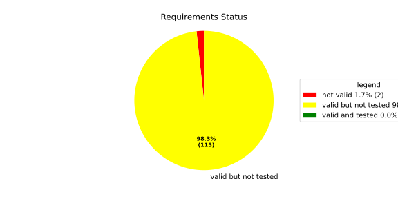
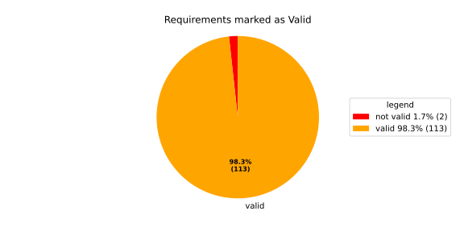
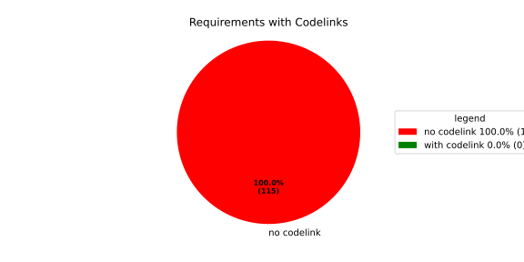

Component Requirements Statistics#
Overview#

In Detail#


No needs passed the filters
Failed Tests
Hint: This table should be empty. Before a PR can be merged all tests have to be successful.
No needs passed the filters
Skipped / Disabled Tests
No needs passed the filters
All passed Tests#
No needs passed the filters
Details About Testcases#
No needs passed the filters
No needs passed the filters
Test Log Files#
tests-report/score/health_monitor/src/rust/tests/test.log
exec ${PAGER:-/usr/bin/less} "$0" || exit 1
Executing tests from //score/health_monitor/src/rust:tests
-----------------------------------------------------------------------------
running 232 tests
test common::tests::time_offset_diff_too_large - should panic ... ok
test common::tests::time_offset_valid ... ok
test common::tests::time_offset_wrong_order ... ok
test common::tests::time_range_from_interval_lower_too_large - should panic ... ok
test common::tests::time_range_from_interval_valid ... ok
test common::tests::duration_to_int_too_large - should panic ... ok
test common::tests::time_range_new_valid ... ok
test common::tests::time_range_new_wrong_order - should panic ... ok
test deadline::common::tests::acquire_and_release_deadline ... ok
test deadline::common::tests::new_and_fields ... ok
test deadline::deadline_monitor::tests::deadline_failed_on_first_run_and_then_restarted_is_evaluated_as_error ... ok
test common::tests::duration_to_int_valid ... ok
test deadline::common::tests::concurrent_acquire ... ok
test deadline::deadline_monitor::tests::deadline_outside_time_range_is_error_when_dropped_after_evaluate ... ok
test deadline::deadline_monitor::tests::start_stop_deadline_outside_ranges_is_error_when_dropped_before_evaluate ... ok
test deadline::deadline_monitor::tests::get_deadline_unknown_tag ... ok
test deadline::deadline_state::tests::as_u64_and_new ... ok
test deadline::deadline_state::tests::deadline_state_default_and_snapshot ... ok
test deadline::deadline_state::tests::deadline_state_update_none_returns_err ... ok
test deadline::deadline_state::tests::deadline_state_update_success ... ok
test deadline::deadline_state::tests::default_state ... ok
test deadline::deadline_state::tests::set_and_get_timestamp_ms ... ok
test deadline::deadline_state::tests::set_running ... ok
test deadline::deadline_state::tests::set_underrun ... ok
test deadline::ffi::tests::deadline_destroy_null_deadline ... ok
test deadline::ffi::tests::deadline_monitor_builder_add_deadline_invalid_range ... ok
test deadline::ffi::tests::deadline_monitor_builder_add_deadline_null_builder ... ok
test deadline::ffi::tests::deadline_monitor_builder_add_deadline_null_deadline_tag ... ok
test deadline::ffi::tests::deadline_monitor_builder_add_deadline_succeeds ... ok
test deadline::deadline_monitor::tests::start_stop_deadline_outside_ranges_is_evaluated_as_error ... ok
test deadline::ffi::tests::deadline_monitor_builder_create_null_builder ... ok
test deadline::ffi::tests::deadline_monitor_builder_create_succeeds ... ok
test deadline::ffi::tests::deadline_monitor_builder_destroy_null_builder ... ok
test deadline::ffi::tests::deadline_monitor_destroy_null_monitor ... ok
test deadline::ffi::tests::deadline_monitor_get_deadline_null_deadline_tag ... ok
test deadline::ffi::tests::deadline_monitor_get_deadline_null_monitor ... ok
test deadline::ffi::tests::deadline_monitor_get_deadline_succeeds ... ok
test deadline::ffi::tests::deadline_monitor_get_deadline_unknown_deadline ... ok
test deadline::ffi::tests::deadline_start_already_started ... ok
test deadline::ffi::tests::deadline_monitor_get_deadline_null_deadline_handle ... ok
test deadline::ffi::tests::deadline_start_null_deadline ... ok
test deadline::ffi::tests::deadline_stop_null_deadline ... ok
test deadline::ffi::tests::deadline_stop_succeeds ... ok
test ffi::tests::health_monitor_builder_add_deadline_monitor_null_deadline_monitor_builder ... ok
test ffi::tests::health_monitor_builder_add_deadline_monitor_null_hmon_builder ... ok
test ffi::tests::health_monitor_builder_add_deadline_monitor_null_monitor_tag ... ok
test ffi::tests::health_monitor_builder_add_deadline_monitor_succeeds ... ok
test ffi::tests::health_monitor_builder_add_heartbeat_monitor_null_heartbeat_monitor_builder ... ok
test ffi::tests::health_monitor_builder_add_heartbeat_monitor_null_hmon_builder ... ok
test deadline::ffi::tests::deadline_start_succeeds ... ok
test ffi::tests::health_monitor_builder_add_heartbeat_monitor_null_monitor_tag ... ok
test ffi::tests::health_monitor_builder_add_logic_monitor_null_hmon_builder ... ok
test ffi::tests::health_monitor_builder_add_logic_monitor_null_logic_monitor_builder ... ok
test ffi::tests::health_monitor_builder_add_logic_monitor_null_monitor_tag ... ok
test ffi::tests::health_monitor_builder_add_logic_monitor_succeeds ... ok
test ffi::tests::health_monitor_builder_build_invalid_cycle_intervals ... ok
test ffi::tests::health_monitor_builder_add_heartbeat_monitor_succeeds ... ok
test ffi::tests::health_monitor_builder_build_no_monitors ... ok
test ffi::tests::health_monitor_builder_build_null_builder_handle ... ok
test ffi::tests::health_monitor_builder_build_null_monitor_handle ... ok
test ffi::tests::health_monitor_builder_build_succeeds ... ok
test ffi::tests::health_monitor_builder_build_valid_cycle_intervals_succeeds ... ok
test ffi::tests::health_monitor_builder_create_null_handle ... ok
test ffi::tests::health_monitor_builder_create_succeeds ... ok
test ffi::tests::health_monitor_builder_destroy_null_handle ... ok
test ffi::tests::health_monitor_destroy_null_hmon ... ok
test ffi::tests::health_monitor_get_deadline_monitor_already_taken ... ok
test ffi::tests::health_monitor_get_deadline_monitor_null_deadline_monitor ... ok
test ffi::tests::health_monitor_get_deadline_monitor_null_hmon ... ok
test ffi::tests::health_monitor_get_deadline_monitor_null_monitor_tag ... ok
test ffi::tests::health_monitor_get_deadline_monitor_succeeds ... ok
test ffi::tests::health_monitor_get_heartbeat_monitor_already_taken ... ok
test ffi::tests::health_monitor_get_heartbeat_monitor_null_heartbeat_monitor ... ok
test ffi::tests::health_monitor_get_heartbeat_monitor_null_hmon ... ok
test ffi::tests::health_monitor_get_heartbeat_monitor_null_monitor_tag ... ok
test ffi::tests::health_monitor_get_heartbeat_monitor_succeeds ... ok
test ffi::tests::health_monitor_builder_build_thread_parameters ... ok
test ffi::tests::health_monitor_get_logic_monitor_already_taken ... ok
test ffi::tests::health_monitor_get_logic_monitor_null_hmon ... ok
test ffi::tests::health_monitor_get_logic_monitor_null_logic_monitor ... ok
test ffi::tests::health_monitor_get_logic_monitor_null_monitor_tag ... ok
test ffi::tests::health_monitor_get_logic_monitor_succeeds ... ok
test ffi::tests::health_monitor_start_monitor_not_taken ... ok
test ffi::tests::health_monitor_start_null_hmon ... ok
[2026/06/10 11:10:21.1389640][14153][HMON][INFO] Monitoring thread started.
[2026/06/10 11:10:21.1390015][14153][HMON][INFO] Monitoring thread exiting.
test ffi::tests::health_monitor_start_succeeds ... ok
test health_monitor::tests::health_monitor_builder_build_invalid_cycles ... ok
test health_monitor::tests::health_monitor_builder_build_succeeds ... ok
test health_monitor::tests::health_monitor_builder_new_succeeds ... ok
test health_monitor::tests::health_monitor_get_deadline_monitor_available ... ok
test health_monitor::tests::health_monitor_builder_build_no_monitors ... ok
test health_monitor::tests::health_monitor_get_deadline_monitor_taken ... ok
test health_monitor::tests::health_monitor_get_deadline_monitor_unknown ... ok
test health_monitor::tests::health_monitor_get_heartbeat_monitor_available ... ok
test health_monitor::tests::health_monitor_get_heartbeat_monitor_invalid_state ... ok
test health_monitor::tests::health_monitor_get_heartbeat_monitor_taken ... ok
test health_monitor::tests::health_monitor_get_heartbeat_monitor_unknown ... ok
test health_monitor::tests::health_monitor_get_logic_monitor_available ... ok
test health_monitor::tests::health_monitor_get_logic_monitor_invalid_state ... ok
test health_monitor::tests::health_monitor_get_logic_monitor_taken ... ok
test health_monitor::tests::health_monitor_get_logic_monitor_unknown ... ok
test health_monitor::tests::health_monitor_start_monitors_not_taken - should panic ... ok
[2026/06/10 11:10:21.1432114][14153][HMON][INFO] Monitoring thread started.
[2026/06/10 11:10:21.1432238][14153][HMON][INFO] Monitoring thread exiting.
test health_monitor::tests::health_monitor_start_succeeds ... ok
test heartbeat::ffi::tests::heartbeat_monitor_builder_create_invalid_range ... ok
test heartbeat::ffi::tests::heartbeat_monitor_builder_create_null_builder ... ok
test heartbeat::ffi::tests::heartbeat_monitor_builder_create_succeeds ... ok
test heartbeat::ffi::tests::heartbeat_monitor_builder_destroy_null_builder ... ok
test heartbeat::ffi::tests::heartbeat_monitor_destroy_null_monitor ... ok
test health_monitor::tests::health_monitor_get_deadline_monitor_invalid_state ... ok
test heartbeat::ffi::tests::heartbeat_monitor_heartbeat_null_monitor ... ok
test heartbeat::ffi::tests::heartbeat_monitor_heartbeat_succeeds ... ok
test deadline::deadline_monitor::tests::monitor_with_multiple_running_deadlines ... ok
test heartbeat::heartbeat_monitor::tests::heartbeat_monitor_beat_early_evaluate_early ... ok
test heartbeat::heartbeat_monitor::tests::heartbeat_monitor_beat_early_evaluate_in_range ... ok
test heartbeat::heartbeat_monitor::tests::heartbeat_monitor_beat_in_range_evaluate_in_range ... ok
test heartbeat::heartbeat_monitor::tests::heartbeat_monitor_beat_early_evaluate_late ... ok
test heartbeat::heartbeat_monitor::tests::heartbeat_monitor_builder_build_invalid_internal_processing_cycle ... ok
test heartbeat::heartbeat_monitor::tests::heartbeat_monitor_builder_build_ok ... ok
test heartbeat::heartbeat_monitor::tests::heartbeat_monitor_beat_in_range_evaluate_late ... ok
test heartbeat::heartbeat_monitor::tests::heartbeat_monitor_beat_late_evaluate_late ... ok
test heartbeat::heartbeat_monitor::tests::heartbeat_monitor_cycle_early ... ok
test heartbeat::heartbeat_monitor::tests::heartbeat_monitor_multiple_beats_early_evaluate_early ... ok
test heartbeat::heartbeat_monitor::tests::heartbeat_monitor_cycle_in_range ... ok
test heartbeat::heartbeat_monitor::tests::heartbeat_monitor_multiple_beats_early_evaluate_in_range ... ok
test heartbeat::heartbeat_monitor::tests::heartbeat_monitor_multiple_beats_in_range_evaluate_in_range ... ok
test heartbeat::heartbeat_monitor::tests::heartbeat_monitor_multiple_beats_early_evaluate_late ... ok
test heartbeat::heartbeat_monitor::tests::heartbeat_monitor_cycle_late ... ok
test heartbeat::heartbeat_monitor::tests::heartbeat_monitor_no_beat_evaluate_early ... ok
test heartbeat::heartbeat_monitor::tests::heartbeat_monitor_no_beat_evaluate_in_range ... ok
test heartbeat::heartbeat_monitor::tests::heartbeat_monitor_multiple_beats_in_range_evaluate_late ... ok
test heartbeat::heartbeat_monitor::tests::heartbeat_monitor_multiple_beats_late_evaluate_late ... ok
test heartbeat::heartbeat_state::tests::snapshot_counter_increment ... ok
test heartbeat::heartbeat_state::tests::snapshot_default ... ok
test heartbeat::heartbeat_state::tests::snapshot_from_u64_max ... ok
test heartbeat::heartbeat_state::tests::snapshot_from_u64_valid ... ok
test heartbeat::heartbeat_state::tests::snapshot_from_u64_zero ... ok
test heartbeat::heartbeat_state::tests::snapshot_new_succeeds ... ok
test heartbeat::heartbeat_state::tests::snapshot_set_heartbeat_timestamp_out_of_range - should panic ... ok
test heartbeat::heartbeat_state::tests::snapshot_set_heartbeat_timestamp_valid ... ok
test heartbeat::heartbeat_state::tests::state_default ... ok
test heartbeat::heartbeat_state::tests::state_new ... ok
test heartbeat::heartbeat_state::tests::state_reset ... ok
test heartbeat::heartbeat_state::tests::state_snapshot ... ok
test heartbeat::heartbeat_state::tests::state_update_none ... ok
test heartbeat::heartbeat_state::tests::state_update_some ... ok
test logic::ffi::tests::logic_monitor_builder_add_state_null_allowed_states_many_elements ... ok
test logic::ffi::tests::logic_monitor_builder_add_state_null_allowed_states_zero_elements ... ok
test logic::ffi::tests::logic_monitor_builder_add_state_null_builder ... ok
test logic::ffi::tests::logic_monitor_builder_add_state_null_tag ... ok
test logic::ffi::tests::logic_monitor_builder_add_state_succeeds ... ok
test logic::ffi::tests::logic_monitor_builder_create_null_builder ... ok
test logic::ffi::tests::logic_monitor_builder_create_null_initial_state ... ok
test logic::ffi::tests::logic_monitor_builder_create_succeeds ... ok
test logic::ffi::tests::logic_monitor_builder_destroy_null_builder ... ok
test logic::ffi::tests::logic_monitor_destroy_null_monitor ... ok
test logic::ffi::tests::logic_monitor_state_fails ... ok
test logic::ffi::tests::logic_monitor_state_null_monitor ... ok
test logic::ffi::tests::logic_monitor_state_null_state ... ok
test logic::ffi::tests::logic_monitor_state_succeeds ... ok
test logic::ffi::tests::logic_monitor_transition_fails ... ok
test logic::ffi::tests::logic_monitor_transition_null_monitor ... ok
test logic::ffi::tests::logic_monitor_transition_null_target_state ... ok
test logic::ffi::tests::logic_monitor_transition_succeeds ... ok
test logic::logic_monitor::tests::logic_monitor_builder_build_no_states ... ok
test logic::logic_monitor::tests::logic_monitor_builder_build_succeeds ... ok
test logic::logic_monitor::tests::logic_monitor_builder_build_undefined_initial_state ... ok
test logic::logic_monitor::tests::logic_monitor_builder_build_undefined_target ... ok
test logic::logic_monitor::tests::logic_monitor_builder_new_succeeds ... ok
test logic::logic_monitor::tests::logic_monitor_evaluate_invalid_state ... ok
test logic::logic_monitor::tests::logic_monitor_evaluate_invalid_transition ... ok
test logic::logic_monitor::tests::logic_monitor_evaluate_succeeds ... ok
test logic::logic_monitor::tests::logic_monitor_state_indeterminate_current_state ... ok
test logic::logic_monitor::tests::logic_monitor_state_succeeds ... ok
test logic::logic_monitor::tests::logic_monitor_transition_indeterminate_current_state ... ok
test logic::logic_monitor::tests::logic_monitor_transition_invalid_transition ... ok
test logic::logic_monitor::tests::logic_monitor_transition_succeeds ... ok
test logic::logic_monitor::tests::logic_monitor_transition_unknown_node ... ok
test logic::logic_state::tests::snapshot_from_u64_max ... ok
test logic::logic_state::tests::snapshot_from_u64_valid ... ok
test logic::logic_state::tests::snapshot_from_u64_zero ... ok
test logic::logic_state::tests::snapshot_new_succeeds ... ok
test logic::logic_state::tests::snapshot_set_current_state_index_valid ... ok
test logic::logic_state::tests::snapshot_set_heartbeat_timestamp_out_of_range - should panic ... ok
test logic::logic_state::tests::snapshot_set_monitor_status_valid ... ok
test logic::logic_state::tests::state_new ... ok
test logic::logic_state::tests::state_snapshot ... ok
test logic::logic_state::tests::state_swap ... ok
test tag::tests::deadline_tag_debug ... ok
test tag::tests::deadline_tag_from_str ... ok
test tag::tests::deadline_tag_from_string ... ok
test tag::tests::deadline_tag_new ... ok
test tag::tests::deadline_tag_score_debug ... ok
test tag::tests::monitor_tag_debug ... ok
test tag::tests::monitor_tag_from_str ... ok
test tag::tests::monitor_tag_from_string ... ok
test tag::tests::monitor_tag_new ... ok
test tag::tests::monitor_tag_score_debug ... ok
test tag::tests::state_tag_debug ... ok
test tag::tests::state_tag_from_str ... ok
test tag::tests::state_tag_from_string ... ok
test tag::tests::state_tag_new ... ok
test tag::tests::state_tag_score_debug ... ok
test tag::tests::tag_debug ... ok
test heartbeat::heartbeat_monitor::tests::heartbeat_monitor_no_beat_evaluate_late ... ok
test tag::tests::tag_hash_is_eq ... ok
test tag::tests::tag_hash_is_ne ... ok
test tag::tests::tag_new ... ok
test tag::tests::tag_partial_eq_is_ne ... ok
test tag::tests::tag_score_debug ... ok
test tag::tests::test_from_str ... ok
test tag::tests::test_from_string ... ok
test thread_ffi::tests::scheduler_policy_priority_max_null_priority ... ok
test thread_ffi::tests::scheduler_policy_priority_max_succeeds ... ok
test thread_ffi::tests::scheduler_policy_priority_min_null_priority ... ok
test thread_ffi::tests::scheduler_policy_priority_min_succeeds ... ok
test thread_ffi::tests::thread_parameters_affinity_null_affinity_many_elements ... ok
test thread_ffi::tests::thread_parameters_affinity_null_affinity_zero_elements ... ok
test tag::tests::tag_partial_eq_is_eq ... ok
test thread_ffi::tests::thread_parameters_affinity_null_handle ... ok
test thread_ffi::tests::thread_parameters_create_succeeds ... ok
test thread_ffi::tests::thread_parameters_destroy_null_handle ... ok
test thread_ffi::tests::thread_parameters_scheduler_parameters_invalid_priority ... ok
test thread_ffi::tests::thread_parameters_scheduler_parameters_null_handle ... ok
test thread_ffi::tests::thread_parameters_scheduler_parameters_succeeds ... ok
test thread_ffi::tests::thread_parameters_stack_size_null_handle ... ok
test thread_ffi::tests::thread_parameters_stack_size_succeeds ... ok
test thread_ffi::tests::thread_parameters_affinity_succeeds ... ok
test worker::tests::monitoring_logic_report_alive_on_each_call_when_no_error ... ok
test worker::tests::monitoring_logic_report_error_when_deadline_failed ... ok
[2026/06/10 11:10:22.1112518][14153][HMON][INFO] Monitoring thread started.
test deadline::deadline_monitor::tests::start_stop_deadline_within_range_works ... ok
[2026/06/10 11:10:22.1717307][14153][HMON][WARN] Deadline (DeadlineTag(deadline_fast)) missed! Expected: 50, now: 60
[2026/06/10 11:10:22.1717637][14153][HMON][WARN] Deadline monitor with tag MonitorTag(deadline_monitor) reported error: TooLate.
[2026/06/10 11:10:22.1717732][14153][HMON][WARN] One or more monitors reported errors, skipping AliveAPI notification.
[2026/06/10 11:10:22.1717799][14153][HMON][INFO] Monitoring logic failed, stopping thread.
[2026/06/10 11:10:22.1717862][14153][HMON][INFO] Monitoring thread exiting.
test worker::tests::unique_thread_runner_monitoring_works ... ok
test worker::tests::monitoring_logic_report_alive_respect_cycle ... ok
test heartbeat::heartbeat_monitor::tests::heartbeat_monitor_timestamp_offset ... ok
test result: ok. 232 passed; 0 failed; 0 ignored; 0 measured; 0 filtered out; finished in 1.28s
tests-report/score/health_monitor/src/rust/loom_tests/test.log
exec ${PAGER:-/usr/bin/less} "$0" || exit 1
Executing tests from //score/health_monitor/src/rust:loom_tests
-----------------------------------------------------------------------------
running 3 tests
test heartbeat::heartbeat_monitor::loom_tests::heartbeat_monitor_heartbeat_evaluate_too_early ... ok
test heartbeat::heartbeat_monitor::loom_tests::heartbeat_monitor_heartbeat_evaluate_in_range ... ok
test heartbeat::heartbeat_monitor::loom_tests::heartbeat_monitor_heartbeat_evaluate_too_late ... ok
test result: ok. 3 passed; 0 failed; 0 ignored; 0 measured; 0 filtered out; finished in 0.70s
tests-report/score/health_monitor/src/cpp/cpp_integration_tests/test.log
exec ${PAGER:-/usr/bin/less} "$0" || exit 1
Executing tests from //score/health_monitor/src/cpp:cpp_integration_tests
-----------------------------------------------------------------------------
Running main() from gmock_main.cc
[==========] Running 1 test from 1 test suite.
[----------] Global test environment set-up.
[----------] 1 test from HealthMonitorTest
[ RUN ] HealthMonitorTest.Integrated
[2026/06/10 11:10:22.2930387][score/health_monitor/src/rust/deadline/deadline_monitor.rs:217][14538][HMON][ERROR] Deadline DeadlineTag(deadline_1) stopped too early by 100 ms
[2026/06/10 11:10:22.3140670][score/health_monitor/src/rust/worker.rs:121][14538][HMON][INFO] Monitoring thread started.
[2026/06/10 11:10:22.3140980][score/health_monitor/src/rust/worker.rs:139][14538][HMON][INFO] Monitoring thread exiting.
[ OK ] HealthMonitorTest.Integrated (25 ms)
[----------] 1 test from HealthMonitorTest (25 ms total)
[----------] Global test environment tear-down
[==========] 1 test from 1 test suite ran. (25 ms total)
[ PASSED ] 1 test.
tests-report/score/health_monitor/src/cpp/cpp_unit_tests/test.log
exec ${PAGER:-/usr/bin/less} "$0" || exit 1
Executing tests from //score/health_monitor/src/cpp:cpp_unit_tests
-----------------------------------------------------------------------------
Running main() from gmock_main.cc
[==========] Running 33 tests from 10 test suites.
[----------] Global test environment set-up.
[----------] 2 tests from DeadlineMonitorBuilderFixture
[ RUN ] DeadlineMonitorBuilderFixture.New_Succeeds
[ OK ] DeadlineMonitorBuilderFixture.New_Succeeds (0 ms)
[ RUN ] DeadlineMonitorBuilderFixture.AddDeadline_Succeeds
[ OK ] DeadlineMonitorBuilderFixture.AddDeadline_Succeeds (0 ms)
[----------] 2 tests from DeadlineMonitorBuilderFixture (0 ms total)
[----------] 2 tests from DeadlineMonitorFixture
[ RUN ] DeadlineMonitorFixture.GetDeadline_Succeeds
[ OK ] DeadlineMonitorFixture.GetDeadline_Succeeds (0 ms)
[ RUN ] DeadlineMonitorFixture.GetDeadline_Unknown
[ OK ] DeadlineMonitorFixture.GetDeadline_Unknown (0 ms)
[----------] 2 tests from DeadlineMonitorFixture (0 ms total)
[----------] 2 tests from DeadlineFixture
[ RUN ] DeadlineFixture.Start_Succeeds
[2026/06/10 11:10:21.5202999][score/health_monitor/src/rust/deadline/deadline_monitor.rs:217][14303][HMON][ERROR] Deadline DeadlineTag(deadline) stopped too early by 50 ms
[ OK ] DeadlineFixture.Start_Succeeds (0 ms)
[ RUN ] DeadlineFixture.Start_AlreadyRunning
[2026/06/10 11:10:21.5203748][score/health_monitor/src/rust/deadline/deadline_monitor.rs:217][14303][HMON][ERROR] Deadline DeadlineTag(deadline) stopped too early by 50 ms
[2026/06/10 11:10:21.5203845][score/health_monitor/src/rust/deadline/deadline_monitor.rs:172][14303][HMON][WARN] Trying to start deadline DeadlineTag(deadline) that already failed
[ OK ] DeadlineFixture.Start_AlreadyRunning (0 ms)
[----------] 2 tests from DeadlineFixture (0 ms total)
[----------] 4 tests from HealthMonitorBuilderFixture
[ RUN ] HealthMonitorBuilderFixture.New_Succeeds
[ OK ] HealthMonitorBuilderFixture.New_Succeeds (0 ms)
[ RUN ] HealthMonitorBuilderFixture.Build_Succeeds
[ OK ] HealthMonitorBuilderFixture.Build_Succeeds (0 ms)
[ RUN ] HealthMonitorBuilderFixture.Build_InvalidCycles
[2026/06/10 11:10:21.5205512][score/health_monitor/src/rust/health_monitor.rs:134][14303][HMON][ERROR] Supervisor API cycle duration (123 ms) must be a multiple of internal processing cycle interval (100 ms).
[ OK ] HealthMonitorBuilderFixture.Build_InvalidCycles (0 ms)
[ RUN ] HealthMonitorBuilderFixture.Build_NoMonitors
[2026/06/10 11:10:21.5205854][score/health_monitor/src/rust/health_monitor.rs:146][14303][HMON][ERROR] No monitors have been added. HealthMonitor cannot be created.
[ OK ] HealthMonitorBuilderFixture.Build_NoMonitors (0 ms)
[----------] 4 tests from HealthMonitorBuilderFixture (0 ms total)
[----------] 11 tests from HealthMonitor
[ RUN ] HealthMonitor.GetDeadlineMonitor_Available
[ OK ] HealthMonitor.GetDeadlineMonitor_Available (0 ms)
[ RUN ] HealthMonitor.GetDeadlineMonitor_Taken
[ OK ] HealthMonitor.GetDeadlineMonitor_Taken (0 ms)
[ RUN ] HealthMonitor.GetDeadlineMonitor_Unknown
[ OK ] HealthMonitor.GetDeadlineMonitor_Unknown (0 ms)
[ RUN ] HealthMonitor.GetHeartbeatMonitor_Available
[ OK ] HealthMonitor.GetHeartbeatMonitor_Available (0 ms)
[ RUN ] HealthMonitor.GetHeartbeatMonitor_Taken
[ OK ] HealthMonitor.GetHeartbeatMonitor_Taken (0 ms)
[ RUN ] HealthMonitor.GetHeartbeatMonitor_Unknown
[ OK ] HealthMonitor.GetHeartbeatMonitor_Unknown (0 ms)
[ RUN ] HealthMonitor.GetLogicMonitor_Available
[ OK ] HealthMonitor.GetLogicMonitor_Available (0 ms)
[ RUN ] HealthMonitor.GetLogicMonitor_Taken
[ OK ] HealthMonitor.GetLogicMonitor_Taken (0 ms)
[ RUN ] HealthMonitor.GetLogicMonitor_Unknown
[ OK ] HealthMonitor.GetLogicMonitor_Unknown (0 ms)
[ RUN ] HealthMonitor.Start_Succeeds
[2026/06/10 11:10:21.5209888][score/health_monitor/src/rust/worker.rs:121][14303][HMON][INFO] Monitoring thread started.
[2026/06/10 11:10:21.5210064][score/health_monitor/src/rust/worker.rs:139][14303][HMON][INFO] Monitoring thread exiting.
[ OK ] HealthMonitor.Start_Succeeds (0 ms)
[ RUN ] HealthMonitor.Start_MonitorsNotTaken
[WARNING] external/googletest+/googletest/src/gtest-death-test.cc:1104:: Death tests use fork(), which is unsafe particularly in a threaded context. For this test, Google Test detected 2 threads. See https://github.com/google/googletest/blob/main/docs/advanced.md#death-tests-and-threads for more explanation and suggested solutions, especially if this is the last message you see before your test times out.
[2026/06/10 11:10:21.5219850][score/health_monitor/src/rust/health_monitor.rs:307][14309][HMON][ERROR] All monitors must be taken before starting HealthMonitor but MonitorTag(deadline_monitor) is not taken.
[ OK ] HealthMonitor.Start_MonitorsNotTaken (291 ms)
[----------] 11 tests from HealthMonitor (291 ms total)
[----------] 1 test from HeartbeatMonitorBuilder
[ RUN ] HeartbeatMonitorBuilder.New_Succeeds
[ OK ] HeartbeatMonitorBuilder.New_Succeeds (0 ms)
[----------] 1 test from HeartbeatMonitorBuilder (0 ms total)
[----------] 1 test from HeartbeatMonitor
[ RUN ] HeartbeatMonitor.Heartbeat_Succeeds
[ OK ] HeartbeatMonitor.Heartbeat_Succeeds (0 ms)
[----------] 1 test from HeartbeatMonitor (0 ms total)
[----------] 2 tests from LogicMonitorBuilderFixture
[ RUN ] LogicMonitorBuilderFixture.New_Succeeds
[ OK ] LogicMonitorBuilderFixture.New_Succeeds (0 ms)
[ RUN ] LogicMonitorBuilderFixture.AddState_Succeeds
[ OK ] LogicMonitorBuilderFixture.AddState_Succeeds (0 ms)
[----------] 2 tests from LogicMonitorBuilderFixture (0 ms total)
[----------] 5 tests from LogicMonitorFixture
[ RUN ] LogicMonitorFixture.Transition_Succeeds
[ OK ] LogicMonitorFixture.Transition_Succeeds (0 ms)
[ RUN ] LogicMonitorFixture.Transition_Unknown
[2026/06/10 11:10:21.8125653][score/health_monitor/src/rust/logic/logic_monitor.rs:265][14303][HMON][WARN] Requested state transition is invalid: StateTag(state1) -> StateTag(unknown)
[ OK ] LogicMonitorFixture.Transition_Unknown (0 ms)
[ RUN ] LogicMonitorFixture.Transition_Invalid
[2026/06/10 11:10:21.8126576][score/health_monitor/src/rust/logic/logic_monitor.rs:265][14303][HMON][WARN] Requested state transition is invalid: StateTag(state1) -> StateTag(unknown)
[2026/06/10 11:10:21.8126706][score/health_monitor/src/rust/logic/logic_monitor.rs:254][14303][HMON][WARN] Current logic monitor state cannot be determined
[ OK ] LogicMonitorFixture.Transition_Invalid (0 ms)
[ RUN ] LogicMonitorFixture.State_Succeeds
[ OK ] LogicMonitorFixture.State_Succeeds (0 ms)
[ RUN ] LogicMonitorFixture.State_Invalid
[2026/06/10 11:10:21.8127796][score/health_monitor/src/rust/logic/logic_monitor.rs:265][14303][HMON][WARN] Requested state transition is invalid: StateTag(state1) -> StateTag(unknown)
[2026/06/10 11:10:21.8127918][score/health_monitor/src/rust/logic/logic_monitor.rs:290][14303][HMON][WARN] Current logic monitor state cannot be determined
[ OK ] LogicMonitorFixture.State_Invalid (0 ms)
[----------] 5 tests from LogicMonitorFixture (0 ms total)
[----------] 3 tests from TimeRangeFixture
[ RUN ] TimeRangeFixture.New_Succeeds
[ OK ] TimeRangeFixture.New_Succeeds (0 ms)
[ RUN ] TimeRangeFixture.New_InvalidOrder
[ OK ] TimeRangeFixture.New_InvalidOrder (395 ms)
[ RUN ] TimeRangeFixture.MinMax
[ OK ] TimeRangeFixture.MinMax (0 ms)
[----------] 3 tests from TimeRangeFixture (395 ms total)
[----------] Global test environment tear-down
[==========] 33 tests from 10 test suites ran. (688 ms total)
[ PASSED ] 33 tests.
tests-report/score/launch_manager/exec_error_domain_UT/test.log
exec ${PAGER:-/usr/bin/less} "$0" || exit 1
Executing tests from //score/launch_manager:exec_error_domain_UT
-----------------------------------------------------------------------------
Running main() from gmock_main.cc
[==========] Running 3 tests from 1 test suite.
[----------] Global test environment set-up.
[----------] 3 tests from ExecErrorDomainTest
[ RUN ] ExecErrorDomainTest.AllKnownCodesReturnNonEmptyMessage
[ OK ] ExecErrorDomainTest.AllKnownCodesReturnNonEmptyMessage (0 ms)
[ RUN ] ExecErrorDomainTest.AllKnownCodesHaveDistinctMessages
[ OK ] ExecErrorDomainTest.AllKnownCodesHaveDistinctMessages (0 ms)
[ RUN ] ExecErrorDomainTest.UnknownCodeReturnsNonEmptyMessage
[ OK ] ExecErrorDomainTest.UnknownCodeReturnsNonEmptyMessage (0 ms)
[----------] 3 tests from ExecErrorDomainTest (0 ms total)
[----------] Global test environment tear-down
[==========] 3 tests from 1 test suite ran. (0 ms total)
[ PASSED ] 3 tests.
tests-report/score/launch_manager/daemon/src/process_state_client/process_state_client_ut/test.log
exec ${PAGER:-/usr/bin/less} "$0" || exit 1
Executing tests from //score/launch_manager/daemon/src/process_state_client:process_state_client_ut
-----------------------------------------------------------------------------
Running main() from gmock_main.cc
[==========] Running 4 tests from 1 test suite.
[----------] Global test environment set-up.
[----------] 4 tests from ProcessStateClient_UT
[ RUN ] ProcessStateClient_UT.ProcessStateClient_ConstructReceiver_Succeeds
[ OK ] ProcessStateClient_UT.ProcessStateClient_ConstructReceiver_Succeeds (0 ms)
[ RUN ] ProcessStateClient_UT.ProcessStateClient_QueueOneProcess_Succeeds
[ OK ] ProcessStateClient_UT.ProcessStateClient_QueueOneProcess_Succeeds (0 ms)
[ RUN ] ProcessStateClient_UT.ProcessStateClient_QueueMaxNumberOfProcesses_Succeeds
[ OK ] ProcessStateClient_UT.ProcessStateClient_QueueMaxNumberOfProcesses_Succeeds (11 ms)
[ RUN ] ProcessStateClient_UT.ProcessStateClient_QueueOneProcessTooMany_Fails
mw::log initialization error: Error No logging configuration files could be found. occurred with context information: Failed to load configuration files. Fallback to console logging.
2026/06/10 11:07:41.9661304 3506026 000 ECU1 NONE LM log error verbose 1 Failed to queue posix process
2026/06/10 11:07:41.9661304 3506028 000 ECU1 NONE LM log error verbose 1 ProcessStateReceiver::getNextChangedPosixProcess: Overflow occurred, will be reported as kCommunicationError
[ OK ] ProcessStateClient_UT.ProcessStateClient_QueueOneProcessTooMany_Fails (6 ms)
[----------] 4 tests from ProcessStateClient_UT (19 ms total)
[----------] Global test environment tear-down
[==========] 4 tests from 1 test suite ran. (19 ms total)
[ PASSED ] 4 tests.
tests-report/score/launch_manager/daemon/src/recovery_client/recovery_client_UT/test.log
exec ${PAGER:-/usr/bin/less} "$0" || exit 1
Executing tests from //score/launch_manager/daemon/src/recovery_client:recovery_client_UT
-----------------------------------------------------------------------------
Running main() from gmock_main.cc
[==========] Running 5 tests from 1 test suite.
[----------] Global test environment set-up.
[----------] 5 tests from RecoveryClientTest
[ RUN ] RecoveryClientTest.SendSingleRequest
[ OK ] RecoveryClientTest.SendSingleRequest (0 ms)
[ RUN ] RecoveryClientTest.GetNextRequest
[ OK ] RecoveryClientTest.GetNextRequest (0 ms)
[ RUN ] RecoveryClientTest.GetNextRequestEmpty
[ OK ] RecoveryClientTest.GetNextRequestEmpty (0 ms)
[ RUN ] RecoveryClientTest.RingBufferFull
[ OK ] RecoveryClientTest.RingBufferFull (0 ms)
[ RUN ] RecoveryClientTest.FIFOOrdering
[ OK ] RecoveryClientTest.FIFOOrdering (0 ms)
[----------] 5 tests from RecoveryClientTest (0 ms total)
[----------] Global test environment tear-down
[==========] 5 tests from 1 test suite ran. (0 ms total)
[ PASSED ] 5 tests.
tests-report/score/launch_manager/daemon/src/alive_monitor/details/MonitorImpl_UT/test.log
exec ${PAGER:-/usr/bin/less} "$0" || exit 1
Executing tests from //score/launch_manager/daemon/src/alive_monitor/details:MonitorImpl_UT
-----------------------------------------------------------------------------
Running main() from gmock_main.cc
[==========] Running 3 tests from 1 test suite.
[----------] Global test environment set-up.
[----------] 3 tests from MonitorImplTest
[ RUN ] MonitorImplTest.ThrowsWhenInterfacePathEnvVarIsNotSet
mw::log initialization error: Error No logging configuration files could be found. occurred with context information: Failed to load configuration files. Fallback to console logging.
2026/06/10 11:07:18.9638025 3273237 000 ECU1 NONE Sprv log error verbose 3 Failed to load interface path for Monitor ( test/instance )
[ OK ] MonitorImplTest.ThrowsWhenInterfacePathEnvVarIsNotSet (4 ms)
[ RUN ] MonitorImplTest.DoesNotThrowWhenInterfacePathEnvVarIsSet
2026/06/10 11:07:18.9638026 3273243 000 ECU1 NONE Sprv log error verbose 3 Connection to PHM daemon failed, for the Monitor ( test/instance )
[ OK ] MonitorImplTest.DoesNotThrowWhenInterfacePathEnvVarIsSet (0 ms)
[ RUN ] MonitorImplTest.ReportCheckpointSafeWhenNotConnected
2026/06/10 11:07:18.9638026 3273244 000 ECU1 NONE Sprv log error verbose 3 Connection to PHM daemon failed, for the Monitor ( test/instance )
[ OK ] MonitorImplTest.ReportCheckpointSafeWhenNotConnected (0 ms)
[----------] 3 tests from MonitorImplTest (4 ms total)
[----------] Global test environment tear-down
[==========] 3 tests from 1 test suite ran. (4 ms total)
[ PASSED ] 3 tests.
tests-report/score/launch_manager/daemon/src/alive_monitor/details/supervision/Alive_UT/test.log
exec ${PAGER:-/usr/bin/less} "$0" || exit 1
Executing tests from //score/launch_manager/daemon/src/alive_monitor/details/supervision:Alive_UT
-----------------------------------------------------------------------------
Running main() from gmock_main.cc
[==========] Running 4 tests from 1 test suite.
[----------] Global test environment set-up.
[----------] 4 tests from AliveSupervisionTest
[ RUN ] AliveSupervisionTest.AliveTransitionsOkToExpiredOnMissingHeartbeat
mw::log initialization error: Error No logging configuration files could be found. occurred with context information: Failed to load configuration files. Fallback to console logging.
2026/06/10 11:07:41.9661517 3508151 000 ECU1 NONE Sprv log warn verbose 13 Alive Supervision ( test_alive ) switched to EXPIRED , due to 0 reported alive indication(s) (expected >= 1 ). Failed supervision cycles: 0 / 0
[ OK ] AliveSupervisionTest.AliveTransitionsOkToExpiredOnMissingHeartbeat (5 ms)
[ RUN ] AliveSupervisionTest.AliveStaysOkWithCorrectHeartbeats
[ OK ] AliveSupervisionTest.AliveStaysOkWithCorrectHeartbeats (0 ms)
[ RUN ] AliveSupervisionTest.AliveReportsEnqueueFailureWhenRingBufferFull
2026/06/10 11:07:41.9661518 3508162 000 ECU1 NONE Sprv log warn verbose 13 Alive Supervision ( test_alive ) switched to EXPIRED , due to 0 reported alive indication(s) (expected >= 1 ). Failed supervision cycles: 0 / 0
2026/06/10 11:07:41.9661518 3508162 000 ECU1 NONE Sprv log error verbose 3 Failed to enqueue recovery request for alive supervision test_alive failure (ring buffer full)
[ OK ] AliveSupervisionTest.AliveReportsEnqueueFailureWhenRingBufferFull (0 ms)
[ RUN ] AliveSupervisionTest.AliveDebouncesThroughFailedBeforeExpired
2026/06/10 11:07:41.9661518 3508164 000 ECU1 NONE Sprv log warn verbose 13 Alive Supervision ( test_alive ) switched to FAILED , due to 0 reported alive indication(s) (expected >= 1 ). Failed supervision cycles: 1 / 1
2026/06/10 11:07:41.9661518 3508165 000 ECU1 NONE Sprv log warn verbose 13 Alive Supervision ( test_alive ) switched to EXPIRED , due to 0 reported alive indication(s) (expected >= 1 ). Failed supervision cycles: 2 / 1
[ OK ] AliveSupervisionTest.AliveDebouncesThroughFailedBeforeExpired (0 ms)
[----------] 4 tests from AliveSupervisionTest (5 ms total)
[----------] Global test environment tear-down
[==========] 4 tests from 1 test suite ran. (6 ms total)
[ PASSED ] 4 tests.
tests-report/score/launch_manager/daemon/src/alive_monitor/details/ifappl/MonitorIfDaemon_UT/test.log
exec ${PAGER:-/usr/bin/less} "$0" || exit 1
Executing tests from //score/launch_manager/daemon/src/alive_monitor/details/ifappl:MonitorIfDaemon_UT
-----------------------------------------------------------------------------
Running main() from gmock_main.cc
[==========] Running 16 tests from 1 test suite.
[----------] Global test environment set-up.
[----------] 16 tests from MonitorIfDaemonTest
[ RUN ] MonitorIfDaemonTest.GetInterfaceName_ReturnsNameGivenAtConstruction
mw::log initialization error: Error No logging configuration files could be found. occurred with context information: Failed to load configuration files. Fallback to console logging.
[ OK ] MonitorIfDaemonTest.GetInterfaceName_ReturnsNameGivenAtConstruction (3 ms)
[ RUN ] MonitorIfDaemonTest.InitiallyInactive_CheckForNewData_DoesNotNotifyCheckpoint
[ OK ] MonitorIfDaemonTest.InitiallyInactive_CheckForNewData_DoesNotNotifyCheckpoint (0 ms)
[ RUN ] MonitorIfDaemonTest.ProcessOffBeforeActivation_RemainsInactive
[ OK ] MonitorIfDaemonTest.ProcessOffBeforeActivation_RemainsInactive (0 ms)
[ RUN ] MonitorIfDaemonTest.ProcessRunning_ActivatesMonitorOnNextCheckForNewData
[ OK ] MonitorIfDaemonTest.ProcessRunning_ActivatesMonitorOnNextCheckForNewData (0 ms)
[ RUN ] MonitorIfDaemonTest.ProcessStarting_AlsoActivatesMonitor
[ OK ] MonitorIfDaemonTest.ProcessStarting_AlsoActivatesMonitor (0 ms)
[ RUN ] MonitorIfDaemonTest.ProcessOff_DeactivatesMonitor_NoFurtherDataForwarded
[ OK ] MonitorIfDaemonTest.ProcessOff_DeactivatesMonitor_NoFurtherDataForwarded (0 ms)
[ RUN ] MonitorIfDaemonTest.Active_CheckpointDataForwarded
[ OK ] MonitorIfDaemonTest.Active_CheckpointDataForwarded (0 ms)
[ RUN ] MonitorIfDaemonTest.Active_FutureTimestamp_NotForwardedInCurrentCycle
[ OK ] MonitorIfDaemonTest.Active_FutureTimestamp_NotForwardedInCurrentCycle (0 ms)
[ RUN ] MonitorIfDaemonTest.Active_FutureTimestampCheckpoint_ConsumedInLaterCycle
[ OK ] MonitorIfDaemonTest.Active_FutureTimestampCheckpoint_ConsumedInLaterCycle (0 ms)
[ RUN ] MonitorIfDaemonTest.Active_NonMatchingCheckpointId_NotForwarded
[ OK ] MonitorIfDaemonTest.Active_NonMatchingCheckpointId_NotForwarded (0 ms)
[ RUN ] MonitorIfDaemonTest.Active_MultipleCheckpointsInOneCycle_AllForwarded
[ OK ] MonitorIfDaemonTest.Active_MultipleCheckpointsInOneCycle_AllForwarded (0 ms)
[ RUN ] MonitorIfDaemonTest.Active_TwoAttachedCheckpoints_RoutedByCheckpointId
[ OK ] MonitorIfDaemonTest.Active_TwoAttachedCheckpoints_RoutedByCheckpointId (0 ms)
[ RUN ] MonitorIfDaemonTest.Active_OverflowDetected_TransitionsToInactiveOverflow
2026/06/10 11:07:19.9639160 3284587 000 ECU1 NONE Sprv log warn verbose 3 MonitorInterface: Potential data loss of checkpoint ring buffer occurred. Instance: test_interface
[ OK ] MonitorIfDaemonTest.Active_OverflowDetected_TransitionsToInactiveOverflow (1 ms)
[ RUN ] MonitorIfDaemonTest.InactiveOverflow_NoProcessRestart_DoesNotRepeatNotification
2026/06/10 11:07:19.9639161 3284592 000 ECU1 NONE Sprv log warn verbose 3 MonitorInterface: Potential data loss of checkpoint ring buffer occurred. Instance: test_interface
[ OK ] MonitorIfDaemonTest.InactiveOverflow_NoProcessRestart_DoesNotRepeatNotification (0 ms)
[ RUN ] MonitorIfDaemonTest.InactiveOverflow_ProcessRestarts_PushesOverflowNotificationAgain
2026/06/10 11:07:19.9639161 3284595 000 ECU1 NONE Sprv log warn verbose 3 MonitorInterface: Potential data loss of checkpoint ring buffer occurred. Instance: test_interface
[ OK ] MonitorIfDaemonTest.InactiveOverflow_ProcessRestarts_PushesOverflowNotificationAgain (0 ms)
[ RUN ] MonitorIfDaemonTest.InactiveOverflow_ProcessRestartFlag_ClearedAfterNotification
2026/06/10 11:07:19.9639161 3284598 000 ECU1 NONE Sprv log warn verbose 3 MonitorInterface: Potential data loss of checkpoint ring buffer occurred. Instance: test_interface
[ OK ] MonitorIfDaemonTest.InactiveOverflow_ProcessRestartFlag_ClearedAfterNotification (0 ms)
[----------] 16 tests from MonitorIfDaemonTest (8 ms total)
[----------] Global test environment tear-down
[==========] 16 tests from 1 test suite ran. (8 ms total)
[ PASSED ] 16 tests.
tests-report/score/launch_manager/daemon/src/process_group_manager/details/safeprocessmap_UT/test.log
exec ${PAGER:-/usr/bin/less} "$0" || exit 1
Executing tests from //score/launch_manager/daemon/src/process_group_manager/details:safeprocessmap_UT
-----------------------------------------------------------------------------
Running main() from gmock_main.cc
[==========] Running 13 tests from 1 test suite.
[----------] Global test environment set-up.
[----------] 13 tests from SafeProcessMapTest
[ RUN ] SafeProcessMapTest.ConstructWithZeroCapacity
[ OK ] SafeProcessMapTest.ConstructWithZeroCapacity (0 ms)
[ RUN ] SafeProcessMapTest.FindTerminatedWithNegativePidReturnsInvalid
[ OK ] SafeProcessMapTest.FindTerminatedWithNegativePidReturnsInvalid (0 ms)
[ RUN ] SafeProcessMapTest.FindTerminatedInsertsEntryWhenPidNotPresent
[ OK ] SafeProcessMapTest.FindTerminatedInsertsEntryWhenPidNotPresent (0 ms)
[ RUN ] SafeProcessMapTest.FindTerminatedMatchesExistingInsertAndCallsCallback
[ OK ] SafeProcessMapTest.FindTerminatedMatchesExistingInsertAndCallsCallback (5 ms)
[ RUN ] SafeProcessMapTest.InsertIntoEmptyTreeReturnsZero
[ OK ] SafeProcessMapTest.InsertIntoEmptyTreeReturnsZero (0 ms)
[ RUN ] SafeProcessMapTest.InsertMatchesExistingFindTerminatedEntry
[ OK ] SafeProcessMapTest.InsertMatchesExistingFindTerminatedEntry (0 ms)
[ RUN ] SafeProcessMapTest.InsertMultipleNodesThenFindTerminatedRemovesAll
[ OK ] SafeProcessMapTest.InsertMultipleNodesThenFindTerminatedRemovesAll (18 ms)
[ RUN ] SafeProcessMapTest.InsertBeyondCapacityReturnsOutOfMemory
[ OK ] SafeProcessMapTest.InsertBeyondCapacityReturnsOutOfMemory (8 ms)
[ RUN ] SafeProcessMapTest.InsertSamePidTwiceYieldsUntilFindTerminatedResolves
[ OK ] SafeProcessMapTest.InsertSamePidTwiceYieldsUntilFindTerminatedResolves (13 ms)
[ RUN ] SafeProcessMapTest.FindTerminatedSamePidTwiceYieldsUntilInsertResolves
[ OK ] SafeProcessMapTest.FindTerminatedSamePidTwiceYieldsUntilInsertResolves (13 ms)
[ RUN ] SafeProcessMapTest.FindTerminatedWorksAtMaxTreeDepth
[ OK ] SafeProcessMapTest.FindTerminatedWorksAtMaxTreeDepth (0 ms)
[ RUN ] SafeProcessMapTest.ConcurrentInsertAndFindFromMultipleThreads
[ OK ] SafeProcessMapTest.ConcurrentInsertAndFindFromMultipleThreads (3419 ms)
[ RUN ] SafeProcessMapTest.ConcurrentFindAndInsertFromMultipleThreads
[ OK ] SafeProcessMapTest.ConcurrentFindAndInsertFromMultipleThreads (4849 ms)
[----------] 13 tests from SafeProcessMapTest (8363 ms total)
[----------] Global test environment tear-down
[==========] 13 tests from 1 test suite ran. (8363 ms total)
[ PASSED ] 13 tests.
tests-report/score/launch_manager/daemon/src/process_group_manager/details/oshandler_UT/test.log
exec ${PAGER:-/usr/bin/less} "$0" || exit 1
Executing tests from //score/launch_manager/daemon/src/process_group_manager/details:oshandler_UT
-----------------------------------------------------------------------------
Running main() from gmock_main.cc
[==========] Running 6 tests from 1 test suite.
[----------] Global test environment set-up.
[----------] 6 tests from OsHandlerTest
[ RUN ] OsHandlerTest.WaitReturnsProcessId_FindTerminatedIsCalled
[ OK ] OsHandlerTest.WaitReturnsProcessId_FindTerminatedIsCalled (103 ms)
[ RUN ] OsHandlerTest.WaitReturnsError_OsHandlerSleepsAndDoesNotCallFindTerminated
[ OK ] OsHandlerTest.WaitReturnsError_OsHandlerSleepsAndDoesNotCallFindTerminated (100 ms)
[ RUN ] OsHandlerTest.WaitReturnsZeroPid_OsHandlerSleepsAndDoesNotCallFindTerminated
[ OK ] OsHandlerTest.WaitReturnsZeroPid_OsHandlerSleepsAndDoesNotCallFindTerminated (100 ms)
[ RUN ] OsHandlerTest.WaitReturnsProcessIdBeforeRegistration_LaterRegistrationReceivesStoredTermination
[ OK ] OsHandlerTest.WaitReturnsProcessIdBeforeRegistration_LaterRegistrationReceivesStoredTermination (100 ms)
[ RUN ] OsHandlerTest.WaitReturnsUnknownPidWhenMapIsFull_OutOfResourcesPathDoesNotNotifyCallbacks
mw::log initialization error: Error No logging configuration files could be found. occurred with context information: Failed to load configuration files. Fallback to console logging.
2026/06/10 11:07:42.9662064 3513627 000 ECU1 NONE LM log error verbose 3 No more resources available to track process with PID 9999 (SafeProcessMap capacity exceeded).
[ OK ] OsHandlerTest.WaitReturnsUnknownPidWhenMapIsFull_OutOfResourcesPathDoesNotNotifyCallbacks (108 ms)
[ RUN ] OsHandlerTest.WaitReturnsErrorThenProcessId_HandlerRecoversAndInvokesCallback
[ OK ] OsHandlerTest.WaitReturnsErrorThenProcessId_HandlerRecoversAndInvokesCallback (200 ms)
[----------] 6 tests from OsHandlerTest (715 ms total)
[----------] Global test environment tear-down
[==========] 6 tests from 1 test suite ran. (715 ms total)
[ PASSED ] 6 tests.
tests-report/score/launch_manager/daemon/src/common/identifier_hash_UT/test.log
exec ${PAGER:-/usr/bin/less} "$0" || exit 1
Executing tests from //score/launch_manager/daemon/src/common:identifier_hash_UT
-----------------------------------------------------------------------------
Running main() from gmock_main.cc
[==========] Running 7 tests from 1 test suite.
[----------] Global test environment set-up.
[----------] 7 tests from IdentifierHashTest
[ RUN ] IdentifierHashTest.IdentifierHash_with_string_view_created
[ OK ] IdentifierHashTest.IdentifierHash_with_string_view_created (3 ms)
[ RUN ] IdentifierHashTest.IdentifierHash_with_string_created
[ OK ] IdentifierHashTest.IdentifierHash_with_string_created (0 ms)
[ RUN ] IdentifierHashTest.IdentifierHash_default_created
[ OK ] IdentifierHashTest.IdentifierHash_default_created (0 ms)
[ RUN ] IdentifierHashTest.IdentifierHash_invalid_hash_no_string_representation
[ OK ] IdentifierHashTest.IdentifierHash_invalid_hash_no_string_representation (0 ms)
[ RUN ] IdentifierHashTest.IdentifierHash_no_dangling_pointer_after_source_string_dies
[ OK ] IdentifierHashTest.IdentifierHash_no_dangling_pointer_after_source_string_dies (0 ms)
[ RUN ] IdentifierHashTest.IdentifierHash_EqualityOperators
[ OK ] IdentifierHashTest.IdentifierHash_EqualityOperators (0 ms)
[ RUN ] IdentifierHashTest.IdentifierHash_LessThanOperator
[ OK ] IdentifierHashTest.IdentifierHash_LessThanOperator (0 ms)
[----------] 7 tests from IdentifierHashTest (3 ms total)
[----------] Global test environment tear-down
[==========] 7 tests from 1 test suite ran. (3 ms total)
[ PASSED ] 7 tests.
tests-report/score/launch_manager/daemon/src/common/concurrency/mpmc_concurrent_queue_tsan_test/test.log
exec ${PAGER:-/usr/bin/less} "$0" || exit 1
Executing tests from //score/launch_manager/daemon/src/common/concurrency:mpmc_concurrent_queue_tsan_test
-----------------------------------------------------------------------------
Running main() from gmock_main.cc
[==========] Running 15 tests from 5 test suites.
[----------] Global test environment set-up.
[----------] 5 tests from MPMCConcurrentQueueTest_Basic
[ RUN ] MPMCConcurrentQueueTest_Basic.PushAndPopSingleItem
[ OK ] MPMCConcurrentQueueTest_Basic.PushAndPopSingleItem (0 ms)
[ RUN ] MPMCConcurrentQueueTest_Basic.PushAndPopPreservesOrder
[ OK ] MPMCConcurrentQueueTest_Basic.PushAndPopPreservesOrder (0 ms)
[ RUN ] MPMCConcurrentQueueTest_Basic.LvaluePushCopiesItem
[ OK ] MPMCConcurrentQueueTest_Basic.LvaluePushCopiesItem (0 ms)
[ RUN ] MPMCConcurrentQueueTest_Basic.RvaluePushWorksWithMoveOnlyType
[ OK ] MPMCConcurrentQueueTest_Basic.RvaluePushWorksWithMoveOnlyType (0 ms)
[ RUN ] MPMCConcurrentQueueTest_Basic.PopReturnsNulloptOnSemaphoreWaitFailure
[ OK ] MPMCConcurrentQueueTest_Basic.PopReturnsNulloptOnSemaphoreWaitFailure (21 ms)
[----------] 5 tests from MPMCConcurrentQueueTest_Basic (22 ms total)
[----------] 2 tests from MPMCConcurrentQueueTest_Timeout
[ RUN ] MPMCConcurrentQueueTest_Timeout.PushWithTimeoutSucceedsWhenSlotAvailable
[ OK ] MPMCConcurrentQueueTest_Timeout.PushWithTimeoutSucceedsWhenSlotAvailable (0 ms)
[ RUN ] MPMCConcurrentQueueTest_Timeout.PushWithTimeoutReturnsFalseWhenFull
[ OK ] MPMCConcurrentQueueTest_Timeout.PushWithTimeoutReturnsFalseWhenFull (20 ms)
[----------] 2 tests from MPMCConcurrentQueueTest_Timeout (21 ms total)
[----------] 3 tests from MPMCConcurrentQueueTest_Stop
[ RUN ] MPMCConcurrentQueueTest_Stop.PushReturnsFalseAfterStop
[ OK ] MPMCConcurrentQueueTest_Stop.PushReturnsFalseAfterStop (0 ms)
[ RUN ] MPMCConcurrentQueueTest_Stop.PopReturnsNulloptWhenStoppedAndEmpty
[ OK ] MPMCConcurrentQueueTest_Stop.PopReturnsNulloptWhenStoppedAndEmpty (0 ms)
[ RUN ] MPMCConcurrentQueueTest_Stop.ItemsAreDroppedAfterStop
[ OK ] MPMCConcurrentQueueTest_Stop.ItemsAreDroppedAfterStop (0 ms)
[----------] 3 tests from MPMCConcurrentQueueTest_Stop (0 ms total)
[----------] 4 tests from MPMCConcurrentQueueTest_Blocking
[ RUN ] MPMCConcurrentQueueTest_Blocking.PopBlocksUntilItemAvailable
[ OK ] MPMCConcurrentQueueTest_Blocking.PopBlocksUntilItemAvailable (0 ms)
[ RUN ] MPMCConcurrentQueueTest_Blocking.PushBlocksWhenFull
[ OK ] MPMCConcurrentQueueTest_Blocking.PushBlocksWhenFull (0 ms)
[ RUN ] MPMCConcurrentQueueTest_Blocking.StopUnblocksBlockedConsumer
[ OK ] MPMCConcurrentQueueTest_Blocking.StopUnblocksBlockedConsumer (0 ms)
[ RUN ] MPMCConcurrentQueueTest_Blocking.StopUnblocksBlockedProducer
[ OK ] MPMCConcurrentQueueTest_Blocking.StopUnblocksBlockedProducer (0 ms)
[----------] 4 tests from MPMCConcurrentQueueTest_Blocking (1 ms total)
[----------] 1 test from MPMCConcurrentQueueTest_MPMC
[ RUN ] MPMCConcurrentQueueTest_MPMC.AllItemsDelivered
[ OK ] MPMCConcurrentQueueTest_MPMC.AllItemsDelivered (4 ms)
[----------] 1 test from MPMCConcurrentQueueTest_MPMC (4 ms total)
[----------] Global test environment tear-down
[==========] 15 tests from 5 test suites ran. (50 ms total)
[ PASSED ] 15 tests.
tests-report/score/launch_manager/daemon/src/common/concurrency/mpmc_concurrent_queue_test/test.log
exec ${PAGER:-/usr/bin/less} "$0" || exit 1
Executing tests from //score/launch_manager/daemon/src/common/concurrency:mpmc_concurrent_queue_test
-----------------------------------------------------------------------------
Running main() from gmock_main.cc
[==========] Running 15 tests from 5 test suites.
[----------] Global test environment set-up.
[----------] 5 tests from MPMCConcurrentQueueTest_Basic
[ RUN ] MPMCConcurrentQueueTest_Basic.PushAndPopSingleItem
[ OK ] MPMCConcurrentQueueTest_Basic.PushAndPopSingleItem (0 ms)
[ RUN ] MPMCConcurrentQueueTest_Basic.PushAndPopPreservesOrder
[ OK ] MPMCConcurrentQueueTest_Basic.PushAndPopPreservesOrder (0 ms)
[ RUN ] MPMCConcurrentQueueTest_Basic.LvaluePushCopiesItem
[ OK ] MPMCConcurrentQueueTest_Basic.LvaluePushCopiesItem (0 ms)
[ RUN ] MPMCConcurrentQueueTest_Basic.RvaluePushWorksWithMoveOnlyType
[ OK ] MPMCConcurrentQueueTest_Basic.RvaluePushWorksWithMoveOnlyType (0 ms)
[ RUN ] MPMCConcurrentQueueTest_Basic.PopReturnsNulloptOnSemaphoreWaitFailure
[ OK ] MPMCConcurrentQueueTest_Basic.PopReturnsNulloptOnSemaphoreWaitFailure (20 ms)
[----------] 5 tests from MPMCConcurrentQueueTest_Basic (20 ms total)
[----------] 2 tests from MPMCConcurrentQueueTest_Timeout
[ RUN ] MPMCConcurrentQueueTest_Timeout.PushWithTimeoutSucceedsWhenSlotAvailable
[ OK ] MPMCConcurrentQueueTest_Timeout.PushWithTimeoutSucceedsWhenSlotAvailable (0 ms)
[ RUN ] MPMCConcurrentQueueTest_Timeout.PushWithTimeoutReturnsFalseWhenFull
[ OK ] MPMCConcurrentQueueTest_Timeout.PushWithTimeoutReturnsFalseWhenFull (20 ms)
[----------] 2 tests from MPMCConcurrentQueueTest_Timeout (20 ms total)
[----------] 3 tests from MPMCConcurrentQueueTest_Stop
[ RUN ] MPMCConcurrentQueueTest_Stop.PushReturnsFalseAfterStop
[ OK ] MPMCConcurrentQueueTest_Stop.PushReturnsFalseAfterStop (0 ms)
[ RUN ] MPMCConcurrentQueueTest_Stop.PopReturnsNulloptWhenStoppedAndEmpty
[ OK ] MPMCConcurrentQueueTest_Stop.PopReturnsNulloptWhenStoppedAndEmpty (0 ms)
[ RUN ] MPMCConcurrentQueueTest_Stop.ItemsAreDroppedAfterStop
[ OK ] MPMCConcurrentQueueTest_Stop.ItemsAreDroppedAfterStop (0 ms)
[----------] 3 tests from MPMCConcurrentQueueTest_Stop (0 ms total)
[----------] 4 tests from MPMCConcurrentQueueTest_Blocking
[ RUN ] MPMCConcurrentQueueTest_Blocking.PopBlocksUntilItemAvailable
[ OK ] MPMCConcurrentQueueTest_Blocking.PopBlocksUntilItemAvailable (0 ms)
[ RUN ] MPMCConcurrentQueueTest_Blocking.PushBlocksWhenFull
[ OK ] MPMCConcurrentQueueTest_Blocking.PushBlocksWhenFull (0 ms)
[ RUN ] MPMCConcurrentQueueTest_Blocking.StopUnblocksBlockedConsumer
[ OK ] MPMCConcurrentQueueTest_Blocking.StopUnblocksBlockedConsumer (0 ms)
[ RUN ] MPMCConcurrentQueueTest_Blocking.StopUnblocksBlockedProducer
[ OK ] MPMCConcurrentQueueTest_Blocking.StopUnblocksBlockedProducer (0 ms)
[----------] 4 tests from MPMCConcurrentQueueTest_Blocking (0 ms total)
[----------] 1 test from MPMCConcurrentQueueTest_MPMC
[ RUN ] MPMCConcurrentQueueTest_MPMC.AllItemsDelivered
[ OK ] MPMCConcurrentQueueTest_MPMC.AllItemsDelivered (1 ms)
[----------] 1 test from MPMCConcurrentQueueTest_MPMC (1 ms total)
[----------] Global test environment tear-down
[==========] 15 tests from 5 test suites ran. (45 ms total)
[ PASSED ] 15 tests.
tests-report/tests/integration/smoke/smoke/test.log
exec ${PAGER:-/usr/bin/less} "$0" || exit 1
Executing tests from //tests/integration/smoke:smoke
-----------------------------------------------------------------------------
============================= test session starts ==============================
platform linux -- Python 3.12.12, pytest-9.0.3, pluggy-1.5.0
rootdir: /home/runner/.bazel/sandbox/processwrapper-sandbox/764/execroot/_main/bazel-out/k8-fastbuild/bin/tests/integration/smoke/smoke.runfiles/score_itf+
configfile: pytest.ini
collected 1 item
../score_itf+::test_smoke
-------------------------------- live log setup --------------------------------
[2026-06-10 11:09:18.039] [INFO] [score.itf.plugins.docker] Executing custom image bootstrap command: tests/utils/environments/x86_64-linux/x86_64-linux.sh
[2026-06-10 11:09:21.166] [DEBUG] [docker.utils.config] Trying paths: ['/home/runner/.docker/config.json', '/home/runner/.dockercfg']
[2026-06-10 11:09:21.166] [DEBUG] [docker.utils.config] Found file at path: /home/runner/.docker/config.json
[2026-06-10 11:09:21.166] [DEBUG] [docker.auth] Found 'auths' section
[2026-06-10 11:09:21.167] [DEBUG] [docker.auth] Found entry (registry='https://index.docker.io/v1/', username='githubactions')
[2026-06-10 11:09:21.177] [DEBUG] [urllib3.connectionpool] http://localhost:None "GET /version HTTP/1.1" 200 823
[2026-06-10 11:09:21.794] [DEBUG] [urllib3.connectionpool] http://localhost:None "POST /v1.48/containers/create HTTP/1.1" 201 88
[2026-06-10 11:09:21.798] [DEBUG] [urllib3.connectionpool] http://localhost:None "GET /v1.48/containers/734004e0a922ecaefff22f8235d395cfbe5fefce195d350b7133dfe06d4cc686/json HTTP/1.1" 200 None
[2026-06-10 11:09:22.081] [DEBUG] [urllib3.connectionpool] http://localhost:None "POST /v1.48/containers/734004e0a922ecaefff22f8235d395cfbe5fefce195d350b7133dfe06d4cc686/start HTTP/1.1" 204 0
[2026-06-10 11:09:22.086] [DEBUG] [docker.utils.config] Trying paths: ['/home/runner/.docker/config.json', '/home/runner/.dockercfg']
[2026-06-10 11:09:22.086] [DEBUG] [docker.utils.config] Found file at path: /home/runner/.docker/config.json
[2026-06-10 11:09:22.086] [DEBUG] [docker.auth] Found 'auths' section
[2026-06-10 11:09:22.086] [DEBUG] [docker.auth] Found entry (registry='https://index.docker.io/v1/', username='githubactions')
[2026-06-10 11:09:22.119] [DEBUG] [urllib3.connectionpool] http://localhost:None "GET /version HTTP/1.1" 200 823
[2026-06-10 11:09:22.653] [INFO] [tests.utils.testing_utils.setup_test] Test case setup finished
-------------------------------- live log call ---------------------------------
[2026-06-10 11:09:22.867] [INFO] [launch_manager] 2026/06/10 11:09:22.9762866 4521648 000 ECU1 LM LM log debug verbose 1
[2026-06-10 11:09:22.867] [INFO] [launch_manager] Launch Manager Started !!!!
[2026-06-10 11:09:22.867] [INFO] [launch_manager] 2026/06/10 11:09:22.9762867 4521652 000 ECU1 LM LM log debug verbose 1 Loading LCM Configurations...
[2026-06-10 11:09:22.867] [INFO] [launch_manager] 2026/06/10 11:09:22.9762867 4521653 000 ECU1 LM LM log debug verbose 1 ECUCFG_ENV_VAR_ROOTFOLDER set successfully
[2026-06-10 11:09:22.867] [INFO] [launch_manager] 2026/06/10 11:09:22.9762867 4521655 000 ECU1 LM LM log debug verbose 5
[2026-06-10 11:09:22.867] [INFO] [launch_manager] FlatBufferParser::getModeGroupPgName: MainPG ( IdentifierHash: 18079021346025578134 )
[2026-06-10 11:09:22.868] [INFO] [launch_manager] 2026/06/10 11:09:22.9762867 4521656 000 ECU1 LM LM log debug verbose 5
[2026-06-10 11:09:22.868] [INFO] [launch_manager] FlatBufferParser::getModeGroupPgStateName: MainPG/Startup ( IdentifierHash: 10504605499600661529 )
[2026-06-10 11:09:22.868] [INFO] [launch_manager] 2026/06/10 11:09:22.9762867 4521657 000 ECU1 LM LM log debug verbose 5
[2026-06-10 11:09:22.868] [INFO] [launch_manager] FlatBufferParser::getModeGroupPgStateName: MainPG/Running ( IdentifierHash: 15039935902284124227 )
[2026-06-10 11:09:22.868] [INFO] [launch_manager] 2026/06/10 11:09:22.9762867 4521661 000 ECU1 LM LM log debug verbose 5
[2026-06-10 11:09:22.868] [INFO] [launch_manager] FlatBufferParser::getModeGroupPgStateName: MainPG/Off ( IdentifierHash: 15281793077830264047 )
[2026-06-10 11:09:22.868] [INFO] [launch_manager] 2026/06/10 11:09:22.9762868 4521663 000 ECU1 LM LM log debug verbose 5
[2026-06-10 11:09:22.868] [INFO] [launch_manager] FlatBufferParser::getModeGroupPgStateName: MainPG/fallback_run_target ( IdentifierHash: 4059409696722237352 )
[2026-06-10 11:09:22.868] [INFO] [launch_manager] 2026/06/10 11:09:22.9762868 4521665 000 ECU1 LM LM log debug verbose 4
[2026-06-10 11:09:22.868] [INFO] [launch_manager] parseProcessConfigurations: Process index: 0 executable_path_: /tmp/tests/smoke/control_daemon_mock
[2026-06-10 11:09:22.873] [INFO] [launch_manager] 2026/06/10 11:09:22.9762868 4521666 000 ECU1 LM LM log debug verbose 3
[2026-06-10 11:09:22.873] [INFO] [launch_manager] Process control_daemon is Reporting execution state
[2026-06-10 11:09:22.873] [INFO] [launch_manager] 2026/06/10 11:09:22.9762868 4521668 000 ECU1 LM LM log debug verbose 1
[2026-06-10 11:09:22.874] [INFO] [launch_manager] Process is STATE_MANAGEMENT function Cluster Affiliation
[2026-06-10 11:09:22.874] [INFO] [launch_manager] 2026/06/10 11:09:22.9762868 4521669 000 ECU1 LM LM log debug verbose 3
[2026-06-10 11:09:22.874] [INFO] [launch_manager] Process control_daemon is NOT Self terminating
[2026-06-10 11:09:22.874] [INFO] [launch_manager] 2026/06/10 11:09:22.9762869 4521671 000 ECU1 LM LM log debug verbose 4
[2026-06-10 11:09:22.879] [INFO] [launch_manager] ParseProcessProcessGroup: id:::pg_name_: MainPG , pg_state_name_: MainPG/Startup
[2026-06-10 11:09:22.879] [INFO] [launch_manager] 2026/06/10 11:09:22.9762869 4521673 000 ECU1 LM LM log debug verbose 4
[2026-06-10 11:09:22.879] [INFO] [launch_manager] ParseProcessProcessGroup: id:::pg_name_: MainPG , pg_state_name_: MainPG/Running
[2026-06-10 11:09:22.879] [INFO] [launch_manager] 2026/06/10 11:09:22.9762869 4521675 000 ECU1 LM LM log debug verbose 4
[2026-06-10 11:09:22.879] [INFO] [launch_manager] parseProcessConfigurations: Process index: 1 executable_path_: /tmp/tests/smoke/gtest_process
[2026-06-10 11:09:22.879] [INFO] [launch_manager] 2026/06/10 11:09:22.9762869 4521676 000 ECU1 LM LM log debug verbose 3
[2026-06-10 11:09:22.880] [INFO] [launch_manager] Process gtest_process is Reporting execution state
[2026-06-10 11:09:22.880] [INFO] [launch_manager] 2026/06/10 11:09:22.9762869 4521678 000 ECU1 LM LM log debug verbose 1
[2026-06-10 11:09:22.880] [INFO] [launch_manager] Process is NOT associated with any function Cluster Affiliation
[2026-06-10 11:09:22.881] [INFO] [launch_manager] 2026/06/10 11:09:22.9762869 4521679 000 ECU1 LM LM log debug verbose 3
[2026-06-10 11:09:22.881] [INFO] [launch_manager] Process gtest_process is NOT Self terminating
[2026-06-10 11:09:22.881] [INFO] [launch_manager] 2026/06/10 11:09:22.9762870 4521681 000 ECU1 LM LM log debug verbose 4
[2026-06-10 11:09:22.892] [INFO] [launch_manager] ParseProcessProcessGroup: id:::pg_name_: MainPG , pg_state_name_: MainPG/Running
[2026-06-10 11:09:22.892] [INFO] [launch_manager] 2026/06/10 11:09:22.9762870 4521683 000 ECU1 LM LM log debug verbose 3
[2026-06-10 11:09:22.892] [INFO] [launch_manager] Loading SWCL Nr. 0 Succeeded
[2026-06-10 11:09:22.892] [INFO] [launch_manager] 2026/06/10 11:09:22.9762870 4521685 000 ECU1 LM LM log debug verbose 2
[2026-06-10 11:09:22.892] [INFO] [launch_manager] 1 process group(s)
[2026-06-10 11:09:22.892] [INFO] [launch_manager] 2026/06/10 11:09:22.9762870 4521686 000 ECU1 LM LM log debug verbose 3
[2026-06-10 11:09:22.903] [INFO] [launch_manager] Creating graph with 2 nodes
[2026-06-10 11:09:22.903] [INFO] [launch_manager] 2026/06/10 11:09:22.9762870 4521688 000 ECU1 LM LM log debug verbose 1
[2026-06-10 11:09:22.903] [INFO] [launch_manager] Process groups initialized successfully
[2026-06-10 11:09:22.903] [INFO] [launch_manager] 2026/06/10 11:09:22.9762870 4521689 000 ECU1 LM LM log debug verbose 1
[2026-06-10 11:09:22.903] [INFO] [launch_manager] Process Group initialization done
[2026-06-10 11:09:22.904] [INFO] [launch_manager] 2026/06/10 11:09:22.9762871 4521691 000 ECU1 LM LM log debug verbose 3 Creating Safe Process Map with 2 entries
[2026-06-10 11:09:22.904] [INFO] [launch_manager] 2026/06/10 11:09:22.9762871 4521692 000 ECU1 LM LM log debug verbose 2
[2026-06-10 11:09:22.904] [INFO] [launch_manager] Creating job queue with capacity 1024
[2026-06-10 11:09:22.905] [INFO] [launch_manager] 2026/06/10 11:09:22.9762871 4521694 000 ECU1 LM LM log debug verbose 1
[2026-06-10 11:09:22.906] [INFO] [launch_manager] Creating worker threads...
[2026-06-10 11:09:22.908] [INFO] [launch_manager] 2026/06/10 11:09:22.9762873 4521711 000 ECU1 LM LM log debug verbose 7 Process group index 0 (with name MainPG ) has 2 processes
[2026-06-10 11:09:22.908] [INFO] [launch_manager] 2026/06/10 11:09:22.9762873 4521711 000 ECU1 LM LM log debug verbose 2 Creating process node with id: 0
[2026-06-10 11:09:22.908] [INFO] [launch_manager] 2026/06/10 11:09:22.9762873 4521712 000 ECU1 LM LM log debug verbose 5 Process 0 has 0 start dependencies
[2026-06-10 11:09:22.908] [INFO] [launch_manager] 2026/06/10 11:09:22.9762873 4521712 000 ECU1 LM LM log debug verbose 2 Creating process node with id: 1
[2026-06-10 11:09:22.908] [INFO] [launch_manager] 2026/06/10 11:09:22.9762873 4521712 000 ECU1 LM LM log debug verbose 5 Process 1 has 0 start dependencies
[2026-06-10 11:09:22.908] [INFO] [launch_manager] 2026/06/10 11:09:22.9762873 4521712 000 ECU1 LM LM log debug verbose 3 Created 2 process nodes
[2026-06-10 11:09:22.908] [INFO] [launch_manager] 2026/06/10 11:09:22.9762873 4521712 000 ECU1 LM LM log debug verbose 2 Creating successor lists for process group MainPG
[2026-06-10 11:09:22.908] [INFO] [launch_manager] 2026/06/10 11:09:22.9762873 4521713 000 ECU1 LM LM log debug verbose 1 Graphs initialized
[2026-06-10 11:09:22.908] [INFO] [launch_manager] 2026/06/10 11:09:22.9762873 4521715 000 ECU1 LM Fcty log info verbose 2 Factory for FlatCfg MachineConfig: Loading of HM Machine Configuration succeeded.
[2026-06-10 11:09:22.908] [INFO] [launch_manager] 2026/06/10 11:09:22.9762873 4521715 000 ECU1 LM Fcty log debug verbose 3 Factory for FlatCfg MachineConfig: Alive Supervision buffer size: 100
[2026-06-10 11:09:22.908] [INFO] [launch_manager] 2026/06/10 11:09:22.9762873 4521715 000 ECU1 LM Fcty log debug verbose 3 Factory for FlatCfg MachineConfig: Monitor buffer size: 512
[2026-06-10 11:09:22.908] [INFO] [launch_manager] 2026/06/10 11:09:22.9762873 4521715 000 ECU1 LM Fcty log debug verbose 4 Factory for FlatCfg MachineConfig: Periodicity: 50000000 ns
[2026-06-10 11:09:22.908] [INFO] [launch_manager] 2026/06/10 11:09:22.9762873 4521716 000 ECU1 LM Fcty log debug verbose 3 Factory for FlatCfg MachineConfig: Configured watchdogs: 0
[2026-06-10 11:09:22.908] [INFO] [launch_manager] 2026/06/10 11:09:22.9762873 4521716 000 ECU1 LM Fcty log warn verbose 2 Factory for FlatCfg MachineConfig: No watchdog configured
[2026-06-10 11:09:22.908] [INFO] [launch_manager] 2026/06/10 11:09:22.9762873 4521717 000 ECU1 LM Fcty log debug verbose 2 Software Cluster Handler starts constructing workers: MainCluster
[2026-06-10 11:09:22.908] [INFO] [launch_manager] 2026/06/10 11:09:22.9762873 4521717 000 ECU1 LM Fcty log debug verbose 3 Factory for FlatCfg AR24-11: Successfully created Process States: control_daemon
[2026-06-10 11:09:22.912] [INFO] [launch_manager] 2026/06/10 11:09:22.9762873 4521717 000 ECU1 LM Fcty log debug verbose 3 Factory for FlatCfg AR24-11: Number of constructed Process States: 1
[2026-06-10 11:09:22.912] [INFO] [launch_manager] 2026/06/10 11:09:22.9762873 4521718 000 ECU1 LM Fcty log debug verbose 3 Factory for FlatCfg AR24-11: Successfully created Monitor interface IPC with path: lifecycle_health_control_daemon
[2026-06-10 11:09:22.912] [INFO] [launch_manager] 2026/06/10 11:09:22.9762873 4521718 000 ECU1 LM Fcty log debug verbose 3 Factory for FlatCfg AR24-11: Number of constructed Monitor interface IPCs: 1
[2026-06-10 11:09:22.912] [INFO] [launch_manager] 2026/06/10 11:09:22.9762873 4521719 000 ECU1 LM Fcty log debug verbose 3 Factory for FlatCfg AR24-11: Successfully created MonitorInterface: /lifecycle_health_control_daemon
[2026-06-10 11:09:22.912] [INFO] [launch_manager] 2026/06/10 11:09:22.9762873 4521719 000 ECU1 LM Fcty log debug verbose 3 Factory for FlatCfg AR24-11: Number of constructed Monitor interfaces: 1
[2026-06-10 11:09:22.912] [INFO] [launch_manager] 2026/06/10 11:09:22.9762873 4521719 000 ECU1 LM Fcty log debug verbose 3 Factory for FlatCfg AR24-11: Successfully created supervision checkpoint: control_daemon_checkpoint
[2026-06-10 11:09:22.912] [INFO] [launch_manager] 2026/06/10 11:09:22.9762873 4521719 000 ECU1 LM Fcty log debug verbose 3 Factory for FlatCfg AR24-11: Number of constructed supervision checkpoints: 1
[2026-06-10 11:09:22.912] [INFO] [launch_manager] 2026/06/10 11:09:22.9762873 4521720 000 ECU1 LM Fcty log debug verbose 3 Factory for FlatCfg AR24-11: Successfully created alive supervision worker object: control_daemon_alive_supervision
[2026-06-10 11:09:22.912] [INFO] [launch_manager] 2026/06/10 11:09:22.9762874 4521720 000 ECU1 LM Fcty log debug verbose 3 Factory for FlatCfg AR24-11: Number of constructed alive supervisions: 1
[2026-06-10 11:09:22.913] [INFO] [launch_manager] 2026/06/10 11:09:22.9762874 4521720 000 ECU1 LM Fcty log info verbose 2 Phm Daemon: The (configured) periodicity in [ns] is set to: 50000000
[2026-06-10 11:09:22.913] [INFO] [launch_manager] 2026/06/10 11:09:22.9762874 4521721 000 ECU1 LM Fcty log debug verbose 2 Phm Daemon: The accuracy of the monotonic system clock in [ns] is: 1
[2026-06-10 11:09:22.913] [INFO] [launch_manager] 2026/06/10 11:09:22.9762874 4521721 000 ECU1 LM Fcty log debug verbose 3 HealthMonitor: Initialization took 0 ms
[2026-06-10 11:09:22.913] [INFO] [launch_manager] 2026/06/10 11:09:22.9762874 4521721 000 ECU1 LM LM log info verbose 1 LCM started successfully
[2026-06-10 11:09:22.913] [INFO] [launch_manager] 2026/06/10 11:09:22.9762874 4521722 000 ECU1 LM LM log debug verbose 3 clock() at run(): 40.544000 ms
[2026-06-10 11:09:22.913] [INFO] [launch_manager] 2026/06/10 11:09:22.9762874 4521723 000 ECU1 LM LM log debug verbose 1 =============STARTING MAINPG STARTUP STATE============
[2026-06-10 11:09:22.913] [INFO] [launch_manager] 2026/06/10 11:09:22.9762874 4521723 000 ECU1 LM LM log debug verbose 9 Graph::setState changes from kSuccess to kInTransition for PG 0 ( MainPG )
[2026-06-10 11:09:22.916] [INFO] [launch_manager] 2026/06/10 11:09:22.9762874 4521723 000 ECU1 LM LM log debug verbose 2 Stop Dependencies: 0
[2026-06-10 11:09:22.916] [INFO] [launch_manager] 2026/06/10 11:09:22.9762874 4521723 000 ECU1 LM LM log debug verbose 2 Stop Dependencies: 0
[2026-06-10 11:09:22.916] [INFO] [launch_manager] 2026/06/10 11:09:22.9762874 4521724 000 ECU1 LM LM log debug verbose 2 Start Dependencies: 0
[2026-06-10 11:09:22.916] [INFO] [launch_manager] 2026/06/10 11:09:22.9762874 4521724 000 ECU1 LM LM log debug verbose 2 Start Dependencies: 0
[2026-06-10 11:09:22.916] [INFO] [launch_manager] 2026/06/10 11:09:22.9762874 4521725 000 ECU1 LM LM log debug verbose 6 Starting process 0 ( control_daemon ) from executable /tmp/tests/smoke/control_daemon_mock
[2026-06-10 11:09:22.916] [INFO] [launch_manager] 2026/06/10 11:09:22.9762874 4521726 000 ECU1 LM LM log debug verbose 3 Initialize the control client for control_daemon process
[2026-06-10 11:09:22.916] [INFO] [launch_manager] 2026/06/10 11:09:22.9762874 4521726 000 ECU1 LM LM log debug verbose 1 ControlClientChannel initialized
[2026-06-10 11:09:22.916] [INFO] [launch_manager] 2026/06/10 11:09:22.9762875 4521733 000 ECU1 LM LM log debug verbose 4 startProcess pid 66 received for process: control_daemon
[2026-06-10 11:09:22.916] [INFO] [launch_manager] 2026/06/10 11:09:22.9762875 4521733 000 ECU1 LM LM log debug verbose 1 ControlClientChannel obtained from sync.
[2026-06-10 11:09:22.916] [INFO] [launch_manager] [==========] Running 1 test from 1 test suite.
[2026-06-10 11:09:22.916] [INFO] [launch_manager] [----------] Global test environment set-up.
[2026-06-10 11:09:22.916] [INFO] [launch_manager] [----------] 1 test from Smoke
[2026-06-10 11:09:22.919] [INFO] [launch_manager] [ RUN ] Smoke.Daemon
[2026-06-10 11:09:22.919] [INFO] [launch_manager] [ STEP ] Control daemon report kRunning
[2026-06-10 11:09:22.919] [INFO] [launch_manager] [ END STEP ] Control daemon report kRunning
[2026-06-10 11:09:22.919] [INFO] [launch_manager] [ STEP ] Activate RunTarget Running
[2026-06-10 11:09:22.919] [INFO] [launch_manager] 2026/06/10 11:09:22.9762880 4521784 000 ECU1 LM LM log debug verbose 1 Request sent. Waiting for acknowledgment...
[2026-06-10 11:09:22.919] [INFO] [launch_manager] 2026/06/10 11:09:22.9762880 4521787 000 ECU1 LM LM log debug verbose 8 ProcessGroupManager::ControlClientHandler: got request kSetStateRequest ( 16 ) re state MainPG/Running of PG MainPG
[2026-06-10 11:09:22.919] [INFO] [launch_manager] 2026/06/10 11:09:22.9762880 4521787 000 ECU1 LM LM log debug verbose 6 Pending state for process group MainPG changed from to MainPG/Running
[2026-06-10 11:09:22.921] [INFO] [launch_manager] 2026/06/10 11:09:22.9762880 4521788 000 ECU1 LM LM log debug verbose 9 Graph::setState changes from kInTransition to kCancelled for PG 0 ( MainPG )
[2026-06-10 11:09:22.921] [INFO] [launch_manager] 2026/06/10 11:09:22.9762880 4521788 000 ECU1 LM LM log debug verbose 1 Control Client handler nudged
[2026-06-10 11:09:22.921] [INFO] [launch_manager] 2026/06/10 11:09:22.9762880 4521788 000 ECU1 LM LM log debug verbose 1 Request acknowledged.
[2026-06-10 11:09:22.921] [INFO] [launch_manager] 2026/06/10 11:09:22.9762880 4521788 000 ECU1 LM LM log debug verbose 1 Request acknowledged.
[2026-06-10 11:09:22.922] [INFO] [launch_manager] 2026/06/10 11:09:22.9762881 4521796 000 ECU1 LM LM log debug verbose 8 Got kRunning for pid 66 ( control_daemon ) process 0 of group MainPG
[2026-06-10 11:09:22.922] [INFO] [launch_manager] 2026/06/10 11:09:22.9762881 4521796 000 ECU1 LM LM log debug verbose 7 startProcess for MainPG process 0 ( control_daemon ) done
[2026-06-10 11:09:22.922] [INFO] [launch_manager] 2026/06/10 11:09:22.9762881 4521796 000 ECU1 LM LM log debug verbose 1 Control Client handler nudged
[2026-06-10 11:09:22.922] [INFO] [launch_manager] 2026/06/10 11:09:22.9762881 4521796 000 ECU1 LM LM log fatal verbose 3 clock() at failed initial state transition: 41.915000 ms
[2026-06-10 11:09:22.922] [INFO] [launch_manager] 2026/06/10 11:09:22.9762881 4521797 000 ECU1 LM LM log debug verbose 9 Graph::setState changes from kCancelled to kUndefinedState for PG 0 ( MainPG )
[2026-06-10 11:09:22.922] [INFO] [launch_manager] 2026/06/10 11:09:22.9762881 4521797 000 ECU1 LM LM log debug verbose 1 Control Client handler nudged
[2026-06-10 11:09:22.922] [INFO] [launch_manager] 2026/06/10 11:09:22.9762882 4521809 000 ECU1 LM LM log debug verbose 6 Pending state for process group MainPG changed from MainPG/Running to
[2026-06-10 11:09:22.922] [INFO] [launch_manager] 2026/06/10 11:09:22.9762882 4521810 000 ECU1 LM LM log debug verbose 4 Start transition to MainPG/Running for PG MainPG
[2026-06-10 11:09:22.922] [INFO] [launch_manager] 2026/06/10 11:09:22.9762883 4521810 000 ECU1 LM LM log debug verbose 9 Graph::setState changes from kUndefinedState to kInTransition for PG 0 ( MainPG )
[2026-06-10 11:09:22.922] [INFO] [launch_manager] 2026/06/10 11:09:22.9762883 4521811 000 ECU1 LM LM log debug verbose 2 Stop Dependencies: 0
[2026-06-10 11:09:22.922] [INFO] [launch_manager] 2026/06/10 11:09:22.9762883 4521811 000 ECU1 LM LM log debug verbose 2 Stop Dependencies: 0
[2026-06-10 11:09:22.923] [INFO] [launch_manager] 2026/06/10 11:09:22.9762883 4521811 000 ECU1 LM LM log debug verbose 2 Start Dependencies: 0
[2026-06-10 11:09:22.923] [INFO] [launch_manager] 2026/06/10 11:09:22.9762883 4521811 000 ECU1 LM LM log debug verbose 2 Start Dependencies: 0
[2026-06-10 11:09:22.923] [INFO] [launch_manager] 2026/06/10 11:09:22.9762883 4521812 000 ECU1 LM LM log debug verbose 6 Starting process 1 ( gtest_process ) from executable /tmp/tests/smoke/gtest_process
[2026-06-10 11:09:22.923] [INFO] [launch_manager] 2026/06/10 11:09:22.9762883 4521817 000 ECU1 LM LM log debug verbose 4 startProcess pid 68 received for process: gtest_process
[2026-06-10 11:09:22.923] [INFO] [launch_manager] [==========] Running 1 test from 1 test suite.
[2026-06-10 11:09:22.923] [INFO] [launch_manager] [----------] Global test environment set-up.
[2026-06-10 11:09:22.923] [INFO] [launch_manager] [----------] 1 test from Smoke
[2026-06-10 11:09:22.924] [INFO] [launch_manager] [ RUN ] Smoke.Process
[2026-06-10 11:09:22.924] [INFO] [launch_manager] [ OK ] Smoke.Process (2 ms)
[2026-06-10 11:09:22.924] [INFO] [launch_manager] [----------] 1 test from Smoke (2 ms total)
[2026-06-10 11:09:22.925] [INFO] [launch_manager] [----------] Global test environment tear-down
[2026-06-10 11:09:22.925] [INFO] [launch_manager] 2026/06/10 11:09:22.9762887 4521860 000 ECU1 LM LM log debug verbose 8 Got kRunning for pid 68 ( gtest_process ) process 1 of group MainPG
[2026-06-10 11:09:22.925] [INFO] [launch_manager] 2026/06/10 11:09:22.9762888 4521861 000 ECU1 LM LM log debug verbose 7 startProcess for MainPG process 1 ( gtest_process ) done
[2026-06-10 11:09:22.925] [INFO] [launch_manager] 2026/06/10 11:09:22.9762888 4521861 000 ECU1 LM LM log debug verbose 9 Graph::setState changes from kInTransition to kSuccess for PG 0 ( MainPG )
[2026-06-10 11:09:22.926] [INFO] [launch_manager] 2026/06/10 11:09:22.9762888 4521861 000 ECU1 LM LM log info verbose 7 Completed the request for PG MainPG to State MainPG/Running in 7 ms
[2026-06-10 11:09:22.926] [INFO] [launch_manager] 2026/06/10 11:09:22.9762888 4521861 000 ECU1 LM LM log debug verbose 1 Control Client handler nudged
[2026-06-10 11:09:22.926] [INFO] [launch_manager] 2026/06/10 11:09:22.9762888 4521862 000 ECU1 LM LM log debug verbose 8 ProcessGroupManager::ControlClientHandler: Sending kSetStateSuccess ( 20 ) re state MainPG/Running of PG MainPG
[2026-06-10 11:09:22.926] [INFO] [launch_manager] 2026/06/10 11:09:22.9762888 4521863 000 ECU1 LM LM log debug verbose 1 Response sent.
[2026-06-10 11:09:22.927] [INFO] [launch_manager] [==========] 1 test from 1 test suite ran. (2 ms total)
[2026-06-10 11:09:22.927] [INFO] [launch_manager] [ PASSED ] 1 test.
[2026-06-10 11:09:22.948] [INFO] [launch_manager] 2026/06/10 11:09:22.9762924 4522223 000 ECU1 LM Sprv log debug verbose 6
[2026-06-10 11:09:22.949] [INFO] [launch_manager] Process with Id control_daemon changed state PG MainPG/Startup PS 1
[2026-06-10 11:09:22.949] [INFO] [launch_manager] 2026/06/10 11:09:22.9762924 4522224 000 ECU1 LM Sprv log debug verbose 6 Process with Id control_daemon changed state PG MainPG/Startup PS 2
[2026-06-10 11:09:22.949] [INFO] [launch_manager] 2026/06/10 11:09:22.9762924 4522225 000 ECU1 LM Sprv log debug verbose 6 Process with Id gtest_process changed state PG MainPG/Running PS 1
[2026-06-10 11:09:22.949] [INFO] [launch_manager] 2026/06/10 11:09:22.9762924 4522225 000 ECU1 LM Sprv log debug verbose 6 Process with Id gtest_process changed state PG MainPG/Running PS 2
[2026-06-10 11:09:22.949] [INFO] [launch_manager] 2026/06/10 11:09:22.9762924 4522225 000 ECU1 LM Sprv log info verbose 3 Alive Supervision ( control_daemon_alive_supervision ) switched to OK.
[2026-06-10 11:09:22.972] [DEBUG] [tests.utils.testing_utils.run_until_file_deployed] Waiting for /tmp/tests/test_end
[2026-06-10 11:09:22.978] [INFO] [launch_manager] 2026/06/10 11:09:22.9762977 4522758 000 ECU1 LM LM log debug verbose 1 Response retrieved.
[2026-06-10 11:09:22.978] [INFO] [launch_manager] [ END STEP ] Activate RunTarget Running
[2026-06-10 11:09:22.978] [INFO] [launch_manager] [ STEP ] Activate RunTarget Startup
[2026-06-10 11:09:22.979] [INFO] [launch_manager] 2026/06/10 11:09:22.9762978 4522760 000 ECU1 LM LM log debug verbose 1 Request sent. Waiting for acknowledgment...
[2026-06-10 11:09:22.979] [INFO] [launch_manager] 2026/06/10 11:09:22.9762979 4522771 000 ECU1 LM LM log debug verbose 8 ProcessGroupManager::ControlClientHandler: got request kSetStateRequest ( 16 ) re state MainPG/Startup of PG MainPG
[2026-06-10 11:09:22.979] [INFO] [launch_manager] 2026/06/10 11:09:22.9762979 4522771 000 ECU1 LM LM log debug verbose 6 Pending state for process group MainPG changed from to MainPG/Startup
[2026-06-10 11:09:22.980] [INFO] [launch_manager] 2026/06/10 11:09:22.9762979 4522771 000 ECU1 LM LM log debug verbose 1 Request acknowledged.
[2026-06-10 11:09:22.980] [INFO] [launch_manager] 2026/06/10 11:09:22.9762979 4522771 000 ECU1 LM LM log debug verbose 6 Pending state for process group MainPG changed from MainPG/Startup to
[2026-06-10 11:09:22.980] [INFO] [launch_manager] 2026/06/10 11:09:22.9762979 4522772 000 ECU1 LM LM log debug verbose 4 Start transition to MainPG/Startup for PG MainPG
[2026-06-10 11:09:22.980] [INFO] [launch_manager] 2026/06/10 11:09:22.9762979 4522772 000 ECU1 LM LM log debug verbose 1 Request acknowledged.
[2026-06-10 11:09:22.980] [INFO] [launch_manager] 2026/06/10 11:09:22.9762979 4522772 000 ECU1 LM LM log debug verbose 9 Graph::setState changes from kSuccess to kInTransition for PG 0 ( MainPG )
[2026-06-10 11:09:22.980] [INFO] [launch_manager] 2026/06/10 11:09:22.9762979 4522772 000 ECU1 LM LM log debug verbose 2 Stop Dependencies: 0
[2026-06-10 11:09:22.981] [INFO] [launch_manager] 2026/06/10 11:09:22.9762979 4522772 000 ECU1 LM LM log debug verbose 2 Stop Dependencies: 0
[2026-06-10 11:09:22.981] [INFO] [launch_manager] 2026/06/10 11:09:22.9762979 4522774 000 ECU1 LM LM log debug verbose 5 terminating process 1 ( gtest_process )
[2026-06-10 11:09:22.981] [INFO] [launch_manager] 2026/06/10 11:09:22.9762979 4522774 000 ECU1 LM LM log debug verbose 9 Requesting termination of process 1 of MainPG pid 68 ( gtest_process )
[2026-06-10 11:09:22.982] [INFO] [launch_manager] 2026/06/10 11:09:22.9762979 4522774 000 ECU1 LM LM log debug verbose 2 Request termination received for 68
[2026-06-10 11:09:22.982] [INFO] [launch_manager] 2026/06/10 11:09:22.9762981 4522794 000 ECU1 LM LM log debug verbose 12 Child process 1 of MainPG pid 68 ( gtest_process ) for node True terminated with status 0
[2026-06-10 11:09:22.982] [INFO] [launch_manager] 2026/06/10 11:09:22.9762981 4522796 000 ECU1 LM LM log debug verbose 5 Queuing jobs after regular termination of process wait 1 ( gtest_process )
[2026-06-10 11:09:22.982] [INFO] [launch_manager] 2026/06/10 11:09:22.9762981 4522796 000 ECU1 LM LM log debug verbose 7 terminateProcess for MainPG process 1 ( gtest_process ) done
[2026-06-10 11:09:22.982] [INFO] [launch_manager] 2026/06/10 11:09:22.9762981 4522797 000 ECU1 LM LM log debug verbose 2 Start Dependencies: 0
[2026-06-10 11:09:22.982] [INFO] [launch_manager] 2026/06/10 11:09:22.9762981 4522798 000 ECU1 LM LM log debug verbose 2 Start Dependencies: 0
[2026-06-10 11:09:22.982] [INFO] [launch_manager] 2026/06/10 11:09:22.9762981 4522798 000 ECU1 LM LM log debug verbose 9
[2026-06-10 11:09:22.983] [INFO] [launch_manager] Graph::setState changes from kInTransition to kSuccess for PG 0 ( MainPG )
[2026-06-10 11:09:22.983] [INFO] [launch_manager] 2026/06/10 11:09:22.9762981 4522799 000 ECU1 LM LM log info verbose 7 Completed the request for PG MainPG to State MainPG/Startup in 2 ms
[2026-06-10 11:09:22.983] [INFO] [launch_manager] 2026/06/10 11:09:22.9762981 4522799 000 ECU1 LM LM log debug verbose 1 Control Client handler nudged
[2026-06-10 11:09:22.983] [INFO] [launch_manager] 2026/06/10 11:09:22.9762983 4522815 000 ECU1 LM LM log debug verbose 8 ProcessGroupManager::ControlClientHandler: Sending kSetStateSuccess ( 20 ) re state MainPG/Startup of PG MainPG
[2026-06-10 11:09:22.983] [INFO] [launch_manager] 2026/06/10 11:09:22.9762983 4522815 000 ECU1 LM LM log debug verbose 1 Response sent.
[2026-06-10 11:09:23.024] [INFO] [launch_manager] 2026/06/10 11:09:23.9763024 4523223 000 ECU1 LM Sprv log debug verbose 6
[2026-06-10 11:09:23.025] [INFO] [launch_manager] Process with Id gtest_process changed state PG MainPG/Startup PS 3
[2026-06-10 11:09:23.025] [INFO] [launch_manager] 2026/06/10 11:09:23.9763024 4523226 000 ECU1 LM Sprv log debug verbose 6
[2026-06-10 11:09:23.025] [INFO] [launch_manager] Process with Id gtest_process changed state PG MainPG/Startup PS 4
[2026-06-10 11:09:23.078] [INFO] [launch_manager] 2026/06/10 11:09:23.9763078 4523760 000 ECU1 LM LM log debug verbose 1 Response retrieved.
[2026-06-10 11:09:23.078] [INFO] [launch_manager] [ END STEP ] Activate RunTarget Startup
[2026-06-10 11:09:23.078] [INFO] [launch_manager] [ STEP ] Activate RunTarget Off
[2026-06-10 11:09:23.078] [INFO] [launch_manager] 2026/06/10 11:09:23.9763078 4523762 000 ECU1 LM LM log debug verbose 1
[2026-06-10 11:09:23.079] [INFO] [launch_manager] Request sent. Waiting for acknowledgment...
[2026-06-10 11:09:23.079] [INFO] [launch_manager] 2026/06/10 11:09:23.9763079 4523773 000 ECU1 LM LM log debug verbose 8 ProcessGroupManager::ControlClientHandler: got request kSetStateRequest ( 16 ) re state MainPG/Off of PG MainPG
[2026-06-10 11:09:23.080] [INFO] [launch_manager] 2026/06/10 11:09:23.9763079 4523773 000 ECU1 LM LM log debug verbose 6 Pending state for process group MainPG changed from to MainPG/Off
[2026-06-10 11:09:23.080] [INFO] [launch_manager] 2026/06/10 11:09:23.9763079 4523773 000 ECU1 LM LM log debug verbose 1
[2026-06-10 11:09:23.080] [INFO] [launch_manager] 2026/06/10 11:09:23.9763079 4523774 000 ECU1 LM LM log debug verbose 1 Request acknowledged.
[2026-06-10 11:09:23.080] [INFO] [launch_manager] [ END STEP ] Activate RunTarget Off
[2026-06-10 11:09:23.080] [INFO] [launch_manager] Request acknowledged.
[2026-06-10 11:09:23.080] [INFO] [launch_manager] 2026/06/10 11:09:23.9763079 4523775 000 ECU1 LM LM log debug verbose 6 Pending state for process group MainPG changed from MainPG/Off to
[2026-06-10 11:09:23.080] [INFO] [launch_manager] 2026/06/10 11:09:23.9763079 4523775 000 ECU1 LM LM log debug verbose 4 Start transition to MainPG/Off for PG MainPG
[2026-06-10 11:09:23.080] [INFO] [launch_manager] 2026/06/10 11:09:23.9763079 4523776 000 ECU1 LM LM log debug verbose 9 Graph::setState changes from kSuccess to kInTransition for PG 0 ( MainPG )
[2026-06-10 11:09:23.080] [INFO] [launch_manager] 2026/06/10 11:09:23.9763079 4523776 000 ECU1 LM LM log debug verbose 2 Stop Dependencies: 0
[2026-06-10 11:09:23.080] [INFO] [launch_manager] 2026/06/10 11:09:23.9763079 4523776 000 ECU1 LM LM log debug verbose 2 Stop Dependencies: 0
[2026-06-10 11:09:23.080] [INFO] [launch_manager] 2026/06/10 11:09:23.9763079 4523777 000 ECU1 LM LM log debug verbose 5
[2026-06-10 11:09:23.081] [INFO] [launch_manager] terminating process 0 ( control_daemon )
[2026-06-10 11:09:23.081] [INFO] [launch_manager] 2026/06/10 11:09:23.9763079 4523778 000 ECU1 LM LM log debug verbose 9 Requesting termination of process 0 of MainPG pid 66 ( control_daemon )
[2026-06-10 11:09:23.081] [INFO] [launch_manager] 2026/06/10 11:09:23.9763079 4523779 000 ECU1 LM LM log debug verbose 2
[2026-06-10 11:09:23.081] [INFO] [launch_manager] Request termination received for 66
[2026-06-10 11:09:23.124] [INFO] [launch_manager] 2026/06/10 11:09:23.9763124 4524223 000 ECU1 LM Sprv log debug verbose 6 Process with Id control_daemon changed state PG MainPG/Off PS 3
[2026-06-10 11:09:23.124] [INFO] [launch_manager] 2026/06/10 11:09:23.9763124 4524223 000 ECU1 LM Sprv log debug verbose 3 Alive Supervision ( control_daemon_alive_supervision ) switched to DEACTIVATED.
[2026-06-10 11:09:23.179] [INFO] [launch_manager] [ OK ] Smoke.Daemon (301 ms)
[2026-06-10 11:09:23.179] [INFO] [launch_manager] [----------] 1 test from Smoke (301 ms total)
[2026-06-10 11:09:23.179] [INFO] [launch_manager] [----------] Global test environment tear-down
[2026-06-10 11:09:23.179] [INFO] [launch_manager] [==========] 1 test from 1 test suite ran. (301 ms total)
[2026-06-10 11:09:23.179] [INFO] [launch_manager] [ PASSED ] 1 test.
[2026-06-10 11:09:23.179] [INFO] [launch_manager] 2026/06/10 11:09:23.9763179 4524776 000 ECU1 LM LM log debug verbose 12 Child process 0 of MainPG pid 66 ( control_daemon ) for node True terminated with status 0
[2026-06-10 11:09:23.181] [INFO] [launch_manager] 2026/06/10 11:09:23.9763181 4524792 000 ECU1 LM LM log debug verbose 5 Queuing jobs after regular termination of process wait 0 ( control_daemon )
[2026-06-10 11:09:23.181] [INFO] [launch_manager] 2026/06/10 11:09:23.9763181 4524792 000 ECU1 LM LM log debug verbose 7 terminateProcess for MainPG process 0 ( control_daemon ) done
[2026-06-10 11:09:23.181] [INFO] [launch_manager] 2026/06/10 11:09:23.9763181 4524792 000 ECU1 LM LM log debug verbose 2 Start Dependencies: 0
[2026-06-10 11:09:23.181] [INFO] [launch_manager] 2026/06/10 11:09:23.9763181 4524793 000 ECU1 LM LM log debug verbose 2 Start Dependencies: 0
[2026-06-10 11:09:23.181] [INFO] [launch_manager] 2026/06/10 11:09:23.9763181 4524793 000 ECU1 LM LM log debug verbose 9 Graph::setState changes from kInTransition to kSuccess for PG 0 ( MainPG )
[2026-06-10 11:09:23.181] [INFO] [launch_manager] 2026/06/10 11:09:23.9763181 4524793 000 ECU1 LM LM log info verbose 7 Completed the request for PG MainPG to State MainPG/Off in 101 ms
[2026-06-10 11:09:23.181] [INFO] [launch_manager] 2026/06/10 11:09:23.9763181 4524794 000 ECU1 LM LM log debug verbose 1 Control Client handler nudged
[2026-06-10 11:09:23.224] [INFO] [launch_manager] 2026/06/10 11:09:23.9763224 4525223 000 ECU1 LM Sprv log debug verbose 6 Process with Id control_daemon changed state PG MainPG/Off PS 4
[2026-06-10 11:09:23.621] [INFO] [launch_manager] 2026/06/10 11:09:23.9763621 4529194 000 ECU1 LM LM log debug verbose 1 Cancel all process group transitions
[2026-06-10 11:09:23.621] [INFO] [launch_manager] 2026/06/10 11:09:23.9763621 4529195 000 ECU1 LM LM log debug verbose 9 Graph::setState changes from kSuccess to kUndefinedState for PG 0 ( MainPG )
[2026-06-10 11:09:23.622] [INFO] [launch_manager] 2026/06/10 11:09:23.9763621 4529195 000 ECU1 LM LM log debug verbose 1 Wait for process group cancellations
[2026-06-10 11:09:23.622] [INFO] [launch_manager] 2026/06/10 11:09:23.9763621 4529195 000 ECU1 LM LM log debug verbose 1 Start transitioning process groups to Off state
[2026-06-10 11:09:23.622] [INFO] [launch_manager] 2026/06/10 11:09:23.9763621 4529196 000 ECU1 LM LM log debug verbose 9 Graph::setState changes from kUndefinedState to kInTransition for PG 0 ( MainPG )
[2026-06-10 11:09:23.622] [INFO] [launch_manager] 2026/06/10 11:09:23.9763621 4529196 000 ECU1 LM LM log debug verbose 2 Stop Dependencies: 0
[2026-06-10 11:09:23.622] [INFO] [launch_manager] 2026/06/10 11:09:23.9763621 4529196 000 ECU1 LM LM log debug verbose 2 Stop Dependencies: 0
[2026-06-10 11:09:23.622] [INFO] [launch_manager] 2026/06/10 11:09:23.9763621 4529196 000 ECU1 LM LM log debug verbose 2 Start Dependencies: 0
[2026-06-10 11:09:23.622] [INFO] [launch_manager] 2026/06/10 11:09:23.9763621 4529196 000 ECU1 LM LM log debug verbose 2 Start Dependencies: 0
[2026-06-10 11:09:23.622] [INFO] [launch_manager] 2026/06/10 11:09:23.9763621 4529197 000 ECU1 LM LM log debug verbose 9 Graph::setState changes from kInTransition to kSuccess for PG 0 ( MainPG )
[2026-06-10 11:09:23.622] [INFO] [launch_manager] 2026/06/10 11:09:23.9763621 4529197 000 ECU1 LM LM log info verbose 7 Completed the request for PG MainPG to State MainPG/Off in 0 ms
[2026-06-10 11:09:23.622] [INFO] [launch_manager] 2026/06/10 11:09:23.9763621 4529197 000 ECU1 LM LM log debug verbose 1 Control Client handler nudged
[2026-06-10 11:09:23.622] [INFO] [launch_manager] 2026/06/10 11:09:23.9763621 4529197 000 ECU1 LM LM log debug verbose 1 Wait for all process groups to complete the transition
[2026-06-10 11:09:23.680] [INFO] [launch_manager] 2026/06/10 11:09:23.9763680 4529782 000 ECU1 LM LM log debug verbose 1 LCM run successfully
[2026-06-10 11:09:23.724] [INFO] [launch_manager] 2026/06/10 11:09:23.9763724 4530222 000 ECU1 LM Fcty log info verbose 1 Phm Daemon: Received termination request - shutting down
[2026-06-10 11:09:23.725] [INFO] [launch_manager] 2026/06/10 11:09:23.9763725 4530236 000 ECU1 LM LM log debug verbose 1 Graph destroyed
[2026-06-10 11:09:23.725] [INFO] [launch_manager] 2026/06/10 11:09:23.9763725 4530236 000 ECU1 LM LM log info verbose 2 Launch Manager completed with exit code value: 0
PASSED [100%]
- generated xml file: /home/runner/.bazel/sandbox/processwrapper-sandbox/764/execroot/_main/bazel-out/k8-fastbuild/testlogs/tests/integration/smoke/smoke/test.xml -
============================== 1 passed in 6.44s ===============================
tests-report/tests/integration/process_launch_args/process_launch_args/test.log
exec ${PAGER:-/usr/bin/less} "$0" || exit 1
Executing tests from //tests/integration/process_launch_args:process_launch_args
-----------------------------------------------------------------------------
============================= test session starts ==============================
platform linux -- Python 3.12.12, pytest-9.0.3, pluggy-1.5.0
rootdir: /home/runner/.bazel/sandbox/processwrapper-sandbox/807/execroot/_main/bazel-out/k8-fastbuild/bin/tests/integration/process_launch_args/process_launch_args.runfiles/score_itf+
configfile: pytest.ini
collected 1 item
../score_itf+::test_process_launch_args
-------------------------------- live log setup --------------------------------
[2026-06-10 11:09:32.484] [INFO] [score.itf.plugins.docker] Executing custom image bootstrap command: tests/utils/environments/x86_64-linux/x86_64-linux.sh
[2026-06-10 11:09:32.679] [DEBUG] [docker.utils.config] Trying paths: ['/home/runner/.docker/config.json', '/home/runner/.dockercfg']
[2026-06-10 11:09:32.679] [DEBUG] [docker.utils.config] Found file at path: /home/runner/.docker/config.json
[2026-06-10 11:09:32.680] [DEBUG] [docker.auth] Found 'auths' section
[2026-06-10 11:09:32.680] [DEBUG] [docker.auth] Found entry (registry='https://index.docker.io/v1/', username='githubactions')
[2026-06-10 11:09:32.700] [DEBUG] [urllib3.connectionpool] http://localhost:None "GET /version HTTP/1.1" 200 823
[2026-06-10 11:09:32.773] [DEBUG] [urllib3.connectionpool] http://localhost:None "POST /v1.48/containers/create HTTP/1.1" 201 88
[2026-06-10 11:09:32.777] [DEBUG] [urllib3.connectionpool] http://localhost:None "GET /v1.48/containers/055feea45f1a52cc9ec565f8e575de2125adcb83777306218c5c290303850c78/json HTTP/1.1" 200 None
[2026-06-10 11:09:32.935] [DEBUG] [urllib3.connectionpool] http://localhost:None "POST /v1.48/containers/055feea45f1a52cc9ec565f8e575de2125adcb83777306218c5c290303850c78/start HTTP/1.1" 204 0
[2026-06-10 11:09:32.936] [DEBUG] [docker.utils.config] Trying paths: ['/home/runner/.docker/config.json', '/home/runner/.dockercfg']
[2026-06-10 11:09:32.936] [DEBUG] [docker.utils.config] Found file at path: /home/runner/.docker/config.json
[2026-06-10 11:09:32.936] [DEBUG] [docker.auth] Found 'auths' section
[2026-06-10 11:09:32.936] [DEBUG] [docker.auth] Found entry (registry='https://index.docker.io/v1/', username='githubactions')
[2026-06-10 11:09:32.947] [DEBUG] [urllib3.connectionpool] http://localhost:None "GET /version HTTP/1.1" 200 823
[2026-06-10 11:09:33.129] [INFO] [tests.utils.testing_utils.setup_test] Test case setup finished
-------------------------------- live log call ---------------------------------
[2026-06-10 11:09:33.277] [INFO] [launch_manager] 2026/06/10 11:09:33.9773268 4625663 000 ECU1 LM LM log debug verbose 1
[2026-06-10 11:09:33.277] [INFO] [launch_manager] Launch Manager Started !!!!
[2026-06-10 11:09:33.277] [INFO] [launch_manager] 2026/06/10 11:09:33.9773268 4625669 000 ECU1 LM LM log debug verbose 1
[2026-06-10 11:09:33.277] [INFO] [launch_manager] Loading LCM Configurations...
[2026-06-10 11:09:33.277] [INFO] [launch_manager] 2026/06/10 11:09:33.9773269 4625671 000 ECU1 LM LM log debug verbose 1
[2026-06-10 11:09:33.277] [INFO] [launch_manager] ECUCFG_ENV_VAR_ROOTFOLDER set successfully
[2026-06-10 11:09:33.278] [INFO] [launch_manager] 2026/06/10 11:09:33.9773269 4625673 000 ECU1 LM LM log debug verbose 5
[2026-06-10 11:09:33.278] [INFO] [launch_manager] FlatBufferParser::getModeGroupPgName: MainPG ( IdentifierHash: 18079021346025578134 )
[2026-06-10 11:09:33.278] [INFO] [launch_manager] 2026/06/10 11:09:33.9773269 4625675 000 ECU1 LM LM log debug verbose 5
[2026-06-10 11:09:33.278] [INFO] [launch_manager] FlatBufferParser::getModeGroupPgStateName: MainPG/Startup ( IdentifierHash: 10504605499600661529 )
[2026-06-10 11:09:33.278] [INFO] [launch_manager] 2026/06/10 11:09:33.9773269 4625676 000 ECU1 LM LM log debug verbose 5
[2026-06-10 11:09:33.278] [INFO] [launch_manager] FlatBufferParser::getModeGroupPgStateName: MainPG/fallback_run_target ( IdentifierHash: 4059409696722237352 )
[2026-06-10 11:09:33.278] [INFO] [launch_manager] 2026/06/10 11:09:33.9773269 4625678 000 ECU1 LM LM log debug verbose 4
[2026-06-10 11:09:33.278] [INFO] [launch_manager] parseProcessConfigurations: Process index: 0 executable_path_: /tmp/tests/process_launch_args/process_initial
[2026-06-10 11:09:33.278] [INFO] [launch_manager] 2026/06/10 11:09:33.9773269 4625679 000 ECU1 LM LM log debug verbose 3
[2026-06-10 11:09:33.278] [INFO] [launch_manager] Process component_initial is Reporting execution state
[2026-06-10 11:09:33.278] [INFO] [launch_manager] 2026/06/10 11:09:33.9773270 4625680 000 ECU1 LM LM log debug verbose 1 Process is NOT associated with any function Cluster Affiliation
[2026-06-10 11:09:33.278] [INFO] [launch_manager] 2026/06/10 11:09:33.9773270 4625681 000 ECU1 LM LM log debug verbose 3
[2026-06-10 11:09:33.279] [INFO] [launch_manager] Process component_initial is Self terminating
[2026-06-10 11:09:33.280] [INFO] [launch_manager] 2026/06/10 11:09:33.9773270 4625682 000 ECU1 LM LM log debug verbose 4
[2026-06-10 11:09:33.284] [INFO] [launch_manager] ParseProcessProcessGroup: id:::pg_name_: MainPG , pg_state_name_: MainPG/Startup
[2026-06-10 11:09:33.284] [INFO] [launch_manager] 2026/06/10 11:09:33.9773270 4625683 000 ECU1 LM LM log debug verbose 3
[2026-06-10 11:09:33.284] [INFO] [launch_manager] Loading SWCL Nr. 0 Succeeded
[2026-06-10 11:09:33.284] [INFO] [launch_manager] 2026/06/10 11:09:33.9773270 4625684 000 ECU1 LM LM log debug verbose 2
[2026-06-10 11:09:33.284] [INFO] [launch_manager] 1 process group(s)
[2026-06-10 11:09:33.284] [INFO] [launch_manager] 2026/06/10 11:09:33.9773270 4625685 000 ECU1 LM LM log debug verbose 3
[2026-06-10 11:09:33.284] [INFO] [launch_manager] Creating graph with 1 nodes
[2026-06-10 11:09:33.284] [INFO] [launch_manager] 2026/06/10 11:09:33.9773270 4625686 000 ECU1 LM LM log debug verbose 1
[2026-06-10 11:09:33.284] [INFO] [launch_manager] Process groups initialized successfully
[2026-06-10 11:09:33.285] [INFO] [launch_manager] 2026/06/10 11:09:33.9773270 4625687 000 ECU1 LM LM log debug verbose 1
[2026-06-10 11:09:33.285] [INFO] [launch_manager] Process Group initialization done
[2026-06-10 11:09:33.286] [INFO] [launch_manager] 2026/06/10 11:09:33.9773270 4625688 000 ECU1 LM LM log debug verbose 3
[2026-06-10 11:09:33.286] [INFO] [launch_manager] Creating Safe Process Map with 1 entries
[2026-06-10 11:09:33.287] [INFO] [launch_manager] 2026/06/10 11:09:33.9773270 4625689 000 ECU1 LM LM log debug verbose 2
[2026-06-10 11:09:33.287] [INFO] [launch_manager] Creating job queue with capacity 1024
[2026-06-10 11:09:33.287] [INFO] [launch_manager] 2026/06/10 11:09:33.9773270 4625690 000 ECU1 LM LM log debug verbose 1
[2026-06-10 11:09:33.287] [INFO] [launch_manager] Creating worker threads...
[2026-06-10 11:09:33.287] [INFO] [launch_manager] 2026/06/10 11:09:33.9773272 4625703 000 ECU1 LM LM log debug verbose 7
[2026-06-10 11:09:33.287] [INFO] [launch_manager] Process group index 0 (with name MainPG ) has 1 processes
[2026-06-10 11:09:33.287] [INFO] [launch_manager] 2026/06/10 11:09:33.9773272 4625705 000 ECU1 LM LM log debug verbose 2
[2026-06-10 11:09:33.287] [INFO] [launch_manager] Creating process node with id: 0
[2026-06-10 11:09:33.287] [INFO] [launch_manager] 2026/06/10 11:09:33.9773272 4625706 000 ECU1 LM LM log debug verbose 5
[2026-06-10 11:09:33.287] [INFO] [launch_manager] Process 0 has 0 start dependencies
[2026-06-10 11:09:33.288] [INFO] [launch_manager] 2026/06/10 11:09:33.9773272 4625707 000 ECU1 LM LM log debug verbose 3
[2026-06-10 11:09:33.288] [INFO] [launch_manager] Created 1 process nodes
[2026-06-10 11:09:33.288] [INFO] [launch_manager] 2026/06/10 11:09:33.9773272 4625707 000 ECU1 LM LM log debug verbose 2
[2026-06-10 11:09:33.288] [INFO] [launch_manager] Creating successor lists for process group MainPG
[2026-06-10 11:09:33.288] [INFO] [launch_manager] 2026/06/10 11:09:33.9773272 4625708 000 ECU1 LM LM log debug verbose 1
[2026-06-10 11:09:33.288] [INFO] [launch_manager] Graphs initialized
[2026-06-10 11:09:33.288] [INFO] [launch_manager] 2026/06/10 11:09:33.9773273 4625711 000 ECU1 LM Fcty log info verbose 2
[2026-06-10 11:09:33.288] [INFO] [launch_manager] Factory for FlatCfg MachineConfig: Loading of HM Machine Configuration succeeded.
[2026-06-10 11:09:33.288] [INFO] [launch_manager] 2026/06/10 11:09:33.9773273 4625713 000 ECU1 LM Fcty log debug verbose 3
[2026-06-10 11:09:33.288] [INFO] [launch_manager] Factory for FlatCfg MachineConfig: Alive Supervision buffer size: 100
[2026-06-10 11:09:33.288] [INFO] [launch_manager] 2026/06/10 11:09:33.9773273 4625714 000 ECU1 LM Fcty log debug verbose 3
[2026-06-10 11:09:33.289] [INFO] [launch_manager] Factory for FlatCfg MachineConfig: Monitor buffer size: 512
[2026-06-10 11:09:33.289] [INFO] [launch_manager] 2026/06/10 11:09:33.9773273 4625715 000 ECU1 LM Fcty log debug verbose 4
[2026-06-10 11:09:33.289] [INFO] [launch_manager] Factory for FlatCfg MachineConfig: Periodicity: 50000000 ns
[2026-06-10 11:09:33.289] [INFO] [launch_manager] 2026/06/10 11:09:33.9773273 4625716 000 ECU1 LM Fcty log debug verbose 3
[2026-06-10 11:09:33.289] [INFO] [launch_manager] Factory for FlatCfg MachineConfig: Configured watchdogs: 0
[2026-06-10 11:09:33.289] [INFO] [launch_manager] 2026/06/10 11:09:33.9773273 4625717 000 ECU1 LM Fcty log warn verbose 2
[2026-06-10 11:09:33.289] [INFO] [launch_manager] Factory for FlatCfg MachineConfig: No watchdog configured
[2026-06-10 11:09:33.289] [INFO] [launch_manager] 2026/06/10 11:09:33.9773273 4625718 000 ECU1 LM Fcty log debug verbose 2
[2026-06-10 11:09:33.290] [INFO] [launch_manager] Software Cluster Handler starts constructing workers: MainCluster
[2026-06-10 11:09:33.290] [INFO] [launch_manager] 2026/06/10 11:09:33.9773273 4625719 000 ECU1 LM Fcty log debug verbose 3
[2026-06-10 11:09:33.291] [INFO] [launch_manager] Factory for FlatCfg AR24-11: Number of constructed Process States: 0
[2026-06-10 11:09:33.291] [INFO] [launch_manager] 2026/06/10 11:09:33.9773273 4625720 000 ECU1 LM Fcty log debug verbose 3
[2026-06-10 11:09:33.291] [INFO] [launch_manager] Factory for FlatCfg AR24-11: Number of constructed Monitor interface IPCs: 0
[2026-06-10 11:09:33.291] [INFO] [launch_manager] 2026/06/10 11:09:33.9773274 4625721 000 ECU1 LM Fcty log debug verbose 3
[2026-06-10 11:09:33.291] [INFO] [launch_manager] Factory for FlatCfg AR24-11: Number of constructed Monitor interfaces: 0
[2026-06-10 11:09:33.291] [INFO] [launch_manager] 2026/06/10 11:09:33.9773274 4625722 000 ECU1 LM Fcty log debug verbose 3
[2026-06-10 11:09:33.291] [INFO] [launch_manager] Factory for FlatCfg AR24-11: Number of constructed supervision checkpoints: 0
[2026-06-10 11:09:33.291] [INFO] [launch_manager] 2026/06/10 11:09:33.9773274 4625723 000 ECU1 LM Fcty log debug verbose 3
[2026-06-10 11:09:33.291] [INFO] [launch_manager] Factory for FlatCfg AR24-11: Number of constructed alive supervisions: 0
[2026-06-10 11:09:33.291] [INFO] [launch_manager] 2026/06/10 11:09:33.9773274 4625724 000 ECU1 LM Fcty log info verbose 2
[2026-06-10 11:09:33.291] [INFO] [launch_manager] Phm Daemon: The (configured) periodicity in [ns] is set to: 50000000
[2026-06-10 11:09:33.291] [INFO] [launch_manager] 2026/06/10 11:09:33.9773274 4625725 000 ECU1 LM Fcty log debug verbose 2
[2026-06-10 11:09:33.292] [INFO] [launch_manager] Phm Daemon: The accuracy of the monotonic system clock in [ns] is: 1
[2026-06-10 11:09:33.292] [INFO] [launch_manager] 2026/06/10 11:09:33.9773274 4625726 000 ECU1 LM Fcty log debug verbose 3
[2026-06-10 11:09:33.292] [INFO] [launch_manager] HealthMonitor: Initialization took 1 ms
[2026-06-10 11:09:33.292] [INFO] [launch_manager] 2026/06/10 11:09:33.9773274 4625727 000 ECU1 LM LM log info verbose 1
[2026-06-10 11:09:33.292] [INFO] [launch_manager] LCM started successfully
[2026-06-10 11:09:33.292] [INFO] [launch_manager] 2026/06/10 11:09:33.9773274 4625729 000 ECU1 LM LM log debug verbose 3
[2026-06-10 11:09:33.292] [INFO] [launch_manager] clock() at run(): 39.646000 ms
[2026-06-10 11:09:33.292] [INFO] [launch_manager] 2026/06/10 11:09:33.9773275 4625732 000 ECU1 LM LM log debug verbose 1
[2026-06-10 11:09:33.292] [INFO] [launch_manager] =============STARTING MAINPG STARTUP STATE============
[2026-06-10 11:09:33.292] [INFO] [launch_manager] 2026/06/10 11:09:33.9773275 4625734 000 ECU1 LM LM log debug verbose 9
[2026-06-10 11:09:33.292] [INFO] [launch_manager] Graph::setState changes from kSuccess to kInTransition for PG 0 ( MainPG )
[2026-06-10 11:09:33.292] [INFO] [launch_manager] 2026/06/10 11:09:33.9773275 4625736 000 ECU1 LM LM log debug verbose 2 Stop Dependencies: 0
[2026-06-10 11:09:33.292] [INFO] [launch_manager] 2026/06/10 11:09:33.9773275 4625737 000 ECU1 LM LM log debug verbose 2
[2026-06-10 11:09:33.292] [INFO] [launch_manager] Start Dependencies: 0
[2026-06-10 11:09:33.293] [INFO] [launch_manager] 2026/06/10 11:09:33.9773275 4625739 000 ECU1 LM LM log debug verbose 6
[2026-06-10 11:09:33.293] [INFO] [launch_manager] Starting process 0 ( component_initial ) from executable /tmp/tests/process_launch_args/process_initial
[2026-06-10 11:09:33.293] [INFO] [launch_manager] 2026/06/10 11:09:33.9773276 4625747 000 ECU1 LM LM log debug verbose 4
[2026-06-10 11:09:33.293] [INFO] [launch_manager] startProcess pid 67 received for process: component_initial
[2026-06-10 11:09:33.293] [INFO] [launch_manager] [==========] Running 1 test from 1 test suite.
[2026-06-10 11:09:33.293] [INFO] [launch_manager] [----------] Global test environment set-up.
[2026-06-10 11:09:33.293] [INFO] [launch_manager] [----------] 1 test from ProcessLaunchArgs
[2026-06-10 11:09:33.293] [INFO] [launch_manager] [ RUN ] ProcessLaunchArgs.ProcessInitial
[2026-06-10 11:09:33.293] [INFO] [launch_manager] [ STEP ] Report kRunning
[2026-06-10 11:09:33.293] [INFO] [launch_manager] [ END STEP ] Report kRunning
[2026-06-10 11:09:33.293] [INFO] [launch_manager] [ STEP ] Check args
[2026-06-10 11:09:33.293] [INFO] [launch_manager] [ END STEP ] Check args
[2026-06-10 11:09:33.293] [INFO] [launch_manager] [ OK ] ProcessLaunchArgs.ProcessInitial (2 ms)
[2026-06-10 11:09:33.294] [INFO] [launch_manager] [----------] 1 test from ProcessLaunchArgs (3 ms total)
[2026-06-10 11:09:33.294] [INFO] [launch_manager] [----------] Global test environment tear-down
[2026-06-10 11:09:33.294] [INFO] [launch_manager] [==========] 1 test from 1 test suite ran. (3 ms total)
[2026-06-10 11:09:33.294] [INFO] [launch_manager] [ PASSED ] 1 test.
[2026-06-10 11:09:33.294] [INFO] [launch_manager] 2026/06/10 11:09:33.9773284 4625821 000 ECU1 LM LM log debug verbose 8
[2026-06-10 11:09:33.294] [INFO] [launch_manager] Got kRunning for pid 67 ( component_initial ) process 0 of group MainPG
[2026-06-10 11:09:33.294] [INFO] [launch_manager] 2026/06/10 11:09:33.9773285 4625831 000 ECU1 LM LM log debug verbose 7
[2026-06-10 11:09:33.294] [INFO] [launch_manager] startProcess for MainPG process 0 ( component_initial ) done
[2026-06-10 11:09:33.294] [INFO] [launch_manager] 2026/06/10 11:09:33.9773285 4625832 000 ECU1 LM LM log debug verbose 1 Control Client handler nudged
[2026-06-10 11:09:33.295] [INFO] [launch_manager] 2026/06/10 11:09:33.9773285 4625832 000 ECU1 LM LM log debug verbose 3
[2026-06-10 11:09:33.295] [INFO] [launch_manager] clock() at successful initial state transition: 40.993000 ms
[2026-06-10 11:09:33.295] [INFO] [launch_manager] 2026/06/10 11:09:33.9773285 4625833 000 ECU1 LM LM log debug verbose 9
[2026-06-10 11:09:33.295] [INFO] [launch_manager] Graph::setState changes from kInTransition to kSuccess for PG 0 ( MainPG )
[2026-06-10 11:09:33.295] [INFO] [launch_manager] 2026/06/10 11:09:33.9773285 4625834 000 ECU1 LM LM log info verbose 7
[2026-06-10 11:09:33.295] [INFO] [launch_manager] Completed the request for PG MainPG to State MainPG/Startup in 10 ms
[2026-06-10 11:09:33.295] [INFO] [launch_manager] 2026/06/10 11:09:33.9773285 4625835 000 ECU1 LM LM log debug verbose 1
[2026-06-10 11:09:33.295] [INFO] [launch_manager] Control Client handler nudged
[2026-06-10 11:09:33.329] [INFO] [launch_manager] 2026/06/10 11:09:33.9773324 4626229 000 ECU1 LM Sprv log debug verbose 6
[2026-06-10 11:09:33.330] [INFO] [launch_manager] Process with Id component_initial changed state PG MainPG/Startup PS 1
[2026-06-10 11:09:33.330] [INFO] [launch_manager] 2026/06/10 11:09:33.9773325 4626233 000 ECU1 LM Sprv log debug verbose 6
[2026-06-10 11:09:33.330] [INFO] [launch_manager] Process with Id component_initial changed state PG MainPG/Startup PS 2
[2026-06-10 11:09:33.382] [INFO] [launch_manager] 2026/06/10 11:09:33.9773375 4626735 000 ECU1 LM LM log debug verbose 12 Child process 0 of MainPG pid 67 ( component_initial ) for node True terminated with status 0
[2026-06-10 11:09:33.426] [INFO] [launch_manager] 2026/06/10 11:09:33.9773425 4627231 000 ECU1 LM Sprv log debug verbose 6
[2026-06-10 11:09:33.427] [INFO] [launch_manager] Process with Id component_initial changed state PG MainPG/Startup PS 4
[2026-06-10 11:09:33.501] [INFO] [launch_manager] 2026/06/10 11:09:33.9773501 4627991 000 ECU1 LM LM log debug verbose 1 Cancel all process group transitions
[2026-06-10 11:09:33.501] [INFO] [launch_manager] 2026/06/10 11:09:33.9773501 4627991 000 ECU1 LM LM log debug verbose 9 Graph::setState changes from kSuccess to kUndefinedState for PG 0 ( MainPG )
[2026-06-10 11:09:33.501] [INFO] [launch_manager] 2026/06/10 11:09:33.9773501 4627992 000 ECU1 LM LM log debug verbose 1 Wait for process group cancellations
[2026-06-10 11:09:33.501] [INFO] [launch_manager] 2026/06/10 11:09:33.9773501 4627992 000 ECU1 LM LM log debug verbose 1 Start transitioning process groups to Off state
[2026-06-10 11:09:33.502] [INFO] [launch_manager] 2026/06/10 11:09:33.9773501 4627992 000 ECU1 LM LM log debug verbose 9 Graph::setState changes from kUndefinedState to kInTransition for PG 0 ( MainPG )
[2026-06-10 11:09:33.502] [INFO] [launch_manager] 2026/06/10 11:09:33.9773501 4627992 000 ECU1 LM LM log debug verbose 2 Stop Dependencies: 0
[2026-06-10 11:09:33.502] [INFO] [launch_manager] 2026/06/10 11:09:33.9773501 4627992 000 ECU1 LM LM log debug verbose 2 Start Dependencies: 0
[2026-06-10 11:09:33.502] [INFO] [launch_manager] 2026/06/10 11:09:33.9773501 4627993 000 ECU1 LM LM log debug verbose 9 Graph::setState changes from kInTransition to kSuccess for PG 0 ( MainPG )
[2026-06-10 11:09:33.502] [INFO] [launch_manager] 2026/06/10 11:09:33.9773501 4627993 000 ECU1 LM LM log info verbose 7 Completed the request for PG MainPG to State Off in 0 ms
[2026-06-10 11:09:33.502] [INFO] [launch_manager] 2026/06/10 11:09:33.9773501 4627993 000 ECU1 LM LM log debug verbose 1 Control Client handler nudged
[2026-06-10 11:09:33.502] [INFO] [launch_manager] 2026/06/10 11:09:33.9773501 4627993 000 ECU1 LM LM log debug verbose 1 Wait for all process groups to complete the transition
[2026-06-10 11:09:33.578] [INFO] [launch_manager] 2026/06/10 11:09:33.9773576 4628741 000 ECU1 LM LM log debug verbose 1 LCM run successfully
[2026-06-10 11:09:33.625] [INFO] [launch_manager] 2026/06/10 11:09:33.9773624 4629228 000 ECU1 LM Fcty log info verbose 1 Phm Daemon: Received termination request - shutting down
[2026-06-10 11:09:33.628] [INFO] [launch_manager] 2026/06/10 11:09:33.9773627 4629259 000 ECU1 LM LM log debug verbose 1 Graph destroyed
[2026-06-10 11:09:33.629] [INFO] [launch_manager] 2026/06/10 11:09:33.9773628 4629261 000 ECU1 LM LM log info verbose 2 Launch Manager completed with exit code value: 0
PASSED [100%]
- generated xml file: /home/runner/.bazel/sandbox/processwrapper-sandbox/807/execroot/_main/bazel-out/k8-fastbuild/testlogs/tests/integration/process_launch_args/process_launch_args/test.xml -
============================== 1 passed in 1.83s ===============================
tests-report/tests/integration/crash_on_startup/crash_on_startup/test.log
exec ${PAGER:-/usr/bin/less} "$0" || exit 1
Executing tests from //tests/integration/crash_on_startup:crash_on_startup
-----------------------------------------------------------------------------
============================= test session starts ==============================
platform linux -- Python 3.12.12, pytest-9.0.3, pluggy-1.5.0
rootdir: /home/runner/.bazel/sandbox/processwrapper-sandbox/773/execroot/_main/bazel-out/k8-fastbuild/bin/tests/integration/crash_on_startup/crash_on_startup.runfiles/score_itf+
configfile: pytest.ini
collected 1 item
../score_itf+::test_crash_on_startup
-------------------------------- live log setup --------------------------------
[2026-06-10 11:09:25.406] [INFO] [score.itf.plugins.docker] Executing custom image bootstrap command: tests/utils/environments/x86_64-linux/x86_64-linux.sh
[2026-06-10 11:09:25.616] [DEBUG] [docker.utils.config] Trying paths: ['/home/runner/.docker/config.json', '/home/runner/.dockercfg']
[2026-06-10 11:09:25.616] [DEBUG] [docker.utils.config] Found file at path: /home/runner/.docker/config.json
[2026-06-10 11:09:25.616] [DEBUG] [docker.auth] Found 'auths' section
[2026-06-10 11:09:25.617] [DEBUG] [docker.auth] Found entry (registry='https://index.docker.io/v1/', username='githubactions')
[2026-06-10 11:09:25.627] [DEBUG] [urllib3.connectionpool] http://localhost:None "GET /version HTTP/1.1" 200 823
[2026-06-10 11:09:25.729] [DEBUG] [urllib3.connectionpool] http://localhost:None "POST /v1.48/containers/create HTTP/1.1" 201 88
[2026-06-10 11:09:25.732] [DEBUG] [urllib3.connectionpool] http://localhost:None "GET /v1.48/containers/3e8151eba838c798b417f61bf98df5dfbdfcc35a9541bedb65124421cc50e374/json HTTP/1.1" 200 None
[2026-06-10 11:09:25.893] [DEBUG] [urllib3.connectionpool] http://localhost:None "POST /v1.48/containers/3e8151eba838c798b417f61bf98df5dfbdfcc35a9541bedb65124421cc50e374/start HTTP/1.1" 204 0
[2026-06-10 11:09:25.894] [DEBUG] [docker.utils.config] Trying paths: ['/home/runner/.docker/config.json', '/home/runner/.dockercfg']
[2026-06-10 11:09:25.894] [DEBUG] [docker.utils.config] Found file at path: /home/runner/.docker/config.json
[2026-06-10 11:09:25.894] [DEBUG] [docker.auth] Found 'auths' section
[2026-06-10 11:09:25.894] [DEBUG] [docker.auth] Found entry (registry='https://index.docker.io/v1/', username='githubactions')
[2026-06-10 11:09:25.903] [DEBUG] [urllib3.connectionpool] http://localhost:None "GET /version HTTP/1.1" 200 823
[2026-06-10 11:09:26.163] [INFO] [tests.utils.testing_utils.setup_test] Test case setup finished
-------------------------------- live log call ---------------------------------
[2026-06-10 11:09:26.296] [INFO] [launch_manager] 2026/06/10 11:09:26.9766291 4555895 000 ECU1 LM LM log debug verbose 1 Launch Manager Started !!!!
[2026-06-10 11:09:26.297] [INFO] [launch_manager] 2026/06/10 11:09:26.9766291 4555897 000 ECU1 LM LM log debug verbose 1 Loading LCM Configurations...
[2026-06-10 11:09:26.297] [INFO] [launch_manager] 2026/06/10 11:09:26.9766291 4555898 000 ECU1 LM LM log debug verbose 1 ECUCFG_ENV_VAR_ROOTFOLDER set successfully
[2026-06-10 11:09:26.297] [INFO] [launch_manager] 2026/06/10 11:09:26.9766291 4555898 000 ECU1 LM LM log debug verbose 5 FlatBufferParser::getModeGroupPgName: MainPG ( IdentifierHash: 18079021346025578134 )
[2026-06-10 11:09:26.298] [INFO] [launch_manager] 2026/06/10 11:09:26.9766291 4555899 000 ECU1 LM LM log debug verbose 5 FlatBufferParser::getModeGroupPgStateName: MainPG/Startup ( IdentifierHash: 10504605499600661529 )
[2026-06-10 11:09:26.298] [INFO] [launch_manager] 2026/06/10 11:09:26.9766291 4555899 000 ECU1 LM LM log debug verbose 5 FlatBufferParser::getModeGroupPgStateName: MainPG/run_target_crash_on_startup_twice ( IdentifierHash: 16083544560338850016 )
[2026-06-10 11:09:26.298] [INFO] [launch_manager] 2026/06/10 11:09:26.9766291 4555899 000 ECU1 LM LM log debug verbose 5 FlatBufferParser::getModeGroupPgStateName: MainPG/run_target_crash_on_startup_always ( IdentifierHash: 12093248490838190123 )
[2026-06-10 11:09:26.298] [INFO] [launch_manager] 2026/06/10 11:09:26.9766291 4555899 000 ECU1 LM LM log debug verbose 5 FlatBufferParser::getModeGroupPgStateName: MainPG/Off ( IdentifierHash: 15281793077830264047 )
[2026-06-10 11:09:26.298] [INFO] [launch_manager] 2026/06/10 11:09:26.9766292 4555901 000 ECU1 LM LM log debug verbose 5 FlatBufferParser::getModeGroupPgStateName: MainPG/fallback_run_target ( IdentifierHash: 4059409696722237352 )
[2026-06-10 11:09:26.298] [INFO] [launch_manager] 2026/06/10 11:09:26.9766292 4555902 000 ECU1 LM LM log debug verbose 4 parseProcessConfigurations: Process index: 0 executable_path_: /tmp/tests/crash_on_startup/control_client_mock
[2026-06-10 11:09:26.298] [INFO] [launch_manager] 2026/06/10 11:09:26.9766292 4555902 000 ECU1 LM LM log debug verbose 3 Process control_client_mock is Reporting execution state
[2026-06-10 11:09:26.298] [INFO] [launch_manager] 2026/06/10 11:09:26.9766292 4555902 000 ECU1 LM LM log debug verbose 1 Process is STATE_MANAGEMENT function Cluster Affiliation
[2026-06-10 11:09:26.298] [INFO] [launch_manager] 2026/06/10 11:09:26.9766292 4555902 000 ECU1 LM LM log debug verbose 3 Process control_client_mock is NOT Self terminating
[2026-06-10 11:09:26.298] [INFO] [launch_manager] 2026/06/10 11:09:26.9766292 4555903 000 ECU1 LM LM log debug verbose 4 ParseProcessProcessGroup: id:::pg_name_: MainPG , pg_state_name_: MainPG/Startup
[2026-06-10 11:09:26.298] [INFO] [launch_manager] 2026/06/10 11:09:26.9766292 4555903 000 ECU1 LM LM log debug verbose 4 ParseProcessProcessGroup: id:::pg_name_: MainPG , pg_state_name_: MainPG/run_target_crash_on_startup_twice
[2026-06-10 11:09:26.298] [INFO] [launch_manager] 2026/06/10 11:09:26.9766292 4555903 000 ECU1 LM LM log debug verbose 4 ParseProcessProcessGroup: id:::pg_name_: MainPG , pg_state_name_: MainPG/run_target_crash_on_startup_always
[2026-06-10 11:09:26.298] [INFO] [launch_manager] 2026/06/10 11:09:26.9766292 4555903 000 ECU1 LM LM log debug verbose 4 ParseProcessProcessGroup: id:::pg_name_: MainPG , pg_state_name_: MainPG/fallback_run_target
[2026-06-10 11:09:26.298] [INFO] [launch_manager] 2026/06/10 11:09:26.9766292 4555904 000 ECU1 LM LM log debug verbose 4 parseProcessConfigurations: Process index: 1 executable_path_: /tmp/tests/crash_on_startup/process_crashing_on_startup_twice
[2026-06-10 11:09:26.298] [INFO] [launch_manager] 2026/06/10 11:09:26.9766292 4555904 000 ECU1 LM LM log debug verbose 3 Process process_crashing_on_startup_twice is Reporting execution state
[2026-06-10 11:09:26.310] [INFO] [launch_manager] 2026/06/10 11:09:26.9766292 4555904 000 ECU1 LM LM log debug verbose 1 Process is NOT associated with any function Cluster Affiliation
[2026-06-10 11:09:26.313] [INFO] [launch_manager] 2026/06/10 11:09:26.9766292 4555904 000 ECU1 LM LM log debug verbose 3 Process process_crashing_on_startup_twice is NOT Self terminating
[2026-06-10 11:09:26.313] [INFO] [launch_manager] 2026/06/10 11:09:26.9766292 4555905 000 ECU1 LM LM log debug verbose 4 ParseProcessProcessGroup: id:::pg_name_: MainPG , pg_state_name_: MainPG/run_target_crash_on_startup_twice
[2026-06-10 11:09:26.313] [INFO] [launch_manager] 2026/06/10 11:09:26.9766292 4555905 000 ECU1 LM LM log debug verbose 4 parseProcessConfigurations: Process index: 2 executable_path_: /tmp/tests/crash_on_startup/process_crashing_on_startup_always
[2026-06-10 11:09:26.314] [INFO] [launch_manager] 2026/06/10 11:09:26.9766292 4555905 000 ECU1 LM LM log debug verbose 3 Process process_crashing_on_startup_always is Reporting execution state
[2026-06-10 11:09:26.314] [INFO] [launch_manager] 2026/06/10 11:09:26.9766292 4555905 000 ECU1 LM LM log debug verbose 1 Process is NOT associated with any function Cluster Affiliation
[2026-06-10 11:09:26.314] [INFO] [launch_manager] 2026/06/10 11:09:26.9766292 4555905 000 ECU1 LM LM log debug verbose 3 Process process_crashing_on_startup_always is NOT Self terminating
[2026-06-10 11:09:26.314] [INFO] [launch_manager] 2026/06/10 11:09:26.9766292 4555906 000 ECU1 LM LM log debug verbose 4 ParseProcessProcessGroup: id:::pg_name_: MainPG , pg_state_name_: MainPG/run_target_crash_on_startup_always
[2026-06-10 11:09:26.314] [INFO] [launch_manager] 2026/06/10 11:09:26.9766292 4555906 000 ECU1 LM LM log debug verbose 4 parseProcessConfigurations: Process index: 3 executable_path_: /tmp/tests/crash_on_startup/verification_process
[2026-06-10 11:09:26.314] [INFO] [launch_manager] 2026/06/10 11:09:26.9766292 4555906 000 ECU1 LM LM log debug verbose 3 Process verification_component is NOT Reporting execution state
[2026-06-10 11:09:26.314] [INFO] [launch_manager] 2026/06/10 11:09:26.9766292 4555906 000 ECU1 LM LM log debug verbose 1 Process is NOT associated with any function Cluster Affiliation
[2026-06-10 11:09:26.314] [INFO] [launch_manager] 2026/06/10 11:09:26.9766292 4555907 000 ECU1 LM LM log debug verbose 3 Process verification_component is Self terminating
[2026-06-10 11:09:26.314] [INFO] [launch_manager] 2026/06/10 11:09:26.9766292 4555907 000 ECU1 LM LM log debug verbose 4 ParseProcessProcessGroup: id:::pg_name_: MainPG , pg_state_name_: MainPG/fallback_run_target
[2026-06-10 11:09:26.314] [INFO] [launch_manager] 2026/06/10 11:09:26.9766292 4555907 000 ECU1 LM LM log debug verbose 3 Loading SWCL Nr. 0 Succeeded
[2026-06-10 11:09:26.314] [INFO] [launch_manager] 2026/06/10 11:09:26.9766292 4555907 000 ECU1 LM LM log debug verbose 2 1 process group(s)
[2026-06-10 11:09:26.314] [INFO] [launch_manager] 2026/06/10 11:09:26.9766292 4555908 000 ECU1 LM LM log debug verbose 3 Creating graph with 4 nodes
[2026-06-10 11:09:26.314] [INFO] [launch_manager] 2026/06/10 11:09:26.9766292 4555908 000 ECU1 LM LM log debug verbose 1 Process groups initialized successfully
[2026-06-10 11:09:26.314] [INFO] [launch_manager] 2026/06/10 11:09:26.9766292 4555908 000 ECU1 LM LM log debug verbose 1 Process Group initialization done
[2026-06-10 11:09:26.314] [INFO] [launch_manager] 2026/06/10 11:09:26.9766292 4555908 000 ECU1 LM LM log debug verbose 3 Creating Safe Process Map with 4 entries
[2026-06-10 11:09:26.314] [INFO] [launch_manager] 2026/06/10 11:09:26.9766292 4555908 000 ECU1 LM LM log debug verbose 2 Creating job queue with capacity 1024
[2026-06-10 11:09:26.314] [INFO] [launch_manager] 2026/06/10 11:09:26.9766292 4555909 000 ECU1 LM LM log debug verbose 1 Creating worker threads...
[2026-06-10 11:09:26.314] [INFO] [launch_manager] 2026/06/10 11:09:26.9766294 4555922 000 ECU1 LM LM log debug verbose 7 Process group index 0 (with name MainPG ) has 4 processes
[2026-06-10 11:09:26.314] [INFO] [launch_manager] 2026/06/10 11:09:26.9766294 4555922 000 ECU1 LM LM log debug verbose 2 Creating process node with id: 0
[2026-06-10 11:09:26.316] [INFO] [launch_manager] 2026/06/10 11:09:26.9766294 4555922 000 ECU1 LM LM log debug verbose 5 Process 0 has 0 start dependencies
[2026-06-10 11:09:26.316] [INFO] [launch_manager] 2026/06/10 11:09:26.9766294 4555923 000 ECU1 LM LM log debug verbose 2 Creating process node with id: 1
[2026-06-10 11:09:26.316] [INFO] [launch_manager] 2026/06/10 11:09:26.9766294 4555923 000 ECU1 LM LM log debug verbose 5 Process 1 has 0 start dependencies
[2026-06-10 11:09:26.316] [INFO] [launch_manager] 2026/06/10 11:09:26.9766294 4555923 000 ECU1 LM LM log debug verbose 2 Creating process node with id: 2
[2026-06-10 11:09:26.316] [INFO] [launch_manager] 2026/06/10 11:09:26.9766294 4555923 000 ECU1 LM LM log debug verbose 5 Process 2 has 0 start dependencies
[2026-06-10 11:09:26.316] [INFO] [launch_manager] 2026/06/10 11:09:26.9766294 4555923 000 ECU1 LM LM log debug verbose 2 Creating process node with id: 3
[2026-06-10 11:09:26.316] [INFO] [launch_manager] 2026/06/10 11:09:26.9766294 4555924 000 ECU1 LM LM log debug verbose 5 Process 3 has 0 start dependencies
[2026-06-10 11:09:26.316] [INFO] [launch_manager] 2026/06/10 11:09:26.9766294 4555924 000 ECU1 LM LM log debug verbose 3 Created 4 process nodes
[2026-06-10 11:09:26.316] [INFO] [launch_manager] 2026/06/10 11:09:26.9766294 4555924 000 ECU1 LM LM log debug verbose 2 Creating successor lists for process group MainPG
[2026-06-10 11:09:26.316] [INFO] [launch_manager] 2026/06/10 11:09:26.9766294 4555924 000 ECU1 LM LM log debug verbose 1 Graphs initialized
[2026-06-10 11:09:26.316] [INFO] [launch_manager] 2026/06/10 11:09:26.9766294 4555926 000 ECU1 LM Fcty log info verbose 2 Factory for FlatCfg MachineConfig: Loading of HM Machine Configuration succeeded.
[2026-06-10 11:09:26.316] [INFO] [launch_manager] 2026/06/10 11:09:26.9766294 4555926 000 ECU1 LM Fcty log debug verbose 3 Factory for FlatCfg MachineConfig: Alive Supervision buffer size: 100
[2026-06-10 11:09:26.316] [INFO] [launch_manager] 2026/06/10 11:09:26.9766294 4555926 000 ECU1 LM Fcty log debug verbose 3 Factory for FlatCfg MachineConfig: Monitor buffer size: 512
[2026-06-10 11:09:26.316] [INFO] [launch_manager] 2026/06/10 11:09:26.9766294 4555927 000 ECU1 LM Fcty log debug verbose 4 Factory for FlatCfg MachineConfig: Periodicity: 50000000 ns
[2026-06-10 11:09:26.316] [INFO] [launch_manager] 2026/06/10 11:09:26.9766294 4555927 000 ECU1 LM Fcty log debug verbose 3 Factory for FlatCfg MachineConfig: Configured watchdogs: 0
[2026-06-10 11:09:26.316] [INFO] [launch_manager] 2026/06/10 11:09:26.9766294 4555927 000 ECU1 LM Fcty log warn verbose 2 Factory for FlatCfg MachineConfig: No watchdog configured
[2026-06-10 11:09:26.319] [INFO] [launch_manager] 2026/06/10 11:09:26.9766294 4555928 000 ECU1 LM Fcty log debug verbose 2 Software Cluster Handler starts constructing workers: MainCluster
[2026-06-10 11:09:26.319] [INFO] [launch_manager] 2026/06/10 11:09:26.9766294 4555928 000 ECU1 LM Fcty log debug verbose 3 Factory for FlatCfg AR24-11: Successfully created Process States: control_client_mock
[2026-06-10 11:09:26.319] [INFO] [launch_manager] 2026/06/10 11:09:26.9766294 4555928 000 ECU1 LM Fcty log debug verbose 3 Factory for FlatCfg AR24-11: Number of constructed Process States: 1
[2026-06-10 11:09:26.319] [INFO] [launch_manager] 2026/06/10 11:09:26.9766294 4555929 000 ECU1 LM Fcty log debug verbose 3 Factory for FlatCfg AR24-11: Successfully created Monitor interface IPC with path: lifecycle_health_control_client_mock
[2026-06-10 11:09:26.319] [INFO] [launch_manager] 2026/06/10 11:09:26.9766294 4555929 000 ECU1 LM Fcty log debug verbose 3 Factory for FlatCfg AR24-11: Number of constructed Monitor interface IPCs: 1
[2026-06-10 11:09:26.319] [INFO] [launch_manager] 2026/06/10 11:09:26.9766294 4555930 000 ECU1 LM Fcty log debug verbose 3 Factory for FlatCfg AR24-11: Successfully created MonitorInterface: /lifecycle_health_control_client_mock
[2026-06-10 11:09:26.319] [INFO] [launch_manager] 2026/06/10 11:09:26.9766295 4555930 000 ECU1 LM Fcty log debug verbose 3 Factory for FlatCfg AR24-11: Number of constructed Monitor interfaces: 1
[2026-06-10 11:09:26.319] [INFO] [launch_manager] 2026/06/10 11:09:26.9766295 4555930 000 ECU1 LM Fcty log debug verbose 3 Factory for FlatCfg AR24-11: Successfully created supervision checkpoint: control_client_mock_checkpoint
[2026-06-10 11:09:26.319] [INFO] [launch_manager] 2026/06/10 11:09:26.9766295 4555931 000 ECU1 LM Fcty log debug verbose 3 Factory for FlatCfg AR24-11: Number of constructed supervision checkpoints: 1
[2026-06-10 11:09:26.319] [INFO] [launch_manager] 2026/06/10 11:09:26.9766295 4555931 000 ECU1 LM Fcty log debug verbose 3 Factory for FlatCfg AR24-11: Successfully created alive supervision worker object: control_client_mock_alive_supervision
[2026-06-10 11:09:26.319] [INFO] [launch_manager] 2026/06/10 11:09:26.9766295 4555931 000 ECU1 LM Fcty log debug verbose 3 Factory for FlatCfg AR24-11: Number of constructed alive supervisions: 1
[2026-06-10 11:09:26.319] [INFO] [launch_manager] 2026/06/10 11:09:26.9766295 4555932 000 ECU1 LM Fcty log info verbose 2 Phm Daemon: The (configured) periodicity in [ns] is set to: 50000000
[2026-06-10 11:09:26.319] [INFO] [launch_manager] 2026/06/10 11:09:26.9766295 4555932 000 ECU1 LM Fcty log debug verbose 2 Phm Daemon: The accuracy of the monotonic system clock in [ns] is: 1
[2026-06-10 11:09:26.319] [INFO] [launch_manager] 2026/06/10 11:09:26.9766295 4555932 000 ECU1 LM Fcty log debug verbose 3 HealthMonitor: Initialization took 0 ms
[2026-06-10 11:09:26.319] [INFO] [launch_manager] 2026/06/10 11:09:26.9766295 4555933 000 ECU1 LM LM log info verbose 1 LCM started successfully
[2026-06-10 11:09:26.320] [INFO] [launch_manager] 2026/06/10 11:09:26.9766295 4555933 000 ECU1 LM LM log debug verbose 3 clock() at run(): 38.882000 ms
[2026-06-10 11:09:26.320] [INFO] [launch_manager] 2026/06/10 11:09:26.9766295 4555934 000 ECU1 LM LM log debug verbose 1 =============STARTING MAINPG STARTUP STATE============
[2026-06-10 11:09:26.320] [INFO] [launch_manager] 2026/06/10 11:09:26.9766295 4555934 000 ECU1 LM LM log debug verbose 9 Graph::setState changes from kSuccess to kInTransition for PG 0 ( MainPG )
[2026-06-10 11:09:26.320] [INFO] [launch_manager] 2026/06/10 11:09:26.9766295 4555934 000 ECU1 LM LM log debug verbose 2 Stop Dependencies: 0
[2026-06-10 11:09:26.320] [INFO] [launch_manager] 2026/06/10 11:09:26.9766295 4555934 000 ECU1 LM LM log debug verbose 2 Stop Dependencies: 0
[2026-06-10 11:09:26.320] [INFO] [launch_manager] 2026/06/10 11:09:26.9766295 4555935 000 ECU1 LM LM log debug verbose 2 Stop Dependencies: 0
[2026-06-10 11:09:26.320] [INFO] [launch_manager] 2026/06/10 11:09:26.9766295 4555935 000 ECU1 LM LM log debug verbose 2 Stop Dependencies: 0
[2026-06-10 11:09:26.320] [INFO] [launch_manager] 2026/06/10 11:09:26.9766295 4555935 000 ECU1 LM LM log debug verbose 2 Start Dependencies: 0
[2026-06-10 11:09:26.320] [INFO] [launch_manager] 2026/06/10 11:09:26.9766295 4555935 000 ECU1 LM LM log debug verbose 2 Start Dependencies: 0
[2026-06-10 11:09:26.320] [INFO] [launch_manager] 2026/06/10 11:09:26.9766295 4555936 000 ECU1 LM LM log debug verbose 2 Start Dependencies: 0
[2026-06-10 11:09:26.320] [INFO] [launch_manager] 2026/06/10 11:09:26.9766295 4555936 000 ECU1 LM LM log debug verbose 2 Start Dependencies: 0
[2026-06-10 11:09:26.320] [INFO] [launch_manager] 2026/06/10 11:09:26.9766295 4555937 000 ECU1 LM LM log debug verbose 6 Starting process 0 ( control_client_mock ) from executable /tmp/tests/crash_on_startup/control_client_mock
[2026-06-10 11:09:26.320] [INFO] [launch_manager] 2026/06/10 11:09:26.9766295 4555937 000 ECU1 LM LM log debug verbose 3 Initialize the control client for control_client_mock process
[2026-06-10 11:09:26.320] [INFO] [launch_manager] 2026/06/10 11:09:26.9766295 4555938 000 ECU1 LM LM log debug verbose 1 ControlClientChannel initialized
[2026-06-10 11:09:26.320] [INFO] [launch_manager] 2026/06/10 11:09:26.9766296 4555942 000 ECU1 LM LM log debug verbose 4 startProcess pid 69 received for process: control_client_mock
[2026-06-10 11:09:26.320] [INFO] [launch_manager] 2026/06/10 11:09:26.9766296 4555943 000 ECU1 LM LM log debug verbose 1 ControlClientChannel obtained from sync.
[2026-06-10 11:09:26.320] [INFO] [launch_manager] [==========] Running 1 test from 1 test suite.
[2026-06-10 11:09:26.321] [INFO] [launch_manager] [----------] Global test environment set-up.
[2026-06-10 11:09:26.321] [INFO] [launch_manager] [----------] 1 test from CrashOnStartup
[2026-06-10 11:09:26.321] [INFO] [launch_manager] [ RUN ] CrashOnStartup.ControlClientMock
[2026-06-10 11:09:26.323] [INFO] [launch_manager] [ STEP ] Report kRunning
[2026-06-10 11:09:26.323] [INFO] [launch_manager] [ END STEP ] Report kRunning
[2026-06-10 11:09:26.323] [INFO] [launch_manager] [ STEP ] Launch process crashing on startup twice
[2026-06-10 11:09:26.323] [INFO] [launch_manager] 2026/06/10 11:09:26.9766309 4556078 000 ECU1 LM LM log debug verbose 1
[2026-06-10 11:09:26.323] [INFO] [launch_manager] Request sent. Waiting for acknowledgment...
[2026-06-10 11:09:26.323] [INFO] [launch_manager] 2026/06/10 11:09:26.9766310 4556082 000 ECU1 LM LM log debug verbose 8 ProcessGroupManager::ControlClientHandler: got request kSetStateRequest ( 16 ) re state MainPG/run_target_crash_on_startup_twice of PG MainPG
[2026-06-10 11:09:26.323] [INFO] [launch_manager] 2026/06/10 11:09:26.9766310 4556083 000 ECU1 LM LM log debug verbose 6 Pending state for process group MainPG changed from to MainPG/run_target_crash_on_startup_twice
[2026-06-10 11:09:26.324] [INFO] [launch_manager] 2026/06/10 11:09:26.9766310 4556084 000 ECU1 LM LM log debug verbose 9 Graph::setState changes from kInTransition to kCancelled for PG 0 ( MainPG )
[2026-06-10 11:09:26.324] [INFO] [launch_manager] 2026/06/10 11:09:26.9766310 4556085 000 ECU1 LM LM log debug verbose 1 Control Client handler nudged
[2026-06-10 11:09:26.325] [INFO] [launch_manager] 2026/06/10 11:09:26.9766310 4556086 000 ECU1 LM LM log debug verbose 1 2026/06/10 11:09:26.9766310 4556086 000 ECU1 LM LM log debug verbose 1 Request acknowledged.
[2026-06-10 11:09:26.325] [INFO] [launch_manager] Request acknowledged.
[2026-06-10 11:09:26.325] [INFO] [launch_manager] 2026/06/10 11:09:26.9766310 4556089 000 ECU1 LM LM log debug verbose 8 Got kRunning for pid 69 ( control_client_mock ) process 0 of group MainPG
[2026-06-10 11:09:26.325] [INFO] [launch_manager] 2026/06/10 11:09:26.9766310 4556089 000 ECU1 LM LM log debug verbose 7 startProcess for MainPG process 0 ( control_client_mock ) done
[2026-06-10 11:09:26.325] [INFO] [launch_manager] 2026/06/10 11:09:26.9766310 4556089 000 ECU1 LM LM log debug verbose 1
[2026-06-10 11:09:26.325] [INFO] [launch_manager] Control Client handler nudged
[2026-06-10 11:09:26.326] [INFO] [launch_manager] 2026/06/10 11:09:26.9766310 4556090 000 ECU1 LM LM log fatal verbose 3 clock() at failed initial state transition: 40.555000 ms
[2026-06-10 11:09:26.326] [INFO] [launch_manager] 2026/06/10 11:09:26.9766311 4556090 000 ECU1 LM LM log debug verbose 9
[2026-06-10 11:09:26.326] [INFO] [launch_manager] Graph::setState changes from kCancelled to kUndefinedState for PG 0 ( MainPG )
[2026-06-10 11:09:26.326] [INFO] [launch_manager] 2026/06/10 11:09:26.9766311 4556091 000 ECU1 LM LM log debug verbose 1
[2026-06-10 11:09:26.326] [INFO] [launch_manager] Control Client handler nudged
[2026-06-10 11:09:26.326] [INFO] [launch_manager] 2026/06/10 11:09:26.9766312 4556107 000 ECU1 LM LM log debug verbose 6 Pending state for process group MainPG changed from MainPG/run_target_crash_on_startup_twice to
[2026-06-10 11:09:26.327] [INFO] [launch_manager] 2026/06/10 11:09:26.9766312 4556108 000 ECU1 LM LM log debug verbose 4 Start transition to MainPG/run_target_crash_on_startup_twice for PG MainPG
[2026-06-10 11:09:26.327] [INFO] [launch_manager] 2026/06/10 11:09:26.9766312 4556108 000 ECU1 LM LM log debug verbose 9 Graph::setState changes from kUndefinedState to kInTransition for PG 0 ( MainPG )
[2026-06-10 11:09:26.327] [INFO] [launch_manager] 2026/06/10 11:09:26.9766312 4556108 000 ECU1 LM LM log debug verbose 2 Stop Dependencies: 0
[2026-06-10 11:09:26.327] [INFO] [launch_manager] 2026/06/10 11:09:26.9766312 4556108 000 ECU1 LM LM log debug verbose 2 Stop Dependencies: 0
[2026-06-10 11:09:26.327] [INFO] [launch_manager] 2026/06/10 11:09:26.9766312 4556108 000 ECU1 LM LM log debug verbose 2 Stop Dependencies: 0
[2026-06-10 11:09:26.327] [INFO] [launch_manager] 2026/06/10 11:09:26.9766312 4556109 000 ECU1 LM LM log debug verbose 2 Stop Dependencies: 0
[2026-06-10 11:09:26.329] [INFO] [launch_manager] 2026/06/10 11:09:26.9766312 4556109 000 ECU1 LM LM log debug verbose 2 Start Dependencies: 0
[2026-06-10 11:09:26.329] [INFO] [launch_manager] 2026/06/10 11:09:26.9766312 4556109 000 ECU1 LM LM log debug verbose 2 Start Dependencies: 0
[2026-06-10 11:09:26.329] [INFO] [launch_manager] 2026/06/10 11:09:26.9766312 4556109 000 ECU1 LM LM log debug verbose 2 Start Dependencies: 0
[2026-06-10 11:09:26.329] [INFO] [launch_manager] 2026/06/10 11:09:26.9766312 4556109 000 ECU1 LM LM log debug verbose 2 Start Dependencies: 0
[2026-06-10 11:09:26.329] [INFO] [launch_manager] 2026/06/10 11:09:26.9766312 4556110 000 ECU1 LM LM log debug verbose 6 Starting process 1 ( process_crashing_on_startup_twice ) from executable /tmp/tests/crash_on_startup/process_crashing_on_startup_twice
[2026-06-10 11:09:26.329] [INFO] [launch_manager] 2026/06/10 11:09:26.9766313 4556116 000 ECU1 LM LM log debug verbose 4 startProcess pid 71 received for process: process_crashing_on_startup_twice
[2026-06-10 11:09:26.330] [INFO] [launch_manager] Process crashing on startup...
[2026-06-10 11:09:26.345] [INFO] [launch_manager] 2026/06/10 11:09:26.9766345 4556434 000 ECU1 LM Sprv log debug verbose 6 Process with Id control_client_mock changed state PG MainPG/Startup PS 1
[2026-06-10 11:09:26.345] [INFO] [launch_manager] 2026/06/10 11:09:26.9766345 4556435 000 ECU1 LM Sprv log debug verbose 6 Process with Id control_client_mock changed state PG MainPG/Startup PS 2
[2026-06-10 11:09:26.346] [INFO] [launch_manager] 2026/06/10 11:09:26.9766345 4556435 000 ECU1 LM Sprv log debug verbose 6 Process with Id process_crashing_on_startup_twice changed state PG MainPG/run_target_crash_on_startup_twice PS 1
[2026-06-10 11:09:26.346] [INFO] [launch_manager] 2026/06/10 11:09:26.9766345 4556435 000 ECU1 LM Sprv log info verbose 3 Alive Supervision ( control_client_mock_alive_supervision ) switched to OK.
[2026-06-10 11:09:26.398] [DEBUG] [tests.utils.testing_utils.run_until_file_deployed] Waiting for /tmp/tests/test_end
[2026-06-10 11:09:26.459] [INFO] [launch_manager] 2026/06/10 11:09:26.9766458 4557566 000 ECU1 LM LM log debug verbose 12 Child process 1 of MainPG pid 71 ( process_crashing_on_startup_twice ) for node True terminated with status 134
[2026-06-10 11:09:26.459] [INFO] [launch_manager] 2026/06/10 11:09:26.9766458 4557568 000 ECU1 LM LM log warn verbose 7
[2026-06-10 11:09:26.459] [INFO] [launch_manager] unexpected termination of process 1 pid 71 ( process_crashing_on_startup_twice )
[2026-06-10 11:09:26.498] [INFO] [launch_manager] 2026/06/10 11:09:26.9766496 4557942 000 ECU1 LM Sprv log debug verbose 6 Process with Id process_crashing_on_startup_twice changed state PG MainPG/run_target_crash_on_startup_twice PS 4
[2026-06-10 11:09:26.566] [INFO] [launch_manager] 2026/06/10 11:09:26.9766563 4558612 000 ECU1 LM LM log warn verbose 5 Got kRunning timeout for process 1 ( process_crashing_on_startup_twice )
[2026-06-10 11:09:26.566] [INFO] [launch_manager] 2026/06/10 11:09:26.9766563 4558612 000 ECU1 LM LM log debug verbose 5 terminating process 1 ( process_crashing_on_startup_twice )
[2026-06-10 11:09:26.566] [INFO] [launch_manager] 2026/06/10 11:09:26.9766563 4558613 000 ECU1 LM LM log debug verbose 7 terminateProcess for MainPG process 1 ( process_crashing_on_startup_twice ) done
[2026-06-10 11:09:26.566] [INFO] [launch_manager] 2026/06/10 11:09:26.9766563 4558619 000 ECU1 LM LM log debug verbose 4 startProcess pid 79 received for process: process_crashing_on_startup_twice
[2026-06-10 11:09:26.567] [INFO] [launch_manager] Process crashing on startup...
[2026-06-10 11:09:26.601] [INFO] [launch_manager] 2026/06/10 11:09:26.9766596 4558941 000 ECU1 LM Sprv log debug verbose 6 Process with Id process_crashing_on_startup_twice changed state PG MainPG/run_target_crash_on_startup_twice PS 1
[2026-06-10 11:09:26.696] [INFO] [launch_manager] 2026/06/10 11:09:26.9766694 4559922 000 ECU1 LM LM log debug verbose 12
[2026-06-10 11:09:26.699] [INFO] [launch_manager] Child process 1 of MainPG pid 79 ( process_crashing_on_startup_twice ) for node True terminated with status 134
[2026-06-10 11:09:26.701] [INFO] [launch_manager] 2026/06/10 11:09:26.9766694 4559926 000 ECU1 LM LM log warn verbose 7
[2026-06-10 11:09:26.702] [INFO] [launch_manager] unexpected termination of process 1 pid 79 ( process_crashing_on_startup_twice )
[2026-06-10 11:09:26.702] [INFO] [launch_manager] 2026/06/10 11:09:26.9766695 4559933 000 ECU1 LM Sprv log debug verbose 6 Process with Id process_crashing_on_startup_twice changed state PG MainPG/run_target_crash_on_startup_twice PS 4
[2026-06-10 11:09:26.846] [INFO] [launch_manager] 2026/06/10 11:09:26.9766801 4560995 000 ECU1 LM LM log warn verbose 5 Got kRunning timeout for process 1 ( process_crashing_on_startup_twice )
[2026-06-10 11:09:26.846] [INFO] [launch_manager] 2026/06/10 11:09:26.9766801 4560995 000 ECU1 LM LM log debug verbose 5 terminating process 1 ( process_crashing_on_startup_twice )
[2026-06-10 11:09:26.846] [INFO] [launch_manager] 2026/06/10 11:09:26.9766801 4560995 000 ECU1 LM LM log debug verbose 7 terminateProcess for MainPG process 1 ( process_crashing_on_startup_twice ) done
[2026-06-10 11:09:26.846] [INFO] [launch_manager] 2026/06/10 11:09:26.9766802 4561003 000 ECU1 LM LM log debug verbose 4 startProcess pid 80 received for process: process_crashing_on_startup_twice
[2026-06-10 11:09:26.846] [INFO] [launch_manager] Process starting successfully...
[2026-06-10 11:09:26.846] [INFO] [launch_manager] [==========] Running 1 test from 1 test suite.
[2026-06-10 11:09:26.847] [INFO] [launch_manager] [----------] Global test environment set-up.
[2026-06-10 11:09:26.847] [INFO] [launch_manager] [----------] 1 test from CrashOnStartup
[2026-06-10 11:09:26.847] [INFO] [launch_manager] [ RUN ] CrashOnStartup.ProcessCrashingOnStartupTwice
[2026-06-10 11:09:26.847] [INFO] [launch_manager] [ STEP ] Report kRunning
[2026-06-10 11:09:26.847] [INFO] [launch_manager] [ END STEP ] Report kRunning
[2026-06-10 11:09:26.847] [INFO] [launch_manager] [ OK ] CrashOnStartup.ProcessCrashingOnStartupTwice (2 ms)
[2026-06-10 11:09:26.847] [INFO] [launch_manager] [----------] 1 test from CrashOnStartup (2 ms total)
[2026-06-10 11:09:26.847] [INFO] [launch_manager] [----------] Global test environment tear-down
[2026-06-10 11:09:26.847] [INFO] [launch_manager] 2026/06/10 11:09:26.9766806 4561044 000 ECU1 LM LM log debug verbose 8 Got kRunning for pid 80 ( process_crashing_on_startup_twice ) process 1 of group MainPG
[2026-06-10 11:09:26.847] [INFO] [launch_manager] 2026/06/10 11:09:26.9766806 4561046 000 ECU1 LM LM log debug verbose 7 startProcess for MainPG process 1 ( process_crashing_on_startup_twice ) done
[2026-06-10 11:09:26.847] [INFO] [launch_manager] [==========] 1 test from 1 test suite ran. (2 ms total)
[2026-06-10 11:09:26.847] [INFO] [launch_manager] [ PASSED ] 1 test.
[2026-06-10 11:09:26.847] [INFO] [launch_manager] 2026/06/10 11:09:26.9766806 4561046 000 ECU1 LM LM log debug verbose 9 Graph::setState changes from kInTransition to kSuccess for PG 0 ( MainPG )
[2026-06-10 11:09:26.847] [INFO] [launch_manager] 2026/06/10 11:09:26.9766806 4561046 000 ECU1 LM LM log info verbose 7 Completed the request for PG MainPG to State MainPG/run_target_crash_on_startup_twice in 496 ms
[2026-06-10 11:09:26.847] [INFO] [launch_manager] 2026/06/10 11:09:26.9766806 4561046 000 ECU1 LM LM log debug verbose 1 Control Client handler nudged
[2026-06-10 11:09:26.847] [INFO] [launch_manager] 2026/06/10 11:09:26.9766807 4561056 000 ECU1 LM LM log debug verbose 8 ProcessGroupManager::ControlClientHandler: Sending kSetStateSuccess ( 20 ) re state MainPG/run_target_crash_on_startup_twice of PG MainPG
[2026-06-10 11:09:26.848] [INFO] [launch_manager] 2026/06/10 11:09:26.9766807 4561056 000 ECU1 LM LM log debug verbose 1 Response sent.
[2026-06-10 11:09:26.848] [INFO] [launch_manager] 2026/06/10 11:09:26.9766845 4561434 000 ECU1 LM Sprv log debug verbose 6 Process with Id process_crashing_on_startup_twice changed state PG MainPG/run_target_crash_on_startup_twice PS 1
[2026-06-10 11:09:26.848] [INFO] [launch_manager] 2026/06/10 11:09:26.9766845 4561434 000 ECU1 LM Sprv log debug verbose 6 Process with Id process_crashing_on_startup_twice changed state PG MainPG/run_target_crash_on_startup_twice PS 2
[2026-06-10 11:09:26.908] [INFO] [launch_manager] 2026/06/10 11:09:26.9766905 4562036 000 ECU1 LM LM log debug verbose 1 Response retrieved.
[2026-06-10 11:09:26.908] [INFO] [launch_manager] [ END STEP ] Launch process crashing on startup twice
[2026-06-10 11:09:26.908] [INFO] [launch_manager] [ STEP ] Verify fallback run target was not activated, i.e. process eventually started successfully
[2026-06-10 11:09:26.908] [INFO] [launch_manager] [ END STEP ] Verify fallback run target was not activated, i.e. process eventually started successfully
[2026-06-10 11:09:26.908] [INFO] [launch_manager] [ STEP ] Attempt to launch process crashing on startup always
[2026-06-10 11:09:26.909] [INFO] [launch_manager] 2026/06/10 11:09:26.9766905 4562037 000 ECU1 LM LM log debug verbose 1 Request sent. Waiting for acknowledgment...
[2026-06-10 11:09:26.909] [INFO] [launch_manager] 2026/06/10 11:09:26.9766907 4562057 000 ECU1 LM LM log debug verbose 8 ProcessGroupManager::ControlClientHandler: got request kSetStateRequest ( 16 ) re state MainPG/run_target_crash_on_startup_always of PG MainPG
[2026-06-10 11:09:26.909] [INFO] [launch_manager] 2026/06/10 11:09:26.9766907 4562058 000 ECU1 LM LM log debug verbose 6 Pending state for process group MainPG changed from to MainPG/run_target_crash_on_startup_always
[2026-06-10 11:09:26.909] [INFO] [launch_manager] 2026/06/10 11:09:26.9766907 4562058 000 ECU1 LM LM log debug verbose 1 Request acknowledged.
[2026-06-10 11:09:26.909] [INFO] [launch_manager] 2026/06/10 11:09:26.9766907 4562058 000 ECU1 LM LM log debug verbose 6 Pending state for process group MainPG changed from MainPG/run_target_crash_on_startup_always to
[2026-06-10 11:09:26.909] [INFO] [launch_manager] 2026/06/10 11:09:26.9766907 4562058 000 ECU1 LM LM log debug verbose 4 Start transition to MainPG/run_target_crash_on_startup_always for PG MainPG
[2026-06-10 11:09:26.909] [INFO] [launch_manager] 2026/06/10 11:09:26.9766907 4562059 000 ECU1 LM LM log debug verbose 9 Graph::setState changes from kSuccess to kInTransition for PG 0 ( MainPG )
[2026-06-10 11:09:26.909] [INFO] [launch_manager] 2026/06/10 11:09:26.9766907 4562059 000 ECU1 LM LM log debug verbose 2 Stop Dependencies: 0
[2026-06-10 11:09:26.909] [INFO] [launch_manager] 2026/06/10 11:09:26.9766907 4562059 000 ECU1 LM LM log debug verbose 2 Stop Dependencies: 0
[2026-06-10 11:09:26.909] [INFO] [launch_manager] 2026/06/10 11:09:26.9766907 4562059 000 ECU1 LM LM log debug verbose 2 Stop Dependencies: 0
[2026-06-10 11:09:26.909] [INFO] [launch_manager] 2026/06/10 11:09:26.9766907 4562060 000 ECU1 LM LM log debug verbose 2 Stop Dependencies: 0
[2026-06-10 11:09:26.909] [INFO] [launch_manager] 2026/06/10 11:09:26.9766908 4562060 000 ECU1 LM LM log debug verbose 1 Request acknowledged.
[2026-06-10 11:09:26.909] [INFO] [launch_manager] 2026/06/10 11:09:26.9766908 4562061 000 ECU1 LM LM log debug verbose 5 terminating process 1 ( process_crashing_on_startup_twice )
[2026-06-10 11:09:26.909] [INFO] [launch_manager] 2026/06/10 11:09:26.9766908 4562061 000 ECU1 LM LM log debug verbose 9 Requesting termination of process 1 of MainPG pid 80 ( process_crashing_on_startup_twice )
[2026-06-10 11:09:26.910] [INFO] [launch_manager] 2026/06/10 11:09:26.9766908 4562062 000 ECU1 LM LM log debug verbose 2 Request termination received for 80
[2026-06-10 11:09:26.968] [INFO] [launch_manager] 2026/06/10 11:09:26.9766911 4562091 000 ECU1 LM LM log debug verbose 12 Child process 1 of MainPG pid 80 ( process_crashing_on_startup_twice ) for node True terminated with status 0
[2026-06-10 11:09:26.968] [INFO] [launch_manager] 2026/06/10 11:09:26.9766912 4562104 000 ECU1 LM LM log debug verbose 5 Queuing jobs after regular termination of process wait 1 ( process_crashing_on_startup_twice )
[2026-06-10 11:09:26.968] [INFO] [launch_manager] 2026/06/10 11:09:26.9766912 4562104 000 ECU1 LM LM log debug verbose 7 terminateProcess for MainPG process 1 ( process_crashing_on_startup_twice ) done
[2026-06-10 11:09:26.968] [INFO] [launch_manager] 2026/06/10 11:09:26.9766912 4562104 000 ECU1 LM LM log debug verbose 2 Start Dependencies: 0
[2026-06-10 11:09:26.968] [INFO] [launch_manager] 2026/06/10 11:09:26.9766912 4562105 000 ECU1 LM LM log debug verbose 2 Start Dependencies: 0
[2026-06-10 11:09:26.968] [INFO] [launch_manager] 2026/06/10 11:09:26.9766912 4562105 000 ECU1 LM LM log debug verbose 2 Start Dependencies: 0
[2026-06-10 11:09:26.968] [INFO] [launch_manager] 2026/06/10 11:09:26.9766912 4562105 000 ECU1 LM LM log debug verbose 2 Start Dependencies: 0
[2026-06-10 11:09:26.968] [INFO] [launch_manager] 2026/06/10 11:09:26.9766912 4562105 000 ECU1 LM LM log debug verbose 6 Starting process 2 ( process_crashing_on_startup_always ) from executable /tmp/tests/crash_on_startup/process_crashing_on_startup_always
[2026-06-10 11:09:26.968] [INFO] [launch_manager] 2026/06/10 11:09:26.9766913 4562112 000 ECU1 LM LM log debug verbose 4 startProcess pid 81 received for process: process_crashing_on_startup_always
[2026-06-10 11:09:26.968] [INFO] [launch_manager] Process crashing on startup (always)...
[2026-06-10 11:09:26.968] [INFO] [launch_manager] 2026/06/10 11:09:26.9766945 4562434 000 ECU1 LM Sprv log debug verbose 6 Process with Id process_crashing_on_startup_twice changed state PG MainPG/run_target_crash_on_startup_always PS 3
[2026-06-10 11:09:26.969] [INFO] [launch_manager] 2026/06/10 11:09:26.9766945 4562434 000 ECU1 LM Sprv log debug verbose 6 Process with Id process_crashing_on_startup_twice changed state PG MainPG/run_target_crash_on_startup_always PS 4
[2026-06-10 11:09:26.969] [INFO] [launch_manager] 2026/06/10 11:09:26.9766945 4562435 000 ECU1 LM Sprv log debug verbose 6 Process with Id process_crashing_on_startup_always changed state PG MainPG/run_target_crash_on_startup_always PS 1
[2026-06-10 11:09:27.024] [DEBUG] [tests.utils.testing_utils.run_until_file_deployed] Waiting for /tmp/tests/test_end
[2026-06-10 11:09:27.130] [INFO] [launch_manager] 2026/06/10 11:09:27.9767124 4564226 000 ECU1 LM LM log debug verbose 12 Child process 2 of MainPG pid 81 ( process_crashing_on_startup_always ) for node True terminated with status 134
[2026-06-10 11:09:27.130] [INFO] [launch_manager] 2026/06/10 11:09:27.9767124 4564226 000 ECU1 LM LM log warn verbose 7 unexpected termination of process 2 pid 81 ( process_crashing_on_startup_always )
[2026-06-10 11:09:27.148] [INFO] [launch_manager] 2026/06/10 11:09:27.9767145 4564435 000 ECU1 LM Sprv log debug verbose 6 Process with Id process_crashing_on_startup_always changed state PG MainPG/run_target_crash_on_startup_always PS 4
[2026-06-10 11:09:27.241] [INFO] [launch_manager] 2026/06/10 11:09:27.9767239 4565372 000 ECU1 LM LM log warn verbose 5 Got kRunning timeout for process 2 ( process_crashing_on_startup_always )
[2026-06-10 11:09:27.241] [INFO] [launch_manager] 2026/06/10 11:09:27.9767239 4565372 000 ECU1 LM LM log debug verbose 5 terminating process 2 ( process_crashing_on_startup_always )
[2026-06-10 11:09:27.241] [INFO] [launch_manager] 2026/06/10 11:09:27.9767239 4565372 000 ECU1 LM LM log debug verbose 7 terminateProcess for MainPG process 2 ( process_crashing_on_startup_always ) done
[2026-06-10 11:09:27.241] [INFO] [launch_manager] 2026/06/10 11:09:27.9767239 4565379 000 ECU1 LM LM log debug verbose 4 startProcess pid 88 received for process: process_crashing_on_startup_always
[2026-06-10 11:09:27.242] [INFO] [launch_manager] Process crashing on startup (always)...
[2026-06-10 11:09:27.247] [INFO] [launch_manager] 2026/06/10 11:09:27.9767245 4565434 000 ECU1 LM Sprv log debug verbose 6 Process with Id process_crashing_on_startup_always changed state PG MainPG/run_target_crash_on_startup_always PS 1
[2026-06-10 11:09:27.387] [INFO] [launch_manager] 2026/06/10 11:09:27.9767386 4566848 000 ECU1 LM LM log debug verbose 12 Child process 2 of MainPG pid 88 ( process_crashing_on_startup_always ) for node True terminated with status 134
[2026-06-10 11:09:27.387] [INFO] [launch_manager] 2026/06/10 11:09:27.9767386 4566849 000 ECU1 LM LM log warn verbose 7 unexpected termination of process 2 pid 88 ( process_crashing_on_startup_always )
[2026-06-10 11:09:27.406] [INFO] [launch_manager] 2026/06/10 11:09:27.9767406 4567044 000 ECU1 LM Sprv log debug verbose 6 Process with Id process_crashing_on_startup_always changed state PG MainPG/run_target_crash_on_startup_always PS 4
[2026-06-10 11:09:27.491] [INFO] [launch_manager] 2026/06/10 11:09:27.9767491 4567894 000 ECU1 LM LM log warn verbose 5 Got kRunning timeout for process 2 ( process_crashing_on_startup_always )
[2026-06-10 11:09:27.492] [INFO] [launch_manager] 2026/06/10 11:09:27.9767491 4567895 000 ECU1 LM LM log debug verbose 5 terminating process 2 ( process_crashing_on_startup_always )
[2026-06-10 11:09:27.492] [INFO] [launch_manager] 2026/06/10 11:09:27.9767491 4567895 000 ECU1 LM LM log debug verbose 7 terminateProcess for MainPG process 2 ( process_crashing_on_startup_always ) done
[2026-06-10 11:09:27.492] [INFO] [launch_manager] 2026/06/10 11:09:27.9767492 4567902 000 ECU1 LM LM log debug verbose 4 startProcess pid 89 received for process: process_crashing_on_startup_always
[2026-06-10 11:09:27.493] [INFO] [launch_manager] Process crashing on startup (always)...
[2026-06-10 11:09:27.495] [INFO] [launch_manager] 2026/06/10 11:09:27.9767495 4567933 000 ECU1 LM Sprv log debug verbose 6 Process with Id process_crashing_on_startup_always changed state PG MainPG/run_target_crash_on_startup_always PS 1
[2026-06-10 11:09:27.624] [DEBUG] [tests.utils.testing_utils.run_until_file_deployed] Waiting for /tmp/tests/test_end
[2026-06-10 11:09:27.646] [INFO] [launch_manager] 2026/06/10 11:09:27.9767643 4569415 000 ECU1 LM LM log debug verbose 12 Child process 2 of MainPG pid 89 ( process_crashing_on_startup_always ) for node True terminated with status 134
[2026-06-10 11:09:27.647] [INFO] [launch_manager] 2026/06/10 11:09:27.9767643 4569416 000 ECU1 LM LM log warn verbose 7 unexpected termination of process 2 pid 89 ( process_crashing_on_startup_always )
[2026-06-10 11:09:27.647] [INFO] [launch_manager] 2026/06/10 11:09:27.9767645 4569434 000 ECU1 LM Sprv log debug verbose 6 Process with Id process_crashing_on_startup_always changed state PG MainPG/run_target_crash_on_startup_always PS 4
[2026-06-10 11:09:27.752] [INFO] [launch_manager] 2026/06/10 11:09:27.9767751 4570495 000 ECU1 LM LM log warn verbose 5 Got kRunning timeout for process 2 ( process_crashing_on_startup_always )
[2026-06-10 11:09:27.752] [INFO] [launch_manager] 2026/06/10 11:09:27.9767751 4570495 000 ECU1 LM LM log debug verbose 5 terminating process 2 ( process_crashing_on_startup_always )
[2026-06-10 11:09:27.752] [INFO] [launch_manager] 2026/06/10 11:09:27.9767751 4570495 000 ECU1 LM LM log debug verbose 7 terminateProcess for MainPG process 2 ( process_crashing_on_startup_always ) done
[2026-06-10 11:09:27.752] [INFO] [launch_manager] 2026/06/10 11:09:27.9767751 4570495 000 ECU1 LM LM log debug verbose 9 Graph::setState changes from kInTransition to kAborting for PG 0 ( MainPG )
[2026-06-10 11:09:27.752] [INFO] [launch_manager] 2026/06/10 11:09:27.9767751 4570496 000 ECU1 LM LM log debug verbose 7 startProcess for MainPG process 2 ( process_crashing_on_startup_always ) done
[2026-06-10 11:09:27.752] [INFO] [launch_manager] 2026/06/10 11:09:27.9767751 4570496 000 ECU1 LM LM log debug verbose 9 Graph::setState changes from kAborting to kUndefinedState for PG 0 ( MainPG )
[2026-06-10 11:09:27.752] [INFO] [launch_manager] 2026/06/10 11:09:27.9767751 4570497 000 ECU1 LM LM log debug verbose 1 Control Client handler nudged
[2026-06-10 11:09:27.752] [INFO] [launch_manager] 2026/06/10 11:09:27.9767751 4570497 000 ECU1 LM LM log debug verbose 8 ProcessGroupManager::ControlClientHandler: Sending kFailedUnexpectedTerminationOnEnter ( 23 ) re state MainPG/run_target_crash_on_startup_always of PG MainPG
[2026-06-10 11:09:27.753] [INFO] [launch_manager] 2026/06/10 11:09:27.9767751 4570497 000 ECU1 LM LM log debug verbose 1 Response sent.
[2026-06-10 11:09:27.753] [INFO] [launch_manager] 2026/06/10 11:09:27.9767751 4570498 000 ECU1 LM LM log warn verbose 3 Problem discovered in PG MainPG Activating Recovery state.
[2026-06-10 11:09:27.753] [INFO] [launch_manager] 2026/06/10 11:09:27.9767751 4570498 000 ECU1 LM LM log debug verbose 9 Graph::setState changes from kUndefinedState to kInTransition for PG 0 ( MainPG )
[2026-06-10 11:09:27.753] [INFO] [launch_manager] 2026/06/10 11:09:27.9767751 4570498 000 ECU1 LM LM log debug verbose 2 Stop Dependencies: 0
[2026-06-10 11:09:27.753] [INFO] [launch_manager] 2026/06/10 11:09:27.9767751 4570498 000 ECU1 LM LM log debug verbose 2 Stop Dependencies: 0
[2026-06-10 11:09:27.753] [INFO] [launch_manager] 2026/06/10 11:09:27.9767751 4570499 000 ECU1 LM LM log debug verbose 2 Stop Dependencies: 0
[2026-06-10 11:09:27.753] [INFO] [launch_manager] 2026/06/10 11:09:27.9767751 4570499 000 ECU1 LM LM log debug verbose 2 Stop Dependencies: 0
[2026-06-10 11:09:27.753] [INFO] [launch_manager] 2026/06/10 11:09:27.9767751 4570499 000 ECU1 LM LM log debug verbose 2 Start Dependencies: 0
[2026-06-10 11:09:27.753] [INFO] [launch_manager] 2026/06/10 11:09:27.9767751 4570499 000 ECU1 LM LM log debug verbose 2 Start Dependencies: 0
[2026-06-10 11:09:27.753] [INFO] [launch_manager] 2026/06/10 11:09:27.9767751 4570499 000 ECU1 LM LM log debug verbose 2 Start Dependencies: 0
[2026-06-10 11:09:27.753] [INFO] [launch_manager] 2026/06/10 11:09:27.9767751 4570500 000 ECU1 LM LM log debug verbose 2
[2026-06-10 11:09:27.753] [INFO] [launch_manager] Start Dependencies: 0
[2026-06-10 11:09:27.753] [INFO] [launch_manager] 2026/06/10 11:09:27.9767752 4570501 000 ECU1 LM LM log debug verbose 6 Starting process 3 ( verification_component ) from executable /tmp/tests/crash_on_startup/verification_process
[2026-06-10 11:09:27.753] [INFO] [launch_manager] 2026/06/10 11:09:27.9767752 4570507 000 ECU1 LM LM log debug verbose 4 startProcess pid 97 received for process: verification_component
[2026-06-10 11:09:27.753] [INFO] [launch_manager] 2026/06/10 11:09:27.9767752 4570508 000 ECU1 LM LM log debug verbose 8 Considered kRunning for Non Reporting Process pid 97 ( verification_component ) process 3 of group MainPG
[2026-06-10 11:09:27.753] [INFO] [launch_manager] 2026/06/10 11:09:27.9767752 4570508 000 ECU1 LM LM log debug verbose 7 startProcess for MainPG process 3 ( verification_component ) done
[2026-06-10 11:09:27.753] [INFO] [launch_manager] 2026/06/10 11:09:27.9767752 4570508 000 ECU1 LM LM log debug verbose 9 Graph::setState changes from kInTransition to kSuccess for PG 0 ( MainPG )
[2026-06-10 11:09:27.754] [INFO] [launch_manager] 2026/06/10 11:09:27.9767752 4570508 000 ECU1 LM LM log info verbose 7 Completed the request for PG MainPG to State MainPG/fallback_run_target in 1 ms
[2026-06-10 11:09:27.758] [INFO] [launch_manager] 2026/06/10 11:09:27.9767752 4570509 000 ECU1 LM LM log debug verbose 1 Control Client handler nudged
[2026-06-10 11:09:27.758] [INFO] [launch_manager] 2026/06/10 11:09:27.9767754 4570521 000 ECU1 LM LM log debug verbose 8 ProcessGroupManager::ControlClientHandler: Sending kSetStateSuccess ( 20 ) re state MainPG/fallback_run_target of PG MainPG
[2026-06-10 11:09:27.758] [INFO] [launch_manager] 2026/06/10 11:09:27.9767754 4570521 000 ECU1 LM LM log debug verbose 1 Failed to send response: response is not empty.
[2026-06-10 11:09:27.758] [INFO] [launch_manager] 2026/06/10 11:09:27.9767754 4570522 000 ECU1 LM LM log debug verbose 1 Control Client handler nudged
[2026-06-10 11:09:27.758] [INFO] [launch_manager] 2026/06/10 11:09:27.9767754 4570522 000 ECU1 LM LM log debug verbose 8 ProcessGroupManager::ControlClientHandler: Sending kSetStateSuccess ( 20 ) re state MainPG/fallback_run_target of PG MainPG
[2026-06-10 11:09:27.758] [INFO] [launch_manager] 2026/06/10 11:09:27.9767754 4570522 000 ECU1 LM LM log debug verbose 1 Failed to send response: response is not empty.
[2026-06-10 11:09:27.758] [INFO] [launch_manager] 2026/06/10 11:09:27.9767754 4570522 000 ECU1 LM LM log debug verbose 1 Control Client handler nudged
[2026-06-10 11:09:27.758] [INFO] [launch_manager] 2026/06/10 11:09:27.9767754 4570523 000 ECU1 LM LM log debug verbose 8 ProcessGroupManager::ControlClientHandler: Sending kSetStateSuccess ( 20 ) re state MainPG/fallback_run_target of PG MainPG
[2026-06-10 11:09:27.758] [INFO] [launch_manager] 2026/06/10 11:09:27.9767754 4570523 000 ECU1 LM LM log debug verbose 1 Failed to send response: response is not empty.
[2026-06-10 11:09:27.759] [INFO] [launch_manager] 2026/06/10 11:09:27.9767754 4570523 000 ECU1 LM LM log debug verbose 1 Control Client handler nudged
[2026-06-10 11:09:27.759] [INFO] [launch_manager] 2026/06/10 11:09:27.9767754 4570523 000 ECU1 LM LM log debug verbose 8 ProcessGroupManager::ControlClientHandler: Sending kSetStateSuccess ( 20 ) re state MainPG/fallback_run_target of PG MainPG
[2026-06-10 11:09:27.759] [INFO] [launch_manager] 2026/06/10 11:09:27.9767754 4570524 000 ECU1 LM LM log debug verbose 1 Failed to send response: response is not empty.
[2026-06-10 11:09:27.759] [INFO] [launch_manager] 2026/06/10 11:09:27.9767754 4570524 000 ECU1 LM LM log debug verbose 1 Control Client handler nudged
[2026-06-10 11:09:27.759] [INFO] [launch_manager] 2026/06/10 11:09:27.9767754 4570524 000 ECU1 LM LM log debug verbose 8 ProcessGroupManager::ControlClientHandler: Sending kSetStateSuccess ( 20 ) re state MainPG/fallback_run_target of PG MainPG
[2026-06-10 11:09:27.759] [INFO] [launch_manager] 2026/06/10 11:09:27.9767754 4570524 000 ECU1 LM LM log debug verbose 1 Failed to send response: response is not empty.
[2026-06-10 11:09:27.759] [INFO] [launch_manager] 2026/06/10 11:09:27.9767754 4570525 000 ECU1 LM LM log debug verbose 1 Control Client handler nudged
[2026-06-10 11:09:27.759] [INFO] [launch_manager] 2026/06/10 11:09:27.9767754 4570525 000 ECU1 LM LM log debug verbose 8 ProcessGroupManager::ControlClientHandler: Sending kSetStateSuccess ( 20 ) re state MainPG/fallback_run_target of PG MainPG
[2026-06-10 11:09:27.759] [INFO] [launch_manager] 2026/06/10 11:09:27.9767754 4570525 000 ECU1 LM LM log debug verbose 1 Failed to send response: response is not empty.
[2026-06-10 11:09:27.759] [INFO] [launch_manager] 2026/06/10 11:09:27.9767754 4570525 000 ECU1 LM LM log debug verbose 1 Control Client handler nudged
[2026-06-10 11:09:27.759] [INFO] [launch_manager] 2026/06/10 11:09:27.9767754 4570526 000 ECU1 LM LM log debug verbose 8 ProcessGroupManager::ControlClientHandler: Sending kSetStateSuccess ( 20 ) re state MainPG/fallback_run_target of PG MainPG
[2026-06-10 11:09:27.759] [INFO] [launch_manager] 2026/06/10 11:09:27.9767754 4570526 000 ECU1 LM LM log debug verbose 1 Failed to send response: response is not empty.
[2026-06-10 11:09:27.759] [INFO] [launch_manager] 2026/06/10 11:09:27.9767754 4570526 000 ECU1 LM LM log debug verbose 1 Control Client handler nudged
[2026-06-10 11:09:27.759] [INFO] [launch_manager] 2026/06/10 11:09:27.9767754 4570526 000 ECU1 LM LM log debug verbose 8 ProcessGroupManager::ControlClientHandler: Sending kSetStateSuccess ( 20 ) re state MainPG/fallback_run_target of PG MainPG
[2026-06-10 11:09:27.759] [INFO] [launch_manager] 2026/06/10 11:09:27.9767754 4570526 000 ECU1 LM LM log debug verbose 12 Child process 3 of MainPG pid 97 ( verification_component ) for node True terminated with status 0
[2026-06-10 11:09:27.760] [INFO] [launch_manager] 2026/06/10 11:09:27.9767754 4570527 000 ECU1 LM LM log debug verbose 1 Failed to send response: response is not empty.
[2026-06-10 11:09:27.760] [INFO] [launch_manager] 2026/06/10 11:09:27.9767754 4570527 000 ECU1 LM LM log debug verbose 1 Control Client handler nudged
[2026-06-10 11:09:27.760] [INFO] [launch_manager] 2026/06/10 11:09:27.9767754 4570527 000 ECU1 LM LM log debug verbose 8 ProcessGroupManager::ControlClientHandler: Sending kSetStateSuccess ( 20 ) re state MainPG/fallback_run_target of PG MainPG
[2026-06-10 11:09:27.760] [INFO] [launch_manager] 2026/06/10 11:09:27.9767754 4570527 000 ECU1 LM LM log debug verbose 1 Failed to send response: response is not empty.
[2026-06-10 11:09:27.760] [INFO] [launch_manager] 2026/06/10 11:09:27.9767754 4570527 000 ECU1 LM LM log debug verbose 1 Control Client handler nudged
[2026-06-10 11:09:27.760] [INFO] [launch_manager] 2026/06/10 11:09:27.9767754 4570528 000 ECU1 LM LM log debug verbose 8 ProcessGroupManager::ControlClientHandler: Sending kSetStateSuccess ( 20 ) re state MainPG/fallback_run_target of PG MainPG
[2026-06-10 11:09:27.760] [INFO] [launch_manager] 2026/06/10 11:09:27.9767754 4570528 000 ECU1 LM LM log debug verbose 1 Failed to send response: response is not empty.
[2026-06-10 11:09:27.760] [INFO] [launch_manager] 2026/06/10 11:09:27.9767754 4570528 000 ECU1 LM LM log debug verbose 1 Control Client handler nudged
[2026-06-10 11:09:27.760] [INFO] [launch_manager] 2026/06/10 11:09:27.9767754 4570528 000 ECU1 LM LM log debug verbose 8 ProcessGroupManager::ControlClientHandler: Sending kSetStateSuccess ( 20 ) re state MainPG/fallback_run_target of PG MainPG
[2026-06-10 11:09:27.760] [INFO] [launch_manager] 2026/06/10 11:09:27.9767754 4570528 000 ECU1 LM LM log debug verbose 1 Failed to send response: response is not empty.
[2026-06-10 11:09:27.760] [INFO] [launch_manager] 2026/06/10 11:09:27.9767754 4570529 000 ECU1 LM LM log debug verbose 1 Control Client handler nudged
[2026-06-10 11:09:27.760] [INFO] [launch_manager] 2026/06/10 11:09:27.9767754 4570529 000 ECU1 LM LM log debug verbose 8 ProcessGroupManager::ControlClientHandler: Sending kSetStateSuccess ( 20 ) re state MainPG/fallback_run_target of PG MainPG
[2026-06-10 11:09:27.760] [INFO] [launch_manager] 2026/06/10 11:09:27.9767754 4570529 000 ECU1 LM LM log debug verbose 1 Failed to send response: response is not empty.
[2026-06-10 11:09:27.760] [INFO] [launch_manager] 2026/06/10 11:09:27.9767754 4570529 000 ECU1 LM LM log debug verbose 1 Control Client handler nudged
[2026-06-10 11:09:27.761] [INFO] [launch_manager] 2026/06/10 11:09:27.9767754 4570529 000 ECU1 LM LM log debug verbose 8 ProcessGroupManager::ControlClientHandler: Sending kSetStateSuccess ( 20 ) re state MainPG/fallback_run_target of PG MainPG
[2026-06-10 11:09:27.761] [INFO] [launch_manager] 2026/06/10 11:09:27.9767754 4570530 000 ECU1 LM LM log debug verbose 1 Failed to send response: response is not empty.
[2026-06-10 11:09:27.761] [INFO] [launch_manager] 2026/06/10 11:09:27.9767754 4570530 000 ECU1 LM LM log debug verbose 1 Control Client handler nudged
[2026-06-10 11:09:27.761] [INFO] [launch_manager] 2026/06/10 11:09:27.9767755 4570530 000 ECU1 LM LM log debug verbose 8 ProcessGroupManager::ControlClientHandler: Sending kSetStateSuccess ( 20 ) re state MainPG/fallback_run_target of PG MainPG
[2026-06-10 11:09:27.761] [INFO] [launch_manager] 2026/06/10 11:09:27.9767755 4570530 000 ECU1 LM LM log debug verbose 1 Failed to send response: response is not empty.
[2026-06-10 11:09:27.761] [INFO] [launch_manager] 2026/06/10 11:09:27.9767755 4570531 000 ECU1 LM LM log debug verbose 1 Control Client handler nudged
[2026-06-10 11:09:27.761] [INFO] [launch_manager] 2026/06/10 11:09:27.9767755 4570531 000 ECU1 LM LM log debug verbose 8 ProcessGroupManager::ControlClientHandler: Sending kSetStateSuccess ( 20 ) re state MainPG/fallback_run_target of PG MainPG
[2026-06-10 11:09:27.761] [INFO] [launch_manager] 2026/06/10 11:09:27.9767755 4570531 000 ECU1 LM LM log debug verbose 1 Failed to send response: response is not empty.
[2026-06-10 11:09:27.761] [INFO] [launch_manager] 2026/06/10 11:09:27.9767755 4570531 000 ECU1 LM LM log debug verbose 1 Control Client handler nudged
[2026-06-10 11:09:27.761] [INFO] [launch_manager] 2026/06/10 11:09:27.9767755 4570531 000 ECU1 LM LM log debug verbose 8 ProcessGroupManager::ControlClientHandler: Sending kSetStateSuccess ( 20 ) re state MainPG/fallback_run_target of PG MainPG
[2026-06-10 11:09:27.761] [INFO] [launch_manager] 2026/06/10 11:09:27.9767755 4570532 000 ECU1 LM LM log debug verbose 1 Failed to send response: response is not empty.
[2026-06-10 11:09:27.761] [INFO] [launch_manager] 2026/06/10 11:09:27.9767755 4570532 000 ECU1 LM LM log debug verbose 1 Control Client handler nudged
[2026-06-10 11:09:27.762] [INFO] [launch_manager] 2026/06/10 11:09:27.9767755 4570532 000 ECU1 LM LM log debug verbose 8 ProcessGroupManager::ControlClientHandler: Sending kSetStateSuccess ( 20 ) re state MainPG/fallback_run_target of PG MainPG
[2026-06-10 11:09:27.762] [INFO] [launch_manager] 2026/06/10 11:09:27.9767755 4570532 000 ECU1 LM LM log debug verbose 1 Failed to send response: response is not empty.
[2026-06-10 11:09:27.762] [INFO] [launch_manager] 2026/06/10 11:09:27.9767755 4570532 000 ECU1 LM LM log debug verbose 1 Control Client handler nudged
[2026-06-10 11:09:27.762] [INFO] [launch_manager] 2026/06/10 11:09:27.9767755 4570533 000 ECU1 LM LM log debug verbose 8 ProcessGroupManager::ControlClientHandler: Sending kSetStateSuccess ( 20 ) re state MainPG/fallback_run_target of PG MainPG
[2026-06-10 11:09:27.762] [INFO] [launch_manager] 2026/06/10 11:09:27.9767755 4570533 000 ECU1 LM LM log debug verbose 1 Failed to send response: response is not empty.
[2026-06-10 11:09:27.762] [INFO] [launch_manager] 2026/06/10 11:09:27.9767755 4570533 000 ECU1 LM LM log debug verbose 1 Control Client handler nudged
[2026-06-10 11:09:27.762] [INFO] [launch_manager] 2026/06/10 11:09:27.9767755 4570533 000 ECU1 LM LM log debug verbose 8 ProcessGroupManager::ControlClientHandler: Sending kSetStateSuccess ( 20 ) re state MainPG/fallback_run_target of PG MainPG
[2026-06-10 11:09:27.762] [INFO] [launch_manager] 2026/06/10 11:09:27.9767755 4570534 000 ECU1 LM LM log debug verbose 1 Failed to send response: response is not empty.
[2026-06-10 11:09:27.762] [INFO] [launch_manager] 2026/06/10 11:09:27.9767755 4570534 000 ECU1 LM LM log debug verbose 1 Control Client handler nudged
[2026-06-10 11:09:27.762] [INFO] [launch_manager] 2026/06/10 11:09:27.9767755 4570534 000 ECU1 LM LM log debug verbose 8 ProcessGroupManager::ControlClientHandler: Sending kSetStateSuccess ( 20 ) re state MainPG/fallback_run_target of PG MainPG
[2026-06-10 11:09:27.762] [INFO] [launch_manager] 2026/06/10 11:09:27.9767755 4570534 000 ECU1 LM LM log debug verbose 1 Failed to send response: response is not empty.
[2026-06-10 11:09:27.762] [INFO] [launch_manager] 2026/06/10 11:09:27.9767755 4570534 000 ECU1 LM LM log debug verbose 1 Control Client handler nudged
[2026-06-10 11:09:27.762] [INFO] [launch_manager] 2026/06/10 11:09:27.9767755 4570535 000 ECU1 LM LM log debug verbose 8 ProcessGroupManager::ControlClientHandler: Sending kSetStateSuccess ( 20 ) re state MainPG/fallback_run_target of PG MainPG
[2026-06-10 11:09:27.762] [INFO] [launch_manager] 2026/06/10 11:09:27.9767755 4570535 000 ECU1 LM LM log debug verbose 1 Failed to send response: response is not empty.
[2026-06-10 11:09:27.762] [INFO] [launch_manager] 2026/06/10 11:09:27.9767755 4570535 000 ECU1 LM LM log debug verbose 1 Control Client handler nudged
[2026-06-10 11:09:27.762] [INFO] [launch_manager] 2026/06/10 11:09:27.9767755 4570535 000 ECU1 LM LM log debug verbose 8 ProcessGroupManager::ControlClientHandler: Sending kSetStateSuccess ( 20 ) re state MainPG/fallback_run_target of PG MainPG
[2026-06-10 11:09:27.762] [INFO] [launch_manager] 2026/06/10 11:09:27.9767755 4570535 000 ECU1 LM LM log debug verbose 1 Failed to send response: response is not empty.
[2026-06-10 11:09:27.762] [INFO] [launch_manager] 2026/06/10 11:09:27.9767755 4570536 000 ECU1 LM LM log debug verbose 1 Control Client handler nudged
[2026-06-10 11:09:27.763] [INFO] [launch_manager] 2026/06/10 11:09:27.9767755 4570536 000 ECU1 LM LM log debug verbose 8 ProcessGroupManager::ControlClientHandler: Sending kSetStateSuccess ( 20 ) re state MainPG/fallback_run_target of PG MainPG
[2026-06-10 11:09:27.764] [INFO] [launch_manager] 2026/06/10 11:09:27.9767755 4570536 000 ECU1 LM LM log debug verbose 1 Failed to send response: response is not empty.
[2026-06-10 11:09:27.764] [INFO] [launch_manager] 2026/06/10 11:09:27.9767755 4570536 000 ECU1 LM LM log debug verbose 1 Control Client handler nudged
[2026-06-10 11:09:27.765] [INFO] [launch_manager] 2026/06/10 11:09:27.9767755 4570536 000 ECU1 LM LM log debug verbose 8 ProcessGroupManager::ControlClientHandler: Sending kSetStateSuccess ( 20 ) re state MainPG/fallback_run_target of PG MainPG
[2026-06-10 11:09:27.765] [INFO] [launch_manager] 2026/06/10 11:09:27.9767755 4570537 000 ECU1 LM LM log debug verbose 1 Failed to send response: response is not empty.
[2026-06-10 11:09:27.766] [INFO] [launch_manager] 2026/06/10 11:09:27.9767755 4570537 000 ECU1 LM LM log debug verbose 1 Control Client handler nudged
[2026-06-10 11:09:27.766] [INFO] [launch_manager] 2026/06/10 11:09:27.9767755 4570537 000 ECU1 LM LM log debug verbose 8 ProcessGroupManager::ControlClientHandler: Sending kSetStateSuccess ( 20 ) re state MainPG/fallback_run_target of PG MainPG
[2026-06-10 11:09:27.766] [INFO] [launch_manager] 2026/06/10 11:09:27.9767755 4570537 000 ECU1 LM LM log debug verbose 1 Failed to send response: response is not empty.
[2026-06-10 11:09:27.766] [INFO] [launch_manager] 2026/06/10 11:09:27.9767755 4570537 000 ECU1 LM LM log debug verbose 1 Control Client handler nudged
[2026-06-10 11:09:27.766] [INFO] [launch_manager] 2026/06/10 11:09:27.9767755 4570538 000 ECU1 LM LM log debug verbose 8 ProcessGroupManager::ControlClientHandler: Sending kSetStateSuccess ( 20 ) re state MainPG/fallback_run_target of PG MainPG
[2026-06-10 11:09:27.766] [INFO] [launch_manager] 2026/06/10 11:09:27.9767755 4570538 000 ECU1 LM LM log debug verbose 1 Failed to send response: response is not empty.
[2026-06-10 11:09:27.766] [INFO] [launch_manager] 2026/06/10 11:09:27.9767755 4570538 000 ECU1 LM LM log debug verbose 1 Control Client handler nudged
[2026-06-10 11:09:27.767] [INFO] [launch_manager] 2026/06/10 11:09:27.9767755 4570538 000 ECU1 LM LM log debug verbose 8 ProcessGroupManager::ControlClientHandler: Sending kSetStateSuccess ( 20 ) re state MainPG/fallback_run_target of PG MainPG
[2026-06-10 11:09:27.767] [INFO] [launch_manager] 2026/06/10 11:09:27.9767755 4570538 000 ECU1 LM LM log debug verbose 1 Failed to send response: response is not empty.
[2026-06-10 11:09:27.767] [INFO] [launch_manager] 2026/06/10 11:09:27.9767755 4570539 000 ECU1 LM LM log debug verbose 1 Control Client handler nudged
[2026-06-10 11:09:27.767] [INFO] [launch_manager] 2026/06/10 11:09:27.9767755 4570539 000 ECU1 LM LM log debug verbose 8 ProcessGroupManager::ControlClientHandler: Sending kSetStateSuccess ( 20 ) re state MainPG/fallback_run_target of PG MainPG
[2026-06-10 11:09:27.767] [INFO] [launch_manager] 2026/06/10 11:09:27.9767755 4570539 000 ECU1 LM LM log debug verbose 1 Failed to send response: response is not empty.
[2026-06-10 11:09:27.767] [INFO] [launch_manager] 2026/06/10 11:09:27.9767755 4570539 000 ECU1 LM LM log debug verbose 1 Control Client handler nudged
[2026-06-10 11:09:27.767] [INFO] [launch_manager] 2026/06/10 11:09:27.9767755 4570539 000 ECU1 LM LM log debug verbose 8
[2026-06-10 11:09:27.767] [INFO] [launch_manager] ProcessGroupManager::ControlClientHandler: Sending kSetStateSuccess ( 20 ) re state MainPG/fallback_run_target of PG MainPG
[2026-06-10 11:09:27.767] [INFO] [launch_manager] 2026/06/10 11:09:27.9767756 4570541 000 ECU1 LM LM log debug verbose 1 Failed to send response: response is not empty.
[2026-06-10 11:09:27.768] [INFO] [launch_manager] 2026/06/10 11:09:27.9767756 4570541 000 ECU1 LM LM log debug verbose 1 Control Client handler nudged
[2026-06-10 11:09:27.768] [INFO] [launch_manager] 2026/06/10 11:09:27.9767756 4570542 000 ECU1 LM LM log debug verbose 8 ProcessGroupManager::ControlClientHandler: Sending kSetStateSuccess ( 20 ) re state MainPG/fallback_run_target of PG MainPG
[2026-06-10 11:09:27.768] [INFO] [launch_manager] 2026/06/10 11:09:27.9767756 4570542 000 ECU1 LM LM log debug verbose 1 Failed to send response: response is not empty.
[2026-06-10 11:09:27.768] [INFO] [launch_manager] 2026/06/10 11:09:27.9767756 4570542 000 ECU1 LM LM log debug verbose 1 Control Client handler nudged
[2026-06-10 11:09:27.768] [INFO] [launch_manager] 2026/06/10 11:09:27.9767756 4570542 000 ECU1 LM LM log debug verbose 8 ProcessGroupManager::ControlClientHandler: Sending kSetStateSuccess ( 20 ) re state MainPG/fallback_run_target of PG MainPG
[2026-06-10 11:09:27.768] [INFO] [launch_manager] 2026/06/10 11:09:27.9767756 4570542 000 ECU1 LM LM log debug verbose 1 Failed to send response: response is not empty.
[2026-06-10 11:09:27.768] [INFO] [launch_manager] 2026/06/10 11:09:27.9767756 4570542 000 ECU1 LM LM log debug verbose 1 Control Client handler nudged
[2026-06-10 11:09:27.768] [INFO] [launch_manager] 2026/06/10 11:09:27.9767756 4570543 000 ECU1 LM LM log debug verbose 8 ProcessGroupManager::ControlClientHandler: Sending kSetStateSuccess ( 20 ) re state MainPG/fallback_run_target of PG MainPG
[2026-06-10 11:09:27.768] [INFO] [launch_manager] 2026/06/10 11:09:27.9767756 4570543 000 ECU1 LM LM log debug verbose 1 Failed to send response: response is not empty.
[2026-06-10 11:09:27.768] [INFO] [launch_manager] 2026/06/10 11:09:27.9767756 4570543 000 ECU1 LM LM log debug verbose 1 Control Client handler nudged
[2026-06-10 11:09:27.768] [INFO] [launch_manager] 2026/06/10 11:09:27.9767756 4570543 000 ECU1 LM LM log debug verbose 8 ProcessGroupManager::ControlClientHandler: Sending kSetStateSuccess ( 20 ) re state MainPG/fallback_run_target of PG MainPG
[2026-06-10 11:09:27.768] [INFO] [launch_manager] 2026/06/10 11:09:27.9767756 4570543 000 ECU1 LM LM log debug verbose 1 Failed to send response: response is not empty.
[2026-06-10 11:09:27.768] [INFO] [launch_manager] 2026/06/10 11:09:27.9767756 4570543 000 ECU1 LM LM log debug verbose 1 Control Client handler nudged
[2026-06-10 11:09:27.768] [INFO] [launch_manager] 2026/06/10 11:09:27.9767756 4570544 000 ECU1 LM LM log debug verbose 8 ProcessGroupManager::ControlClientHandler: Sending kSetStateSuccess ( 20 ) re state MainPG/fallback_run_target of PG MainPG
[2026-06-10 11:09:27.768] [INFO] [launch_manager] 2026/06/10 11:09:27.9767756 4570544 000 ECU1 LM LM log debug verbose 1 Failed to send response: response is not empty.
[2026-06-10 11:09:27.768] [INFO] [launch_manager] 2026/06/10 11:09:27.9767756 4570544 000 ECU1 LM LM log debug verbose 1 Control Client handler nudged
[2026-06-10 11:09:27.768] [INFO] [launch_manager] 2026/06/10 11:09:27.9767756 4570544 000 ECU1 LM LM log debug verbose 8 ProcessGroupManager::ControlClientHandler: Sending kSetStateSuccess ( 20 ) re state MainPG/fallback_run_target of PG MainPG
[2026-06-10 11:09:27.768] [INFO] [launch_manager] 2026/06/10 11:09:27.9767756 4570544 000 ECU1 LM LM log debug verbose 1 Failed to send response: response is not empty.
[2026-06-10 11:09:27.769] [INFO] [launch_manager] 2026/06/10 11:09:27.9767756 4570545 000 ECU1 LM LM log debug verbose 1 Control Client handler nudged
[2026-06-10 11:09:27.769] [INFO] [launch_manager] 2026/06/10 11:09:27.9767756 4570545 000 ECU1 LM LM log debug verbose 8 ProcessGroupManager::ControlClientHandler: Sending kSetStateSuccess ( 20 ) re state MainPG/fallback_run_target of PG MainPG
[2026-06-10 11:09:27.769] [INFO] [launch_manager] 2026/06/10 11:09:27.9767756 4570545 000 ECU1 LM LM log debug verbose 1 Failed to send response: response is not empty.
[2026-06-10 11:09:27.769] [INFO] [launch_manager] 2026/06/10 11:09:27.9767756 4570545 000 ECU1 LM LM log debug verbose 1 Control Client handler nudged
[2026-06-10 11:09:27.769] [INFO] [launch_manager] 2026/06/10 11:09:27.9767756 4570545 000 ECU1 LM LM log debug verbose 8 ProcessGroupManager::ControlClientHandler: Sending kSetStateSuccess ( 20 ) re state MainPG/fallback_run_target of PG MainPG
[2026-06-10 11:09:27.769] [INFO] [launch_manager] 2026/06/10 11:09:27.9767756 4570546 000 ECU1 LM LM log debug verbose 1 Failed to send response: response is not empty.
[2026-06-10 11:09:27.769] [INFO] [launch_manager] 2026/06/10 11:09:27.9767756 4570546 000 ECU1 LM LM log debug verbose 1 Control Client handler nudged
[2026-06-10 11:09:27.769] [INFO] [launch_manager] 2026/06/10 11:09:27.9767756 4570546 000 ECU1 LM LM log debug verbose 8 ProcessGroupManager::ControlClientHandler: Sending kSetStateSuccess ( 20 ) re state MainPG/fallback_run_target of PG MainPG
[2026-06-10 11:09:27.769] [INFO] [launch_manager] 2026/06/10 11:09:27.9767756 4570546 000 ECU1 LM LM log debug verbose 1 Failed to send response: response is not empty.
[2026-06-10 11:09:27.769] [INFO] [launch_manager] 2026/06/10 11:09:27.9767756 4570546 000 ECU1 LM LM log debug verbose 1 Control Client handler nudged
[2026-06-10 11:09:27.769] [INFO] [launch_manager] 2026/06/10 11:09:27.9767756 4570546 000 ECU1 LM LM log debug verbose 8 ProcessGroupManager::ControlClientHandler: Sending kSetStateSuccess ( 20 ) re state MainPG/fallback_run_target of PG MainPG
[2026-06-10 11:09:27.769] [INFO] [launch_manager] 2026/06/10 11:09:27.9767756 4570547 000 ECU1 LM LM log debug verbose 1 Failed to send response: response is not empty.
[2026-06-10 11:09:27.769] [INFO] [launch_manager] 2026/06/10 11:09:27.9767756 4570547 000 ECU1 LM LM log debug verbose 1 Control Client handler nudged
[2026-06-10 11:09:27.769] [INFO] [launch_manager] 2026/06/10 11:09:27.9767756 4570547 000 ECU1 LM LM log debug verbose 8 ProcessGroupManager::ControlClientHandler: Sending kSetStateSuccess ( 20 ) re state MainPG/fallback_run_target of PG MainPG
[2026-06-10 11:09:27.769] [INFO] [launch_manager] 2026/06/10 11:09:27.9767756 4570547 000 ECU1 LM LM log debug verbose 1 Failed to send response: response is not empty.
[2026-06-10 11:09:27.769] [INFO] [launch_manager] 2026/06/10 11:09:27.9767756 4570547 000 ECU1 LM LM log debug verbose 1 Control Client handler nudged
[2026-06-10 11:09:27.769] [INFO] [launch_manager] 2026/06/10 11:09:27.9767756 4570548 000 ECU1 LM LM log debug verbose 8 ProcessGroupManager::ControlClientHandler: Sending kSetStateSuccess ( 20 ) re state MainPG/fallback_run_target of PG MainPG
[2026-06-10 11:09:27.769] [INFO] [launch_manager] 2026/06/10 11:09:27.9767756 4570548 000 ECU1 LM LM log debug verbose 1 Failed to send response: response is not empty.
[2026-06-10 11:09:27.771] [INFO] [launch_manager] 2026/06/10 11:09:27.9767756 4570548 000 ECU1 LM LM log debug verbose 1 Control Client handler nudged
[2026-06-10 11:09:27.771] [INFO] [launch_manager] 2026/06/10 11:09:27.9767756 4570548 000 ECU1 LM LM log debug verbose 8 ProcessGroupManager::ControlClientHandler: Sending kSetStateSuccess ( 20 ) re state MainPG/fallback_run_target of PG MainPG
[2026-06-10 11:09:27.771] [INFO] [launch_manager] 2026/06/10 11:09:27.9767756 4570548 000 ECU1 LM LM log debug verbose 1 Failed to send response: response is not empty.
[2026-06-10 11:09:27.771] [INFO] [launch_manager] 2026/06/10 11:09:27.9767756 4570548 000 ECU1 LM LM log debug verbose 1 Control Client handler nudged
[2026-06-10 11:09:27.771] [INFO] [launch_manager] 2026/06/10 11:09:27.9767756 4570549 000 ECU1 LM LM log debug verbose 8 ProcessGroupManager::ControlClientHandler: Sending kSetStateSuccess ( 20 ) re state MainPG/fallback_run_target of PG MainPG
[2026-06-10 11:09:27.771] [INFO] [launch_manager] 2026/06/10 11:09:27.9767756 4570549 000 ECU1 LM LM log debug verbose 1 Failed to send response: response is not empty.
[2026-06-10 11:09:27.771] [INFO] [launch_manager] 2026/06/10 11:09:27.9767756 4570549 000 ECU1 LM LM log debug verbose 1 Control Client handler nudged
[2026-06-10 11:09:27.771] [INFO] [launch_manager] 2026/06/10 11:09:27.9767756 4570549 000 ECU1 LM LM log debug verbose 8 ProcessGroupManager::ControlClientHandler: Sending kSetStateSuccess ( 20 ) re state MainPG/fallback_run_target of PG MainPG
[2026-06-10 11:09:27.771] [INFO] [launch_manager] 2026/06/10 11:09:27.9767756 4570549 000 ECU1 LM LM log debug verbose 1 Failed to send response: response is not empty.
[2026-06-10 11:09:27.771] [INFO] [launch_manager] 2026/06/10 11:09:27.9767756 4570549 000 ECU1 LM LM log debug verbose 1 Control Client handler nudged
[2026-06-10 11:09:27.771] [INFO] [launch_manager] 2026/06/10 11:09:27.9767757 4570551 000 ECU1 LM LM log debug verbose 8 ProcessGroupManager::ControlClientHandler: Sending kSetStateSuccess ( 20 ) re state MainPG/fallback_run_target of PG MainPG
[2026-06-10 11:09:27.771] [INFO] [launch_manager] 2026/06/10 11:09:27.9767757 4570551 000 ECU1 LM LM log debug verbose 1 Failed to send response: response is not empty.
[2026-06-10 11:09:27.771] [INFO] [launch_manager] 2026/06/10 11:09:27.9767757 4570551 000 ECU1 LM LM log debug verbose 1 Control Client handler nudged
[2026-06-10 11:09:27.771] [INFO] [launch_manager] 2026/06/10 11:09:27.9767757 4570551 000 ECU1 LM LM log debug verbose 8 ProcessGroupManager::ControlClientHandler: Sending kSetStateSuccess ( 20 ) re state MainPG/fallback_run_target of PG MainPG
[2026-06-10 11:09:27.771] [INFO] [launch_manager] 2026/06/10 11:09:27.9767757 4570552 000 ECU1 LM LM log debug verbose 1 Failed to send response: response is not empty.
[2026-06-10 11:09:27.772] [INFO] [launch_manager] 2026/06/10 11:09:27.9767757 4570552 000 ECU1 LM LM log debug verbose 1 Control Client handler nudged
[2026-06-10 11:09:27.772] [INFO] [launch_manager] 2026/06/10 11:09:27.9767757 4570552 000 ECU1 LM LM log debug verbose 8 ProcessGroupManager::ControlClientHandler: Sending kSetStateSuccess ( 20 ) re state MainPG/fallback_run_target of PG MainPG
[2026-06-10 11:09:27.772] [INFO] [launch_manager] 2026/06/10 11:09:27.9767757 4570552 000 ECU1 LM LM log debug verbose 1 Failed to send response: response is not empty.
[2026-06-10 11:09:27.772] [INFO] [launch_manager] 2026/06/10 11:09:27.9767757 4570552 000 ECU1 LM LM log debug verbose 1 Control Client handler nudged
[2026-06-10 11:09:27.772] [INFO] [launch_manager] 2026/06/10 11:09:27.9767757 4570552 000 ECU1 LM LM log debug verbose 8 ProcessGroupManager::ControlClientHandler: Sending kSetStateSuccess ( 20 ) re state MainPG/fallback_run_target of PG MainPG
[2026-06-10 11:09:27.772] [INFO] [launch_manager] 2026/06/10 11:09:27.9767757 4570553 000 ECU1 LM LM log debug verbose 1 Failed to send response: response is not empty.
[2026-06-10 11:09:27.772] [INFO] [launch_manager] 2026/06/10 11:09:27.9767757 4570553 000 ECU1 LM LM log debug verbose 1 Control Client handler nudged
[2026-06-10 11:09:27.772] [INFO] [launch_manager] 2026/06/10 11:09:27.9767757 4570553 000 ECU1 LM LM log debug verbose 8 ProcessGroupManager::ControlClientHandler: Sending kSetStateSuccess ( 20 ) re state MainPG/fallback_run_target of PG MainPG
[2026-06-10 11:09:27.772] [INFO] [launch_manager] 2026/06/10 11:09:27.9767757 4570553 000 ECU1 LM LM log debug verbose 1 Failed to send response: response is not empty.
[2026-06-10 11:09:27.772] [INFO] [launch_manager] 2026/06/10 11:09:27.9767757 4570553 000 ECU1 LM LM log debug verbose 1 Control Client handler nudged
[2026-06-10 11:09:27.772] [INFO] [launch_manager] 2026/06/10 11:09:27.9767757 4570554 000 ECU1 LM LM log debug verbose 8 ProcessGroupManager::ControlClientHandler: Sending kSetStateSuccess ( 20 ) re state MainPG/fallback_run_target of PG MainPG
[2026-06-10 11:09:27.772] [INFO] [launch_manager] 2026/06/10 11:09:27.9767757 4570554 000 ECU1 LM LM log debug verbose 1 Failed to send response: response is not empty.
[2026-06-10 11:09:27.772] [INFO] [launch_manager] 2026/06/10 11:09:27.9767757 4570554 000 ECU1 LM LM log debug verbose 1 Control Client handler nudged
[2026-06-10 11:09:27.772] [INFO] [launch_manager] 2026/06/10 11:09:27.9767757 4570554 000 ECU1 LM LM log debug verbose 8 ProcessGroupManager::ControlClientHandler: Sending kSetStateSuccess ( 20 ) re state MainPG/fallback_run_target of PG MainPG
[2026-06-10 11:09:27.772] [INFO] [launch_manager] 2026/06/10 11:09:27.9767757 4570554 000 ECU1 LM LM log debug verbose 1 Failed to send response: response is not empty.
[2026-06-10 11:09:27.772] [INFO] [launch_manager] 2026/06/10 11:09:27.9767757 4570554 000 ECU1 LM LM log debug verbose 1 Control Client handler nudged
[2026-06-10 11:09:27.772] [INFO] [launch_manager] 2026/06/10 11:09:27.9767757 4570555 000 ECU1 LM LM log debug verbose 8 ProcessGroupManager::ControlClientHandler: Sending kSetStateSuccess ( 20 ) re state MainPG/fallback_run_target of PG MainPG
[2026-06-10 11:09:27.776] [INFO] [launch_manager] 2026/06/10 11:09:27.9767757 4570555 000 ECU1 LM LM log debug verbose 1 Failed to send response: response is not empty.
[2026-06-10 11:09:27.776] [INFO] [launch_manager] 2026/06/10 11:09:27.9767757 4570555 000 ECU1 LM LM log debug verbose 1 Control Client handler nudged
[2026-06-10 11:09:27.776] [INFO] [launch_manager] 2026/06/10 11:09:27.9767757 4570555 000 ECU1 LM LM log debug verbose 8 ProcessGroupManager::ControlClientHandler: Sending kSetStateSuccess ( 20 ) re state MainPG/fallback_run_target of PG MainPG
[2026-06-10 11:09:27.776] [INFO] [launch_manager] 2026/06/10 11:09:27.9767757 4570555 000 ECU1 LM LM log debug verbose 1 Failed to send response: response is not empty.
[2026-06-10 11:09:27.776] [INFO] [launch_manager] 2026/06/10 11:09:27.9767757 4570555 000 ECU1 LM LM log debug verbose 1 Control Client handler nudged
[2026-06-10 11:09:27.776] [INFO] [launch_manager] 2026/06/10 11:09:27.9767757 4570556 000 ECU1 LM LM log debug verbose 8 ProcessGroupManager::ControlClientHandler: Sending kSetStateSuccess ( 20 ) re state MainPG/fallback_run_target of PG MainPG
[2026-06-10 11:09:27.776] [INFO] [launch_manager] 2026/06/10 11:09:27.9767757 4570556 000 ECU1 LM LM log debug verbose 1 Failed to send response: response is not empty.
[2026-06-10 11:09:27.776] [INFO] [launch_manager] 2026/06/10 11:09:27.9767757 4570556 000 ECU1 LM LM log debug verbose 1 Control Client handler nudged
[2026-06-10 11:09:27.776] [INFO] [launch_manager] 2026/06/10 11:09:27.9767757 4570556 000 ECU1 LM LM log debug verbose 8 ProcessGroupManager::ControlClientHandler: Sending kSetStateSuccess ( 20 ) re state MainPG/fallback_run_target of PG MainPG
[2026-06-10 11:09:27.776] [INFO] [launch_manager] 2026/06/10 11:09:27.9767757 4570556 000 ECU1 LM LM log debug verbose 1 Failed to send response: response is not empty.
[2026-06-10 11:09:27.776] [INFO] [launch_manager] 2026/06/10 11:09:27.9767757 4570556 000 ECU1 LM LM log debug verbose 1 Control Client handler nudged
[2026-06-10 11:09:27.776] [INFO] [launch_manager] 2026/06/10 11:09:27.9767757 4570557 000 ECU1 LM LM log debug verbose 8 ProcessGroupManager::ControlClientHandler: Sending kSetStateSuccess ( 20 ) re state MainPG/fallback_run_target of PG MainPG
[2026-06-10 11:09:27.776] [INFO] [launch_manager] 2026/06/10 11:09:27.9767757 4570557 000 ECU1 LM LM log debug verbose 1 Failed to send response: response is not empty.
[2026-06-10 11:09:27.776] [INFO] [launch_manager] 2026/06/10 11:09:27.9767757 4570557 000 ECU1 LM LM log debug verbose 1 Control Client handler nudged
[2026-06-10 11:09:27.776] [INFO] [launch_manager] 2026/06/10 11:09:27.9767757 4570557 000 ECU1 LM LM log debug verbose 8 ProcessGroupManager::ControlClientHandler: Sending kSetStateSuccess ( 20 ) re state MainPG/fallback_run_target of PG MainPG
[2026-06-10 11:09:27.776] [INFO] [launch_manager] 2026/06/10 11:09:27.9767757 4570557 000 ECU1 LM LM log debug verbose 1 Failed to send response: response is not empty.
[2026-06-10 11:09:27.776] [INFO] [launch_manager] 2026/06/10 11:09:27.9767757 4570558 000 ECU1 LM LM log debug verbose 1 Control Client handler nudged
[2026-06-10 11:09:27.777] [INFO] [launch_manager] 2026/06/10 11:09:27.9767757 4570558 000 ECU1 LM LM log debug verbose 8 ProcessGroupManager::ControlClientHandler: Sending kSetStateSuccess ( 20 ) re state MainPG/fallback_run_target of PG MainPG
[2026-06-10 11:09:27.777] [INFO] [launch_manager] 2026/06/10 11:09:27.9767757 4570558 000 ECU1 LM LM log debug verbose 1 Failed to send response: response is not empty.
[2026-06-10 11:09:27.777] [INFO] [launch_manager] 2026/06/10 11:09:27.9767757 4570558 000 ECU1 LM LM log debug verbose 1 Control Client handler nudged
[2026-06-10 11:09:27.777] [INFO] [launch_manager] 2026/06/10 11:09:27.9767757 4570558 000 ECU1 LM LM log debug verbose 8 ProcessGroupManager::ControlClientHandler: Sending kSetStateSuccess ( 20 ) re state MainPG/fallback_run_target of PG MainPG
[2026-06-10 11:09:27.777] [INFO] [launch_manager] 2026/06/10 11:09:27.9767757 4570559 000 ECU1 LM LM log debug verbose 1 Failed to send response: response is not empty.
[2026-06-10 11:09:27.777] [INFO] [launch_manager] 2026/06/10 11:09:27.9767757 4570559 000 ECU1 LM LM log debug verbose 1 Control Client handler nudged
[2026-06-10 11:09:27.777] [INFO] [launch_manager] 2026/06/10 11:09:27.9767757 4570559 000 ECU1 LM LM log debug verbose 8 ProcessGroupManager::ControlClientHandler: Sending kSetStateSuccess ( 20 ) re state MainPG/fallback_run_target of PG MainPG
[2026-06-10 11:09:27.777] [INFO] [launch_manager] 2026/06/10 11:09:27.9767757 4570559 000 ECU1 LM LM log debug verbose 1 Failed to send response: response is not empty.
[2026-06-10 11:09:27.777] [INFO] [launch_manager] 2026/06/10 11:09:27.9767757 4570559 000 ECU1 LM LM log debug verbose 1 Control Client handler nudged
[2026-06-10 11:09:27.777] [INFO] [launch_manager] 2026/06/10 11:09:27.9767757 4570559 000 ECU1 LM LM log debug verbose 8 ProcessGroupManager::ControlClientHandler: Sending kSetStateSuccess ( 20 ) re state MainPG/fallback_run_target of PG MainPG
[2026-06-10 11:09:27.777] [INFO] [launch_manager] 2026/06/10 11:09:27.9767757 4570560 000 ECU1 LM LM log debug verbose 1 Failed to send response: response is not empty.
[2026-06-10 11:09:27.777] [INFO] [launch_manager] 2026/06/10 11:09:27.9767757 4570560 000 ECU1 LM LM log debug verbose 1 Control Client handler nudged
[2026-06-10 11:09:27.777] [INFO] [launch_manager] 2026/06/10 11:09:27.9767758 4570560 000 ECU1 LM LM log debug verbose 8 ProcessGroupManager::ControlClientHandler: Sending kSetStateSuccess ( 20 ) re state MainPG/fallback_run_target of PG MainPG
[2026-06-10 11:09:27.777] [INFO] [launch_manager] 2026/06/10 11:09:27.9767758 4570560 000 ECU1 LM LM log debug verbose 1 Failed to send response: response is not empty.
[2026-06-10 11:09:27.777] [INFO] [launch_manager] 2026/06/10 11:09:27.9767758 4570561 000 ECU1 LM LM log debug verbose 1 Control Client handler nudged
[2026-06-10 11:09:27.777] [INFO] [launch_manager] 2026/06/10 11:09:27.9767758 4570561 000 ECU1 LM LM log debug verbose 8 ProcessGroupManager::ControlClientHandler: Sending kSetStateSuccess ( 20 ) re state MainPG/fallback_run_target of PG MainPG
[2026-06-10 11:09:27.778] [INFO] [launch_manager] 2026/06/10 11:09:27.9767758 4570561 000 ECU1 LM LM log debug verbose 1 Failed to send response: response is not empty.
[2026-06-10 11:09:27.778] [INFO] [launch_manager] 2026/06/10 11:09:27.9767758 4570561 000 ECU1 LM LM log debug verbose 1 Control Client handler nudged
[2026-06-10 11:09:27.778] [INFO] [launch_manager] 2026/06/10 11:09:27.9767758 4570561 000 ECU1 LM LM log debug verbose 8 ProcessGroupManager::ControlClientHandler: Sending kSetStateSuccess ( 20 ) re state MainPG/fallback_run_target of PG MainPG
[2026-06-10 11:09:27.778] [INFO] [launch_manager] 2026/06/10 11:09:27.9767758 4570562 000 ECU1 LM LM log debug verbose 1 Failed to send response: response is not empty.
[2026-06-10 11:09:27.778] [INFO] [launch_manager] 2026/06/10 11:09:27.9767758 4570562 000 ECU1 LM LM log debug verbose 1 Control Client handler nudged
[2026-06-10 11:09:27.778] [INFO] [launch_manager] 2026/06/10 11:09:27.9767758 4570562 000 ECU1 LM LM log debug verbose 8 ProcessGroupManager::ControlClientHandler: Sending kSetStateSuccess ( 20 ) re state MainPG/fallback_run_target of PG MainPG
[2026-06-10 11:09:27.778] [INFO] [launch_manager] 2026/06/10 11:09:27.9767758 4570562 000 ECU1 LM LM log debug verbose 1 Failed to send response: response is not empty.
[2026-06-10 11:09:27.778] [INFO] [launch_manager] 2026/06/10 11:09:27.9767758 4570562 000 ECU1 LM LM log debug verbose 1 Control Client handler nudged
[2026-06-10 11:09:27.778] [INFO] [launch_manager] 2026/06/10 11:09:27.9767758 4570563 000 ECU1 LM LM log debug verbose 8 ProcessGroupManager::ControlClientHandler: Sending kSetStateSuccess ( 20 ) re state MainPG/fallback_run_target of PG MainPG
[2026-06-10 11:09:27.778] [INFO] [launch_manager] 2026/06/10 11:09:27.9767758 4570563 000 ECU1 LM LM log debug verbose 1 Failed to send response: response is not empty.
[2026-06-10 11:09:27.778] [INFO] [launch_manager] 2026/06/10 11:09:27.9767758 4570563 000 ECU1 LM LM log debug verbose 1 Control Client handler nudged
[2026-06-10 11:09:27.778] [INFO] [launch_manager] 2026/06/10 11:09:27.9767758 4570563 000 ECU1 LM LM log debug verbose 8 ProcessGroupManager::ControlClientHandler: Sending kSetStateSuccess ( 20 ) re state MainPG/fallback_run_target of PG MainPG
[2026-06-10 11:09:27.778] [INFO] [launch_manager] 2026/06/10 11:09:27.9767758 4570564 000 ECU1 LM LM log debug verbose 1 Failed to send response: response is not empty.
[2026-06-10 11:09:27.778] [INFO] [launch_manager] 2026/06/10 11:09:27.9767758 4570564 000 ECU1 LM LM log debug verbose 1 Control Client handler nudged
[2026-06-10 11:09:27.778] [INFO] [launch_manager] 2026/06/10 11:09:27.9767758 4570564 000 ECU1 LM LM log debug verbose 8 ProcessGroupManager::ControlClientHandler: Sending kSetStateSuccess ( 20 ) re state MainPG/fallback_run_target of PG MainPG
[2026-06-10 11:09:27.778] [INFO] [launch_manager] 2026/06/10 11:09:27.9767758 4570564 000 ECU1 LM LM log debug verbose 1 Failed to send response: response is not empty.
[2026-06-10 11:09:27.778] [INFO] [launch_manager] 2026/06/10 11:09:27.9767758 4570564 000 ECU1 LM LM log debug verbose 1 Control Client handler nudged
[2026-06-10 11:09:27.782] [INFO] [launch_manager] 2026/06/10 11:09:27.9767758 4570565 000 ECU1 LM LM log debug verbose 8 ProcessGroupManager::ControlClientHandler: Sending kSetStateSuccess ( 20 ) re state MainPG/fallback_run_target of PG MainPG
[2026-06-10 11:09:27.782] [INFO] [launch_manager] 2026/06/10 11:09:27.9767758 4570565 000 ECU1 LM LM log debug verbose 1 Failed to send response: response is not empty.
[2026-06-10 11:09:27.782] [INFO] [launch_manager] 2026/06/10 11:09:27.9767758 4570565 000 ECU1 LM LM log debug verbose 1 Control Client handler nudged
[2026-06-10 11:09:27.782] [INFO] [launch_manager] 2026/06/10 11:09:27.9767758 4570565 000 ECU1 LM LM log debug verbose 8 ProcessGroupManager::ControlClientHandler: Sending kSetStateSuccess ( 20 ) re state MainPG/fallback_run_target of PG MainPG
[2026-06-10 11:09:27.782] [INFO] [launch_manager] 2026/06/10 11:09:27.9767758 4570565 000 ECU1 LM LM log debug verbose 1 Failed to send response: response is not empty.
[2026-06-10 11:09:27.782] [INFO] [launch_manager] 2026/06/10 11:09:27.9767758 4570566 000 ECU1 LM LM log debug verbose 1 Control Client handler nudged
[2026-06-10 11:09:27.782] [INFO] [launch_manager] 2026/06/10 11:09:27.9767758 4570566 000 ECU1 LM LM log debug verbose 8 ProcessGroupManager::ControlClientHandler: Sending kSetStateSuccess ( 20 ) re state MainPG/fallback_run_target of PG MainPG
[2026-06-10 11:09:27.782] [INFO] [launch_manager] 2026/06/10 11:09:27.9767758 4570566 000 ECU1 LM LM log debug verbose 1 Failed to send response: response is not empty.
[2026-06-10 11:09:27.782] [INFO] [launch_manager] 2026/06/10 11:09:27.9767758 4570566 000 ECU1 LM LM log debug verbose 1 Control Client handler nudged
[2026-06-10 11:09:27.782] [INFO] [launch_manager] 2026/06/10 11:09:27.9767758 4570567 000 ECU1 LM LM log debug verbose 8 ProcessGroupManager::ControlClientHandler: Sending kSetStateSuccess ( 20 ) re state MainPG/fallback_run_target of PG MainPG
[2026-06-10 11:09:27.782] [INFO] [launch_manager] 2026/06/10 11:09:27.9767758 4570567 000 ECU1 LM LM log debug verbose 1 Failed to send response: response is not empty.
[2026-06-10 11:09:27.782] [INFO] [launch_manager] 2026/06/10 11:09:27.9767758 4570567 000 ECU1 LM LM log debug verbose 1 Control Client handler nudged
[2026-06-10 11:09:27.782] [INFO] [launch_manager] 2026/06/10 11:09:27.9767758 4570567 000 ECU1 LM LM log debug verbose 8 ProcessGroupManager::ControlClientHandler: Sending kSetStateSuccess ( 20 ) re state MainPG/fallback_run_target of PG MainPG
[2026-06-10 11:09:27.782] [INFO] [launch_manager] 2026/06/10 11:09:27.9767758 4570567 000 ECU1 LM LM log debug verbose 1 Failed to send response: response is not empty.
[2026-06-10 11:09:27.782] [INFO] [launch_manager] 2026/06/10 11:09:27.9767758 4570568 000 ECU1 LM LM log debug verbose 1 Control Client handler nudged
[2026-06-10 11:09:27.782] [INFO] [launch_manager] 2026/06/10 11:09:27.9767758 4570568 000 ECU1 LM LM log debug verbose 8 ProcessGroupManager::ControlClientHandler: Sending kSetStateSuccess ( 20 ) re state MainPG/fallback_run_target of PG MainPG
[2026-06-10 11:09:27.786] [INFO] [launch_manager] 2026/06/10 11:09:27.9767758 4570568 000 ECU1 LM LM log debug verbose 1 Failed to send response: response is not empty.
[2026-06-10 11:09:27.786] [INFO] [launch_manager] 2026/06/10 11:09:27.9767758 4570568 000 ECU1 LM LM log debug verbose 1 Control Client handler nudged
[2026-06-10 11:09:27.786] [INFO] [launch_manager] 2026/06/10 11:09:27.9767758 4570569 000 ECU1 LM LM log debug verbose 8 ProcessGroupManager::ControlClientHandler: Sending kSetStateSuccess ( 20 ) re state MainPG/fallback_run_target of PG MainPG
[2026-06-10 11:09:27.786] [INFO] [launch_manager] 2026/06/10 11:09:27.9767758 4570569 000 ECU1 LM LM log debug verbose 1 Failed to send response: response is not empty.
[2026-06-10 11:09:27.786] [INFO] [launch_manager] 2026/06/10 11:09:27.9767758 4570569 000 ECU1 LM LM log debug verbose 1 Control Client handler nudged
[2026-06-10 11:09:27.786] [INFO] [launch_manager] 2026/06/10 11:09:27.9767758 4570569 000 ECU1 LM LM log debug verbose 8 ProcessGroupManager::ControlClientHandler: Sending kSetStateSuccess ( 20 ) re state MainPG/fallback_run_target of PG MainPG
[2026-06-10 11:09:27.786] [INFO] [launch_manager] 2026/06/10 11:09:27.9767758 4570569 000 ECU1 LM LM log debug verbose 1 Failed to send response: response is not empty.
[2026-06-10 11:09:27.786] [INFO] [launch_manager] 2026/06/10 11:09:27.9767758 4570569 000 ECU1 LM LM log debug verbose 1 Control Client handler nudged
[2026-06-10 11:09:27.786] [INFO] [launch_manager] 2026/06/10 11:09:27.9767758 4570570 000 ECU1 LM LM log debug verbose 8 ProcessGroupManager::ControlClientHandler: Sending kSetStateSuccess ( 20 ) re state MainPG/fallback_run_target of PG MainPG
[2026-06-10 11:09:27.786] [INFO] [launch_manager] 2026/06/10 11:09:27.9767759 4570570 000 ECU1 LM LM log debug verbose 1 Failed to send response: response is not empty.
[2026-06-10 11:09:27.786] [INFO] [launch_manager] 2026/06/10 11:09:27.9767759 4570570 000 ECU1 LM LM log debug verbose 1 Control Client handler nudged
[2026-06-10 11:09:27.786] [INFO] [launch_manager] 2026/06/10 11:09:27.9767759 4570571 000 ECU1 LM LM log debug verbose 8 ProcessGroupManager::ControlClientHandler: Sending kSetStateSuccess ( 20 ) re state MainPG/fallback_run_target of PG MainPG
[2026-06-10 11:09:27.786] [INFO] [launch_manager] 2026/06/10 11:09:27.9767759 4570571 000 ECU1 LM LM log debug verbose 1 Failed to send response: response is not empty.
[2026-06-10 11:09:27.786] [INFO] [launch_manager] 2026/06/10 11:09:27.9767759 4570571 000 ECU1 LM LM log debug verbose 1 Control Client handler nudged
[2026-06-10 11:09:27.787] [INFO] [launch_manager] 2026/06/10 11:09:27.9767759 4570571 000 ECU1 LM LM log debug verbose 8 ProcessGroupManager::ControlClientHandler: Sending kSetStateSuccess ( 20 ) re state MainPG/fallback_run_target of PG MainPG
[2026-06-10 11:09:27.787] [INFO] [launch_manager] 2026/06/10 11:09:27.9767759 4570572 000 ECU1 LM LM log debug verbose 1 Failed to send response: response is not empty.
[2026-06-10 11:09:27.787] [INFO] [launch_manager] 2026/06/10 11:09:27.9767759 4570572 000 ECU1 LM LM log debug verbose 1 Control Client handler nudged
[2026-06-10 11:09:27.787] [INFO] [launch_manager] 2026/06/10 11:09:27.9767759 4570572 000 ECU1 LM LM log debug verbose 8 ProcessGroupManager::ControlClientHandler: Sending kSetStateSuccess ( 20 ) re state MainPG/fallback_run_target of PG MainPG
[2026-06-10 11:09:27.787] [INFO] [launch_manager] 2026/06/10 11:09:27.9767759 4570572 000 ECU1 LM LM log debug verbose 1 Failed to send response: response is not empty.
[2026-06-10 11:09:27.787] [INFO] [launch_manager] 2026/06/10 11:09:27.9767759 4570572 000 ECU1 LM LM log debug verbose 1 Control Client handler nudged
[2026-06-10 11:09:27.787] [INFO] [launch_manager] 2026/06/10 11:09:27.9767759 4570573 000 ECU1 LM LM log debug verbose 8 ProcessGroupManager::ControlClientHandler: Sending kSetStateSuccess ( 20 ) re state MainPG/fallback_run_target of PG MainPG
[2026-06-10 11:09:27.787] [INFO] [launch_manager] 2026/06/10 11:09:27.9767759 4570573 000 ECU1 LM LM log debug verbose 1 Failed to send response: response is not empty.
[2026-06-10 11:09:27.787] [INFO] [launch_manager] 2026/06/10 11:09:27.9767759 4570573 000 ECU1 LM LM log debug verbose 1 Control Client handler nudged
[2026-06-10 11:09:27.787] [INFO] [launch_manager] 2026/06/10 11:09:27.9767759 4570573 000 ECU1 LM LM log debug verbose 8 ProcessGroupManager::ControlClientHandler: Sending kSetStateSuccess ( 20 ) re state MainPG/fallback_run_target of PG MainPG
[2026-06-10 11:09:27.787] [INFO] [launch_manager] 2026/06/10 11:09:27.9767759 4570574 000 ECU1 LM LM log debug verbose 1 Failed to send response: response is not empty.
[2026-06-10 11:09:27.787] [INFO] [launch_manager] 2026/06/10 11:09:27.9767759 4570574 000 ECU1 LM LM log debug verbose 1 Control Client handler nudged
[2026-06-10 11:09:27.787] [INFO] [launch_manager] 2026/06/10 11:09:27.9767759 4570574 000 ECU1 LM LM log debug verbose 8 ProcessGroupManager::ControlClientHandler: Sending kSetStateSuccess ( 20 ) re state MainPG/fallback_run_target of PG MainPG
[2026-06-10 11:09:27.787] [INFO] [launch_manager] 2026/06/10 11:09:27.9767759 4570574 000 ECU1 LM LM log debug verbose 1 Failed to send response: response is not empty.
[2026-06-10 11:09:27.787] [INFO] [launch_manager] 2026/06/10 11:09:27.9767759 4570575 000 ECU1 LM LM log debug verbose 1 Control Client handler nudged
[2026-06-10 11:09:27.787] [INFO] [launch_manager] 2026/06/10 11:09:27.9767759 4570575 000 ECU1 LM LM log debug verbose 8 ProcessGroupManager::ControlClientHandler: Sending kSetStateSuccess ( 20 ) re state MainPG/fallback_run_target of PG MainPG
[2026-06-10 11:09:27.787] [INFO] [launch_manager] 2026/06/10 11:09:27.9767759 4570575 000 ECU1 LM LM log debug verbose 1 Failed to send response: response is not empty.
[2026-06-10 11:09:27.789] [INFO] [launch_manager] 2026/06/10 11:09:27.9767759 4570575 000 ECU1 LM LM log debug verbose 1 Control Client handler nudged
[2026-06-10 11:09:27.789] [INFO] [launch_manager] 2026/06/10 11:09:27.9767759 4570576 000 ECU1 LM LM log debug verbose 8 ProcessGroupManager::ControlClientHandler: Sending kSetStateSuccess ( 20 ) re state MainPG/fallback_run_target of PG MainPG
[2026-06-10 11:09:27.789] [INFO] [launch_manager] 2026/06/10 11:09:27.9767759 4570576 000 ECU1 LM LM log debug verbose 1 Failed to send response: response is not empty.
[2026-06-10 11:09:27.789] [INFO] [launch_manager] 2026/06/10 11:09:27.9767759 4570576 000 ECU1 LM LM log debug verbose 1 Control Client handler nudged
[2026-06-10 11:09:27.789] [INFO] [launch_manager] 2026/06/10 11:09:27.9767759 4570576 000 ECU1 LM LM log debug verbose 8 ProcessGroupManager::ControlClientHandler: Sending kSetStateSuccess ( 20 ) re state MainPG/fallback_run_target of PG MainPG
[2026-06-10 11:09:27.789] [INFO] [launch_manager] 2026/06/10 11:09:27.9767759 4570576 000 ECU1 LM LM log debug verbose 1 Failed to send response: response is not empty.
[2026-06-10 11:09:27.789] [INFO] [launch_manager] 2026/06/10 11:09:27.9767759 4570577 000 ECU1 LM LM log debug verbose 1 Control Client handler nudged
[2026-06-10 11:09:27.789] [INFO] [launch_manager] 2026/06/10 11:09:27.9767759 4570577 000 ECU1 LM LM log debug verbose 8 ProcessGroupManager::ControlClientHandler: Sending kSetStateSuccess ( 20 ) re state MainPG/fallback_run_target of PG MainPG
[2026-06-10 11:09:27.789] [INFO] [launch_manager] 2026/06/10 11:09:27.9767759 4570577 000 ECU1 LM LM log debug verbose 1 Failed to send response: response is not empty.
[2026-06-10 11:09:27.789] [INFO] [launch_manager] 2026/06/10 11:09:27.9767759 4570577 000 ECU1 LM LM log debug verbose 1 Control Client handler nudged
[2026-06-10 11:09:27.789] [INFO] [launch_manager] 2026/06/10 11:09:27.9767759 4570578 000 ECU1 LM LM log debug verbose 8 ProcessGroupManager::ControlClientHandler: Sending kSetStateSuccess ( 20 ) re state MainPG/fallback_run_target of PG MainPG
[2026-06-10 11:09:27.789] [INFO] [launch_manager] 2026/06/10 11:09:27.9767759 4570578 000 ECU1 LM LM log debug verbose 1 Failed to send response: response is not empty.
[2026-06-10 11:09:27.789] [INFO] [launch_manager] 2026/06/10 11:09:27.9767759 4570578 000 ECU1 LM LM log debug verbose 1 Control Client handler nudged
[2026-06-10 11:09:27.789] [INFO] [launch_manager] 2026/06/10 11:09:27.9767759 4570578 000 ECU1 LM LM log debug verbose 8 ProcessGroupManager::ControlClientHandler: Sending kSetStateSuccess ( 20 ) re state MainPG/fallback_run_target of PG MainPG
[2026-06-10 11:09:27.789] [INFO] [launch_manager] 2026/06/10 11:09:27.9767759 4570578 000 ECU1 LM LM log debug verbose 1 Failed to send response: response is not empty.
[2026-06-10 11:09:27.789] [INFO] [launch_manager] 2026/06/10 11:09:27.9767759 4570579 000 ECU1 LM LM log debug verbose 1 Control Client handler nudged
[2026-06-10 11:09:27.790] [INFO] [launch_manager] 2026/06/10 11:09:27.9767759 4570579 000 ECU1 LM LM log debug verbose 8 ProcessGroupManager::ControlClientHandler: Sending kSetStateSuccess ( 20 ) re state MainPG/fallback_run_target of PG MainPG
[2026-06-10 11:09:27.790] [INFO] [launch_manager] 2026/06/10 11:09:27.9767759 4570579 000 ECU1 LM LM log debug verbose 1 Failed to send response: response is not empty.
[2026-06-10 11:09:27.790] [INFO] [launch_manager] 2026/06/10 11:09:27.9767759 4570579 000 ECU1 LM LM log debug verbose 1 Control Client handler nudged
[2026-06-10 11:09:27.790] [INFO] [launch_manager] 2026/06/10 11:09:27.9767759 4570581 000 ECU1 LM LM log debug verbose 8 ProcessGroupManager::ControlClientHandler: Sending kSetStateSuccess ( 20 ) re state MainPG/fallback_run_target of PG MainPG
[2026-06-10 11:09:27.790] [INFO] [launch_manager] 2026/06/10 11:09:27.9767760 4570581 000 ECU1 LM LM log debug verbose 1 Failed to send response: response is not empty.
[2026-06-10 11:09:27.790] [INFO] [launch_manager] 2026/06/10 11:09:27.9767760 4570581 000 ECU1 LM LM log debug verbose 1 Control Client handler nudged
[2026-06-10 11:09:27.790] [INFO] [launch_manager] 2026/06/10 11:09:27.9767760 4570581 000 ECU1 LM LM log debug verbose 8 ProcessGroupManager::ControlClientHandler: Sending kSetStateSuccess ( 20 ) re state MainPG/fallback_run_target of PG MainPG
[2026-06-10 11:09:27.790] [INFO] [launch_manager] 2026/06/10 11:09:27.9767760 4570582 000 ECU1 LM LM log debug verbose 1 Failed to send response: response is not empty.
[2026-06-10 11:09:27.790] [INFO] [launch_manager] 2026/06/10 11:09:27.9767760 4570582 000 ECU1 LM LM log debug verbose 1 Control Client handler nudged
[2026-06-10 11:09:27.790] [INFO] [launch_manager] 2026/06/10 11:09:27.9767760 4570582 000 ECU1 LM LM log debug verbose 8 ProcessGroupManager::ControlClientHandler: Sending kSetStateSuccess ( 20 ) re state MainPG/fallback_run_target of PG MainPG
[2026-06-10 11:09:27.790] [INFO] [launch_manager] 2026/06/10 11:09:27.9767760 4570582 000 ECU1 LM LM log debug verbose 1 Failed to send response: response is not empty.
[2026-06-10 11:09:27.790] [INFO] [launch_manager] 2026/06/10 11:09:27.9767760 4570582 000 ECU1 LM LM log debug verbose 1 Control Client handler nudged
[2026-06-10 11:09:27.790] [INFO] [launch_manager] 2026/06/10 11:09:27.9767760 4570583 000 ECU1 LM LM log debug verbose 8 ProcessGroupManager::ControlClientHandler: Sending kSetStateSuccess ( 20 ) re state MainPG/fallback_run_target of PG MainPG
[2026-06-10 11:09:27.790] [INFO] [launch_manager] 2026/06/10 11:09:27.9767760 4570583 000 ECU1 LM LM log debug verbose 1 Failed to send response: response is not empty.
[2026-06-10 11:09:27.790] [INFO] [launch_manager] 2026/06/10 11:09:27.9767760 4570583 000 ECU1 LM LM log debug verbose 1 Control Client handler nudged
[2026-06-10 11:09:27.791] [INFO] [launch_manager] 2026/06/10 11:09:27.9767760 4570583 000 ECU1 LM LM log debug verbose 8 ProcessGroupManager::ControlClientHandler: Sending kSetStateSuccess ( 20 ) re state MainPG/fallback_run_target of PG MainPG
[2026-06-10 11:09:27.791] [INFO] [launch_manager] 2026/06/10 11:09:27.9767760 4570584 000 ECU1 LM LM log debug verbose 1 Failed to send response: response is not empty.
[2026-06-10 11:09:27.791] [INFO] [launch_manager] 2026/06/10 11:09:27.9767760 4570584 000 ECU1 LM LM log debug verbose 1 Control Client handler nudged
[2026-06-10 11:09:27.791] [INFO] [launch_manager] 2026/06/10 11:09:27.9767760 4570584 000 ECU1 LM LM log debug verbose 8 ProcessGroupManager::ControlClientHandler: Sending kSetStateSuccess ( 20 ) re state MainPG/fallback_run_target of PG MainPG
[2026-06-10 11:09:27.791] [INFO] [launch_manager] 2026/06/10 11:09:27.9767760 4570584 000 ECU1 LM LM log debug verbose 1 Failed to send response: response is not empty.
[2026-06-10 11:09:27.791] [INFO] [launch_manager] 2026/06/10 11:09:27.9767760 4570584 000 ECU1 LM LM log debug verbose 1 Control Client handler nudged
[2026-06-10 11:09:27.791] [INFO] [launch_manager] 2026/06/10 11:09:27.9767760 4570585 000 ECU1 LM LM log debug verbose 8 ProcessGroupManager::ControlClientHandler: Sending kSetStateSuccess ( 20 ) re state MainPG/fallback_run_target of PG MainPG
[2026-06-10 11:09:27.791] [INFO] [launch_manager] 2026/06/10 11:09:27.9767760 4570585 000 ECU1 LM LM log debug verbose 1 Failed to send response: response is not empty.
[2026-06-10 11:09:27.791] [INFO] [launch_manager] 2026/06/10 11:09:27.9767760 4570585 000 ECU1 LM LM log debug verbose 1 Control Client handler nudged
[2026-06-10 11:09:27.791] [INFO] [launch_manager] 2026/06/10 11:09:27.9767760 4570585 000 ECU1 LM LM log debug verbose 8 ProcessGroupManager::ControlClientHandler: Sending kSetStateSuccess ( 20 ) re state MainPG/fallback_run_target of PG MainPG
[2026-06-10 11:09:27.791] [INFO] [launch_manager] 2026/06/10 11:09:27.9767760 4570586 000 ECU1 LM LM log debug verbose 1 Failed to send response: response is not empty.
[2026-06-10 11:09:27.791] [INFO] [launch_manager] 2026/06/10 11:09:27.9767760 4570586 000 ECU1 LM LM log debug verbose 1 Control Client handler nudged
[2026-06-10 11:09:27.791] [INFO] [launch_manager] 2026/06/10 11:09:27.9767760 4570586 000 ECU1 LM LM log debug verbose 8 ProcessGroupManager::ControlClientHandler: Sending kSetStateSuccess ( 20 ) re state MainPG/fallback_run_target of PG MainPG
[2026-06-10 11:09:27.791] [INFO] [launch_manager] 2026/06/10 11:09:27.9767760 4570586 000 ECU1 LM LM log debug verbose 1 Failed to send response: response is not empty.
[2026-06-10 11:09:27.791] [INFO] [launch_manager] 2026/06/10 11:09:27.9767760 4570586 000 ECU1 LM LM log debug verbose 1 Control Client handler nudged
[2026-06-10 11:09:27.796] [INFO] [launch_manager] 2026/06/10 11:09:27.9767760 4570587 000 ECU1 LM LM log debug verbose 8 ProcessGroupManager::ControlClientHandler: Sending kSetStateSuccess ( 20 ) re state MainPG/fallback_run_target of PG MainPG
[2026-06-10 11:09:27.796] [INFO] [launch_manager] 2026/06/10 11:09:27.9767760 4570587 000 ECU1 LM LM log debug verbose 1 Failed to send response: response is not empty.
[2026-06-10 11:09:27.796] [INFO] [launch_manager] 2026/06/10 11:09:27.9767760 4570587 000 ECU1 LM LM log debug verbose 1 Control Client handler nudged
[2026-06-10 11:09:27.796] [INFO] [launch_manager] 2026/06/10 11:09:27.9767760 4570587 000 ECU1 LM LM log debug verbose 8 ProcessGroupManager::ControlClientHandler: Sending kSetStateSuccess ( 20 ) re state MainPG/fallback_run_target of PG MainPG
[2026-06-10 11:09:27.796] [INFO] [launch_manager] 2026/06/10 11:09:27.9767760 4570588 000 ECU1 LM LM log debug verbose 1 Failed to send response: response is not empty.
[2026-06-10 11:09:27.796] [INFO] [launch_manager] 2026/06/10 11:09:27.9767760 4570588 000 ECU1 LM LM log debug verbose 1 Control Client handler nudged
[2026-06-10 11:09:27.796] [INFO] [launch_manager] 2026/06/10 11:09:27.9767760 4570588 000 ECU1 LM LM log debug verbose 8 ProcessGroupManager::ControlClientHandler: Sending kSetStateSuccess ( 20 ) re state MainPG/fallback_run_target of PG MainPG
[2026-06-10 11:09:27.796] [INFO] [launch_manager] 2026/06/10 11:09:27.9767760 4570588 000 ECU1 LM LM log debug verbose 1 Failed to send response: response is not empty.
[2026-06-10 11:09:27.796] [INFO] [launch_manager] 2026/06/10 11:09:27.9767760 4570588 000 ECU1 LM LM log debug verbose 1 Control Client handler nudged
[2026-06-10 11:09:27.796] [INFO] [launch_manager] 2026/06/10 11:09:27.9767760 4570589 000 ECU1 LM LM log debug verbose 8 ProcessGroupManager::ControlClientHandler: Sending kSetStateSuccess ( 20 ) re state MainPG/fallback_run_target of PG MainPG
[2026-06-10 11:09:27.796] [INFO] [launch_manager] 2026/06/10 11:09:27.9767760 4570589 000 ECU1 LM LM log debug verbose 1 Failed to send response: response is not empty.
[2026-06-10 11:09:27.796] [INFO] [launch_manager] 2026/06/10 11:09:27.9767760 4570589 000 ECU1 LM LM log debug verbose 1 Control Client handler nudged
[2026-06-10 11:09:27.796] [INFO] [launch_manager] 2026/06/10 11:09:27.9767760 4570589 000 ECU1 LM LM log debug verbose 8 ProcessGroupManager::ControlClientHandler: Sending kSetStateSuccess ( 20 ) re state MainPG/fallback_run_target of PG MainPG
[2026-06-10 11:09:27.796] [INFO] [launch_manager] 2026/06/10 11:09:27.9767760 4570590 000 ECU1 LM LM log debug verbose 1 Failed to send response: response is not empty.
[2026-06-10 11:09:27.796] [INFO] [launch_manager] 2026/06/10 11:09:27.9767760 4570590 000 ECU1 LM LM log debug verbose 1 Control Client handler nudged
[2026-06-10 11:09:27.797] [INFO] [launch_manager] 2026/06/10 11:09:27.9767761 4570590 000 ECU1 LM LM log debug verbose 8 ProcessGroupManager::ControlClientHandler: Sending kSetStateSuccess ( 20 ) re state MainPG/fallback_run_target of PG MainPG
[2026-06-10 11:09:27.797] [INFO] [launch_manager] 2026/06/10 11:09:27.9767761 4570590 000 ECU1 LM LM log debug verbose 1 Failed to send response: response is not empty.
[2026-06-10 11:09:27.797] [INFO] [launch_manager] 2026/06/10 11:09:27.9767761 4570591 000 ECU1 LM LM log debug verbose 1 Control Client handler nudged
[2026-06-10 11:09:27.797] [INFO] [launch_manager] 2026/06/10 11:09:27.9767761 4570591 000 ECU1 LM LM log debug verbose 8 ProcessGroupManager::ControlClientHandler: Sending kSetStateSuccess ( 20 ) re state MainPG/fallback_run_target of PG MainPG
[2026-06-10 11:09:27.797] [INFO] [launch_manager] 2026/06/10 11:09:27.9767761 4570591 000 ECU1 LM LM log debug verbose 1 Failed to send response: response is not empty.
[2026-06-10 11:09:27.797] [INFO] [launch_manager] 2026/06/10 11:09:27.9767761 4570591 000 ECU1 LM LM log debug verbose 1 Control Client handler nudged
[2026-06-10 11:09:27.797] [INFO] [launch_manager] 2026/06/10 11:09:27.9767761 4570591 000 ECU1 LM LM log debug verbose 8 ProcessGroupManager::ControlClientHandler: Sending kSetStateSuccess ( 20 ) re state MainPG/fallback_run_target of PG MainPG
[2026-06-10 11:09:27.797] [INFO] [launch_manager] 2026/06/10 11:09:27.9767761 4570592 000 ECU1 LM LM log debug verbose 1 Failed to send response: response is not empty.
[2026-06-10 11:09:27.797] [INFO] [launch_manager] 2026/06/10 11:09:27.9767761 4570592 000 ECU1 LM LM log debug verbose 1 Control Client handler nudged
[2026-06-10 11:09:27.797] [INFO] [launch_manager] 2026/06/10 11:09:27.9767761 4570592 000 ECU1 LM LM log debug verbose 8 ProcessGroupManager::ControlClientHandler: Sending kSetStateSuccess ( 20 ) re state MainPG/fallback_run_target of PG MainPG
[2026-06-10 11:09:27.797] [INFO] [launch_manager] 2026/06/10 11:09:27.9767761 4570592 000 ECU1 LM LM log debug verbose 1 Failed to send response: response is not empty.
[2026-06-10 11:09:27.797] [INFO] [launch_manager] 2026/06/10 11:09:27.9767761 4570592 000 ECU1 LM LM log debug verbose 1 Control Client handler nudged
[2026-06-10 11:09:27.797] [INFO] [launch_manager] 2026/06/10 11:09:27.9767761 4570593 000 ECU1 LM LM log debug verbose 8 ProcessGroupManager::ControlClientHandler: Sending kSetStateSuccess ( 20 ) re state MainPG/fallback_run_target of PG MainPG
[2026-06-10 11:09:27.797] [INFO] [launch_manager] 2026/06/10 11:09:27.9767761 4570593 000 ECU1 LM LM log debug verbose 1 Failed to send response: response is not empty.
[2026-06-10 11:09:27.797] [INFO] [launch_manager] 2026/06/10 11:09:27.9767761 4570593 000 ECU1 LM LM log debug verbose 1 Control Client handler nudged
[2026-06-10 11:09:27.797] [INFO] [launch_manager] 2026/06/10 11:09:27.9767761 4570593 000 ECU1 LM LM log debug verbose 8 ProcessGroupManager::ControlClientHandler: Sending kSetStateSuccess ( 20 ) re state MainPG/fallback_run_target of PG MainPG
[2026-06-10 11:09:27.797] [INFO] [launch_manager] 2026/06/10 11:09:27.9767761 4570593 000 ECU1 LM LM log debug verbose 1 Failed to send response: response is not empty.
[2026-06-10 11:09:27.797] [INFO] [launch_manager] 2026/06/10 11:09:27.9767761 4570594 000 ECU1 LM LM log debug verbose 1 Control Client handler nudged
[2026-06-10 11:09:27.797] [INFO] [launch_manager] 2026/06/10 11:09:27.9767761 4570594 000 ECU1 LM LM log debug verbose 8 ProcessGroupManager::ControlClientHandler: Sending kSetStateSuccess ( 20 ) re state MainPG/fallback_run_target of PG MainPG
[2026-06-10 11:09:27.798] [INFO] [launch_manager] 2026/06/10 11:09:27.9767761 4570594 000 ECU1 LM LM log debug verbose 1 Failed to send response: response is not empty.
[2026-06-10 11:09:27.798] [INFO] [launch_manager] 2026/06/10 11:09:27.9767761 4570594 000 ECU1 LM LM log debug verbose 1 Control Client handler nudged
[2026-06-10 11:09:27.798] [INFO] [launch_manager] 2026/06/10 11:09:27.9767761 4570595 000 ECU1 LM LM log debug verbose 8 ProcessGroupManager::ControlClientHandler: Sending kSetStateSuccess ( 20 ) re state MainPG/fallback_run_target of PG MainPG
[2026-06-10 11:09:27.798] [INFO] [launch_manager] 2026/06/10 11:09:27.9767761 4570595 000 ECU1 LM LM log debug verbose 1 Failed to send response: response is not empty.
[2026-06-10 11:09:27.798] [INFO] [launch_manager] 2026/06/10 11:09:27.9767761 4570595 000 ECU1 LM LM log debug verbose 1 Control Client handler nudged
[2026-06-10 11:09:27.798] [INFO] [launch_manager] 2026/06/10 11:09:27.9767761 4570595 000 ECU1 LM LM log debug verbose 8 ProcessGroupManager::ControlClientHandler: Sending kSetStateSuccess ( 20 ) re state MainPG/fallback_run_target of PG MainPG
[2026-06-10 11:09:27.798] [INFO] [launch_manager] 2026/06/10 11:09:27.9767761 4570595 000 ECU1 LM LM log debug verbose 1 Failed to send response: response is not empty.
[2026-06-10 11:09:27.798] [INFO] [launch_manager] 2026/06/10 11:09:27.9767761 4570596 000 ECU1 LM LM log debug verbose 1 Control Client handler nudged
[2026-06-10 11:09:27.798] [INFO] [launch_manager] 2026/06/10 11:09:27.9767761 4570596 000 ECU1 LM LM log debug verbose 8 ProcessGroupManager::ControlClientHandler: Sending kSetStateSuccess ( 20 ) re state MainPG/fallback_run_target of PG MainPG
[2026-06-10 11:09:27.798] [INFO] [launch_manager] 2026/06/10 11:09:27.9767761 4570596 000 ECU1 LM LM log debug verbose 1 Failed to send response: response is not empty.
[2026-06-10 11:09:27.798] [INFO] [launch_manager] 2026/06/10 11:09:27.9767761 4570596 000 ECU1 LM LM log debug verbose 1 Control Client handler nudged
[2026-06-10 11:09:27.798] [INFO] [launch_manager] 2026/06/10 11:09:27.9767761 4570597 000 ECU1 LM LM log debug verbose 8 ProcessGroupManager::ControlClientHandler: Sending kSetStateSuccess ( 20 ) re state MainPG/fallback_run_target of PG MainPG
[2026-06-10 11:09:27.798] [INFO] [launch_manager] 2026/06/10 11:09:27.9767761 4570597 000 ECU1 LM LM log debug verbose 1 Failed to send response: response is not empty.
[2026-06-10 11:09:27.798] [INFO] [launch_manager] 2026/06/10 11:09:27.9767761 4570597 000 ECU1 LM LM log debug verbose 1 Control Client handler nudged
[2026-06-10 11:09:27.798] [INFO] [launch_manager] 2026/06/10 11:09:27.9767761 4570597 000 ECU1 LM LM log debug verbose 8 ProcessGroupManager::ControlClientHandler: Sending kSetStateSuccess ( 20 ) re state MainPG/fallback_run_target of PG MainPG
[2026-06-10 11:09:27.798] [INFO] [launch_manager] 2026/06/10 11:09:27.9767761 4570597 000 ECU1 LM LM log debug verbose 1 Failed to send response: response is not empty.
[2026-06-10 11:09:27.798] [INFO] [launch_manager] 2026/06/10 11:09:27.9767761 4570598 000 ECU1 LM LM log debug verbose 1 Control Client handler nudged
[2026-06-10 11:09:27.802] [INFO] [launch_manager] 2026/06/10 11:09:27.9767761 4570598 000 ECU1 LM LM log debug verbose 8 ProcessGroupManager::ControlClientHandler: Sending kSetStateSuccess ( 20 ) re state MainPG/fallback_run_target of PG MainPG
[2026-06-10 11:09:27.802] [INFO] [launch_manager] 2026/06/10 11:09:27.9767761 4570598 000 ECU1 LM LM log debug verbose 1 Failed to send response: response is not empty.
[2026-06-10 11:09:27.802] [INFO] [launch_manager] 2026/06/10 11:09:27.9767761 4570598 000 ECU1 LM LM log debug verbose 1 Control Client handler nudged
[2026-06-10 11:09:27.802] [INFO] [launch_manager] 2026/06/10 11:09:27.9767761 4570599 000 ECU1 LM LM log debug verbose 8 ProcessGroupManager::ControlClientHandler: Sending kSetStateSuccess ( 20 ) re state MainPG/fallback_run_target of PG MainPG
[2026-06-10 11:09:27.802] [INFO] [launch_manager] 2026/06/10 11:09:27.9767761 4570599 000 ECU1 LM LM log debug verbose 1 Failed to send response: response is not empty.
[2026-06-10 11:09:27.802] [INFO] [launch_manager] 2026/06/10 11:09:27.9767761 4570599 000 ECU1 LM LM log debug verbose 1 Control Client handler nudged
[2026-06-10 11:09:27.802] [INFO] [launch_manager] 2026/06/10 11:09:27.9767761 4570599 000 ECU1 LM LM log debug verbose 8 ProcessGroupManager::ControlClientHandler: Sending kSetStateSuccess ( 20 ) re state MainPG/fallback_run_target of PG MainPG
[2026-06-10 11:09:27.802] [INFO] [launch_manager] 2026/06/10 11:09:27.9767761 4570599 000 ECU1 LM LM log debug verbose 1 Failed to send response: response is not empty.
[2026-06-10 11:09:27.802] [INFO] [launch_manager] 2026/06/10 11:09:27.9767761 4570600 000 ECU1 LM LM log debug verbose 1 Control Client handler nudged
[2026-06-10 11:09:27.802] [INFO] [launch_manager] 2026/06/10 11:09:27.9767762 4570600 000 ECU1 LM LM log debug verbose 8 ProcessGroupManager::ControlClientHandler: Sending kSetStateSuccess ( 20 ) re state MainPG/fallback_run_target of PG MainPG
[2026-06-10 11:09:27.802] [INFO] [launch_manager] 2026/06/10 11:09:27.9767762 4570600 000 ECU1 LM LM log debug verbose 1 Failed to send response: response is not empty.
[2026-06-10 11:09:27.802] [INFO] [launch_manager] 2026/06/10 11:09:27.9767762 4570600 000 ECU1 LM LM log debug verbose 1 Control Client handler nudged
[2026-06-10 11:09:27.802] [INFO] [launch_manager] 2026/06/10 11:09:27.9767762 4570601 000 ECU1 LM LM log debug verbose 8 ProcessGroupManager::ControlClientHandler: Sending kSetStateSuccess ( 20 ) re state MainPG/fallback_run_target of PG MainPG
[2026-06-10 11:09:27.802] [INFO] [launch_manager] 2026/06/10 11:09:27.9767762 4570601 000 ECU1 LM LM log debug verbose 1 Failed to send response: response is not empty.
[2026-06-10 11:09:27.804] [INFO] [launch_manager] 2026/06/10 11:09:27.9767762 4570601 000 ECU1 LM LM log debug verbose 1 Control Client handler nudged
[2026-06-10 11:09:27.805] [INFO] [launch_manager] 2026/06/10 11:09:27.9767762 4570601 000 ECU1 LM LM log debug verbose 8 ProcessGroupManager::ControlClientHandler: Sending kSetStateSuccess ( 20 ) re state MainPG/fallback_run_target of PG MainPG
[2026-06-10 11:09:27.805] [INFO] [launch_manager] 2026/06/10 11:09:27.9767762 4570602 000 ECU1 LM LM log debug verbose 1 Failed to send response: response is not empty.
[2026-06-10 11:09:27.805] [INFO] [launch_manager] 2026/06/10 11:09:27.9767762 4570602 000 ECU1 LM LM log debug verbose 1 Control Client handler nudged
[2026-06-10 11:09:27.805] [INFO] [launch_manager] 2026/06/10 11:09:27.9767762 4570602 000 ECU1 LM LM log debug verbose 8 ProcessGroupManager::ControlClientHandler: Sending kSetStateSuccess ( 20 ) re state MainPG/fallback_run_target of PG MainPG
[2026-06-10 11:09:27.805] [INFO] [launch_manager] 2026/06/10 11:09:27.9767762 4570602 000 ECU1 LM LM log debug verbose 1 Failed to send response: response is not empty.
[2026-06-10 11:09:27.805] [INFO] [launch_manager] 2026/06/10 11:09:27.9767762 4570603 000 ECU1 LM LM log debug verbose 1 Control Client handler nudged
[2026-06-10 11:09:27.805] [INFO] [launch_manager] 2026/06/10 11:09:27.9767762 4570603 000 ECU1 LM LM log debug verbose 8 ProcessGroupManager::ControlClientHandler: Sending kSetStateSuccess ( 20 ) re state MainPG/fallback_run_target of PG MainPG
[2026-06-10 11:09:27.805] [INFO] [launch_manager] 2026/06/10 11:09:27.9767762 4570603 000 ECU1 LM LM log debug verbose 1 Failed to send response: response is not empty.
[2026-06-10 11:09:27.805] [INFO] [launch_manager] 2026/06/10 11:09:27.9767762 4570603 000 ECU1 LM LM log debug verbose 1 Control Client handler nudged
[2026-06-10 11:09:27.805] [INFO] [launch_manager] 2026/06/10 11:09:27.9767762 4570603 000 ECU1 LM LM log debug verbose 8 ProcessGroupManager::ControlClientHandler: Sending kSetStateSuccess ( 20 ) re state MainPG/fallback_run_target of PG MainPG
[2026-06-10 11:09:27.805] [INFO] [launch_manager] 2026/06/10 11:09:27.9767762 4570604 000 ECU1 LM LM log debug verbose 1 Failed to send response: response is not empty.
[2026-06-10 11:09:27.805] [INFO] [launch_manager] 2026/06/10 11:09:27.9767762 4570604 000 ECU1 LM LM log debug verbose 1 Control Client handler nudged
[2026-06-10 11:09:27.805] [INFO] [launch_manager] 2026/06/10 11:09:27.9767762 4570604 000 ECU1 LM LM log debug verbose 8 ProcessGroupManager::ControlClientHandler: Sending kSetStateSuccess ( 20 ) re state MainPG/fallback_run_target of PG MainPG
[2026-06-10 11:09:27.805] [INFO] [launch_manager] 2026/06/10 11:09:27.9767762 4570604 000 ECU1 LM LM log debug verbose 1 Failed to send response: response is not empty.
[2026-06-10 11:09:27.805] [INFO] [launch_manager] 2026/06/10 11:09:27.9767762 4570605 000 ECU1 LM LM log debug verbose 1 Control Client handler nudged
[2026-06-10 11:09:27.805] [INFO] [launch_manager] 2026/06/10 11:09:27.9767762 4570605 000 ECU1 LM LM log debug verbose 8 ProcessGroupManager::ControlClientHandler: Sending kSetStateSuccess ( 20 ) re state MainPG/fallback_run_target of PG MainPG
[2026-06-10 11:09:27.807] [INFO] [launch_manager] 2026/06/10 11:09:27.9767762 4570605 000 ECU1 LM LM log debug verbose 1 Failed to send response: response is not empty.
[2026-06-10 11:09:27.807] [INFO] [launch_manager] 2026/06/10 11:09:27.9767762 4570605 000 ECU1 LM LM log debug verbose 1 Control Client handler nudged
[2026-06-10 11:09:27.807] [INFO] [launch_manager] 2026/06/10 11:09:27.9767762 4570606 000 ECU1 LM LM log debug verbose 8 ProcessGroupManager::ControlClientHandler: Sending kSetStateSuccess ( 20 ) re state MainPG/fallback_run_target of PG MainPG
[2026-06-10 11:09:27.808] [INFO] [launch_manager] 2026/06/10 11:09:27.9767762 4570606 000 ECU1 LM LM log debug verbose 1 Failed to send response: response is not empty.
[2026-06-10 11:09:27.808] [INFO] [launch_manager] 2026/06/10 11:09:27.9767762 4570606 000 ECU1 LM LM log debug verbose 1 Control Client handler nudged
[2026-06-10 11:09:27.808] [INFO] [launch_manager] 2026/06/10 11:09:27.9767762 4570606 000 ECU1 LM LM log debug verbose 8 ProcessGroupManager::ControlClientHandler: Sending kSetStateSuccess ( 20 ) re state MainPG/fallback_run_target of PG MainPG
[2026-06-10 11:09:27.808] [INFO] [launch_manager] 2026/06/10 11:09:27.9767762 4570606 000 ECU1 LM LM log debug verbose 1 Failed to send response: response is not empty.
[2026-06-10 11:09:27.808] [INFO] [launch_manager] 2026/06/10 11:09:27.9767762 4570607 000 ECU1 LM LM log debug verbose 1 Control Client handler nudged
[2026-06-10 11:09:27.808] [INFO] [launch_manager] 2026/06/10 11:09:27.9767762 4570607 000 ECU1 LM LM log debug verbose 8 ProcessGroupManager::ControlClientHandler: Sending kSetStateSuccess ( 20 ) re state MainPG/fallback_run_target of PG MainPG
[2026-06-10 11:09:27.808] [INFO] [launch_manager] 2026/06/10 11:09:27.9767762 4570607 000 ECU1 LM LM log debug verbose 1 Failed to send response: response is not empty.
[2026-06-10 11:09:27.808] [INFO] [launch_manager] 2026/06/10 11:09:27.9767762 4570607 000 ECU1 LM LM log debug verbose 1 Control Client handler nudged
[2026-06-10 11:09:27.808] [INFO] [launch_manager] 2026/06/10 11:09:27.9767762 4570608 000 ECU1 LM LM log debug verbose 8 ProcessGroupManager::ControlClientHandler: Sending kSetStateSuccess ( 20 ) re state MainPG/fallback_run_target of PG MainPG
[2026-06-10 11:09:27.808] [INFO] [launch_manager] 2026/06/10 11:09:27.9767762 4570608 000 ECU1 LM LM log debug verbose 1 Failed to send response: response is not empty.
[2026-06-10 11:09:27.808] [INFO] [launch_manager] 2026/06/10 11:09:27.9767762 4570608 000 ECU1 LM LM log debug verbose 1 Control Client handler nudged
[2026-06-10 11:09:27.808] [INFO] [launch_manager] 2026/06/10 11:09:27.9767762 4570608 000 ECU1 LM LM log debug verbose 8 ProcessGroupManager::ControlClientHandler: Sending kSetStateSuccess ( 20 ) re state MainPG/fallback_run_target of PG MainPG
[2026-06-10 11:09:27.808] [INFO] [launch_manager] 2026/06/10 11:09:27.9767762 4570608 000 ECU1 LM LM log debug verbose 1 Failed to send response: response is not empty.
[2026-06-10 11:09:27.808] [INFO] [launch_manager] 2026/06/10 11:09:27.9767762 4570609 000 ECU1 LM LM log debug verbose 1 Control Client handler nudged
[2026-06-10 11:09:27.808] [INFO] [launch_manager] 2026/06/10 11:09:27.9767762 4570609 000 ECU1 LM LM log debug verbose 8 ProcessGroupManager::ControlClientHandler: Sending kSetStateSuccess ( 20 ) re state MainPG/fallback_run_target of PG MainPG
[2026-06-10 11:09:27.808] [INFO] [launch_manager] 2026/06/10 11:09:27.9767762 4570609 000 ECU1 LM LM log debug verbose 1 Failed to send response: response is not empty.
[2026-06-10 11:09:27.808] [INFO] [launch_manager] 2026/06/10 11:09:27.9767762 4570609 000 ECU1 LM LM log debug verbose 1 Control Client handler nudged
[2026-06-10 11:09:27.810] [INFO] [launch_manager] 2026/06/10 11:09:27.9767763 4570610 000 ECU1 LM LM log debug verbose 8 ProcessGroupManager::ControlClientHandler: Sending kSetStateSuccess ( 20 ) re state MainPG/fallback_run_target of PG MainPG
[2026-06-10 11:09:27.810] [INFO] [launch_manager] 2026/06/10 11:09:27.9767763 4570611 000 ECU1 LM LM log debug verbose 1
[2026-06-10 11:09:27.810] [INFO] [launch_manager] Failed to send response: response is not empty.
[2026-06-10 11:09:27.810] [INFO] [launch_manager] 2026/06/10 11:09:27.9767763 4570612 000 ECU1 LM LM log debug verbose 1
[2026-06-10 11:09:27.810] [INFO] [launch_manager] Control Client handler nudged
[2026-06-10 11:09:27.811] [INFO] [launch_manager] 2026/06/10 11:09:27.9767763 4570612 000 ECU1 LM LM log debug verbose 8
[2026-06-10 11:09:27.811] [INFO] [launch_manager] ProcessGroupManager::ControlClientHandler: Sending kSetStateSuccess ( 20 ) re state MainPG/fallback_run_target of PG MainPG
[2026-06-10 11:09:27.811] [INFO] [launch_manager] 2026/06/10 11:09:27.9767763 4570613 000 ECU1 LM LM log debug verbose 1 Failed to send response: response is not empty.
[2026-06-10 11:09:27.811] [INFO] [launch_manager] 2026/06/10 11:09:27.9767763 4570614 000 ECU1 LM LM log debug verbose 1
[2026-06-10 11:09:27.811] [INFO] [launch_manager] Control Client handler nudged
[2026-06-10 11:09:27.811] [INFO] [launch_manager] 2026/06/10 11:09:27.9767763 4570614 000 ECU1 LM LM log debug verbose 8 ProcessGroupManager::ControlClientHandler: Sending kSetStateSuccess ( 20 ) re state MainPG/fallback_run_target of PG MainPG
[2026-06-10 11:09:27.811] [INFO] [launch_manager] 2026/06/10 11:09:27.9767763 4570615 000 ECU1 LM LM log debug verbose 1
[2026-06-10 11:09:27.811] [INFO] [launch_manager] Failed to send response: response is not empty.
[2026-06-10 11:09:27.811] [INFO] [launch_manager] 2026/06/10 11:09:27.9767763 4570616 000 ECU1 LM LM log debug verbose 1 Control Client handler nudged
[2026-06-10 11:09:27.811] [INFO] [launch_manager] 2026/06/10 11:09:27.9767763 4570616 000 ECU1 LM LM log debug verbose 8
[2026-06-10 11:09:27.811] [INFO] [launch_manager] ProcessGroupManager::ControlClientHandler: Sending kSetStateSuccess ( 20 ) re state MainPG/fallback_run_target of PG MainPG
[2026-06-10 11:09:27.811] [INFO] [launch_manager] 2026/06/10 11:09:27.9767763 4570617 000 ECU1 LM LM log debug verbose 1 Failed to send response: response is not empty.
[2026-06-10 11:09:27.811] [INFO] [launch_manager] 2026/06/10 11:09:27.9767763 4570618 000 ECU1 LM LM log debug verbose 1
[2026-06-10 11:09:27.813] [INFO] [launch_manager] Control Client handler nudged
[2026-06-10 11:09:27.813] [INFO] [launch_manager] 2026/06/10 11:09:27.9767763 4570618 000 ECU1 LM LM log debug verbose 8
[2026-06-10 11:09:27.813] [INFO] [launch_manager] ProcessGroupManager::ControlClientHandler: Sending kSetStateSuccess ( 20 ) re state MainPG/fallback_run_target of PG MainPG
[2026-06-10 11:09:27.813] [INFO] [launch_manager] 2026/06/10 11:09:27.9767763 4570619 000 ECU1 LM LM log debug verbose 1
[2026-06-10 11:09:27.813] [INFO] [launch_manager] Failed to send response: response is not empty.
[2026-06-10 11:09:27.813] [INFO] [launch_manager] 2026/06/10 11:09:27.9767763 4570620 000 ECU1 LM LM log debug verbose 1
[2026-06-10 11:09:27.813] [INFO] [launch_manager] Control Client handler nudged
[2026-06-10 11:09:27.813] [INFO] [launch_manager] 2026/06/10 11:09:27.9767764 4570621 000 ECU1 LM LM log debug verbose 8
[2026-06-10 11:09:27.813] [INFO] [launch_manager] ProcessGroupManager::ControlClientHandler: Sending kSetStateSuccess ( 20 ) re state MainPG/fallback_run_target of PG MainPG
[2026-06-10 11:09:27.813] [INFO] [launch_manager] 2026/06/10 11:09:27.9767764 4570621 000 ECU1 LM LM log debug verbose 1 Failed to send response: response is not empty.
[2026-06-10 11:09:27.813] [INFO] [launch_manager] 2026/06/10 11:09:27.9767764 4570622 000 ECU1 LM LM log debug verbose 1
[2026-06-10 11:09:27.813] [INFO] [launch_manager] Control Client handler nudged
[2026-06-10 11:09:27.813] [INFO] [launch_manager] 2026/06/10 11:09:27.9767764 4570623 000 ECU1 LM LM log debug verbose 8
[2026-06-10 11:09:27.814] [INFO] [launch_manager] ProcessGroupManager::ControlClientHandler: Sending kSetStateSuccess ( 20 ) re state MainPG/fallback_run_target of PG MainPG
[2026-06-10 11:09:27.814] [INFO] [launch_manager] 2026/06/10 11:09:27.9767764 4570623 000 ECU1 LM LM log debug verbose 1 Failed to send response: response is not empty.
[2026-06-10 11:09:27.814] [INFO] [launch_manager] 2026/06/10 11:09:27.9767764 4570624 000 ECU1 LM LM log debug verbose 1 Control Client handler nudged
[2026-06-10 11:09:27.814] [INFO] [launch_manager] 2026/06/10 11:09:27.9767764 4570625 000 ECU1 LM LM log debug verbose 8 ProcessGroupManager::ControlClientHandler: Sending kSetStateSuccess ( 20 ) re state MainPG/fallback_run_target of PG MainPG
[2026-06-10 11:09:27.814] [INFO] [launch_manager] 2026/06/10 11:09:27.9767764 4570625 000 ECU1 LM LM log debug verbose 1
[2026-06-10 11:09:27.814] [INFO] [launch_manager] Failed to send response: response is not empty.
[2026-06-10 11:09:27.814] [INFO] [launch_manager] 2026/06/10 11:09:27.9767764 4570626 000 ECU1 LM LM log debug verbose 1
[2026-06-10 11:09:27.814] [INFO] [launch_manager] Control Client handler nudged
[2026-06-10 11:09:27.814] [INFO] [launch_manager] 2026/06/10 11:09:27.9767764 4570627 000 ECU1 LM LM log debug verbose 8 ProcessGroupManager::ControlClientHandler: Sending kSetStateSuccess ( 20 ) re state MainPG/fallback_run_target of PG MainPG
[2026-06-10 11:09:27.814] [INFO] [launch_manager] 2026/06/10 11:09:27.9767764 4570627 000 ECU1 LM LM log debug verbose 1
[2026-06-10 11:09:27.814] [INFO] [launch_manager] Failed to send response: response is not empty.
[2026-06-10 11:09:27.814] [INFO] [launch_manager] 2026/06/10 11:09:27.9767764 4570628 000 ECU1 LM LM log debug verbose 1 Control Client handler nudged
[2026-06-10 11:09:27.815] [INFO] [launch_manager] 2026/06/10 11:09:27.9767764 4570629 000 ECU1 LM LM log debug verbose 8
[2026-06-10 11:09:27.815] [INFO] [launch_manager] ProcessGroupManager::ControlClientHandler: Sending kSetStateSuccess ( 20 ) re state MainPG/fallback_run_target of PG MainPG
[2026-06-10 11:09:27.815] [INFO] [launch_manager] 2026/06/10 11:09:27.9767764 4570629 000 ECU1 LM LM log debug verbose 1 Failed to send response: response is not empty.
[2026-06-10 11:09:27.815] [INFO] [launch_manager] 2026/06/10 11:09:27.9767764 4570630 000 ECU1 LM LM log debug verbose 1 Control Client handler nudged
[2026-06-10 11:09:27.815] [INFO] [launch_manager] 2026/06/10 11:09:27.9767765 4570631 000 ECU1 LM LM log debug verbose 8 ProcessGroupManager::ControlClientHandler: Sending kSetStateSuccess ( 20 ) re state MainPG/fallback_run_target of PG MainPG
[2026-06-10 11:09:27.815] [INFO] [launch_manager] 2026/06/10 11:09:27.9767765 4570631 000 ECU1 LM LM log debug verbose 1 Failed to send response: response is not empty.
[2026-06-10 11:09:27.815] [INFO] [launch_manager] 2026/06/10 11:09:27.9767765 4570632 000 ECU1 LM LM log debug verbose 1 Control Client handler nudged
[2026-06-10 11:09:27.815] [INFO] [launch_manager] 2026/06/10 11:09:27.9767765 4570633 000 ECU1 LM LM log debug verbose 8 ProcessGroupManager::ControlClientHandler: Sending kSetStateSuccess ( 20 ) re state MainPG/fallback_run_target of PG MainPG
[2026-06-10 11:09:27.815] [INFO] [launch_manager] 2026/06/10 11:09:27.9767765 4570633 000 ECU1 LM LM log debug verbose 1 Failed to send response: response is not empty.
[2026-06-10 11:09:27.815] [INFO] [launch_manager] 2026/06/10 11:09:27.9767765 4570634 000 ECU1 LM LM log debug verbose 1
[2026-06-10 11:09:27.815] [INFO] [launch_manager] Control Client handler nudged
[2026-06-10 11:09:27.815] [INFO] [launch_manager] 2026/06/10 11:09:27.9767765 4570635 000 ECU1 LM LM log debug verbose 8 ProcessGroupManager::ControlClientHandler: Sending kSetStateSuccess ( 20 ) re state MainPG/fallback_run_target of PG MainPG
[2026-06-10 11:09:27.815] [INFO] [launch_manager] 2026/06/10 11:09:27.9767765 4570635 000 ECU1 LM LM log debug verbose 1
[2026-06-10 11:09:27.815] [INFO] [launch_manager] Failed to send response: response is not empty.
[2026-06-10 11:09:27.818] [INFO] [launch_manager] 2026/06/10 11:09:27.9767765 4570636 000 ECU1 LM LM log debug verbose 1 Control Client handler nudged
[2026-06-10 11:09:27.818] [INFO] [launch_manager] 2026/06/10 11:09:27.9767765 4570637 000 ECU1 LM LM log debug verbose 8 ProcessGroupManager::ControlClientHandler: Sending kSetStateSuccess ( 20 ) re state MainPG/fallback_run_target of PG MainPG
[2026-06-10 11:09:27.818] [INFO] [launch_manager] 2026/06/10 11:09:27.9767765 4570637 000 ECU1 LM LM log debug verbose 1
[2026-06-10 11:09:27.818] [INFO] [launch_manager] Failed to send response: response is not empty.
[2026-06-10 11:09:27.818] [INFO] [launch_manager] 2026/06/10 11:09:27.9767765 4570638 000 ECU1 LM LM log debug verbose 1 Control Client handler nudged
[2026-06-10 11:09:27.818] [INFO] [launch_manager] 2026/06/10 11:09:27.9767765 4570639 000 ECU1 LM LM log debug verbose 8 ProcessGroupManager::ControlClientHandler: Sending kSetStateSuccess ( 20 ) re state MainPG/fallback_run_target of PG MainPG
[2026-06-10 11:09:27.818] [INFO] [launch_manager] 2026/06/10 11:09:27.9767765 4570639 000 ECU1 LM LM log debug verbose 1
[2026-06-10 11:09:27.818] [INFO] [launch_manager] Failed to send response: response is not empty.
[2026-06-10 11:09:27.818] [INFO] [launch_manager] 2026/06/10 11:09:27.9767766 4570640 000 ECU1 LM LM log debug verbose 1 Control Client handler nudged
[2026-06-10 11:09:27.818] [INFO] [launch_manager] 2026/06/10 11:09:27.9767766 4570641 000 ECU1 LM LM log debug verbose 8
[2026-06-10 11:09:27.818] [INFO] [launch_manager] ProcessGroupManager::ControlClientHandler: Sending kSetStateSuccess ( 20 ) re state MainPG/fallback_run_target of PG MainPG
[2026-06-10 11:09:27.819] [INFO] [launch_manager] 2026/06/10 11:09:27.9767766 4570642 000 ECU1 LM LM log debug verbose 1 Failed to send response: response is not empty.
[2026-06-10 11:09:27.819] [INFO] [launch_manager] 2026/06/10 11:09:27.9767766 4570642 000 ECU1 LM LM log debug verbose 1
[2026-06-10 11:09:27.819] [INFO] [launch_manager] Control Client handler nudged
[2026-06-10 11:09:27.819] [INFO] [launch_manager] 2026/06/10 11:09:27.9767766 4570643 000 ECU1 LM LM log debug verbose 8
[2026-06-10 11:09:27.819] [INFO] [launch_manager] ProcessGroupManager::ControlClientHandler: Sending kSetStateSuccess ( 20 ) re state MainPG/fallback_run_target of PG MainPG
[2026-06-10 11:09:27.819] [INFO] [launch_manager] 2026/06/10 11:09:27.9767766 4570644 000 ECU1 LM LM log debug verbose 1
[2026-06-10 11:09:27.819] [INFO] [launch_manager] Failed to send response: response is not empty.
[2026-06-10 11:09:27.819] [INFO] [launch_manager] 2026/06/10 11:09:27.9767766 4570644 000 ECU1 LM LM log debug verbose 1
[2026-06-10 11:09:27.819] [INFO] [launch_manager] Control Client handler nudged
[2026-06-10 11:09:27.819] [INFO] [launch_manager] 2026/06/10 11:09:27.9767766 4570646 000 ECU1 LM LM log debug verbose 8
[2026-06-10 11:09:27.819] [INFO] [launch_manager] ProcessGroupManager::ControlClientHandler: Sending kSetStateSuccess ( 20 ) re state MainPG/fallback_run_target of PG MainPG
[2026-06-10 11:09:27.819] [INFO] [launch_manager] 2026/06/10 11:09:27.9767766 4570646 000 ECU1 LM LM log debug verbose 1 Failed to send response: response is not empty.
[2026-06-10 11:09:27.821] [INFO] [launch_manager] 2026/06/10 11:09:27.9767766 4570647 000 ECU1 LM LM log debug verbose 1 Control Client handler nudged
[2026-06-10 11:09:27.821] [INFO] [launch_manager] 2026/06/10 11:09:27.9767766 4570647 000 ECU1 LM LM log debug verbose 8 ProcessGroupManager::ControlClientHandler: Sending kSetStateSuccess ( 20 ) re state MainPG/fallback_run_target of PG MainPG
[2026-06-10 11:09:27.821] [INFO] [launch_manager] 2026/06/10 11:09:27.9767766 4570647 000 ECU1 LM LM log debug verbose 1 Failed to send response: response is not empty.
[2026-06-10 11:09:27.821] [INFO] [launch_manager] 2026/06/10 11:09:27.9767766 4570647 000 ECU1 LM LM log debug verbose 1 Control Client handler nudged
[2026-06-10 11:09:27.821] [INFO] [launch_manager] 2026/06/10 11:09:27.9767766 4570648 000 ECU1 LM LM log debug verbose 8 ProcessGroupManager::ControlClientHandler: Sending kSetStateSuccess ( 20 ) re state MainPG/fallback_run_target of PG MainPG
[2026-06-10 11:09:27.821] [INFO] [launch_manager] 2026/06/10 11:09:27.9767766 4570648 000 ECU1 LM LM log debug verbose 1 Failed to send response: response is not empty.
[2026-06-10 11:09:27.821] [INFO] [launch_manager] 2026/06/10 11:09:27.9767766 4570648 000 ECU1 LM LM log debug verbose 1 Control Client handler nudged
[2026-06-10 11:09:27.821] [INFO] [launch_manager] 2026/06/10 11:09:27.9767766 4570648 000 ECU1 LM LM log debug verbose 8 ProcessGroupManager::ControlClientHandler: Sending kSetStateSuccess ( 20 ) re state MainPG/fallback_run_target of PG MainPG
[2026-06-10 11:09:27.821] [INFO] [launch_manager] 2026/06/10 11:09:27.9767766 4570649 000 ECU1 LM LM log debug verbose 1 Failed to send response: response is not empty.
[2026-06-10 11:09:27.821] [INFO] [launch_manager] 2026/06/10 11:09:27.9767766 4570649 000 ECU1 LM LM log debug verbose 1 Control Client handler nudged
[2026-06-10 11:09:27.821] [INFO] [launch_manager] 2026/06/10 11:09:27.9767766 4570649 000 ECU1 LM LM log debug verbose 8 ProcessGroupManager::ControlClientHandler: Sending kSetStateSuccess ( 20 ) re state MainPG/fallback_run_target of PG MainPG
[2026-06-10 11:09:27.821] [INFO] [launch_manager] 2026/06/10 11:09:27.9767766 4570649 000 ECU1 LM LM log debug verbose 1 Failed to send response: response is not empty.
[2026-06-10 11:09:27.821] [INFO] [launch_manager] 2026/06/10 11:09:27.9767766 4570649 000 ECU1 LM LM log debug verbose 1 Control Client handler nudged
[2026-06-10 11:09:27.821] [INFO] [launch_manager] 2026/06/10 11:09:27.9767767 4570650 000 ECU1 LM LM log debug verbose 8 ProcessGroupManager::ControlClientHandler: Sending kSetStateSuccess ( 20 ) re state MainPG/fallback_run_target of PG MainPG
[2026-06-10 11:09:27.821] [INFO] [launch_manager] 2026/06/10 11:09:27.9767767 4570651 000 ECU1 LM LM log debug verbose 1 Failed to send response: response is not empty.
[2026-06-10 11:09:27.821] [INFO] [launch_manager] 2026/06/10 11:09:27.9767767 4570651 000 ECU1 LM LM log debug verbose 1 Control Client handler nudged
[2026-06-10 11:09:27.822] [INFO] [launch_manager] 2026/06/10 11:09:27.9767767 4570651 000 ECU1 LM LM log debug verbose 8 ProcessGroupManager::ControlClientHandler: Sending kSetStateSuccess ( 20 ) re state MainPG/fallback_run_target of PG MainPG
[2026-06-10 11:09:27.822] [INFO] [launch_manager] 2026/06/10 11:09:27.9767767 4570651 000 ECU1 LM LM log debug verbose 1 Failed to send response: response is not empty.
[2026-06-10 11:09:27.822] [INFO] [launch_manager] 2026/06/10 11:09:27.9767767 4570651 000 ECU1 LM LM log debug verbose 1 Control Client handler nudged
[2026-06-10 11:09:27.822] [INFO] [launch_manager] 2026/06/10 11:09:27.9767767 4570652 000 ECU1 LM LM log debug verbose 8 ProcessGroupManager::ControlClientHandler: Sending kSetStateSuccess ( 20 ) re state MainPG/fallback_run_target of PG MainPG
[2026-06-10 11:09:27.822] [INFO] [launch_manager] 2026/06/10 11:09:27.9767767 4570652 000 ECU1 LM LM log debug verbose 1 Failed to send response: response is not empty.
[2026-06-10 11:09:27.822] [INFO] [launch_manager] 2026/06/10 11:09:27.9767767 4570652 000 ECU1 LM LM log debug verbose 1 Control Client handler nudged
[2026-06-10 11:09:27.822] [INFO] [launch_manager] 2026/06/10 11:09:27.9767767 4570652 000 ECU1 LM LM log debug verbose 8 ProcessGroupManager::ControlClientHandler: Sending kSetStateSuccess ( 20 ) re state MainPG/fallback_run_target of PG MainPG
[2026-06-10 11:09:27.822] [INFO] [launch_manager] 2026/06/10 11:09:27.9767767 4570652 000 ECU1 LM LM log debug verbose 1 Failed to send response: response is not empty.
[2026-06-10 11:09:27.822] [INFO] [launch_manager] 2026/06/10 11:09:27.9767767 4570653 000 ECU1 LM LM log debug verbose 1 Control Client handler nudged
[2026-06-10 11:09:27.822] [INFO] [launch_manager] 2026/06/10 11:09:27.9767767 4570653 000 ECU1 LM LM log debug verbose 8 ProcessGroupManager::ControlClientHandler: Sending kSetStateSuccess ( 20 ) re state MainPG/fallback_run_target of PG MainPG
[2026-06-10 11:09:27.822] [INFO] [launch_manager] 2026/06/10 11:09:27.9767767 4570653 000 ECU1 LM LM log debug verbose 1 Failed to send response: response is not empty.
[2026-06-10 11:09:27.822] [INFO] [launch_manager] 2026/06/10 11:09:27.9767767 4570653 000 ECU1 LM LM log debug verbose 1 Control Client handler nudged
[2026-06-10 11:09:27.822] [INFO] [launch_manager] 2026/06/10 11:09:27.9767767 4570654 000 ECU1 LM LM log debug verbose 8 ProcessGroupManager::ControlClientHandler: Sending kSetStateSuccess ( 20 ) re state MainPG/fallback_run_target of PG MainPG
[2026-06-10 11:09:27.822] [INFO] [launch_manager] 2026/06/10 11:09:27.9767767 4570654 000 ECU1 LM LM log debug verbose 1 Failed to send response: response is not empty.
[2026-06-10 11:09:27.822] [INFO] [launch_manager] 2026/06/10 11:09:27.9767767 4570654 000 ECU1 LM LM log debug verbose 1 Control Client handler nudged
[2026-06-10 11:09:27.822] [INFO] [launch_manager] 2026/06/10 11:09:27.9767767 4570654 000 ECU1 LM LM log debug verbose 8 ProcessGroupManager::ControlClientHandler: Sending kSetStateSuccess ( 20 ) re state MainPG/fallback_run_target of PG MainPG
[2026-06-10 11:09:27.822] [INFO] [launch_manager] 2026/06/10 11:09:27.9767767 4570654 000 ECU1 LM LM log debug verbose 1 Failed to send response: response is not empty.
[2026-06-10 11:09:27.825] [INFO] [launch_manager] 2026/06/10 11:09:27.9767767 4570655 000 ECU1 LM LM log debug verbose 1 Control Client handler nudged
[2026-06-10 11:09:27.826] [INFO] [launch_manager] 2026/06/10 11:09:27.9767767 4570655 000 ECU1 LM LM log debug verbose 8 ProcessGroupManager::ControlClientHandler: Sending kSetStateSuccess ( 20 ) re state MainPG/fallback_run_target of PG MainPG
[2026-06-10 11:09:27.826] [INFO] [launch_manager] 2026/06/10 11:09:27.9767767 4570655 000 ECU1 LM LM log debug verbose 1 Failed to send response: response is not empty.
[2026-06-10 11:09:27.826] [INFO] [launch_manager] 2026/06/10 11:09:27.9767767 4570655 000 ECU1 LM LM log debug verbose 1 Control Client handler nudged
[2026-06-10 11:09:27.826] [INFO] [launch_manager] 2026/06/10 11:09:27.9767767 4570655 000 ECU1 LM LM log debug verbose 8 ProcessGroupManager::ControlClientHandler: Sending kSetStateSuccess ( 20 ) re state MainPG/fallback_run_target of PG MainPG
[2026-06-10 11:09:27.826] [INFO] [launch_manager] 2026/06/10 11:09:27.9767767 4570656 000 ECU1 LM LM log debug verbose 1 Failed to send response: response is not empty.
[2026-06-10 11:09:27.826] [INFO] [launch_manager] 2026/06/10 11:09:27.9767767 4570656 000 ECU1 LM LM log debug verbose 1 Control Client handler nudged
[2026-06-10 11:09:27.826] [INFO] [launch_manager] 2026/06/10 11:09:27.9767767 4570656 000 ECU1 LM LM log debug verbose 8 ProcessGroupManager::ControlClientHandler: Sending kSetStateSuccess ( 20 ) re state MainPG/fallback_run_target of PG MainPG
[2026-06-10 11:09:27.826] [INFO] [launch_manager] 2026/06/10 11:09:27.9767767 4570656 000 ECU1 LM LM log debug verbose 1 Failed to send response: response is not empty.
[2026-06-10 11:09:27.826] [INFO] [launch_manager] 2026/06/10 11:09:27.9767767 4570657 000 ECU1 LM LM log debug verbose 1 Control Client handler nudged
[2026-06-10 11:09:27.826] [INFO] [launch_manager] 2026/06/10 11:09:27.9767767 4570657 000 ECU1 LM LM log debug verbose 8 ProcessGroupManager::ControlClientHandler: Sending kSetStateSuccess ( 20 ) re state MainPG/fallback_run_target of PG MainPG
[2026-06-10 11:09:27.826] [INFO] [launch_manager] 2026/06/10 11:09:27.9767767 4570657 000 ECU1 LM LM log debug verbose 1 Failed to send response: response is not empty.
[2026-06-10 11:09:27.826] [INFO] [launch_manager] 2026/06/10 11:09:27.9767767 4570657 000 ECU1 LM LM log debug verbose 1 Control Client handler nudged
[2026-06-10 11:09:27.826] [INFO] [launch_manager] 2026/06/10 11:09:27.9767767 4570657 000 ECU1 LM LM log debug verbose 8 ProcessGroupManager::ControlClientHandler: Sending kSetStateSuccess ( 20 ) re state MainPG/fallback_run_target of PG MainPG
[2026-06-10 11:09:27.826] [INFO] [launch_manager] 2026/06/10 11:09:27.9767767 4570658 000 ECU1 LM LM log debug verbose 1 Failed to send response: response is not empty.
[2026-06-10 11:09:27.826] [INFO] [launch_manager] 2026/06/10 11:09:27.9767767 4570658 000 ECU1 LM LM log debug verbose 1 Control Client handler nudged
[2026-06-10 11:09:27.827] [INFO] [launch_manager] 2026/06/10 11:09:27.9767767 4570658 000 ECU1 LM LM log debug verbose 8 ProcessGroupManager::ControlClientHandler: Sending kSetStateSuccess ( 20 ) re state MainPG/fallback_run_target of PG MainPG
[2026-06-10 11:09:27.827] [INFO] [launch_manager] 2026/06/10 11:09:27.9767767 4570658 000 ECU1 LM LM log debug verbose 1 Failed to send response: response is not empty.
[2026-06-10 11:09:27.827] [INFO] [launch_manager] 2026/06/10 11:09:27.9767767 4570658 000 ECU1 LM LM log debug verbose 1 Control Client handler nudged
[2026-06-10 11:09:27.827] [INFO] [launch_manager] 2026/06/10 11:09:27.9767767 4570659 000 ECU1 LM LM log debug verbose 8 ProcessGroupManager::ControlClientHandler: Sending kSetStateSuccess ( 20 ) re state MainPG/fallback_run_target of PG MainPG
[2026-06-10 11:09:27.827] [INFO] [launch_manager] 2026/06/10 11:09:27.9767767 4570659 000 ECU1 LM LM log debug verbose 1 Failed to send response: response is not empty.
[2026-06-10 11:09:27.827] [INFO] [launch_manager] 2026/06/10 11:09:27.9767767 4570659 000 ECU1 LM LM log debug verbose 1 Control Client handler nudged
[2026-06-10 11:09:27.827] [INFO] [launch_manager] 2026/06/10 11:09:27.9767767 4570659 000 ECU1 LM LM log debug verbose 8 ProcessGroupManager::ControlClientHandler: Sending kSetStateSuccess ( 20 ) re state MainPG/fallback_run_target of PG MainPG
[2026-06-10 11:09:27.827] [INFO] [launch_manager] 2026/06/10 11:09:27.9767767 4570660 000 ECU1 LM LM log debug verbose 1 Failed to send response: response is not empty.
[2026-06-10 11:09:27.827] [INFO] [launch_manager] 2026/06/10 11:09:27.9767767 4570660 000 ECU1 LM LM log debug verbose 1 Control Client handler nudged
[2026-06-10 11:09:27.827] [INFO] [launch_manager] 2026/06/10 11:09:27.9767768 4570660 000 ECU1 LM LM log debug verbose 8 ProcessGroupManager::ControlClientHandler: Sending kSetStateSuccess ( 20 ) re state MainPG/fallback_run_target of PG MainPG
[2026-06-10 11:09:27.827] [INFO] [launch_manager] 2026/06/10 11:09:27.9767768 4570661 000 ECU1 LM LM log debug verbose 1 Failed to send response: response is not empty.
[2026-06-10 11:09:27.827] [INFO] [launch_manager] 2026/06/10 11:09:27.9767768 4570661 000 ECU1 LM LM log debug verbose 1 Control Client handler nudged
[2026-06-10 11:09:27.827] [INFO] [launch_manager] 2026/06/10 11:09:27.9767768 4570661 000 ECU1 LM LM log debug verbose 8 ProcessGroupManager::ControlClientHandler: Sending kSetStateSuccess ( 20 ) re state MainPG/fallback_run_target of PG MainPG
[2026-06-10 11:09:27.827] [INFO] [launch_manager] 2026/06/10 11:09:27.9767768 4570661 000 ECU1 LM LM log debug verbose 1 Failed to send response: response is not empty.
[2026-06-10 11:09:27.827] [INFO] [launch_manager] 2026/06/10 11:09:27.9767768 4570661 000 ECU1 LM LM log debug verbose 1 Control Client handler nudged
[2026-06-10 11:09:27.827] [INFO] [launch_manager] 2026/06/10 11:09:27.9767768 4570662 000 ECU1 LM LM log debug verbose 8 ProcessGroupManager::ControlClientHandler: Sending kSetStateSuccess ( 20 ) re state MainPG/fallback_run_target of PG MainPG
[2026-06-10 11:09:27.827] [INFO] [launch_manager] 2026/06/10 11:09:27.9767768 4570662 000 ECU1 LM LM log debug verbose 1 Failed to send response: response is not empty.
[2026-06-10 11:09:27.827] [INFO] [launch_manager] 2026/06/10 11:09:27.9767768 4570662 000 ECU1 LM LM log debug verbose 1 Control Client handler nudged
[2026-06-10 11:09:27.827] [INFO] [launch_manager] 2026/06/10 11:09:27.9767768 4570662 000 ECU1 LM LM log debug verbose 8 ProcessGroupManager::ControlClientHandler: Sending kSetStateSuccess ( 20 ) re state MainPG/fallback_run_target of PG MainPG
[2026-06-10 11:09:27.828] [INFO] [launch_manager] 2026/06/10 11:09:27.9767768 4570663 000 ECU1 LM LM log debug verbose 1 Failed to send response: response is not empty.
[2026-06-10 11:09:27.828] [INFO] [launch_manager] 2026/06/10 11:09:27.9767768 4570663 000 ECU1 LM LM log debug verbose 1 Control Client handler nudged
[2026-06-10 11:09:27.828] [INFO] [launch_manager] 2026/06/10 11:09:27.9767768 4570663 000 ECU1 LM LM log debug verbose 8 ProcessGroupManager::ControlClientHandler: Sending kSetStateSuccess ( 20 ) re state MainPG/fallback_run_target of PG MainPG
[2026-06-10 11:09:27.828] [INFO] [launch_manager] 2026/06/10 11:09:27.9767768 4570663 000 ECU1 LM LM log debug verbose 1 Failed to send response: response is not empty.
[2026-06-10 11:09:27.828] [INFO] [launch_manager] 2026/06/10 11:09:27.9767768 4570663 000 ECU1 LM LM log debug verbose 1 Control Client handler nudged
[2026-06-10 11:09:27.828] [INFO] [launch_manager] 2026/06/10 11:09:27.9767768 4570664 000 ECU1 LM LM log debug verbose 8 ProcessGroupManager::ControlClientHandler: Sending kSetStateSuccess ( 20 ) re state MainPG/fallback_run_target of PG MainPG
[2026-06-10 11:09:27.828] [INFO] [launch_manager] 2026/06/10 11:09:27.9767768 4570664 000 ECU1 LM LM log debug verbose 1 Failed to send response: response is not empty.
[2026-06-10 11:09:27.828] [INFO] [launch_manager] 2026/06/10 11:09:27.9767768 4570664 000 ECU1 LM LM log debug verbose 1 Control Client handler nudged
[2026-06-10 11:09:27.828] [INFO] [launch_manager] 2026/06/10 11:09:27.9767768 4570664 000 ECU1 LM LM log debug verbose 8 ProcessGroupManager::ControlClientHandler: Sending kSetStateSuccess ( 20 ) re state MainPG/fallback_run_target of PG MainPG
[2026-06-10 11:09:27.828] [INFO] [launch_manager] 2026/06/10 11:09:27.9767768 4570665 000 ECU1 LM LM log debug verbose 1 Failed to send response: response is not empty.
[2026-06-10 11:09:27.828] [INFO] [launch_manager] 2026/06/10 11:09:27.9767768 4570665 000 ECU1 LM LM log debug verbose 1 Control Client handler nudged
[2026-06-10 11:09:27.828] [INFO] [launch_manager] 2026/06/10 11:09:27.9767768 4570665 000 ECU1 LM LM log debug verbose 8 ProcessGroupManager::ControlClientHandler: Sending kSetStateSuccess ( 20 ) re state MainPG/fallback_run_target of PG MainPG
[2026-06-10 11:09:27.828] [INFO] [launch_manager] 2026/06/10 11:09:27.9767768 4570665 000 ECU1 LM LM log debug verbose 1 Failed to send response: response is not empty.
[2026-06-10 11:09:27.828] [INFO] [launch_manager] 2026/06/10 11:09:27.9767768 4570665 000 ECU1 LM LM log debug verbose 1 Control Client handler nudged
[2026-06-10 11:09:27.828] [INFO] [launch_manager] 2026/06/10 11:09:27.9767768 4570666 000 ECU1 LM LM log debug verbose 8 ProcessGroupManager::ControlClientHandler: Sending kSetStateSuccess ( 20 ) re state MainPG/fallback_run_target of PG MainPG
[2026-06-10 11:09:27.828] [INFO] [launch_manager] 2026/06/10 11:09:27.9767768 4570666 000 ECU1 LM LM log debug verbose 1 Failed to send response: response is not empty.
[2026-06-10 11:09:27.828] [INFO] [launch_manager] 2026/06/10 11:09:27.9767768 4570666 000 ECU1 LM LM log debug verbose 1 Control Client handler nudged
[2026-06-10 11:09:27.828] [INFO] [launch_manager] 2026/06/10 11:09:27.9767768 4570666 000 ECU1 LM LM log debug verbose 8 ProcessGroupManager::ControlClientHandler: Sending kSetStateSuccess ( 20 ) re state MainPG/fallback_run_target of PG MainPG
[2026-06-10 11:09:27.828] [INFO] [launch_manager] 2026/06/10 11:09:27.9767768 4570667 000 ECU1 LM LM log debug verbose 1 Failed to send response: response is not empty.
[2026-06-10 11:09:27.829] [INFO] [launch_manager] 2026/06/10 11:09:27.9767768 4570667 000 ECU1 LM LM log debug verbose 1 Control Client handler nudged
[2026-06-10 11:09:27.829] [INFO] [launch_manager] 2026/06/10 11:09:27.9767768 4570667 000 ECU1 LM LM log debug verbose 8 ProcessGroupManager::ControlClientHandler: Sending kSetStateSuccess ( 20 ) re state MainPG/fallback_run_target of PG MainPG
[2026-06-10 11:09:27.829] [INFO] [launch_manager] 2026/06/10 11:09:27.9767768 4570667 000 ECU1 LM LM log debug verbose 1 Failed to send response: response is not empty.
[2026-06-10 11:09:27.829] [INFO] [launch_manager] 2026/06/10 11:09:27.9767768 4570667 000 ECU1 LM LM log debug verbose 1 Control Client handler nudged
[2026-06-10 11:09:27.829] [INFO] [launch_manager] 2026/06/10 11:09:27.9767768 4570668 000 ECU1 LM LM log debug verbose 8 ProcessGroupManager::ControlClientHandler: Sending kSetStateSuccess ( 20 ) re state MainPG/fallback_run_target of PG MainPG
[2026-06-10 11:09:27.829] [INFO] [launch_manager] 2026/06/10 11:09:27.9767768 4570668 000 ECU1 LM LM log debug verbose 1 Failed to send response: response is not empty.
[2026-06-10 11:09:27.829] [INFO] [launch_manager] 2026/06/10 11:09:27.9767768 4570668 000 ECU1 LM LM log debug verbose 1 Control Client handler nudged
[2026-06-10 11:09:27.829] [INFO] [launch_manager] 2026/06/10 11:09:27.9767768 4570668 000 ECU1 LM LM log debug verbose 8 ProcessGroupManager::ControlClientHandler: Sending kSetStateSuccess ( 20 ) re state MainPG/fallback_run_target of PG MainPG
[2026-06-10 11:09:27.829] [INFO] [launch_manager] 2026/06/10 11:09:27.9767768 4570669 000 ECU1 LM LM log debug verbose 1 Failed to send response: response is not empty.
[2026-06-10 11:09:27.829] [INFO] [launch_manager] 2026/06/10 11:09:27.9767768 4570669 000 ECU1 LM LM log debug verbose 1 Control Client handler nudged
[2026-06-10 11:09:27.829] [INFO] [launch_manager] 2026/06/10 11:09:27.9767768 4570669 000 ECU1 LM LM log debug verbose 8 ProcessGroupManager::ControlClientHandler: Sending kSetStateSuccess ( 20 ) re state MainPG/fallback_run_target of PG MainPG
[2026-06-10 11:09:27.829] [INFO] [launch_manager] 2026/06/10 11:09:27.9767768 4570669 000 ECU1 LM LM log debug verbose 1 Failed to send response: response is not empty.
[2026-06-10 11:09:27.829] [INFO] [launch_manager] 2026/06/10 11:09:27.9767768 4570669 000 ECU1 LM LM log debug verbose 1 Control Client handler nudged
[2026-06-10 11:09:27.829] [INFO] [launch_manager] 2026/06/10 11:09:27.9767768 4570670 000 ECU1 LM LM log debug verbose 8 ProcessGroupManager::ControlClientHandler: Sending kSetStateSuccess ( 20 ) re state MainPG/fallback_run_target of PG MainPG
[2026-06-10 11:09:27.829] [INFO] [launch_manager] 2026/06/10 11:09:27.9767769 4570670 000 ECU1 LM LM log debug verbose 1 Failed to send response: response is not empty.
[2026-06-10 11:09:27.829] [INFO] [launch_manager] 2026/06/10 11:09:27.9767769 4570670 000 ECU1 LM LM log debug verbose 1 Control Client handler nudged
[2026-06-10 11:09:27.829] [INFO] [launch_manager] 2026/06/10 11:09:27.9767769 4570671 000 ECU1 LM LM log debug verbose 8 ProcessGroupManager::ControlClientHandler: Sending kSetStateSuccess ( 20 ) re state MainPG/fallback_run_target of PG MainPG
[2026-06-10 11:09:27.829] [INFO] [launch_manager] 2026/06/10 11:09:27.9767769 4570671 000 ECU1 LM LM log debug verbose 1 Failed to send response: response is not empty.
[2026-06-10 11:09:27.829] [INFO] [launch_manager] 2026/06/10 11:09:27.9767769 4570671 000 ECU1 LM LM log debug verbose 1 Control Client handler nudged
[2026-06-10 11:09:27.830] [INFO] [launch_manager] 2026/06/10 11:09:27.9767769 4570671 000 ECU1 LM LM log debug verbose 8 ProcessGroupManager::ControlClientHandler: Sending kSetStateSuccess ( 20 ) re state MainPG/fallback_run_target of PG MainPG
[2026-06-10 11:09:27.830] [INFO] [launch_manager] 2026/06/10 11:09:27.9767769 4570672 000 ECU1 LM LM log debug verbose 1 Failed to send response: response is not empty.
[2026-06-10 11:09:27.830] [INFO] [launch_manager] 2026/06/10 11:09:27.9767769 4570672 000 ECU1 LM LM log debug verbose 1 Control Client handler nudged
[2026-06-10 11:09:27.830] [INFO] [launch_manager] 2026/06/10 11:09:27.9767769 4570672 000 ECU1 LM LM log debug verbose 8 ProcessGroupManager::ControlClientHandler: Sending kSetStateSuccess ( 20 ) re state MainPG/fallback_run_target of PG MainPG
[2026-06-10 11:09:27.830] [INFO] [launch_manager] 2026/06/10 11:09:27.9767769 4570672 000 ECU1 LM LM log debug verbose 1 Failed to send response: response is not empty.
[2026-06-10 11:09:27.830] [INFO] [launch_manager] 2026/06/10 11:09:27.9767769 4570672 000 ECU1 LM LM log debug verbose 1 Control Client handler nudged
[2026-06-10 11:09:27.830] [INFO] [launch_manager] 2026/06/10 11:09:27.9767769 4570673 000 ECU1 LM LM log debug verbose 8 ProcessGroupManager::ControlClientHandler: Sending kSetStateSuccess ( 20 ) re state MainPG/fallback_run_target of PG MainPG
[2026-06-10 11:09:27.830] [INFO] [launch_manager] 2026/06/10 11:09:27.9767769 4570673 000 ECU1 LM LM log debug verbose 1 Failed to send response: response is not empty.
[2026-06-10 11:09:27.830] [INFO] [launch_manager] 2026/06/10 11:09:27.9767769 4570673 000 ECU1 LM LM log debug verbose 1 Control Client handler nudged
[2026-06-10 11:09:27.830] [INFO] [launch_manager] 2026/06/10 11:09:27.9767769 4570673 000 ECU1 LM LM log debug verbose 8 ProcessGroupManager::ControlClientHandler: Sending kSetStateSuccess ( 20 ) re state MainPG/fallback_run_target of PG MainPG
[2026-06-10 11:09:27.830] [INFO] [launch_manager] 2026/06/10 11:09:27.9767769 4570674 000 ECU1 LM LM log debug verbose 1 Failed to send response: response is not empty.
[2026-06-10 11:09:27.830] [INFO] [launch_manager] 2026/06/10 11:09:27.9767769 4570674 000 ECU1 LM LM log debug verbose 1 Control Client handler nudged
[2026-06-10 11:09:27.830] [INFO] [launch_manager] 2026/06/10 11:09:27.9767769 4570674 000 ECU1 LM LM log debug verbose 8 ProcessGroupManager::ControlClientHandler: Sending kSetStateSuccess ( 20 ) re state MainPG/fallback_run_target of PG MainPG
[2026-06-10 11:09:27.830] [INFO] [launch_manager] 2026/06/10 11:09:27.9767769 4570674 000 ECU1 LM LM log debug verbose 1 Failed to send response: response is not empty.
[2026-06-10 11:09:27.830] [INFO] [launch_manager] 2026/06/10 11:09:27.9767769 4570674 000 ECU1 LM LM log debug verbose 1 Control Client handler nudged
[2026-06-10 11:09:27.830] [INFO] [launch_manager] 2026/06/10 11:09:27.9767769 4570675 000 ECU1 LM LM log debug verbose 8 ProcessGroupManager::ControlClientHandler: Sending kSetStateSuccess ( 20 ) re state MainPG/fallback_run_target of PG MainPG
[2026-06-10 11:09:27.830] [INFO] [launch_manager] 2026/06/10 11:09:27.9767769 4570675 000 ECU1 LM LM log debug verbose 1 Failed to send response: response is not empty.
[2026-06-10 11:09:27.830] [INFO] [launch_manager] 2026/06/10 11:09:27.9767769 4570675 000 ECU1 LM LM log debug verbose 1 Control Client handler nudged
[2026-06-10 11:09:27.830] [INFO] [launch_manager] 2026/06/10 11:09:27.9767769 4570675 000 ECU1 LM LM log debug verbose 8 ProcessGroupManager::ControlClientHandler: Sending kSetStateSuccess ( 20 ) re state MainPG/fallback_run_target of PG MainPG
[2026-06-10 11:09:27.831] [INFO] [launch_manager] 2026/06/10 11:09:27.9767769 4570676 000 ECU1 LM LM log debug verbose 1 Failed to send response: response is not empty.
[2026-06-10 11:09:27.831] [INFO] [launch_manager] 2026/06/10 11:09:27.9767769 4570676 000 ECU1 LM LM log debug verbose 1 Control Client handler nudged
[2026-06-10 11:09:27.831] [INFO] [launch_manager] 2026/06/10 11:09:27.9767769 4570676 000 ECU1 LM LM log debug verbose 8 ProcessGroupManager::ControlClientHandler: Sending kSetStateSuccess ( 20 ) re state MainPG/fallback_run_target of PG MainPG
[2026-06-10 11:09:27.831] [INFO] [launch_manager] 2026/06/10 11:09:27.9767769 4570676 000 ECU1 LM LM log debug verbose 1 Failed to send response: response is not empty.
[2026-06-10 11:09:27.831] [INFO] [launch_manager] 2026/06/10 11:09:27.9767769 4570677 000 ECU1 LM LM log debug verbose 1 Control Client handler nudged
[2026-06-10 11:09:27.831] [INFO] [launch_manager] 2026/06/10 11:09:27.9767769 4570677 000 ECU1 LM LM log debug verbose 8 ProcessGroupManager::ControlClientHandler: Sending kSetStateSuccess ( 20 ) re state MainPG/fallback_run_target of PG MainPG
[2026-06-10 11:09:27.831] [INFO] [launch_manager] 2026/06/10 11:09:27.9767769 4570677 000 ECU1 LM LM log debug verbose 1 Failed to send response: response is not empty.
[2026-06-10 11:09:27.831] [INFO] [launch_manager] 2026/06/10 11:09:27.9767769 4570677 000 ECU1 LM LM log debug verbose 1 Control Client handler nudged
[2026-06-10 11:09:27.831] [INFO] [launch_manager] 2026/06/10 11:09:27.9767769 4570678 000 ECU1 LM LM log debug verbose 8 ProcessGroupManager::ControlClientHandler: Sending kSetStateSuccess ( 20 ) re state MainPG/fallback_run_target of PG MainPG
[2026-06-10 11:09:27.831] [INFO] [launch_manager] 2026/06/10 11:09:27.9767769 4570678 000 ECU1 LM LM log debug verbose 1 Failed to send response: response is not empty.
[2026-06-10 11:09:27.831] [INFO] [launch_manager] 2026/06/10 11:09:27.9767769 4570678 000 ECU1 LM LM log debug verbose 1 Control Client handler nudged
[2026-06-10 11:09:27.831] [INFO] [launch_manager] 2026/06/10 11:09:27.9767769 4570678 000 ECU1 LM LM log debug verbose 8 ProcessGroupManager::ControlClientHandler: Sending kSetStateSuccess ( 20 ) re state MainPG/fallback_run_target of PG MainPG
[2026-06-10 11:09:27.831] [INFO] [launch_manager] 2026/06/10 11:09:27.9767769 4570678 000 ECU1 LM LM log debug verbose 1 Failed to send response: response is not empty.
[2026-06-10 11:09:27.831] [INFO] [launch_manager] 2026/06/10 11:09:27.9767769 4570679 000 ECU1 LM LM log debug verbose 1 Control Client handler nudged
[2026-06-10 11:09:27.831] [INFO] [launch_manager] 2026/06/10 11:09:27.9767769 4570679 000 ECU1 LM LM log debug verbose 8 ProcessGroupManager::ControlClientHandler: Sending kSetStateSuccess ( 20 ) re state MainPG/fallback_run_target of PG MainPG
[2026-06-10 11:09:27.832] [INFO] [launch_manager] 2026/06/10 11:09:27.9767769 4570679 000 ECU1 LM LM log debug verbose 1 Failed to send response: response is not empty.
[2026-06-10 11:09:27.832] [INFO] [launch_manager] 2026/06/10 11:09:27.9767769 4570679 000 ECU1 LM LM log debug verbose 1 Control Client handler nudged
[2026-06-10 11:09:27.832] [INFO] [launch_manager] 2026/06/10 11:09:27.9767769 4570681 000 ECU1 LM LM log debug verbose 8
[2026-06-10 11:09:27.832] [INFO] [launch_manager] ProcessGroupManager::ControlClientHandler: Sending kSetStateSuccess ( 20 ) re state MainPG/fallback_run_target of PG MainPG
[2026-06-10 11:09:27.832] [INFO] [launch_manager] 2026/06/10 11:09:27.9767770 4570683 000 ECU1 LM LM log debug verbose 1
[2026-06-10 11:09:27.832] [INFO] [launch_manager] Failed to send response: response is not empty.
[2026-06-10 11:09:27.832] [INFO] [launch_manager] 2026/06/10 11:09:27.9767770 4570685 000 ECU1 LM LM log debug verbose 1
[2026-06-10 11:09:27.832] [INFO] [launch_manager] Control Client handler nudged
[2026-06-10 11:09:27.832] [INFO] [launch_manager] 2026/06/10 11:09:27.9767770 4570687 000 ECU1 LM LM log debug verbose 8
[2026-06-10 11:09:27.832] [INFO] [launch_manager] ProcessGroupManager::ControlClientHandler: Sending kSetStateSuccess ( 20 ) re state MainPG/fallback_run_target of PG MainPG
[2026-06-10 11:09:27.832] [INFO] [launch_manager] 2026/06/10 11:09:27.9767770 4570689 000 ECU1 LM LM log debug verbose 1
[2026-06-10 11:09:27.832] [INFO] [launch_manager] Failed to send response: response is not empty.
[2026-06-10 11:09:27.836] [INFO] [launch_manager] 2026/06/10 11:09:27.9767771 4570691 000 ECU1 LM LM log debug verbose 1
[2026-06-10 11:09:27.836] [INFO] [launch_manager] Control Client handler nudged
[2026-06-10 11:09:27.836] [INFO] [launch_manager] 2026/06/10 11:09:27.9767771 4570693 000 ECU1 LM LM log debug verbose 8
[2026-06-10 11:09:27.836] [INFO] [launch_manager] ProcessGroupManager::ControlClientHandler: Sending kSetStateSuccess ( 20 ) re state MainPG/fallback_run_target of PG MainPG
[2026-06-10 11:09:27.836] [INFO] [launch_manager] 2026/06/10 11:09:27.9767771 4570695 000 ECU1 LM LM log debug verbose 1
[2026-06-10 11:09:27.836] [INFO] [launch_manager] Failed to send response: response is not empty.
[2026-06-10 11:09:27.836] [INFO] [launch_manager] 2026/06/10 11:09:27.9767771 4570697 000 ECU1 LM LM log debug verbose 1
[2026-06-10 11:09:27.836] [INFO] [launch_manager] Control Client handler nudged
[2026-06-10 11:09:27.836] [INFO] [launch_manager] 2026/06/10 11:09:27.9767771 4570699 000 ECU1 LM LM log debug verbose 8 ProcessGroupManager::ControlClientHandler: Sending kSetStateSuccess ( 20 ) re state MainPG/fallback_run_target of PG MainPG
[2026-06-10 11:09:27.836] [INFO] [launch_manager] 2026/06/10 11:09:27.9767771 4570699 000 ECU1 LM LM log debug verbose 1 Failed to send response: response is not empty.
[2026-06-10 11:09:27.836] [INFO] [launch_manager] 2026/06/10 11:09:27.9767771 4570699 000 ECU1 LM LM log debug verbose 1 Control Client handler nudged
[2026-06-10 11:09:27.837] [INFO] [launch_manager] 2026/06/10 11:09:27.9767771 4570700 000 ECU1 LM LM log debug verbose 8 ProcessGroupManager::ControlClientHandler: Sending kSetStateSuccess ( 20 ) re state MainPG/fallback_run_target of PG MainPG
[2026-06-10 11:09:27.837] [INFO] [launch_manager] 2026/06/10 11:09:27.9767771 4570700 000 ECU1 LM LM log debug verbose 1 Failed to send response: response is not empty.
[2026-06-10 11:09:27.837] [INFO] [launch_manager] 2026/06/10 11:09:27.9767772 4570700 000 ECU1 LM LM log debug verbose 1 Control Client handler nudged
[2026-06-10 11:09:27.837] [INFO] [launch_manager] 2026/06/10 11:09:27.9767772 4570700 000 ECU1 LM LM log debug verbose 8 ProcessGroupManager::ControlClientHandler: Sending kSetStateSuccess ( 20 ) re state MainPG/fallback_run_target of PG MainPG
[2026-06-10 11:09:27.837] [INFO] [launch_manager] 2026/06/10 11:09:27.9767772 4570701 000 ECU1 LM LM log debug verbose 1 Failed to send response: response is not empty.
[2026-06-10 11:09:27.837] [INFO] [launch_manager] 2026/06/10 11:09:27.9767772 4570701 000 ECU1 LM LM log debug verbose 1 Control Client handler nudged
[2026-06-10 11:09:27.837] [INFO] [launch_manager] 2026/06/10 11:09:27.9767772 4570701 000 ECU1 LM LM log debug verbose 8 ProcessGroupManager::ControlClientHandler: Sending kSetStateSuccess ( 20 ) re state MainPG/fallback_run_target of PG MainPG
[2026-06-10 11:09:27.837] [INFO] [launch_manager] 2026/06/10 11:09:27.9767772 4570701 000 ECU1 LM LM log debug verbose 1 Failed to send response: response is not empty.
[2026-06-10 11:09:27.837] [INFO] [launch_manager] 2026/06/10 11:09:27.9767772 4570702 000 ECU1 LM LM log debug verbose 1 Control Client handler nudged
[2026-06-10 11:09:27.837] [INFO] [launch_manager] 2026/06/10 11:09:27.9767772 4570702 000 ECU1 LM LM log debug verbose 8 ProcessGroupManager::ControlClientHandler: Sending kSetStateSuccess ( 20 ) re state MainPG/fallback_run_target of PG MainPG
[2026-06-10 11:09:27.837] [INFO] [launch_manager] 2026/06/10 11:09:27.9767772 4570702 000 ECU1 LM LM log debug verbose 1 Failed to send response: response is not empty.
[2026-06-10 11:09:27.837] [INFO] [launch_manager] 2026/06/10 11:09:27.9767772 4570702 000 ECU1 LM LM log debug verbose 1 Control Client handler nudged
[2026-06-10 11:09:27.837] [INFO] [launch_manager] 2026/06/10 11:09:27.9767772 4570703 000 ECU1 LM LM log debug verbose 8 ProcessGroupManager::ControlClientHandler: Sending kSetStateSuccess ( 20 ) re state MainPG/fallback_run_target of PG MainPG
[2026-06-10 11:09:27.837] [INFO] [launch_manager] 2026/06/10 11:09:27.9767772 4570703 000 ECU1 LM LM log debug verbose 1 Failed to send response: response is not empty.
[2026-06-10 11:09:27.837] [INFO] [launch_manager] 2026/06/10 11:09:27.9767772 4570703 000 ECU1 LM LM log debug verbose 1 Control Client handler nudged
[2026-06-10 11:09:27.837] [INFO] [launch_manager] 2026/06/10 11:09:27.9767772 4570703 000 ECU1 LM LM log debug verbose 8 ProcessGroupManager::ControlClientHandler: Sending kSetStateSuccess ( 20 ) re state MainPG/fallback_run_target of PG MainPG
[2026-06-10 11:09:27.838] [INFO] [launch_manager] 2026/06/10 11:09:27.9767772 4570703 000 ECU1 LM LM log debug verbose 1 Failed to send response: response is not empty.
[2026-06-10 11:09:27.838] [INFO] [launch_manager] 2026/06/10 11:09:27.9767772 4570704 000 ECU1 LM LM log debug verbose 1 Control Client handler nudged
[2026-06-10 11:09:27.838] [INFO] [launch_manager] 2026/06/10 11:09:27.9767772 4570704 000 ECU1 LM LM log debug verbose 8 ProcessGroupManager::ControlClientHandler: Sending kSetStateSuccess ( 20 ) re state MainPG/fallback_run_target of PG MainPG
[2026-06-10 11:09:27.838] [INFO] [launch_manager] 2026/06/10 11:09:27.9767772 4570704 000 ECU1 LM LM log debug verbose 1 Failed to send response: response is not empty.
[2026-06-10 11:09:27.838] [INFO] [launch_manager] 2026/06/10 11:09:27.9767772 4570704 000 ECU1 LM LM log debug verbose 1 Control Client handler nudged
[2026-06-10 11:09:27.838] [INFO] [launch_manager] 2026/06/10 11:09:27.9767772 4570705 000 ECU1 LM LM log debug verbose 8 ProcessGroupManager::ControlClientHandler: Sending kSetStateSuccess ( 20 ) re state MainPG/fallback_run_target of PG MainPG
[2026-06-10 11:09:27.838] [INFO] [launch_manager] 2026/06/10 11:09:27.9767772 4570705 000 ECU1 LM LM log debug verbose 1 Failed to send response: response is not empty.
[2026-06-10 11:09:27.838] [INFO] [launch_manager] 2026/06/10 11:09:27.9767772 4570705 000 ECU1 LM LM log debug verbose 1 Control Client handler nudged
[2026-06-10 11:09:27.838] [INFO] [launch_manager] 2026/06/10 11:09:27.9767772 4570705 000 ECU1 LM LM log debug verbose 8 ProcessGroupManager::ControlClientHandler: Sending kSetStateSuccess ( 20 ) re state MainPG/fallback_run_target of PG MainPG
[2026-06-10 11:09:27.838] [INFO] [launch_manager] 2026/06/10 11:09:27.9767772 4570705 000 ECU1 LM LM log debug verbose 1 Failed to send response: response is not empty.
[2026-06-10 11:09:27.838] [INFO] [launch_manager] 2026/06/10 11:09:27.9767772 4570706 000 ECU1 LM LM log debug verbose 1 Control Client handler nudged
[2026-06-10 11:09:27.838] [INFO] [launch_manager] 2026/06/10 11:09:27.9767772 4570706 000 ECU1 LM LM log debug verbose 8 ProcessGroupManager::ControlClientHandler: Sending kSetStateSuccess ( 20 ) re state MainPG/fallback_run_target of PG MainPG
[2026-06-10 11:09:27.838] [INFO] [launch_manager] 2026/06/10 11:09:27.9767772 4570706 000 ECU1 LM LM log debug verbose 1 Failed to send response: response is not empty.
[2026-06-10 11:09:27.838] [INFO] [launch_manager] 2026/06/10 11:09:27.9767772 4570706 000 ECU1 LM LM log debug verbose 1 Control Client handler nudged
[2026-06-10 11:09:27.838] [INFO] [launch_manager] 2026/06/10 11:09:27.9767772 4570707 000 ECU1 LM LM log debug verbose 8 ProcessGroupManager::ControlClientHandler: Sending kSetStateSuccess ( 20 ) re state MainPG/fallback_run_target of PG MainPG
[2026-06-10 11:09:27.838] [INFO] [launch_manager] 2026/06/10 11:09:27.9767772 4570707 000 ECU1 LM LM log debug verbose 1 Failed to send response: response is not empty.
[2026-06-10 11:09:27.838] [INFO] [launch_manager] 2026/06/10 11:09:27.9767772 4570707 000 ECU1 LM LM log debug verbose 1 Control Client handler nudged
[2026-06-10 11:09:27.839] [INFO] [launch_manager] 2026/06/10 11:09:27.9767772 4570707 000 ECU1 LM LM log debug verbose 8 ProcessGroupManager::ControlClientHandler: Sending kSetStateSuccess ( 20 ) re state MainPG/fallback_run_target of PG MainPG
[2026-06-10 11:09:27.839] [INFO] [launch_manager] 2026/06/10 11:09:27.9767772 4570707 000 ECU1 LM LM log debug verbose 1 Failed to send response: response is not empty.
[2026-06-10 11:09:27.839] [INFO] [launch_manager] 2026/06/10 11:09:27.9767772 4570708 000 ECU1 LM LM log debug verbose 1 Control Client handler nudged
[2026-06-10 11:09:27.839] [INFO] [launch_manager] 2026/06/10 11:09:27.9767772 4570708 000 ECU1 LM LM log debug verbose 8 ProcessGroupManager::ControlClientHandler: Sending kSetStateSuccess ( 20 ) re state MainPG/fallback_run_target of PG MainPG
[2026-06-10 11:09:27.839] [INFO] [launch_manager] 2026/06/10 11:09:27.9767772 4570708 000 ECU1 LM LM log debug verbose 1 Failed to send response: response is not empty.
[2026-06-10 11:09:27.839] [INFO] [launch_manager] 2026/06/10 11:09:27.9767772 4570708 000 ECU1 LM LM log debug verbose 1 Control Client handler nudged
[2026-06-10 11:09:27.839] [INFO] [launch_manager] 2026/06/10 11:09:27.9767772 4570709 000 ECU1 LM LM log debug verbose 8 ProcessGroupManager::ControlClientHandler: Sending kSetStateSuccess ( 20 ) re state MainPG/fallback_run_target of PG MainPG
[2026-06-10 11:09:27.839] [INFO] [launch_manager] 2026/06/10 11:09:27.9767772 4570709 000 ECU1 LM LM log debug verbose 1 Failed to send response: response is not empty.
[2026-06-10 11:09:27.839] [INFO] [launch_manager] 2026/06/10 11:09:27.9767772 4570709 000 ECU1 LM LM log debug verbose 1 Control Client handler nudged
[2026-06-10 11:09:27.839] [INFO] [launch_manager] 2026/06/10 11:09:27.9767772 4570709 000 ECU1 LM LM log debug verbose 8 ProcessGroupManager::ControlClientHandler: Sending kSetStateSuccess ( 20 ) re state MainPG/fallback_run_target of PG MainPG
[2026-06-10 11:09:27.839] [INFO] [launch_manager] 2026/06/10 11:09:27.9767772 4570709 000 ECU1 LM LM log debug verbose 1 Failed to send response: response is not empty.
[2026-06-10 11:09:27.839] [INFO] [launch_manager] 2026/06/10 11:09:27.9767772 4570710 000 ECU1 LM LM log debug verbose 1 Control Client handler nudged
[2026-06-10 11:09:27.839] [INFO] [launch_manager] 2026/06/10 11:09:27.9767773 4570710 000 ECU1 LM LM log debug verbose 8 ProcessGroupManager::ControlClientHandler: Sending kSetStateSuccess ( 20 ) re state MainPG/fallback_run_target of PG MainPG
[2026-06-10 11:09:27.839] [INFO] [launch_manager] 2026/06/10 11:09:27.9767773 4570710 000 ECU1 LM LM log debug verbose 1 Failed to send response: response is not empty.
[2026-06-10 11:09:27.839] [INFO] [launch_manager] 2026/06/10 11:09:27.9767773 4570710 000 ECU1 LM LM log debug verbose 1 Control Client handler nudged
[2026-06-10 11:09:27.839] [INFO] [launch_manager] 2026/06/10 11:09:27.9767773 4570711 000 ECU1 LM LM log debug verbose 8 ProcessGroupManager::ControlClientHandler: Sending kSetStateSuccess ( 20 ) re state MainPG/fallback_run_target of PG MainPG
[2026-06-10 11:09:27.839] [INFO] [launch_manager] 2026/06/10 11:09:27.9767773 4570711 000 ECU1 LM LM log debug verbose 1 Failed to send response: response is not empty.
[2026-06-10 11:09:27.839] [INFO] [launch_manager] 2026/06/10 11:09:27.9767773 4570711 000 ECU1 LM LM log debug verbose 1 Control Client handler nudged
[2026-06-10 11:09:27.843] [INFO] [launch_manager] 2026/06/10 11:09:27.9767773 4570711 000 ECU1 LM LM log debug verbose 8 ProcessGroupManager::ControlClientHandler: Sending kSetStateSuccess ( 20 ) re state MainPG/fallback_run_target of PG MainPG
[2026-06-10 11:09:27.843] [INFO] [launch_manager] 2026/06/10 11:09:27.9767773 4570711 000 ECU1 LM LM log debug verbose 1 Failed to send response: response is not empty.
[2026-06-10 11:09:27.843] [INFO] [launch_manager] 2026/06/10 11:09:27.9767773 4570711 000 ECU1 LM LM log debug verbose 1 Control Client handler nudged
[2026-06-10 11:09:27.843] [INFO] [launch_manager] 2026/06/10 11:09:27.9767773 4570712 000 ECU1 LM LM log debug verbose 8 ProcessGroupManager::ControlClientHandler: Sending kSetStateSuccess ( 20 ) re state MainPG/fallback_run_target of PG MainPG
[2026-06-10 11:09:27.843] [INFO] [launch_manager] 2026/06/10 11:09:27.9767773 4570712 000 ECU1 LM LM log debug verbose 1 Failed to send response: response is not empty.
[2026-06-10 11:09:27.843] [INFO] [launch_manager] 2026/06/10 11:09:27.9767773 4570712 000 ECU1 LM LM log debug verbose 1 Control Client handler nudged
[2026-06-10 11:09:27.843] [INFO] [launch_manager] 2026/06/10 11:09:27.9767773 4570712 000 ECU1 LM LM log debug verbose 8 ProcessGroupManager::ControlClientHandler: Sending kSetStateSuccess ( 20 ) re state MainPG/fallback_run_target of PG MainPG
[2026-06-10 11:09:27.843] [INFO] [launch_manager] 2026/06/10 11:09:27.9767773 4570712 000 ECU1 LM LM log debug verbose 1 Failed to send response: response is not empty.
[2026-06-10 11:09:27.843] [INFO] [launch_manager] 2026/06/10 11:09:27.9767773 4570713 000 ECU1 LM LM log debug verbose 1 Control Client handler nudged
[2026-06-10 11:09:27.843] [INFO] [launch_manager] 2026/06/10 11:09:27.9767773 4570713 000 ECU1 LM LM log debug verbose 8 ProcessGroupManager::ControlClientHandler: Sending kSetStateSuccess ( 20 ) re state MainPG/fallback_run_target of PG MainPG
[2026-06-10 11:09:27.843] [INFO] [launch_manager] 2026/06/10 11:09:27.9767773 4570713 000 ECU1 LM LM log debug verbose 1 Failed to send response: response is not empty.
[2026-06-10 11:09:27.843] [INFO] [launch_manager] 2026/06/10 11:09:27.9767773 4570713 000 ECU1 LM LM log debug verbose 1 Control Client handler nudged
[2026-06-10 11:09:27.843] [INFO] [launch_manager] 2026/06/10 11:09:27.9767773 4570713 000 ECU1 LM LM log debug verbose 8 ProcessGroupManager::ControlClientHandler: Sending kSetStateSuccess ( 20 ) re state MainPG/fallback_run_target of PG MainPG
[2026-06-10 11:09:27.843] [INFO] [launch_manager] 2026/06/10 11:09:27.9767773 4570713 000 ECU1 LM LM log debug verbose 1 Failed to send response: response is not empty.
[2026-06-10 11:09:27.843] [INFO] [launch_manager] 2026/06/10 11:09:27.9767773 4570714 000 ECU1 LM LM log debug verbose 1 Control Client handler nudged
[2026-06-10 11:09:27.843] [INFO] [launch_manager] 2026/06/10 11:09:27.9767773 4570714 000 ECU1 LM LM log debug verbose 8 ProcessGroupManager::ControlClientHandler: Sending kSetStateSuccess ( 20 ) re state MainPG/fallback_run_target of PG MainPG
[2026-06-10 11:09:27.843] [INFO] [launch_manager] 2026/06/10 11:09:27.9767773 4570714 000 ECU1 LM LM log debug verbose 1 Failed to send response: response is not empty.
[2026-06-10 11:09:27.843] [INFO] [launch_manager] 2026/06/10 11:09:27.9767773 4570714 000 ECU1 LM LM log debug verbose 1 Control Client handler nudged
[2026-06-10 11:09:27.844] [INFO] [launch_manager] 2026/06/10 11:09:27.9767773 4570714 000 ECU1 LM LM log debug verbose 8 ProcessGroupManager::ControlClientHandler: Sending kSetStateSuccess ( 20 ) re state MainPG/fallback_run_target of PG MainPG
[2026-06-10 11:09:27.844] [INFO] [launch_manager] 2026/06/10 11:09:27.9767773 4570715 000 ECU1 LM LM log debug verbose 1 Failed to send response: response is not empty.
[2026-06-10 11:09:27.844] [INFO] [launch_manager] 2026/06/10 11:09:27.9767773 4570715 000 ECU1 LM LM log debug verbose 1 Control Client handler nudged
[2026-06-10 11:09:27.844] [INFO] [launch_manager] 2026/06/10 11:09:27.9767773 4570715 000 ECU1 LM LM log debug verbose 8 ProcessGroupManager::ControlClientHandler: Sending kSetStateSuccess ( 20 ) re state MainPG/fallback_run_target of PG MainPG
[2026-06-10 11:09:27.844] [INFO] [launch_manager] 2026/06/10 11:09:27.9767773 4570715 000 ECU1 LM LM log debug verbose 1 Failed to send response: response is not empty.
[2026-06-10 11:09:27.844] [INFO] [launch_manager] 2026/06/10 11:09:27.9767773 4570715 000 ECU1 LM LM log debug verbose 1 Control Client handler nudged
[2026-06-10 11:09:27.844] [INFO] [launch_manager] 2026/06/10 11:09:27.9767773 4570715 000 ECU1 LM LM log debug verbose 8 ProcessGroupManager::ControlClientHandler: Sending kSetStateSuccess ( 20 ) re state MainPG/fallback_run_target of PG MainPG
[2026-06-10 11:09:27.844] [INFO] [launch_manager] 2026/06/10 11:09:27.9767773 4570716 000 ECU1 LM LM log debug verbose 1 Failed to send response: response is not empty.
[2026-06-10 11:09:27.844] [INFO] [launch_manager] 2026/06/10 11:09:27.9767773 4570716 000 ECU1 LM LM log debug verbose 1 Control Client handler nudged
[2026-06-10 11:09:27.844] [INFO] [launch_manager] 2026/06/10 11:09:27.9767773 4570716 000 ECU1 LM LM log debug verbose 8 ProcessGroupManager::ControlClientHandler: Sending kSetStateSuccess ( 20 ) re state MainPG/fallback_run_target of PG MainPG
[2026-06-10 11:09:27.844] [INFO] [launch_manager] 2026/06/10 11:09:27.9767773 4570716 000 ECU1 LM LM log debug verbose 1 Failed to send response: response is not empty.
[2026-06-10 11:09:27.844] [INFO] [launch_manager] 2026/06/10 11:09:27.9767773 4570716 000 ECU1 LM LM log debug verbose 1 Control Client handler nudged
[2026-06-10 11:09:27.844] [INFO] [launch_manager] 2026/06/10 11:09:27.9767773 4570717 000 ECU1 LM LM log debug verbose 8 ProcessGroupManager::ControlClientHandler: Sending kSetStateSuccess ( 20 ) re state MainPG/fallback_run_target of PG MainPG
[2026-06-10 11:09:27.844] [INFO] [launch_manager] 2026/06/10 11:09:27.9767773 4570717 000 ECU1 LM LM log debug verbose 1 Failed to send response: response is not empty.
[2026-06-10 11:09:27.844] [INFO] [launch_manager] 2026/06/10 11:09:27.9767773 4570717 000 ECU1 LM LM log debug verbose 1 Control Client handler nudged
[2026-06-10 11:09:27.844] [INFO] [launch_manager] 2026/06/10 11:09:27.9767773 4570717 000 ECU1 LM LM log debug verbose 8 ProcessGroupManager::ControlClientHandler: Sending kSetStateSuccess ( 20 ) re state MainPG/fallback_run_target of PG MainPG
[2026-06-10 11:09:27.844] [INFO] [launch_manager] 2026/06/10 11:09:27.9767773 4570717 000 ECU1 LM LM log debug verbose 1 Failed to send response: response is not empty.
[2026-06-10 11:09:27.844] [INFO] [launch_manager] 2026/06/10 11:09:27.9767773 4570717 000 ECU1 LM LM log debug verbose 1 Control Client handler nudged
[2026-06-10 11:09:27.844] [INFO] [launch_manager] 2026/06/10 11:09:27.9767773 4570718 000 ECU1 LM LM log debug verbose 8 ProcessGroupManager::ControlClientHandler: Sending kSetStateSuccess ( 20 ) re state MainPG/fallback_run_target of PG MainPG
[2026-06-10 11:09:27.844] [INFO] [launch_manager] 2026/06/10 11:09:27.9767773 4570718 000 ECU1 LM LM log debug verbose 1 Failed to send response: response is not empty.
[2026-06-10 11:09:27.844] [INFO] [launch_manager] 2026/06/10 11:09:27.9767773 4570718 000 ECU1 LM LM log debug verbose 1 Control Client handler nudged
[2026-06-10 11:09:27.845] [INFO] [launch_manager] 2026/06/10 11:09:27.9767773 4570718 000 ECU1 LM LM log debug verbose 8 ProcessGroupManager::ControlClientHandler: Sending kSetStateSuccess ( 20 ) re state MainPG/fallback_run_target of PG MainPG
[2026-06-10 11:09:27.845] [INFO] [launch_manager] 2026/06/10 11:09:27.9767773 4570718 000 ECU1 LM LM log debug verbose 1 Failed to send response: response is not empty.
[2026-06-10 11:09:27.845] [INFO] [launch_manager] 2026/06/10 11:09:27.9767773 4570718 000 ECU1 LM LM log debug verbose 1 Control Client handler nudged
[2026-06-10 11:09:27.845] [INFO] [launch_manager] 2026/06/10 11:09:27.9767773 4570719 000 ECU1 LM LM log debug verbose 8 ProcessGroupManager::ControlClientHandler: Sending kSetStateSuccess ( 20 ) re state MainPG/fallback_run_target of PG MainPG
[2026-06-10 11:09:27.845] [INFO] [launch_manager] 2026/06/10 11:09:27.9767773 4570719 000 ECU1 LM LM log debug verbose 1 Failed to send response: response is not empty.
[2026-06-10 11:09:27.845] [INFO] [launch_manager] 2026/06/10 11:09:27.9767773 4570719 000 ECU1 LM LM log debug verbose 1 Control Client handler nudged
[2026-06-10 11:09:27.845] [INFO] [launch_manager] 2026/06/10 11:09:27.9767773 4570719 000 ECU1 LM LM log debug verbose 8 ProcessGroupManager::ControlClientHandler: Sending kSetStateSuccess ( 20 ) re state MainPG/fallback_run_target of PG MainPG
[2026-06-10 11:09:27.845] [INFO] [launch_manager] 2026/06/10 11:09:27.9767773 4570719 000 ECU1 LM LM log debug verbose 1 Failed to send response: response is not empty.
[2026-06-10 11:09:27.845] [INFO] [launch_manager] 2026/06/10 11:09:27.9767773 4570719 000 ECU1 LM LM log debug verbose 1
[2026-06-10 11:09:27.845] [INFO] [launch_manager] Control Client handler nudged
[2026-06-10 11:09:27.845] [INFO] [launch_manager] 2026/06/10 11:09:27.9767774 4570722 000 ECU1 LM LM log debug verbose 8 ProcessGroupManager::ControlClientHandler: Sending kSetStateSuccess ( 20 ) re state MainPG/fallback_run_target of PG MainPG
[2026-06-10 11:09:27.845] [INFO] [launch_manager] 2026/06/10 11:09:27.9767774 4570722 000 ECU1 LM LM log debug verbose 1 Failed to send response: response is not empty.
[2026-06-10 11:09:27.845] [INFO] [launch_manager] 2026/06/10 11:09:27.9767774 4570722 000 ECU1 LM LM log debug verbose 1 Control Client handler nudged
[2026-06-10 11:09:27.845] [INFO] [launch_manager] 2026/06/10 11:09:27.9767774 4570722 000 ECU1 LM LM log debug verbose 8 ProcessGroupManager::ControlClientHandler: Sending kSetStateSuccess ( 20 ) re state MainPG/fallback_run_target of PG MainPG
[2026-06-10 11:09:27.846] [INFO] [launch_manager] 2026/06/10 11:09:27.9767774 4570722 000 ECU1 LM LM log debug verbose 1 Failed to send response: response is not empty.
[2026-06-10 11:09:27.846] [INFO] [launch_manager] 2026/06/10 11:09:27.9767774 4570723 000 ECU1 LM LM log debug verbose 1 Control Client handler nudged
[2026-06-10 11:09:27.846] [INFO] [launch_manager] 2026/06/10 11:09:27.9767774 4570723 000 ECU1 LM LM log debug verbose 8 ProcessGroupManager::ControlClientHandler: Sending kSetStateSuccess ( 20 ) re state MainPG/fallback_run_target of PG MainPG
[2026-06-10 11:09:27.846] [INFO] [launch_manager] 2026/06/10 11:09:27.9767774 4570723 000 ECU1 LM LM log debug verbose 1 Failed to send response: response is not empty.
[2026-06-10 11:09:27.846] [INFO] [launch_manager] 2026/06/10 11:09:27.9767774 4570723 000 ECU1 LM LM log debug verbose 1 Control Client handler nudged
[2026-06-10 11:09:27.846] [INFO] [launch_manager] 2026/06/10 11:09:27.9767774 4570723 000 ECU1 LM LM log debug verbose 8 ProcessGroupManager::ControlClientHandler: Sending kSetStateSuccess ( 20 ) re state MainPG/fallback_run_target of PG MainPG
[2026-06-10 11:09:27.846] [INFO] [launch_manager] 2026/06/10 11:09:27.9767774 4570723 000 ECU1 LM LM log debug verbose 1 Failed to send response: response is not empty.
[2026-06-10 11:09:27.846] [INFO] [launch_manager] 2026/06/10 11:09:27.9767774 4570724 000 ECU1 LM LM log debug verbose 1 Control Client handler nudged
[2026-06-10 11:09:27.846] [INFO] [launch_manager] 2026/06/10 11:09:27.9767774 4570724 000 ECU1 LM LM log debug verbose 8 ProcessGroupManager::ControlClientHandler: Sending kSetStateSuccess ( 20 ) re state MainPG/fallback_run_target of PG MainPG
[2026-06-10 11:09:27.846] [INFO] [launch_manager] 2026/06/10 11:09:27.9767774 4570724 000 ECU1 LM LM log debug verbose 1 Failed to send response: response is not empty.
[2026-06-10 11:09:27.846] [INFO] [launch_manager] 2026/06/10 11:09:27.9767774 4570724 000 ECU1 LM LM log debug verbose 1 Control Client handler nudged
[2026-06-10 11:09:27.846] [INFO] [launch_manager] 2026/06/10 11:09:27.9767774 4570724 000 ECU1 LM LM log debug verbose 8 ProcessGroupManager::ControlClientHandler: Sending kSetStateSuccess ( 20 ) re state MainPG/fallback_run_target of PG MainPG
[2026-06-10 11:09:27.846] [INFO] [launch_manager] 2026/06/10 11:09:27.9767774 4570725 000 ECU1 LM LM log debug verbose 1 Failed to send response: response is not empty.
[2026-06-10 11:09:27.846] [INFO] [launch_manager] 2026/06/10 11:09:27.9767774 4570725 000 ECU1 LM LM log debug verbose 1 Control Client handler nudged
[2026-06-10 11:09:27.846] [INFO] [launch_manager] 2026/06/10 11:09:27.9767774 4570725 000 ECU1 LM LM log debug verbose 8 ProcessGroupManager::ControlClientHandler: Sending kSetStateSuccess ( 20 ) re state MainPG/fallback_run_target of PG MainPG
[2026-06-10 11:09:27.847] [INFO] [launch_manager] 2026/06/10 11:09:27.9767774 4570725 000 ECU1 LM LM log debug verbose 1 Failed to send response: response is not empty.
[2026-06-10 11:09:27.847] [INFO] [launch_manager] 2026/06/10 11:09:27.9767774 4570725 000 ECU1 LM LM log debug verbose 1 Control Client handler nudged
[2026-06-10 11:09:27.847] [INFO] [launch_manager] 2026/06/10 11:09:27.9767774 4570725 000 ECU1 LM LM log debug verbose 8 ProcessGroupManager::ControlClientHandler: Sending kSetStateSuccess ( 20 ) re state MainPG/fallback_run_target of PG MainPG
[2026-06-10 11:09:27.847] [INFO] [launch_manager] 2026/06/10 11:09:27.9767774 4570726 000 ECU1 LM LM log debug verbose 1 Failed to send response: response is not empty.
[2026-06-10 11:09:27.847] [INFO] [launch_manager] 2026/06/10 11:09:27.9767774 4570726 000 ECU1 LM LM log debug verbose 1 Control Client handler nudged
[2026-06-10 11:09:27.847] [INFO] [launch_manager] 2026/06/10 11:09:27.9767774 4570726 000 ECU1 LM LM log debug verbose 8 ProcessGroupManager::ControlClientHandler: Sending kSetStateSuccess ( 20 ) re state MainPG/fallback_run_target of PG MainPG
[2026-06-10 11:09:27.847] [INFO] [launch_manager] 2026/06/10 11:09:27.9767774 4570726 000 ECU1 LM LM log debug verbose 1 Failed to send response: response is not empty.
[2026-06-10 11:09:27.847] [INFO] [launch_manager] 2026/06/10 11:09:27.9767774 4570726 000 ECU1 LM LM log debug verbose 1 Control Client handler nudged
[2026-06-10 11:09:27.847] [INFO] [launch_manager] 2026/06/10 11:09:27.9767774 4570726 000 ECU1 LM LM log debug verbose 8 ProcessGroupManager::ControlClientHandler: Sending kSetStateSuccess ( 20 ) re state MainPG/fallback_run_target of PG MainPG
[2026-06-10 11:09:27.847] [INFO] [launch_manager] 2026/06/10 11:09:27.9767774 4570727 000 ECU1 LM LM log debug verbose 1 Failed to send response: response is not empty.
[2026-06-10 11:09:27.847] [INFO] [launch_manager] 2026/06/10 11:09:27.9767774 4570727 000 ECU1 LM LM log debug verbose 1 Control Client handler nudged
[2026-06-10 11:09:27.847] [INFO] [launch_manager] 2026/06/10 11:09:27.9767774 4570727 000 ECU1 LM LM log debug verbose 8 ProcessGroupManager::ControlClientHandler: Sending kSetStateSuccess ( 20 ) re state MainPG/fallback_run_target of PG MainPG
[2026-06-10 11:09:27.847] [INFO] [launch_manager] 2026/06/10 11:09:27.9767774 4570727 000 ECU1 LM LM log debug verbose 1 Failed to send response: response is not empty.
[2026-06-10 11:09:27.847] [INFO] [launch_manager] 2026/06/10 11:09:27.9767774 4570727 000 ECU1 LM LM log debug verbose 1 Control Client handler nudged
[2026-06-10 11:09:27.847] [INFO] [launch_manager] 2026/06/10 11:09:27.9767774 4570728 000 ECU1 LM LM log debug verbose 8 ProcessGroupManager::ControlClientHandler: Sending kSetStateSuccess ( 20 ) re state MainPG/fallback_run_target of PG MainPG
[2026-06-10 11:09:27.847] [INFO] [launch_manager] 2026/06/10 11:09:27.9767774 4570728 000 ECU1 LM LM log debug verbose 1 Failed to send response: response is not empty.
[2026-06-10 11:09:27.847] [INFO] [launch_manager] 2026/06/10 11:09:27.9767774 4570728 000 ECU1 LM LM log debug verbose 1 Control Client handler nudged
[2026-06-10 11:09:27.847] [INFO] [launch_manager] 2026/06/10 11:09:27.9767774 4570728 000 ECU1 LM LM log debug verbose 8 ProcessGroupManager::ControlClientHandler: Sending kSetStateSuccess ( 20 ) re state MainPG/fallback_run_target of PG MainPG
[2026-06-10 11:09:27.847] [INFO] [launch_manager] 2026/06/10 11:09:27.9767774 4570728 000 ECU1 LM LM log debug verbose 1 Failed to send response: response is not empty.
[2026-06-10 11:09:27.848] [INFO] [launch_manager] 2026/06/10 11:09:27.9767774 4570728 000 ECU1 LM LM log debug verbose 1 Control Client handler nudged
[2026-06-10 11:09:27.848] [INFO] [launch_manager] 2026/06/10 11:09:27.9767774 4570729 000 ECU1 LM LM log debug verbose 8 ProcessGroupManager::ControlClientHandler: Sending kSetStateSuccess ( 20 ) re state MainPG/fallback_run_target of PG MainPG
[2026-06-10 11:09:27.848] [INFO] [launch_manager] 2026/06/10 11:09:27.9767774 4570729 000 ECU1 LM LM log debug verbose 1 Failed to send response: response is not empty.
[2026-06-10 11:09:27.848] [INFO] [launch_manager] 2026/06/10 11:09:27.9767774 4570729 000 ECU1 LM LM log debug verbose 1 Control Client handler nudged
[2026-06-10 11:09:27.848] [INFO] [launch_manager] 2026/06/10 11:09:27.9767774 4570729 000 ECU1 LM LM log debug verbose 8 ProcessGroupManager::ControlClientHandler: Sending kSetStateSuccess ( 20 ) re state MainPG/fallback_run_target of PG MainPG
[2026-06-10 11:09:27.848] [INFO] [launch_manager] 2026/06/10 11:09:27.9767774 4570729 000 ECU1 LM LM log debug verbose 1 Failed to send response: response is not empty.
[2026-06-10 11:09:27.848] [INFO] [launch_manager] 2026/06/10 11:09:27.9767774 4570729 000 ECU1 LM LM log debug verbose 1 Control Client handler nudged
[2026-06-10 11:09:27.848] [INFO] [launch_manager] 2026/06/10 11:09:27.9767774 4570730 000 ECU1 LM LM log debug verbose 8 ProcessGroupManager::ControlClientHandler: Sending kSetStateSuccess ( 20 ) re state MainPG/fallback_run_target of PG MainPG
[2026-06-10 11:09:27.848] [INFO] [launch_manager] 2026/06/10 11:09:27.9767774 4570730 000 ECU1 LM LM log debug verbose 1 Failed to send response: response is not empty.
[2026-06-10 11:09:27.848] [INFO] [launch_manager] 2026/06/10 11:09:27.9767775 4570730 000 ECU1 LM LM log debug verbose 1 Control Client handler nudged
[2026-06-10 11:09:27.848] [INFO] [launch_manager] 2026/06/10 11:09:27.9767775 4570730 000 ECU1 LM LM log debug verbose 8 ProcessGroupManager::ControlClientHandler: Sending kSetStateSuccess ( 20 ) re state MainPG/fallback_run_target of PG MainPG
[2026-06-10 11:09:27.848] [INFO] [launch_manager] 2026/06/10 11:09:27.9767775 4570730 000 ECU1 LM LM log debug verbose 1 Failed to send response: response is not empty.
[2026-06-10 11:09:27.848] [INFO] [launch_manager] 2026/06/10 11:09:27.9767775 4570731 000 ECU1 LM LM log debug verbose 1 Control Client handler nudged
[2026-06-10 11:09:27.848] [INFO] [launch_manager] 2026/06/10 11:09:27.9767775 4570731 000 ECU1 LM LM log debug verbose 8 ProcessGroupManager::ControlClientHandler: Sending kSetStateSuccess ( 20 ) re state MainPG/fallback_run_target of PG MainPG
[2026-06-10 11:09:27.848] [INFO] [launch_manager] 2026/06/10 11:09:27.9767775 4570731 000 ECU1 LM LM log debug verbose 1 Failed to send response: response is not empty.
[2026-06-10 11:09:27.848] [INFO] [launch_manager] 2026/06/10 11:09:27.9767775 4570731 000 ECU1 LM LM log debug verbose 1 Control Client handler nudged
[2026-06-10 11:09:27.848] [INFO] [launch_manager] 2026/06/10 11:09:27.9767775 4570731 000 ECU1 LM LM log debug verbose 8 ProcessGroupManager::ControlClientHandler: Sending kSetStateSuccess ( 20 ) re state MainPG/fallback_run_target of PG MainPG
[2026-06-10 11:09:27.848] [INFO] [launch_manager] 2026/06/10 11:09:27.9767775 4570732 000 ECU1 LM LM log debug verbose 1 Failed to send response: response is not empty.
[2026-06-10 11:09:27.848] [INFO] [launch_manager] 2026/06/10 11:09:27.9767775 4570732 000 ECU1 LM LM log debug verbose 1 Control Client handler nudged
[2026-06-10 11:09:27.852] [INFO] [launch_manager] 2026/06/10 11:09:27.9767775 4570732 000 ECU1 LM LM log debug verbose 8 ProcessGroupManager::ControlClientHandler: Sending kSetStateSuccess ( 20 ) re state MainPG/fallback_run_target of PG MainPG
[2026-06-10 11:09:27.852] [INFO] [launch_manager] 2026/06/10 11:09:27.9767775 4570732 000 ECU1 LM LM log debug verbose 1 Failed to send response: response is not empty.
[2026-06-10 11:09:27.852] [INFO] [launch_manager] 2026/06/10 11:09:27.9767775 4570732 000 ECU1 LM LM log debug verbose 1 Control Client handler nudged
[2026-06-10 11:09:27.852] [INFO] [launch_manager] 2026/06/10 11:09:27.9767775 4570732 000 ECU1 LM LM log debug verbose 8 ProcessGroupManager::ControlClientHandler: Sending kSetStateSuccess ( 20 ) re state MainPG/fallback_run_target of PG MainPG
[2026-06-10 11:09:27.852] [INFO] [launch_manager] 2026/06/10 11:09:27.9767775 4570733 000 ECU1 LM LM log debug verbose 1 Failed to send response: response is not empty.
[2026-06-10 11:09:27.852] [INFO] [launch_manager] 2026/06/10 11:09:27.9767775 4570733 000 ECU1 LM LM log debug verbose 1 Control Client handler nudged
[2026-06-10 11:09:27.852] [INFO] [launch_manager] 2026/06/10 11:09:27.9767775 4570733 000 ECU1 LM LM log debug verbose 8 ProcessGroupManager::ControlClientHandler: Sending kSetStateSuccess ( 20 ) re state MainPG/fallback_run_target of PG MainPG
[2026-06-10 11:09:27.852] [INFO] [launch_manager] 2026/06/10 11:09:27.9767775 4570733 000 ECU1 LM LM log debug verbose 1 Failed to send response: response is not empty.
[2026-06-10 11:09:27.852] [INFO] [launch_manager] 2026/06/10 11:09:27.9767775 4570733 000 ECU1 LM LM log debug verbose 1 Control Client handler nudged
[2026-06-10 11:09:27.852] [INFO] [launch_manager] 2026/06/10 11:09:27.9767775 4570734 000 ECU1 LM LM log debug verbose 8 ProcessGroupManager::ControlClientHandler: Sending kSetStateSuccess ( 20 ) re state MainPG/fallback_run_target of PG MainPG
[2026-06-10 11:09:27.852] [INFO] [launch_manager] 2026/06/10 11:09:27.9767775 4570734 000 ECU1 LM LM log debug verbose 1 Failed to send response: response is not empty.
[2026-06-10 11:09:27.852] [INFO] [launch_manager] 2026/06/10 11:09:27.9767775 4570734 000 ECU1 LM LM log debug verbose 1 Control Client handler nudged
[2026-06-10 11:09:27.852] [INFO] [launch_manager] 2026/06/10 11:09:27.9767775 4570734 000 ECU1 LM LM log debug verbose 8 ProcessGroupManager::ControlClientHandler: Sending kSetStateSuccess ( 20 ) re state MainPG/fallback_run_target of PG MainPG
[2026-06-10 11:09:27.852] [INFO] [launch_manager] 2026/06/10 11:09:27.9767775 4570734 000 ECU1 LM LM log debug verbose 1 Failed to send response: response is not empty.
[2026-06-10 11:09:27.852] [INFO] [launch_manager] 2026/06/10 11:09:27.9767775 4570734 000 ECU1 LM LM log debug verbose 1 Control Client handler nudged
[2026-06-10 11:09:27.852] [INFO] [launch_manager] 2026/06/10 11:09:27.9767775 4570735 000 ECU1 LM LM log debug verbose 8 ProcessGroupManager::ControlClientHandler: Sending kSetStateSuccess ( 20 ) re state MainPG/fallback_run_target of PG MainPG
[2026-06-10 11:09:27.852] [INFO] [launch_manager] 2026/06/10 11:09:27.9767775 4570735 000 ECU1 LM LM log debug verbose 1 Failed to send response: response is not empty.
[2026-06-10 11:09:27.853] [INFO] [launch_manager] 2026/06/10 11:09:27.9767775 4570735 000 ECU1 LM LM log debug verbose 1 Control Client handler nudged
[2026-06-10 11:09:27.853] [INFO] [launch_manager] 2026/06/10 11:09:27.9767775 4570735 000 ECU1 LM LM log debug verbose 8 ProcessGroupManager::ControlClientHandler: Sending kSetStateSuccess ( 20 ) re state MainPG/fallback_run_target of PG MainPG
[2026-06-10 11:09:27.853] [INFO] [launch_manager] 2026/06/10 11:09:27.9767775 4570735 000 ECU1 LM LM log debug verbose 1 Failed to send response: response is not empty.
[2026-06-10 11:09:27.853] [INFO] [launch_manager] 2026/06/10 11:09:27.9767775 4570735 000 ECU1 LM LM log debug verbose 1 Control Client handler nudged
[2026-06-10 11:09:27.853] [INFO] [launch_manager] 2026/06/10 11:09:27.9767775 4570736 000 ECU1 LM LM log debug verbose 8 ProcessGroupManager::ControlClientHandler: Sending kSetStateSuccess ( 20 ) re state MainPG/fallback_run_target of PG MainPG
[2026-06-10 11:09:27.853] [INFO] [launch_manager] 2026/06/10 11:09:27.9767775 4570736 000 ECU1 LM LM log debug verbose 1 Failed to send response: response is not empty.
[2026-06-10 11:09:27.853] [INFO] [launch_manager] 2026/06/10 11:09:27.9767775 4570736 000 ECU1 LM LM log debug verbose 1 Control Client handler nudged
[2026-06-10 11:09:27.853] [INFO] [launch_manager] 2026/06/10 11:09:27.9767775 4570736 000 ECU1 LM LM log debug verbose 8 ProcessGroupManager::ControlClientHandler: Sending kSetStateSuccess ( 20 ) re state MainPG/fallback_run_target of PG MainPG
[2026-06-10 11:09:27.853] [INFO] [launch_manager] 2026/06/10 11:09:27.9767775 4570736 000 ECU1 LM LM log debug verbose 1 Failed to send response: response is not empty.
[2026-06-10 11:09:27.853] [INFO] [launch_manager] 2026/06/10 11:09:27.9767775 4570736 000 ECU1 LM LM log debug verbose 1 Control Client handler nudged
[2026-06-10 11:09:27.853] [INFO] [launch_manager] 2026/06/10 11:09:27.9767775 4570737 000 ECU1 LM LM log debug verbose 8 ProcessGroupManager::ControlClientHandler: Sending kSetStateSuccess ( 20 ) re state MainPG/fallback_run_target of PG MainPG
[2026-06-10 11:09:27.853] [INFO] [launch_manager] 2026/06/10 11:09:27.9767775 4570737 000 ECU1 LM LM log debug verbose 1 Failed to send response: response is not empty.
[2026-06-10 11:09:27.853] [INFO] [launch_manager] 2026/06/10 11:09:27.9767775 4570737 000 ECU1 LM LM log debug verbose 1 Control Client handler nudged
[2026-06-10 11:09:27.853] [INFO] [launch_manager] 2026/06/10 11:09:27.9767775 4570737 000 ECU1 LM LM log debug verbose 8 ProcessGroupManager::ControlClientHandler: Sending kSetStateSuccess ( 20 ) re state MainPG/fallback_run_target of PG MainPG
[2026-06-10 11:09:27.853] [INFO] [launch_manager] 2026/06/10 11:09:27.9767775 4570737 000 ECU1 LM LM log debug verbose 1 Failed to send response: response is not empty.
[2026-06-10 11:09:27.853] [INFO] [launch_manager] 2026/06/10 11:09:27.9767775 4570738 000 ECU1 LM LM log debug verbose 1 Control Client handler nudged
[2026-06-10 11:09:27.853] [INFO] [launch_manager] 2026/06/10 11:09:27.9767775 4570738 000 ECU1 LM LM log debug verbose 8 ProcessGroupManager::ControlClientHandler: Sending kSetStateSuccess ( 20 ) re state MainPG/fallback_run_target of PG MainPG
[2026-06-10 11:09:27.853] [INFO] [launch_manager] 2026/06/10 11:09:27.9767775 4570738 000 ECU1 LM LM log debug verbose 1 Failed to send response: response is not empty.
[2026-06-10 11:09:27.854] [INFO] [launch_manager] 2026/06/10 11:09:27.9767775 4570738 000 ECU1 LM LM log debug verbose 1 Control Client handler nudged
[2026-06-10 11:09:27.854] [INFO] [launch_manager] 2026/06/10 11:09:27.9767775 4570738 000 ECU1 LM LM log debug verbose 8 ProcessGroupManager::ControlClientHandler: Sending kSetStateSuccess ( 20 ) re state MainPG/fallback_run_target of PG MainPG
[2026-06-10 11:09:27.854] [INFO] [launch_manager] 2026/06/10 11:09:27.9767775 4570738 000 ECU1 LM LM log debug verbose 1 Failed to send response: response is not empty.
[2026-06-10 11:09:27.854] [INFO] [launch_manager] 2026/06/10 11:09:27.9767775 4570739 000 ECU1 LM LM log debug verbose 1 Control Client handler nudged
[2026-06-10 11:09:27.854] [INFO] [launch_manager] 2026/06/10 11:09:27.9767775 4570739 000 ECU1 LM LM log debug verbose 8 ProcessGroupManager::ControlClientHandler: Sending kSetStateSuccess ( 20 ) re state MainPG/fallback_run_target of PG MainPG
[2026-06-10 11:09:27.854] [INFO] [launch_manager] 2026/06/10 11:09:27.9767775 4570739 000 ECU1 LM LM log debug verbose 1 Failed to send response: response is not empty.
[2026-06-10 11:09:27.854] [INFO] [launch_manager] 2026/06/10 11:09:27.9767775 4570739 000 ECU1 LM LM log debug verbose 1 Control Client handler nudged
[2026-06-10 11:09:27.854] [INFO] [launch_manager] 2026/06/10 11:09:27.9767775 4570739 000 ECU1 LM LM log debug verbose 8 ProcessGroupManager::ControlClientHandler: Sending kSetStateSuccess ( 20 ) re state MainPG/fallback_run_target of PG MainPG
[2026-06-10 11:09:27.854] [INFO] [launch_manager] 2026/06/10 11:09:27.9767775 4570740 000 ECU1 LM LM log debug verbose 1 Failed to send response: response is not empty.
[2026-06-10 11:09:27.854] [INFO] [launch_manager] 2026/06/10 11:09:27.9767775 4570740 000 ECU1 LM LM log debug verbose 1 Control Client handler nudged
[2026-06-10 11:09:27.854] [INFO] [launch_manager] 2026/06/10 11:09:27.9767776 4570740 000 ECU1 LM LM log debug verbose 8 ProcessGroupManager::ControlClientHandler: Sending kSetStateSuccess ( 20 ) re state MainPG/fallback_run_target of PG MainPG
[2026-06-10 11:09:27.854] [INFO] [launch_manager] 2026/06/10 11:09:27.9767776 4570740 000 ECU1 LM LM log debug verbose 1 Failed to send response: response is not empty.
[2026-06-10 11:09:27.854] [INFO] [launch_manager] 2026/06/10 11:09:27.9767776 4570741 000 ECU1 LM LM log debug verbose 1 Control Client handler nudged
[2026-06-10 11:09:27.854] [INFO] [launch_manager] 2026/06/10 11:09:27.9767776 4570741 000 ECU1 LM LM log debug verbose 8 ProcessGroupManager::ControlClientHandler: Sending kSetStateSuccess ( 20 ) re state MainPG/fallback_run_target of PG MainPG
[2026-06-10 11:09:27.854] [INFO] [launch_manager] 2026/06/10 11:09:27.9767776 4570741 000 ECU1 LM LM log debug verbose 1 Failed to send response: response is not empty.
[2026-06-10 11:09:27.854] [INFO] [launch_manager] 2026/06/10 11:09:27.9767776 4570741 000 ECU1 LM LM log debug verbose 1 Control Client handler nudged
[2026-06-10 11:09:27.854] [INFO] [launch_manager] 2026/06/10 11:09:27.9767776 4570741 000 ECU1 LM LM log debug verbose 8 ProcessGroupManager::ControlClientHandler: Sending kSetStateSuccess ( 20 ) re state MainPG/fallback_run_target of PG MainPG
[2026-06-10 11:09:27.854] [INFO] [launch_manager] 2026/06/10 11:09:27.9767776 4570742 000 ECU1 LM LM log debug verbose 1 Failed to send response: response is not empty.
[2026-06-10 11:09:27.854] [INFO] [launch_manager] 2026/06/10 11:09:27.9767776 4570742 000 ECU1 LM LM log debug verbose 1 Control Client handler nudged
[2026-06-10 11:09:27.854] [INFO] [launch_manager] 2026/06/10 11:09:27.9767776 4570742 000 ECU1 LM LM log debug verbose 8 ProcessGroupManager::ControlClientHandler: Sending kSetStateSuccess ( 20 ) re state MainPG/fallback_run_target of PG MainPG
[2026-06-10 11:09:27.855] [INFO] [launch_manager] 2026/06/10 11:09:27.9767776 4570742 000 ECU1 LM LM log debug verbose 1 Failed to send response: response is not empty.
[2026-06-10 11:09:27.855] [INFO] [launch_manager] 2026/06/10 11:09:27.9767776 4570742 000 ECU1 LM LM log debug verbose 1 Control Client handler nudged
[2026-06-10 11:09:27.855] [INFO] [launch_manager] 2026/06/10 11:09:27.9767776 4570743 000 ECU1 LM LM log debug verbose 8 ProcessGroupManager::ControlClientHandler: Sending kSetStateSuccess ( 20 ) re state MainPG/fallback_run_target of PG MainPG
[2026-06-10 11:09:27.855] [INFO] [launch_manager] 2026/06/10 11:09:27.9767776 4570743 000 ECU1 LM LM log debug verbose 1 Failed to send response: response is not empty.
[2026-06-10 11:09:27.855] [INFO] [launch_manager] 2026/06/10 11:09:27.9767776 4570743 000 ECU1 LM LM log debug verbose 1 Control Client handler nudged
[2026-06-10 11:09:27.855] [INFO] [launch_manager] 2026/06/10 11:09:27.9767776 4570743 000 ECU1 LM LM log debug verbose 8 ProcessGroupManager::ControlClientHandler: Sending kSetStateSuccess ( 20 ) re state MainPG/fallback_run_target of PG MainPG
[2026-06-10 11:09:27.855] [INFO] [launch_manager] 2026/06/10 11:09:27.9767776 4570744 000 ECU1 LM LM log debug verbose 1 Failed to send response: response is not empty.
[2026-06-10 11:09:27.855] [INFO] [launch_manager] 2026/06/10 11:09:27.9767776 4570744 000 ECU1 LM LM log debug verbose 1 Control Client handler nudged
[2026-06-10 11:09:27.855] [INFO] [launch_manager] 2026/06/10 11:09:27.9767776 4570744 000 ECU1 LM LM log debug verbose 8 ProcessGroupManager::ControlClientHandler: Sending kSetStateSuccess ( 20 ) re state MainPG/fallback_run_target of PG MainPG
[2026-06-10 11:09:27.855] [INFO] [launch_manager] 2026/06/10 11:09:27.9767776 4570744 000 ECU1 LM LM log debug verbose 1 Failed to send response: response is not empty.
[2026-06-10 11:09:27.855] [INFO] [launch_manager] 2026/06/10 11:09:27.9767776 4570744 000 ECU1 LM LM log debug verbose 1 Control Client handler nudged
[2026-06-10 11:09:27.855] [INFO] [launch_manager] 2026/06/10 11:09:27.9767776 4570745 000 ECU1 LM LM log debug verbose 8 ProcessGroupManager::ControlClientHandler: Sending kSetStateSuccess ( 20 ) re state MainPG/fallback_run_target of PG MainPG
[2026-06-10 11:09:27.855] [INFO] [launch_manager] 2026/06/10 11:09:27.9767776 4570745 000 ECU1 LM LM log debug verbose 1 Failed to send response: response is not empty.
[2026-06-10 11:09:27.855] [INFO] [launch_manager] 2026/06/10 11:09:27.9767776 4570745 000 ECU1 LM LM log debug verbose 1 Control Client handler nudged
[2026-06-10 11:09:27.855] [INFO] [launch_manager] 2026/06/10 11:09:27.9767776 4570745 000 ECU1 LM LM log debug verbose 8 ProcessGroupManager::ControlClientHandler: Sending kSetStateSuccess ( 20 ) re state MainPG/fallback_run_target of PG MainPG
[2026-06-10 11:09:27.855] [INFO] [launch_manager] 2026/06/10 11:09:27.9767776 4570746 000 ECU1 LM LM log debug verbose 1 Failed to send response: response is not empty.
[2026-06-10 11:09:27.855] [INFO] [launch_manager] 2026/06/10 11:09:27.9767776 4570746 000 ECU1 LM LM log debug verbose 1 Control Client handler nudged
[2026-06-10 11:09:27.855] [INFO] [launch_manager] 2026/06/10 11:09:27.9767776 4570746 000 ECU1 LM LM log debug verbose 8 ProcessGroupManager::ControlClientHandler: Sending kSetStateSuccess ( 20 ) re state MainPG/fallback_run_target of PG MainPG
[2026-06-10 11:09:27.855] [INFO] [launch_manager] 2026/06/10 11:09:27.9767776 4570746 000 ECU1 LM LM log debug verbose 1 Failed to send response: response is not empty.
[2026-06-10 11:09:27.855] [INFO] [launch_manager] 2026/06/10 11:09:27.9767776 4570747 000 ECU1 LM LM log debug verbose 1 Control Client handler nudged
[2026-06-10 11:09:27.855] [INFO] [launch_manager] 2026/06/10 11:09:27.9767776 4570747 000 ECU1 LM LM log debug verbose 8 ProcessGroupManager::ControlClientHandler: Sending kSetStateSuccess ( 20 ) re state MainPG/fallback_run_target of PG MainPG
[2026-06-10 11:09:27.856] [INFO] [launch_manager] 2026/06/10 11:09:27.9767776 4570747 000 ECU1 LM LM log debug verbose 1 Failed to send response: response is not empty.
[2026-06-10 11:09:27.856] [INFO] [launch_manager] 2026/06/10 11:09:27.9767776 4570747 000 ECU1 LM LM log debug verbose 1 Control Client handler nudged
[2026-06-10 11:09:27.856] [INFO] [launch_manager] 2026/06/10 11:09:27.9767776 4570747 000 ECU1 LM LM log debug verbose 8 ProcessGroupManager::ControlClientHandler: Sending kSetStateSuccess ( 20 ) re state MainPG/fallback_run_target of PG MainPG
[2026-06-10 11:09:27.856] [INFO] [launch_manager] 2026/06/10 11:09:27.9767776 4570748 000 ECU1 LM LM log debug verbose 1 Failed to send response: response is not empty.
[2026-06-10 11:09:27.856] [INFO] [launch_manager] 2026/06/10 11:09:27.9767776 4570748 000 ECU1 LM LM log debug verbose 1 Control Client handler nudged
[2026-06-10 11:09:27.856] [INFO] [launch_manager] 2026/06/10 11:09:27.9767776 4570748 000 ECU1 LM LM log debug verbose 8 ProcessGroupManager::ControlClientHandler: Sending kSetStateSuccess ( 20 ) re state MainPG/fallback_run_target of PG MainPG
[2026-06-10 11:09:27.856] [INFO] [launch_manager] 2026/06/10 11:09:27.9767776 4570748 000 ECU1 LM LM log debug verbose 1 Failed to send response: response is not empty.
[2026-06-10 11:09:27.856] [INFO] [launch_manager] 2026/06/10 11:09:27.9767776 4570749 000 ECU1 LM LM log debug verbose 1 Control Client handler nudged
[2026-06-10 11:09:27.856] [INFO] [launch_manager] 2026/06/10 11:09:27.9767776 4570749 000 ECU1 LM LM log debug verbose 8 ProcessGroupManager::ControlClientHandler: Sending kSetStateSuccess ( 20 ) re state MainPG/fallback_run_target of PG MainPG
[2026-06-10 11:09:27.856] [INFO] [launch_manager] 2026/06/10 11:09:27.9767776 4570749 000 ECU1 LM LM log debug verbose 1 Failed to send response: response is not empty.
[2026-06-10 11:09:27.856] [INFO] [launch_manager] 2026/06/10 11:09:27.9767776 4570749 000 ECU1 LM LM log debug verbose 1 Control Client handler nudged
[2026-06-10 11:09:27.856] [INFO] [launch_manager] 2026/06/10 11:09:27.9767776 4570751 000 ECU1 LM LM log debug verbose 8
[2026-06-10 11:09:27.856] [INFO] [launch_manager] ProcessGroupManager::ControlClientHandler: Sending kSetStateSuccess ( 20 ) re state MainPG/fallback_run_target of PG MainPG
[2026-06-10 11:09:27.856] [INFO] [launch_manager] 2026/06/10 11:09:27.9767777 4570753 000 ECU1 LM LM log debug verbose 1
[2026-06-10 11:09:27.856] [INFO] [launch_manager] Failed to send response: response is not empty.
[2026-06-10 11:09:27.856] [INFO] [launch_manager] 2026/06/10 11:09:27.9767777 4570755 000 ECU1 LM LM log debug verbose 1
[2026-06-10 11:09:27.856] [INFO] [launch_manager] Control Client handler nudged
[2026-06-10 11:09:27.857] [INFO] [launch_manager] 2026/06/10 11:09:27.9767777 4570757 000 ECU1 LM LM log debug verbose 8
[2026-06-10 11:09:27.857] [INFO] [launch_manager] ProcessGroupManager::ControlClientHandler: Sending kSetStateSuccess ( 20 ) re state MainPG/fallback_run_target of PG MainPG
[2026-06-10 11:09:27.857] [INFO] [launch_manager] 2026/06/10 11:09:27.9767777 4570759 000 ECU1 LM LM log debug verbose 1
[2026-06-10 11:09:27.857] [INFO] [launch_manager] Failed to send response: response is not empty.
[2026-06-10 11:09:27.857] [INFO] [launch_manager] 2026/06/10 11:09:27.9767778 4570761 000 ECU1 LM LM log debug verbose 1
[2026-06-10 11:09:27.857] [INFO] [launch_manager] Control Client handler nudged
[2026-06-10 11:09:27.857] [INFO] [launch_manager] 2026/06/10 11:09:27.9767778 4570763 000 ECU1 LM LM log debug verbose 8
[2026-06-10 11:09:27.857] [INFO] [launch_manager] ProcessGroupManager::ControlClientHandler: Sending kSetStateSuccess ( 20 ) re state MainPG/fallback_run_target of PG MainPG
[2026-06-10 11:09:27.857] [INFO] [launch_manager] 2026/06/10 11:09:27.9767778 4570765 000 ECU1 LM LM log debug verbose 1
[2026-06-10 11:09:27.857] [INFO] [launch_manager] Failed to send response: response is not empty.
[2026-06-10 11:09:27.857] [INFO] [launch_manager] 2026/06/10 11:09:27.9767778 4570767 000 ECU1 LM LM log debug verbose 1
[2026-06-10 11:09:27.857] [INFO] [launch_manager] Control Client handler nudged
[2026-06-10 11:09:27.857] [INFO] [launch_manager] 2026/06/10 11:09:27.9767778 4570769 000 ECU1 LM LM log debug verbose 8
[2026-06-10 11:09:27.857] [INFO] [launch_manager] ProcessGroupManager::ControlClientHandler: Sending kSetStateSuccess ( 20 ) re state MainPG/fallback_run_target of PG MainPG
[2026-06-10 11:09:27.857] [INFO] [launch_manager] 2026/06/10 11:09:27.9767779 4570771 000 ECU1 LM LM log debug verbose 1
[2026-06-10 11:09:27.858] [INFO] [launch_manager] Failed to send response: response is not empty.
[2026-06-10 11:09:27.858] [INFO] [launch_manager] 2026/06/10 11:09:27.9767779 4570773 000 ECU1 LM LM log debug verbose 1
[2026-06-10 11:09:27.858] [INFO] [launch_manager] Control Client handler nudged
[2026-06-10 11:09:27.858] [INFO] [launch_manager] 2026/06/10 11:09:27.9767779 4570775 000 ECU1 LM LM log debug verbose 8
[2026-06-10 11:09:27.858] [INFO] [launch_manager] ProcessGroupManager::ControlClientHandler: Sending kSetStateSuccess ( 20 ) re state MainPG/fallback_run_target of PG MainPG
[2026-06-10 11:09:27.858] [INFO] [launch_manager] 2026/06/10 11:09:27.9767779 4570777 000 ECU1 LM LM log debug verbose 1
[2026-06-10 11:09:27.858] [INFO] [launch_manager] Failed to send response: response is not empty.
[2026-06-10 11:09:27.858] [INFO] [launch_manager] 2026/06/10 11:09:27.9767779 4570779 000 ECU1 LM LM log debug verbose 1
[2026-06-10 11:09:27.858] [INFO] [launch_manager] Control Client handler nudged
[2026-06-10 11:09:27.858] [INFO] [launch_manager] 2026/06/10 11:09:27.9767780 4570781 000 ECU1 LM LM log debug verbose 8
[2026-06-10 11:09:27.858] [INFO] [launch_manager] ProcessGroupManager::ControlClientHandler: Sending kSetStateSuccess ( 20 ) re state MainPG/fallback_run_target of PG MainPG
[2026-06-10 11:09:27.858] [INFO] [launch_manager] 2026/06/10 11:09:27.9767780 4570782 000 ECU1 LM LM log debug verbose 1
[2026-06-10 11:09:27.858] [INFO] [launch_manager] Failed to send response: response is not empty.
[2026-06-10 11:09:27.860] [INFO] [launch_manager] 2026/06/10 11:09:27.9767780 4570783 000 ECU1 LM LM log debug verbose 1
[2026-06-10 11:09:27.860] [INFO] [launch_manager] Control Client handler nudged
[2026-06-10 11:09:27.860] [INFO] [launch_manager] 2026/06/10 11:09:27.9767780 4570785 000 ECU1 LM LM log debug verbose 8
[2026-06-10 11:09:27.860] [INFO] [launch_manager] ProcessGroupManager::ControlClientHandler: Sending kSetStateSuccess ( 20 ) re state MainPG/fallback_run_target of PG MainPG
[2026-06-10 11:09:27.860] [INFO] [launch_manager] 2026/06/10 11:09:27.9767780 4570786 000 ECU1 LM LM log debug verbose 1
[2026-06-10 11:09:27.860] [INFO] [launch_manager] Failed to send response: response is not empty.
[2026-06-10 11:09:27.860] [INFO] [launch_manager] 2026/06/10 11:09:27.9767780 4570788 000 ECU1 LM LM log debug verbose 1
[2026-06-10 11:09:27.860] [INFO] [launch_manager] Control Client handler nudged
[2026-06-10 11:09:27.860] [INFO] [launch_manager] 2026/06/10 11:09:27.9767780 4570789 000 ECU1 LM LM log debug verbose 8
[2026-06-10 11:09:27.860] [INFO] [launch_manager] ProcessGroupManager::ControlClientHandler: Sending kSetStateSuccess ( 20 ) re state MainPG/fallback_run_target of PG MainPG
[2026-06-10 11:09:27.860] [INFO] [launch_manager] 2026/06/10 11:09:27.9767781 4570791 000 ECU1 LM LM log debug verbose 1
[2026-06-10 11:09:27.860] [INFO] [launch_manager] Failed to send response: response is not empty.
[2026-06-10 11:09:27.860] [INFO] [launch_manager] 2026/06/10 11:09:27.9767781 4570793 000 ECU1 LM LM log debug verbose 1
[2026-06-10 11:09:27.861] [INFO] [launch_manager] Control Client handler nudged
[2026-06-10 11:09:27.861] [INFO] [launch_manager] 2026/06/10 11:09:27.9767781 4570795 000 ECU1 LM LM log debug verbose 8
[2026-06-10 11:09:27.861] [INFO] [launch_manager] ProcessGroupManager::ControlClientHandler: Sending kSetStateSuccess ( 20 ) re state MainPG/fallback_run_target of PG MainPG
[2026-06-10 11:09:27.861] [INFO] [launch_manager] 2026/06/10 11:09:27.9767781 4570796 000 ECU1 LM LM log debug verbose 1
[2026-06-10 11:09:27.861] [INFO] [launch_manager] Failed to send response: response is not empty.
[2026-06-10 11:09:27.861] [INFO] [launch_manager] 2026/06/10 11:09:27.9767781 4570798 000 ECU1 LM LM log debug verbose 1
[2026-06-10 11:09:27.861] [INFO] [launch_manager] Control Client handler nudged
[2026-06-10 11:09:27.861] [INFO] [launch_manager] 2026/06/10 11:09:27.9767781 4570800 000 ECU1 LM LM log debug verbose 8
[2026-06-10 11:09:27.861] [INFO] [launch_manager] ProcessGroupManager::ControlClientHandler: Sending kSetStateSuccess ( 20 ) re state MainPG/fallback_run_target of PG MainPG
[2026-06-10 11:09:27.861] [INFO] [launch_manager] 2026/06/10 11:09:27.9767782 4570802 000 ECU1 LM LM log debug verbose 1
[2026-06-10 11:09:27.861] [INFO] [launch_manager] Failed to send response: response is not empty.
[2026-06-10 11:09:27.861] [INFO] [launch_manager] 2026/06/10 11:09:27.9767782 4570804 000 ECU1 LM LM log debug verbose 1
[2026-06-10 11:09:27.862] [INFO] [launch_manager] Control Client handler nudged
[2026-06-10 11:09:27.863] [INFO] [launch_manager] 2026/06/10 11:09:27.9767782 4570806 000 ECU1 LM LM log debug verbose 8
[2026-06-10 11:09:27.863] [INFO] [launch_manager] ProcessGroupManager::ControlClientHandler: Sending kSetStateSuccess ( 20 ) re state MainPG/fallback_run_target of PG MainPG
[2026-06-10 11:09:27.863] [INFO] [launch_manager] 2026/06/10 11:09:27.9767782 4570808 000 ECU1 LM LM log debug verbose 1
[2026-06-10 11:09:27.863] [INFO] [launch_manager] Failed to send response: response is not empty.
[2026-06-10 11:09:27.863] [INFO] [launch_manager] 2026/06/10 11:09:27.9767782 4570809 000 ECU1 LM LM log debug verbose 1
[2026-06-10 11:09:27.863] [INFO] [launch_manager] Control Client handler nudged
[2026-06-10 11:09:27.863] [INFO] [launch_manager] 2026/06/10 11:09:27.9767783 4570811 000 ECU1 LM LM log debug verbose 8
[2026-06-10 11:09:27.863] [INFO] [launch_manager] ProcessGroupManager::ControlClientHandler: Sending kSetStateSuccess ( 20 ) re state MainPG/fallback_run_target of PG MainPG
[2026-06-10 11:09:27.863] [INFO] [launch_manager] 2026/06/10 11:09:27.9767783 4570812 000 ECU1 LM LM log debug verbose 1 Failed to send response: response is not empty.
[2026-06-10 11:09:27.863] [INFO] [launch_manager] 2026/06/10 11:09:27.9767783 4570813 000 ECU1 LM LM log debug verbose 1 Control Client handler nudged
[2026-06-10 11:09:27.863] [INFO] [launch_manager] 2026/06/10 11:09:27.9767783 4570814 000 ECU1 LM LM log debug verbose 8 ProcessGroupManager::ControlClientHandler: Sending kSetStateSuccess ( 20 ) re state MainPG/fallback_run_target of PG MainPG
[2026-06-10 11:09:27.864] [INFO] [launch_manager] 2026/06/10 11:09:27.9767783 4570815 000 ECU1 LM LM log debug verbose 1 Failed to send response: response is not empty.
[2026-06-10 11:09:27.864] [INFO] [launch_manager] 2026/06/10 11:09:27.9767783 4570816 000 ECU1 LM LM log debug verbose 1 Control Client handler nudged
[2026-06-10 11:09:27.864] [INFO] [launch_manager] 2026/06/10 11:09:27.9767783 4570817 000 ECU1 LM LM log debug verbose 8 ProcessGroupManager::ControlClientHandler: Sending kSetStateSuccess ( 20 ) re state MainPG/fallback_run_target of PG MainPG
[2026-06-10 11:09:27.864] [INFO] [launch_manager] 2026/06/10 11:09:27.9767783 4570818 000 ECU1 LM LM log debug verbose 1 Failed to send response: response is not empty.
[2026-06-10 11:09:27.864] [INFO] [launch_manager] 2026/06/10 11:09:27.9767783 4570819 000 ECU1 LM LM log debug verbose 1 Control Client handler nudged
[2026-06-10 11:09:27.864] [INFO] [launch_manager] 2026/06/10 11:09:27.9767784 4570820 000 ECU1 LM LM log debug verbose 8 ProcessGroupManager::ControlClientHandler: Sending kSetStateSuccess ( 20 ) re state MainPG/fallback_run_target of PG MainPG
[2026-06-10 11:09:27.864] [INFO] [launch_manager] 2026/06/10 11:09:27.9767784 4570821 000 ECU1 LM LM log debug verbose 1 Failed to send response: response is not empty.
[2026-06-10 11:09:27.864] [INFO] [launch_manager] 2026/06/10 11:09:27.9767784 4570822 000 ECU1 LM LM log debug verbose 1 Control Client handler nudged
[2026-06-10 11:09:27.864] [INFO] [launch_manager] 2026/06/10 11:09:27.9767784 4570823 000 ECU1 LM LM log debug verbose 8 ProcessGroupManager::ControlClientHandler: Sending kSetStateSuccess ( 20 ) re state MainPG/fallback_run_target of PG MainPG
[2026-06-10 11:09:27.864] [INFO] [launch_manager] 2026/06/10 11:09:27.9767784 4570824 000 ECU1 LM LM log debug verbose 1 Failed to send response: response is not empty.
[2026-06-10 11:09:27.864] [INFO] [launch_manager] 2026/06/10 11:09:27.9767784 4570825 000 ECU1 LM LM log debug verbose 1 Control Client handler nudged
[2026-06-10 11:09:27.864] [INFO] [launch_manager] 2026/06/10 11:09:27.9767784 4570826 000 ECU1 LM LM log debug verbose 8 ProcessGroupManager::ControlClientHandler: Sending kSetStateSuccess ( 20 ) re state MainPG/fallback_run_target of PG MainPG
[2026-06-10 11:09:27.864] [INFO] [launch_manager] 2026/06/10 11:09:27.9767784 4570827 000 ECU1 LM LM log debug verbose 1 Failed to send response: response is not empty.
[2026-06-10 11:09:27.864] [INFO] [launch_manager] 2026/06/10 11:09:27.9767784 4570828 000 ECU1 LM LM log debug verbose 1 Control Client handler nudged
[2026-06-10 11:09:27.864] [INFO] [launch_manager] 2026/06/10 11:09:27.9767784 4570829 000 ECU1 LM LM log debug verbose 8 ProcessGroupManager::ControlClientHandler: Sending kSetStateSuccess ( 20 ) re state MainPG/fallback_run_target of PG MainPG
[2026-06-10 11:09:27.864] [INFO] [launch_manager] 2026/06/10 11:09:27.9767784 4570830 000 ECU1 LM LM log debug verbose 1 Failed to send response: response is not empty.
[2026-06-10 11:09:27.864] [INFO] [launch_manager] 2026/06/10 11:09:27.9767785 4570831 000 ECU1 LM LM log debug verbose 1 Control Client handler nudged
[2026-06-10 11:09:27.864] [INFO] [launch_manager] 2026/06/10 11:09:27.9767785 4570832 000 ECU1 LM LM log debug verbose 8 ProcessGroupManager::ControlClientHandler: Sending kSetStateSuccess ( 20 ) re state MainPG/fallback_run_target of PG MainPG
[2026-06-10 11:09:27.864] [INFO] [launch_manager] 2026/06/10 11:09:27.9767785 4570833 000 ECU1 LM LM log debug verbose 1 Failed to send response: response is not empty.
[2026-06-10 11:09:27.864] [INFO] [launch_manager] 2026/06/10 11:09:27.9767785 4570833 000 ECU1 LM LM log debug verbose 1 Control Client handler nudged
[2026-06-10 11:09:27.864] [INFO] [launch_manager] 2026/06/10 11:09:27.9767785 4570834 000 ECU1 LM LM log debug verbose 8 ProcessGroupManager::ControlClientHandler: Sending kSetStateSuccess ( 20 ) re state MainPG/fallback_run_target of PG MainPG
[2026-06-10 11:09:27.865] [INFO] [launch_manager] 2026/06/10 11:09:27.9767785 4570835 000 ECU1 LM LM log debug verbose 1 Failed to send response: response is not empty.
[2026-06-10 11:09:27.866] [INFO] [launch_manager] 2026/06/10 11:09:27.9767785 4570836 000 ECU1 LM LM log debug verbose 1 Control Client handler nudged
[2026-06-10 11:09:27.866] [INFO] [launch_manager] 2026/06/10 11:09:27.9767785 4570837 000 ECU1 LM LM log debug verbose 8 ProcessGroupManager::ControlClientHandler: Sending kSetStateSuccess ( 20 ) re state MainPG/fallback_run_target of PG MainPG
[2026-06-10 11:09:27.866] [INFO] [launch_manager] 2026/06/10 11:09:27.9767785 4570838 000 ECU1 LM LM log debug verbose 1 Failed to send response: response is not empty.
[2026-06-10 11:09:27.866] [INFO] [launch_manager] 2026/06/10 11:09:27.9767785 4570839 000 ECU1 LM LM log debug verbose 1 Control Client handler nudged
[2026-06-10 11:09:27.866] [INFO] [launch_manager] 2026/06/10 11:09:27.9767786 4570840 000 ECU1 LM LM log debug verbose 8 ProcessGroupManager::ControlClientHandler: Sending kSetStateSuccess ( 20 ) re state MainPG/fallback_run_target of PG MainPG
[2026-06-10 11:09:27.866] [INFO] [launch_manager] 2026/06/10 11:09:27.9767786 4570842 000 ECU1 LM LM log debug verbose 1 Failed to send response: response is not empty.
[2026-06-10 11:09:27.866] [INFO] [launch_manager] 2026/06/10 11:09:27.9767786 4570843 000 ECU1 LM LM log debug verbose 1 Control Client handler nudged
[2026-06-10 11:09:27.866] [INFO] [launch_manager] 2026/06/10 11:09:27.9767786 4570844 000 ECU1 LM LM log debug verbose 8 ProcessGroupManager::ControlClientHandler: Sending kSetStateSuccess ( 20 ) re state MainPG/fallback_run_target of PG MainPG
[2026-06-10 11:09:27.866] [INFO] [launch_manager] 2026/06/10 11:09:27.9767786 4570846 000 ECU1 LM LM log debug verbose 1 Failed to send response: response is not empty.
[2026-06-10 11:09:27.866] [INFO] [launch_manager] 2026/06/10 11:09:27.9767786 4570847 000 ECU1 LM LM log debug verbose 1 Control Client handler nudged
[2026-06-10 11:09:27.866] [INFO] [launch_manager] 2026/06/10 11:09:27.9767786 4570848 000 ECU1 LM LM log debug verbose 8 ProcessGroupManager::ControlClientHandler: Sending kSetStateSuccess ( 20 ) re state MainPG/fallback_run_target of PG MainPG
[2026-06-10 11:09:27.866] [INFO] [launch_manager] 2026/06/10 11:09:27.9767786 4570850 000 ECU1 LM LM log debug verbose 1 Failed to send response: response is not empty.
[2026-06-10 11:09:27.866] [INFO] [launch_manager] 2026/06/10 11:09:27.9767787 4570851 000 ECU1 LM LM log debug verbose 1 Control Client handler nudged
[2026-06-10 11:09:27.866] [INFO] [launch_manager] 2026/06/10 11:09:27.9767787 4570853 000 ECU1 LM LM log debug verbose 8 ProcessGroupManager::ControlClientHandler: Sending kSetStateSuccess ( 20 ) re state MainPG/fallback_run_target of PG MainPG
[2026-06-10 11:09:27.866] [INFO] [launch_manager] 2026/06/10 11:09:27.9767787 4570854 000 ECU1 LM LM log debug verbose 1 Failed to send response: response is not empty.
[2026-06-10 11:09:27.866] [INFO] [launch_manager] 2026/06/10 11:09:27.9767787 4570855 000 ECU1 LM LM log debug verbose 1 Control Client handler nudged
[2026-06-10 11:09:27.866] [INFO] [launch_manager] 2026/06/10 11:09:27.9767787 4570857 000 ECU1 LM LM log debug verbose 8 ProcessGroupManager::ControlClientHandler: Sending kSetStateSuccess ( 20 ) re state MainPG/fallback_run_target of PG MainPG
[2026-06-10 11:09:27.866] [INFO] [launch_manager] 2026/06/10 11:09:27.9767787 4570858 000 ECU1 LM LM log debug verbose 1 Failed to send response: response is not empty.
[2026-06-10 11:09:27.866] [INFO] [launch_manager] 2026/06/10 11:09:27.9767787 4570859 000 ECU1 LM LM log debug verbose 1 Control Client handler nudged
[2026-06-10 11:09:27.866] [INFO] [launch_manager] 2026/06/10 11:09:27.9767788 4570861 000 ECU1 LM LM log debug verbose 8 ProcessGroupManager::ControlClientHandler: Sending kSetStateSuccess ( 20 ) re state MainPG/fallback_run_target of PG MainPG
[2026-06-10 11:09:27.866] [INFO] [launch_manager] 2026/06/10 11:09:27.9767788 4570862 000 ECU1 LM LM log debug verbose 1 Failed to send response: response is not empty.
[2026-06-10 11:09:27.867] [INFO] [launch_manager] 2026/06/10 11:09:27.9767788 4570863 000 ECU1 LM LM log debug verbose 1 Control Client handler nudged
[2026-06-10 11:09:27.867] [INFO] [launch_manager] 2026/06/10 11:09:27.9767788 4570864 000 ECU1 LM LM log debug verbose 8 ProcessGroupManager::ControlClientHandler: Sending kSetStateSuccess ( 20 ) re state MainPG/fallback_run_target of PG MainPG
[2026-06-10 11:09:27.867] [INFO] [launch_manager] 2026/06/10 11:09:27.9767788 4570865 000 ECU1 LM LM log debug verbose 1 Failed to send response: response is not empty.
[2026-06-10 11:09:27.867] [INFO] [launch_manager] 2026/06/10 11:09:27.9767788 4570867 000 ECU1 LM LM log debug verbose 1 Control Client handler nudged
[2026-06-10 11:09:27.867] [INFO] [launch_manager] 2026/06/10 11:09:27.9767788 4570868 000 ECU1 LM LM log debug verbose 8 ProcessGroupManager::ControlClientHandler: Sending kSetStateSuccess ( 20 ) re state MainPG/fallback_run_target of PG MainPG
[2026-06-10 11:09:27.867] [INFO] [launch_manager] 2026/06/10 11:09:27.9767788 4570869 000 ECU1 LM LM log debug verbose 1 Failed to send response: response is not empty.
[2026-06-10 11:09:27.867] [INFO] [launch_manager] 2026/06/10 11:09:27.9767789 4570871 000 ECU1 LM LM log debug verbose 1 Control Client handler nudged
[2026-06-10 11:09:27.867] [INFO] [launch_manager] 2026/06/10 11:09:27.9767789 4570872 000 ECU1 LM LM log debug verbose 8 ProcessGroupManager::ControlClientHandler: Sending kSetStateSuccess ( 20 ) re state MainPG/fallback_run_target of PG MainPG
[2026-06-10 11:09:27.867] [INFO] [launch_manager] 2026/06/10 11:09:27.9767789 4570873 000 ECU1 LM LM log debug verbose 1 Failed to send response: response is not empty.
[2026-06-10 11:09:27.867] [INFO] [launch_manager] 2026/06/10 11:09:27.9767789 4570875 000 ECU1 LM LM log debug verbose 1 Control Client handler nudged
[2026-06-10 11:09:27.867] [INFO] [launch_manager] 2026/06/10 11:09:27.9767789 4570876 000 ECU1 LM LM log debug verbose 8 ProcessGroupManager::ControlClientHandler: Sending kSetStateSuccess ( 20 ) re state MainPG/fallback_run_target of PG MainPG
[2026-06-10 11:09:27.867] [INFO] [launch_manager] 2026/06/10 11:09:27.9767789 4570878 000 ECU1 LM LM log debug verbose 1 Failed to send response: response is not empty.
[2026-06-10 11:09:27.867] [INFO] [launch_manager] 2026/06/10 11:09:27.9767789 4570879 000 ECU1 LM LM log debug verbose 1 Control Client handler nudged
[2026-06-10 11:09:27.867] [INFO] [launch_manager] 2026/06/10 11:09:27.9767790 4570881 000 ECU1 LM LM log debug verbose 8 ProcessGroupManager::ControlClientHandler: Sending kSetStateSuccess ( 20 ) re state MainPG/fallback_run_target of PG MainPG
[2026-06-10 11:09:27.867] [INFO] [launch_manager] 2026/06/10 11:09:27.9767790 4570882 000 ECU1 LM LM log debug verbose 1 Failed to send response: response is not empty.
[2026-06-10 11:09:27.867] [INFO] [launch_manager] 2026/06/10 11:09:27.9767790 4570883 000 ECU1 LM LM log debug verbose 1 Control Client handler nudged
[2026-06-10 11:09:27.867] [INFO] [launch_manager] 2026/06/10 11:09:27.9767790 4570885 000 ECU1 LM LM log debug verbose 8 ProcessGroupManager::ControlClientHandler: Sending kSetStateSuccess ( 20 ) re state MainPG/fallback_run_target of PG MainPG
[2026-06-10 11:09:27.867] [INFO] [launch_manager] 2026/06/10 11:09:27.9767790 4570886 000 ECU1 LM LM log debug verbose 1 Failed to send response: response is not empty.
[2026-06-10 11:09:27.867] [INFO] [launch_manager] 2026/06/10 11:09:27.9767790 4570887 000 ECU1 LM LM log debug verbose 1 Control Client handler nudged
[2026-06-10 11:09:27.871] [INFO] [launch_manager] 2026/06/10 11:09:27.9767790 4570889 000 ECU1 LM LM log debug verbose 8 ProcessGroupManager::ControlClientHandler: Sending kSetStateSuccess ( 20 ) re state MainPG/fallback_run_target of PG MainPG
[2026-06-10 11:09:27.871] [INFO] [launch_manager] 2026/06/10 11:09:27.9767791 4570890 000 ECU1 LM LM log debug verbose 1 Failed to send response: response is not empty.
[2026-06-10 11:09:27.871] [INFO] [launch_manager] 2026/06/10 11:09:27.9767791 4570892 000 ECU1 LM LM log debug verbose 1 Control Client handler nudged
[2026-06-10 11:09:27.871] [INFO] [launch_manager] 2026/06/10 11:09:27.9767791 4570893 000 ECU1 LM LM log debug verbose 8 ProcessGroupManager::ControlClientHandler: Sending kSetStateSuccess ( 20 ) re state MainPG/fallback_run_target of PG MainPG
[2026-06-10 11:09:27.871] [INFO] [launch_manager] 2026/06/10 11:09:27.9767791 4570894 000 ECU1 LM LM log debug verbose 1 Failed to send response: response is not empty.
[2026-06-10 11:09:27.871] [INFO] [launch_manager] 2026/06/10 11:09:27.9767791 4570896 000 ECU1 LM LM log debug verbose 1 Control Client handler nudged
[2026-06-10 11:09:27.871] [INFO] [launch_manager] 2026/06/10 11:09:27.9767791 4570897 000 ECU1 LM LM log debug verbose 8 ProcessGroupManager::ControlClientHandler: Sending kSetStateSuccess ( 20 ) re state MainPG/fallback_run_target of PG MainPG
[2026-06-10 11:09:27.871] [INFO] [launch_manager] 2026/06/10 11:09:27.9767791 4570898 000 ECU1 LM LM log debug verbose 1 Failed to send response: response is not empty.
[2026-06-10 11:09:27.871] [INFO] [launch_manager] 2026/06/10 11:09:27.9767791 4570900 000 ECU1 LM LM log debug verbose 1 Control Client handler nudged
[2026-06-10 11:09:27.871] [INFO] [launch_manager] 2026/06/10 11:09:27.9767792 4570901 000 ECU1 LM LM log debug verbose 8 ProcessGroupManager::ControlClientHandler: Sending kSetStateSuccess ( 20 ) re state MainPG/fallback_run_target of PG MainPG
[2026-06-10 11:09:27.871] [INFO] [launch_manager] 2026/06/10 11:09:27.9767792 4570902 000 ECU1 LM LM log debug verbose 1 Failed to send response: response is not empty.
[2026-06-10 11:09:27.871] [INFO] [launch_manager] 2026/06/10 11:09:27.9767792 4570903 000 ECU1 LM LM log debug verbose 1 Control Client handler nudged
[2026-06-10 11:09:27.871] [INFO] [launch_manager] 2026/06/10 11:09:27.9767792 4570905 000 ECU1 LM LM log debug verbose 8 ProcessGroupManager::ControlClientHandler: Sending kSetStateSuccess ( 20 ) re state MainPG/fallback_run_target of PG MainPG
[2026-06-10 11:09:27.871] [INFO] [launch_manager] 2026/06/10 11:09:27.9767792 4570906 000 ECU1 LM LM log debug verbose 1 Failed to send response: response is not empty.
[2026-06-10 11:09:27.871] [INFO] [launch_manager] 2026/06/10 11:09:27.9767792 4570907 000 ECU1 LM LM log debug verbose 1 Control Client handler nudged
[2026-06-10 11:09:27.871] [INFO] [launch_manager] 2026/06/10 11:09:27.9767792 4570909 000 ECU1 LM LM log debug verbose 8 ProcessGroupManager::ControlClientHandler: Sending kSetStateSuccess ( 20 ) re state MainPG/fallback_run_target of PG MainPG
[2026-06-10 11:09:27.871] [INFO] [launch_manager] 2026/06/10 11:09:27.9767793 4570910 000 ECU1 LM LM log debug verbose 1 Failed to send response: response is not empty.
[2026-06-10 11:09:27.871] [INFO] [launch_manager] 2026/06/10 11:09:27.9767793 4570911 000 ECU1 LM LM log debug verbose 1 Control Client handler nudged
[2026-06-10 11:09:27.871] [INFO] [launch_manager] 2026/06/10 11:09:27.9767793 4570913 000 ECU1 LM LM log debug verbose 8 ProcessGroupManager::ControlClientHandler: Sending kSetStateSuccess ( 20 ) re state MainPG/fallback_run_target of PG MainPG
[2026-06-10 11:09:27.871] [INFO] [launch_manager] 2026/06/10 11:09:27.9767793 4570914 000 ECU1 LM LM log debug verbose 1 Failed to send response: response is not empty.
[2026-06-10 11:09:27.872] [INFO] [launch_manager] 2026/06/10 11:09:27.9767793 4570915 000 ECU1 LM LM log debug verbose 1 Control Client handler nudged
[2026-06-10 11:09:27.872] [INFO] [launch_manager] 2026/06/10 11:09:27.9767793 4570916 000 ECU1 LM LM log debug verbose 8 ProcessGroupManager::ControlClientHandler: Sending kSetStateSuccess ( 20 ) re state MainPG/fallback_run_target of PG MainPG
[2026-06-10 11:09:27.872] [INFO] [launch_manager] 2026/06/10 11:09:27.9767793 4570917 000 ECU1 LM LM log debug verbose 1 Failed to send response: response is not empty.
[2026-06-10 11:09:27.872] [INFO] [launch_manager] 2026/06/10 11:09:27.9767793 4570918 000 ECU1 LM LM log debug verbose 1 Control Client handler nudged
[2026-06-10 11:09:27.872] [INFO] [launch_manager] 2026/06/10 11:09:27.9767793 4570920 000 ECU1 LM LM log debug verbose 8 ProcessGroupManager::ControlClientHandler: Sending kSetStateSuccess ( 20 ) re state MainPG/fallback_run_target of PG MainPG
[2026-06-10 11:09:27.872] [INFO] [launch_manager] 2026/06/10 11:09:27.9767794 4570921 000 ECU1 LM LM log debug verbose 1 Failed to send response: response is not empty.
[2026-06-10 11:09:27.872] [INFO] [launch_manager] 2026/06/10 11:09:27.9767794 4570922 000 ECU1 LM LM log debug verbose 1 Control Client handler nudged
[2026-06-10 11:09:27.872] [INFO] [launch_manager] 2026/06/10 11:09:27.9767794 4570923 000 ECU1 LM LM log debug verbose 8 ProcessGroupManager::ControlClientHandler: Sending kSetStateSuccess ( 20 ) re state MainPG/fallback_run_target of PG MainPG
[2026-06-10 11:09:27.872] [INFO] [launch_manager] 2026/06/10 11:09:27.9767794 4570924 000 ECU1 LM LM log debug verbose 1 Failed to send response: response is not empty.
[2026-06-10 11:09:27.872] [INFO] [launch_manager] 2026/06/10 11:09:27.9767794 4570925 000 ECU1 LM LM log debug verbose 1 Control Client handler nudged
[2026-06-10 11:09:27.872] [INFO] [launch_manager] 2026/06/10 11:09:27.9767794 4570925 000 ECU1 LM LM log debug verbose 8 ProcessGroupManager::ControlClientHandler: Sending kSetStateSuccess ( 20 ) re state MainPG/fallback_run_target of PG MainPG
[2026-06-10 11:09:27.872] [INFO] [launch_manager] 2026/06/10 11:09:27.9767794 4570926 000 ECU1 LM LM log debug verbose 1 Failed to send response: response is not empty.
[2026-06-10 11:09:27.872] [INFO] [launch_manager] 2026/06/10 11:09:27.9767794 4570927 000 ECU1 LM LM log debug verbose 1 Control Client handler nudged
[2026-06-10 11:09:27.872] [INFO] [launch_manager] 2026/06/10 11:09:27.9767794 4570928 000 ECU1 LM LM log debug verbose 8 ProcessGroupManager::ControlClientHandler: Sending kSetStateSuccess ( 20 ) re state MainPG/fallback_run_target of PG MainPG
[2026-06-10 11:09:27.872] [INFO] [launch_manager] 2026/06/10 11:09:27.9767794 4570929 000 ECU1 LM LM log debug verbose 1 Failed to send response: response is not empty.
[2026-06-10 11:09:27.872] [INFO] [launch_manager] 2026/06/10 11:09:27.9767795 4570930 000 ECU1 LM LM log debug verbose 1 Control Client handler nudged
[2026-06-10 11:09:27.872] [INFO] [launch_manager] 2026/06/10 11:09:27.9767795 4570931 000 ECU1 LM LM log debug verbose 8 ProcessGroupManager::ControlClientHandler: Sending kSetStateSuccess ( 20 ) re state MainPG/fallback_run_target of PG MainPG
[2026-06-10 11:09:27.872] [INFO] [launch_manager] 2026/06/10 11:09:27.9767795 4570933 000 ECU1 LM LM log debug verbose 1 Failed to send response: response is not empty.
[2026-06-10 11:09:27.872] [INFO] [launch_manager] 2026/06/10 11:09:27.9767795 4570934 000 ECU1 LM LM log debug verbose 1 Control Client handler nudged
[2026-06-10 11:09:27.872] [INFO] [launch_manager] 2026/06/10 11:09:27.9767795 4570936 000 ECU1 LM LM log debug verbose 8 ProcessGroupManager::ControlClientHandler: Sending kSetStateSuccess ( 20 ) re state MainPG/fallback_run_target of PG MainPG
[2026-06-10 11:09:27.872] [INFO] [launch_manager] 2026/06/10 11:09:27.9767795 4570937 000 ECU1 LM LM log debug verbose 1 Failed to send response: response is not empty.
[2026-06-10 11:09:27.873] [INFO] [launch_manager] 2026/06/10 11:09:27.9767795 4570938 000 ECU1 LM LM log debug verbose 1 Control Client handler nudged
[2026-06-10 11:09:27.873] [INFO] [launch_manager] 2026/06/10 11:09:27.9767795 4570939 000 ECU1 LM LM log debug verbose 8 ProcessGroupManager::ControlClientHandler: Sending kSetStateSuccess ( 20 ) re state MainPG/fallback_run_target of PG MainPG
[2026-06-10 11:09:27.873] [INFO] [launch_manager] 2026/06/10 11:09:27.9767796 4570941 000 ECU1 LM LM log debug verbose 1 Failed to send response: response is not empty.
[2026-06-10 11:09:27.873] [INFO] [launch_manager] 2026/06/10 11:09:27.9767796 4570942 000 ECU1 LM LM log debug verbose 1 Control Client handler nudged
[2026-06-10 11:09:27.873] [INFO] [launch_manager] 2026/06/10 11:09:27.9767796 4570944 000 ECU1 LM LM log debug verbose 8 ProcessGroupManager::ControlClientHandler: Sending kSetStateSuccess ( 20 ) re state MainPG/fallback_run_target of PG MainPG
[2026-06-10 11:09:27.873] [INFO] [launch_manager] 2026/06/10 11:09:27.9767796 4570945 000 ECU1 LM LM log debug verbose 1 Failed to send response: response is not empty.
[2026-06-10 11:09:27.873] [INFO] [launch_manager] 2026/06/10 11:09:27.9767796 4570946 000 ECU1 LM LM log debug verbose 1 Control Client handler nudged
[2026-06-10 11:09:27.873] [INFO] [launch_manager] 2026/06/10 11:09:27.9767796 4570948 000 ECU1 LM LM log debug verbose 8 ProcessGroupManager::ControlClientHandler: Sending kSetStateSuccess ( 20 ) re state MainPG/fallback_run_target of PG MainPG
[2026-06-10 11:09:27.873] [INFO] [launch_manager] 2026/06/10 11:09:27.9767796 4570949 000 ECU1 LM LM log debug verbose 1 Failed to send response: response is not empty.
[2026-06-10 11:09:27.873] [INFO] [launch_manager] 2026/06/10 11:09:27.9767797 4570950 000 ECU1 LM LM log debug verbose 1 Control Client handler nudged
[2026-06-10 11:09:27.873] [INFO] [launch_manager] 2026/06/10 11:09:27.9767797 4570952 000 ECU1 LM LM log debug verbose 8 ProcessGroupManager::ControlClientHandler: Sending kSetStateSuccess ( 20 ) re state MainPG/fallback_run_target of PG MainPG
[2026-06-10 11:09:27.873] [INFO] [launch_manager] 2026/06/10 11:09:27.9767797 4570953 000 ECU1 LM LM log debug verbose 1 Failed to send response: response is not empty.
[2026-06-10 11:09:27.873] [INFO] [launch_manager] 2026/06/10 11:09:27.9767797 4570955 000 ECU1 LM LM log debug verbose 1 Control Client handler nudged
[2026-06-10 11:09:27.873] [INFO] [launch_manager] 2026/06/10 11:09:27.9767797 4570956 000 ECU1 LM LM log debug verbose 8 ProcessGroupManager::ControlClientHandler: Sending kSetStateSuccess ( 20 ) re state MainPG/fallback_run_target of PG MainPG
[2026-06-10 11:09:27.873] [INFO] [launch_manager] 2026/06/10 11:09:27.9767797 4570957 000 ECU1 LM LM log debug verbose 1 Failed to send response: response is not empty.
[2026-06-10 11:09:27.873] [INFO] [launch_manager] 2026/06/10 11:09:27.9767797 4570959 000 ECU1 LM LM log debug verbose 1 Control Client handler nudged
[2026-06-10 11:09:27.873] [INFO] [launch_manager] 2026/06/10 11:09:27.9767798 4570960 000 ECU1 LM LM log debug verbose 8 ProcessGroupManager::ControlClientHandler: Sending kSetStateSuccess ( 20 ) re state MainPG/fallback_run_target of PG MainPG
[2026-06-10 11:09:27.873] [INFO] [launch_manager] 2026/06/10 11:09:27.9767798 4570962 000 ECU1 LM LM log debug verbose 1 Failed to send response: response is not empty.
[2026-06-10 11:09:27.873] [INFO] [launch_manager] 2026/06/10 11:09:27.9767798 4570963 000 ECU1 LM LM log debug verbose 1 Control Client handler nudged
[2026-06-10 11:09:27.873] [INFO] [launch_manager] 2026/06/10 11:09:27.9767798 4570965 000 ECU1 LM LM log debug verbose 8 ProcessGroupManager::ControlClientHandler: Sending kSetStateSuccess ( 20 ) re state MainPG/fallback_run_target of PG MainPG
[2026-06-10 11:09:27.873] [INFO] [launch_manager] 2026/06/10 11:09:27.9767798 4570966 000 ECU1 LM LM log debug verbose 1 Failed to send response: response is not empty.
[2026-06-10 11:09:27.873] [INFO] [launch_manager] 2026/06/10 11:09:27.9767798 4570967 000 ECU1 LM LM log debug verbose 1 Control Client handler nudged
[2026-06-10 11:09:27.874] [INFO] [launch_manager] 2026/06/10 11:09:27.9767798 4570969 000 ECU1 LM LM log debug verbose 8 ProcessGroupManager::ControlClientHandler: Sending kSetStateSuccess ( 20 ) re state MainPG/fallback_run_target of PG MainPG
[2026-06-10 11:09:27.874] [INFO] [launch_manager] 2026/06/10 11:09:27.9767798 4570970 000 ECU1 LM LM log debug verbose 1 Failed to send response: response is not empty.
[2026-06-10 11:09:27.874] [INFO] [launch_manager] 2026/06/10 11:09:27.9767799 4570971 000 ECU1 LM LM log debug verbose 1 Control Client handler nudged
[2026-06-10 11:09:27.874] [INFO] [launch_manager] 2026/06/10 11:09:27.9767799 4570972 000 ECU1 LM LM log debug verbose 8 ProcessGroupManager::ControlClientHandler: Sending kSetStateSuccess ( 20 ) re state MainPG/fallback_run_target of PG MainPG
[2026-06-10 11:09:27.874] [INFO] [launch_manager] 2026/06/10 11:09:27.9767799 4570973 000 ECU1 LM LM log debug verbose 1 Failed to send response: response is not empty.
[2026-06-10 11:09:27.874] [INFO] [launch_manager] 2026/06/10 11:09:27.9767799 4570974 000 ECU1 LM LM log debug verbose 1 Control Client handler nudged
[2026-06-10 11:09:27.874] [INFO] [launch_manager] 2026/06/10 11:09:27.9767799 4570975 000 ECU1 LM LM log debug verbose 8 ProcessGroupManager::ControlClientHandler: Sending kSetStateSuccess ( 20 ) re state MainPG/fallback_run_target of PG MainPG
[2026-06-10 11:09:27.874] [INFO] [launch_manager] 2026/06/10 11:09:27.9767799 4570976 000 ECU1 LM LM log debug verbose 1 Failed to send response: response is not empty.
[2026-06-10 11:09:27.874] [INFO] [launch_manager] 2026/06/10 11:09:27.9767799 4570977 000 ECU1 LM LM log debug verbose 1 Control Client handler nudged
[2026-06-10 11:09:27.874] [INFO] [launch_manager] 2026/06/10 11:09:27.9767799 4570978 000 ECU1 LM LM log debug verbose 8 ProcessGroupManager::ControlClientHandler: Sending kSetStateSuccess ( 20 ) re state MainPG/fallback_run_target of PG MainPG
[2026-06-10 11:09:27.874] [INFO] [launch_manager] 2026/06/10 11:09:27.9767799 4570979 000 ECU1 LM LM log debug verbose 1 Failed to send response: response is not empty.
[2026-06-10 11:09:27.874] [INFO] [launch_manager] 2026/06/10 11:09:27.9767799 4570980 000 ECU1 LM LM log debug verbose 1 Control Client handler nudged
[2026-06-10 11:09:27.874] [INFO] [launch_manager] 2026/06/10 11:09:27.9767800 4570981 000 ECU1 LM LM log debug verbose 8 ProcessGroupManager::ControlClientHandler: Sending kSetStateSuccess ( 20 ) re state MainPG/fallback_run_target of PG MainPG
[2026-06-10 11:09:27.874] [INFO] [launch_manager] 2026/06/10 11:09:27.9767800 4570982 000 ECU1 LM LM log debug verbose 1 Failed to send response: response is not empty.
[2026-06-10 11:09:27.874] [INFO] [launch_manager] 2026/06/10 11:09:27.9767800 4570982 000 ECU1 LM LM log debug verbose 1 Control Client handler nudged
[2026-06-10 11:09:27.874] [INFO] [launch_manager] 2026/06/10 11:09:27.9767800 4570983 000 ECU1 LM LM log debug verbose 8 ProcessGroupManager::ControlClientHandler: Sending kSetStateSuccess ( 20 ) re state MainPG/fallback_run_target of PG MainPG
[2026-06-10 11:09:27.874] [INFO] [launch_manager] 2026/06/10 11:09:27.9767800 4570985 000 ECU1 LM LM log debug verbose 1 Failed to send response: response is not empty.
[2026-06-10 11:09:27.874] [INFO] [launch_manager] 2026/06/10 11:09:27.9767800 4570985 000 ECU1 LM LM log debug verbose 1 Control Client handler nudged
[2026-06-10 11:09:27.874] [INFO] [launch_manager] 2026/06/10 11:09:27.9767800 4570985 000 ECU1 LM LM log debug verbose 8 ProcessGroupManager::ControlClientHandler: Sending kSetStateSuccess ( 20 ) re state MainPG/fallback_run_target of PG MainPG
[2026-06-10 11:09:27.874] [INFO] [launch_manager] 2026/06/10 11:09:27.9767800 4570986 000 ECU1 LM LM log debug verbose 1 Failed to send response: response is not empty.
[2026-06-10 11:09:27.874] [INFO] [launch_manager] 2026/06/10 11:09:27.9767800 4570987 000 ECU1 LM LM log debug verbose 1 Control Client handler nudged
[2026-06-10 11:09:27.874] [INFO] [launch_manager] 2026/06/10 11:09:27.9767800 4570988 000 ECU1 LM LM log debug verbose 8 ProcessGroupManager::ControlClientHandler: Sending kSetStateSuccess ( 20 ) re state MainPG/fallback_run_target of PG MainPG
[2026-06-10 11:09:27.874] [INFO] [launch_manager] 2026/06/10 11:09:27.9767800 4570989 000 ECU1 LM LM log debug verbose 1 Failed to send response: response is not empty.
[2026-06-10 11:09:27.875] [INFO] [launch_manager] 2026/06/10 11:09:27.9767800 4570990 000 ECU1 LM LM log debug verbose 1 Control Client handler nudged
[2026-06-10 11:09:27.875] [INFO] [launch_manager] 2026/06/10 11:09:27.9767801 4570990 000 ECU1 LM LM log debug verbose 8 ProcessGroupManager::ControlClientHandler: Sending kSetStateSuccess ( 20 ) re state MainPG/fallback_run_target of PG MainPG
[2026-06-10 11:09:27.875] [INFO] [launch_manager] 2026/06/10 11:09:27.9767801 4570990 000 ECU1 LM LM log debug verbose 1 Failed to send response: response is not empty.
[2026-06-10 11:09:27.875] [INFO] [launch_manager] 2026/06/10 11:09:27.9767801 4570991 000 ECU1 LM LM log debug verbose 1 Control Client handler nudged
[2026-06-10 11:09:27.875] [INFO] [launch_manager] 2026/06/10 11:09:27.9767801 4570991 000 ECU1 LM LM log debug verbose 8 ProcessGroupManager::ControlClientHandler: Sending kSetStateSuccess ( 20 ) re state MainPG/fallback_run_target of PG MainPG
[2026-06-10 11:09:27.875] [INFO] [launch_manager] 2026/06/10 11:09:27.9767801 4570991 000 ECU1 LM LM log debug verbose 1 Failed to send response: response is not empty.
[2026-06-10 11:09:27.875] [INFO] [launch_manager] 2026/06/10 11:09:27.9767801 4570991 000 ECU1 LM LM log debug verbose 1 Control Client handler nudged
[2026-06-10 11:09:27.875] [INFO] [launch_manager] 2026/06/10 11:09:27.9767801 4570991 000 ECU1 LM LM log debug verbose 8 ProcessGroupManager::ControlClientHandler: Sending kSetStateSuccess ( 20 ) re state MainPG/fallback_run_target of PG MainPG
[2026-06-10 11:09:27.875] [INFO] [launch_manager] 2026/06/10 11:09:27.9767801 4570991 000 ECU1 LM LM log debug verbose 1 Failed to send response: response is not empty.
[2026-06-10 11:09:27.875] [INFO] [launch_manager] 2026/06/10 11:09:27.9767801 4570992 000 ECU1 LM LM log debug verbose 1 Control Client handler nudged
[2026-06-10 11:09:27.875] [INFO] [launch_manager] 2026/06/10 11:09:27.9767801 4570992 000 ECU1 LM LM log debug verbose 8 ProcessGroupManager::ControlClientHandler: Sending kSetStateSuccess ( 20 ) re state MainPG/fallback_run_target of PG MainPG
[2026-06-10 11:09:27.875] [INFO] [launch_manager] 2026/06/10 11:09:27.9767801 4570992 000 ECU1 LM LM log debug verbose 1 Failed to send response: response is not empty.
[2026-06-10 11:09:27.875] [INFO] [launch_manager] 2026/06/10 11:09:27.9767801 4570992 000 ECU1 LM LM log debug verbose 1 Control Client handler nudged
[2026-06-10 11:09:27.875] [INFO] [launch_manager] 2026/06/10 11:09:27.9767801 4570992 000 ECU1 LM LM log debug verbose 8 ProcessGroupManager::ControlClientHandler: Sending kSetStateSuccess ( 20 ) re state MainPG/fallback_run_target of PG MainPG
[2026-06-10 11:09:27.875] [INFO] [launch_manager] 2026/06/10 11:09:27.9767801 4570993 000 ECU1 LM LM log debug verbose 1 Failed to send response: response is not empty.
[2026-06-10 11:09:27.875] [INFO] [launch_manager] 2026/06/10 11:09:27.9767801 4570993 000 ECU1 LM LM log debug verbose 1 Control Client handler nudged
[2026-06-10 11:09:27.875] [INFO] [launch_manager] 2026/06/10 11:09:27.9767801 4570993 000 ECU1 LM LM log debug verbose 8 ProcessGroupManager::ControlClientHandler: Sending kSetStateSuccess ( 20 ) re state MainPG/fallback_run_target of PG MainPG
[2026-06-10 11:09:27.875] [INFO] [launch_manager] 2026/06/10 11:09:27.9767801 4570993 000 ECU1 LM LM log debug verbose 1 Failed to send response: response is not empty.
[2026-06-10 11:09:27.876] [INFO] [launch_manager] 2026/06/10 11:09:27.9767801 4570993 000 ECU1 LM LM log debug verbose 1 Control Client handler nudged
[2026-06-10 11:09:27.876] [INFO] [launch_manager] 2026/06/10 11:09:27.9767801 4570993 000 ECU1 LM LM log debug verbose 8 ProcessGroupManager::ControlClientHandler: Sending kSetStateSuccess ( 20 ) re state MainPG/fallback_run_target of PG MainPG
[2026-06-10 11:09:27.876] [INFO] [launch_manager] 2026/06/10 11:09:27.9767801 4570994 000 ECU1 LM LM log debug verbose 1 Failed to send response: response is not empty.
[2026-06-10 11:09:27.876] [INFO] [launch_manager] 2026/06/10 11:09:27.9767801 4570994 000 ECU1 LM LM log debug verbose 1 Control Client handler nudged
[2026-06-10 11:09:27.876] [INFO] [launch_manager] 2026/06/10 11:09:27.9767801 4570994 000 ECU1 LM LM log debug verbose 8 ProcessGroupManager::ControlClientHandler: Sending kSetStateSuccess ( 20 ) re state MainPG/fallback_run_target of PG MainPG
[2026-06-10 11:09:27.876] [INFO] [launch_manager] 2026/06/10 11:09:27.9767801 4570994 000 ECU1 LM LM log debug verbose 1 Failed to send response: response is not empty.
[2026-06-10 11:09:27.876] [INFO] [launch_manager] 2026/06/10 11:09:27.9767801 4570994 000 ECU1 LM LM log debug verbose 1 Control Client handler nudged
[2026-06-10 11:09:27.876] [INFO] [launch_manager] 2026/06/10 11:09:27.9767801 4570994 000 ECU1 LM LM log debug verbose 8 ProcessGroupManager::ControlClientHandler: Sending kSetStateSuccess ( 20 ) re state MainPG/fallback_run_target of PG MainPG
[2026-06-10 11:09:27.876] [INFO] [launch_manager] 2026/06/10 11:09:27.9767801 4570995 000 ECU1 LM LM log debug verbose 1 Failed to send response: response is not empty.
[2026-06-10 11:09:27.876] [INFO] [launch_manager] 2026/06/10 11:09:27.9767801 4570995 000 ECU1 LM LM log debug verbose 1 Control Client handler nudged
[2026-06-10 11:09:27.876] [INFO] [launch_manager] 2026/06/10 11:09:27.9767801 4570995 000 ECU1 LM LM log debug verbose 8 ProcessGroupManager::ControlClientHandler: Sending kSetStateSuccess ( 20 ) re state MainPG/fallback_run_target of PG MainPG
[2026-06-10 11:09:27.876] [INFO] [launch_manager] 2026/06/10 11:09:27.9767801 4570995 000 ECU1 LM LM log debug verbose 1 Failed to send response: response is not empty.
[2026-06-10 11:09:27.876] [INFO] [launch_manager] 2026/06/10 11:09:27.9767801 4570995 000 ECU1 LM LM log debug verbose 1 Control Client handler nudged
[2026-06-10 11:09:27.876] [INFO] [launch_manager] 2026/06/10 11:09:27.9767801 4570996 000 ECU1 LM LM log debug verbose 8 ProcessGroupManager::ControlClientHandler: Sending kSetStateSuccess ( 20 ) re state MainPG/fallback_run_target of PG MainPG
[2026-06-10 11:09:27.876] [INFO] [launch_manager] 2026/06/10 11:09:27.9767801 4570996 000 ECU1 LM LM log debug verbose 1 Failed to send response: response is not empty.
[2026-06-10 11:09:27.876] [INFO] [launch_manager] 2026/06/10 11:09:27.9767801 4570996 000 ECU1 LM LM log debug verbose 1 Control Client handler nudged
[2026-06-10 11:09:27.876] [INFO] [launch_manager] 2026/06/10 11:09:27.9767801 4570996 000 ECU1 LM LM log debug verbose 8 ProcessGroupManager::ControlClientHandler: Sending kSetStateSuccess ( 20 ) re state MainPG/fallback_run_target of PG MainPG
[2026-06-10 11:09:27.876] [INFO] [launch_manager] 2026/06/10 11:09:27.9767801 4570996 000 ECU1 LM LM log debug verbose 1 Failed to send response: response is not empty.
[2026-06-10 11:09:27.876] [INFO] [launch_manager] 2026/06/10 11:09:27.9767801 4570996 000 ECU1 LM LM log debug verbose 1 Control Client handler nudged
[2026-06-10 11:09:27.876] [INFO] [launch_manager] 2026/06/10 11:09:27.9767801 4570997 000 ECU1 LM LM log debug verbose 8 ProcessGroupManager::ControlClientHandler: Sending kSetStateSuccess ( 20 ) re state MainPG/fallback_run_target of PG MainPG
[2026-06-10 11:09:27.876] [INFO] [launch_manager] 2026/06/10 11:09:27.9767801 4570997 000 ECU1 LM LM log debug verbose 1 Failed to send response: response is not empty.
[2026-06-10 11:09:27.876] [INFO] [launch_manager] 2026/06/10 11:09:27.9767801 4570997 000 ECU1 LM LM log debug verbose 1 Control Client handler nudged
[2026-06-10 11:09:27.877] [INFO] [launch_manager] 2026/06/10 11:09:27.9767801 4570997 000 ECU1 LM LM log debug verbose 8 ProcessGroupManager::ControlClientHandler: Sending kSetStateSuccess ( 20 ) re state MainPG/fallback_run_target of PG MainPG
[2026-06-10 11:09:27.877] [INFO] [launch_manager] 2026/06/10 11:09:27.9767801 4570997 000 ECU1 LM LM log debug verbose 1 Failed to send response: response is not empty.
[2026-06-10 11:09:27.877] [INFO] [launch_manager] 2026/06/10 11:09:27.9767801 4570997 000 ECU1 LM LM log debug verbose 1 Control Client handler nudged
[2026-06-10 11:09:27.877] [INFO] [launch_manager] 2026/06/10 11:09:27.9767801 4570998 000 ECU1 LM LM log debug verbose 8 ProcessGroupManager::ControlClientHandler: Sending kSetStateSuccess ( 20 ) re state MainPG/fallback_run_target of PG MainPG
[2026-06-10 11:09:27.877] [INFO] [launch_manager] 2026/06/10 11:09:27.9767801 4570998 000 ECU1 LM LM log debug verbose 1 Failed to send response: response is not empty.
[2026-06-10 11:09:27.877] [INFO] [launch_manager] 2026/06/10 11:09:27.9767801 4570998 000 ECU1 LM LM log debug verbose 1 Control Client handler nudged
[2026-06-10 11:09:27.877] [INFO] [launch_manager] 2026/06/10 11:09:27.9767801 4570998 000 ECU1 LM LM log debug verbose 8 ProcessGroupManager::ControlClientHandler: Sending kSetStateSuccess ( 20 ) re state MainPG/fallback_run_target of PG MainPG
[2026-06-10 11:09:27.877] [INFO] [launch_manager] 2026/06/10 11:09:27.9767801 4570998 000 ECU1 LM LM log debug verbose 1 Failed to send response: response is not empty.
[2026-06-10 11:09:27.877] [INFO] [launch_manager] 2026/06/10 11:09:27.9767801 4570999 000 ECU1 LM LM log debug verbose 1 Control Client handler nudged
[2026-06-10 11:09:27.877] [INFO] [launch_manager] 2026/06/10 11:09:27.9767801 4570999 000 ECU1 LM LM log debug verbose 8 ProcessGroupManager::ControlClientHandler: Sending kSetStateSuccess ( 20 ) re state MainPG/fallback_run_target of PG MainPG
[2026-06-10 11:09:27.877] [INFO] [launch_manager] 2026/06/10 11:09:27.9767801 4570999 000 ECU1 LM LM log debug verbose 1 Failed to send response: response is not empty.
[2026-06-10 11:09:27.877] [INFO] [launch_manager] 2026/06/10 11:09:27.9767801 4570999 000 ECU1 LM LM log debug verbose 1 Control Client handler nudged
[2026-06-10 11:09:27.877] [INFO] [launch_manager] 2026/06/10 11:09:27.9767801 4570999 000 ECU1 LM LM log debug verbose 8 ProcessGroupManager::ControlClientHandler: Sending kSetStateSuccess ( 20 ) re state MainPG/fallback_run_target of PG MainPG
[2026-06-10 11:09:27.877] [INFO] [launch_manager] 2026/06/10 11:09:27.9767801 4570999 000 ECU1 LM LM log debug verbose 1 Failed to send response: response is not empty.
[2026-06-10 11:09:27.877] [INFO] [launch_manager] 2026/06/10 11:09:27.9767802 4571002 000 ECU1 LM LM log debug verbose 1 Control Client handler nudged
[2026-06-10 11:09:27.877] [INFO] [launch_manager] 2026/06/10 11:09:27.9767802 4571003 000 ECU1 LM LM log debug verbose 8 ProcessGroupManager::ControlClientHandler: Sending kSetStateSuccess ( 20 ) re state MainPG/fallback_run_target of PG MainPG
[2026-06-10 11:09:27.877] [INFO] [launch_manager] 2026/06/10 11:09:27.9767802 4571004 000 ECU1 LM LM log debug verbose 1 Failed to send response: response is not empty.
[2026-06-10 11:09:27.877] [INFO] [launch_manager] 2026/06/10 11:09:27.9767802 4571006 000 ECU1 LM LM log debug verbose 1 Control Client handler nudged
[2026-06-10 11:09:27.877] [INFO] [launch_manager] 2026/06/10 11:09:27.9767802 4571007 000 ECU1 LM LM log debug verbose 8 ProcessGroupManager::ControlClientHandler: Sending kSetStateSuccess ( 20 ) re state MainPG/fallback_run_target of PG MainPG
[2026-06-10 11:09:27.877] [INFO] [launch_manager] 2026/06/10 11:09:27.9767802 4571008 000 ECU1 LM LM log debug verbose 1 Failed to send response: response is not empty.
[2026-06-10 11:09:27.877] [INFO] [launch_manager] 2026/06/10 11:09:27.9767802 4571010 000 ECU1 LM LM log debug verbose 1 Control Client handler nudged
[2026-06-10 11:09:27.877] [INFO] [launch_manager] 2026/06/10 11:09:27.9767803 4571011 000 ECU1 LM LM log debug verbose 8 ProcessGroupManager::ControlClientHandler: Sending kSetStateSuccess ( 20 ) re state MainPG/fallback_run_target of PG MainPG
[2026-06-10 11:09:27.878] [INFO] [launch_manager] 2026/06/10 11:09:27.9767803 4571013 000 ECU1 LM LM log debug verbose 1 Failed to send response: response is not empty.
[2026-06-10 11:09:27.878] [INFO] [launch_manager] 2026/06/10 11:09:27.9767803 4571014 000 ECU1 LM LM log debug verbose 1 Control Client handler nudged
[2026-06-10 11:09:27.878] [INFO] [launch_manager] 2026/06/10 11:09:27.9767803 4571015 000 ECU1 LM LM log debug verbose 8 ProcessGroupManager::ControlClientHandler: Sending kSetStateSuccess ( 20 ) re state MainPG/fallback_run_target of PG MainPG
[2026-06-10 11:09:27.878] [INFO] [launch_manager] 2026/06/10 11:09:27.9767803 4571016 000 ECU1 LM LM log debug verbose 1 Failed to send response: response is not empty.
[2026-06-10 11:09:27.878] [INFO] [launch_manager] 2026/06/10 11:09:27.9767803 4571017 000 ECU1 LM LM log debug verbose 1 Control Client handler nudged
[2026-06-10 11:09:27.878] [INFO] [launch_manager] 2026/06/10 11:09:27.9767803 4571019 000 ECU1 LM LM log debug verbose 8 ProcessGroupManager::ControlClientHandler: Sending kSetStateSuccess ( 20 ) re state MainPG/fallback_run_target of PG MainPG
[2026-06-10 11:09:27.878] [INFO] [launch_manager] 2026/06/10 11:09:27.9767803 4571020 000 ECU1 LM LM log debug verbose 1 Failed to send response: response is not empty.
[2026-06-10 11:09:27.878] [INFO] [launch_manager] 2026/06/10 11:09:27.9767804 4571021 000 ECU1 LM LM log debug verbose 1 Control Client handler nudged
[2026-06-10 11:09:27.878] [INFO] [launch_manager] 2026/06/10 11:09:27.9767804 4571022 000 ECU1 LM LM log debug verbose 8 ProcessGroupManager::ControlClientHandler: Sending kSetStateSuccess ( 20 ) re state MainPG/fallback_run_target of PG MainPG
[2026-06-10 11:09:27.878] [INFO] [launch_manager] 2026/06/10 11:09:27.9767804 4571023 000 ECU1 LM LM log debug verbose 1 Failed to send response: response is not empty.
[2026-06-10 11:09:27.878] [INFO] [launch_manager] 2026/06/10 11:09:27.9767804 4571024 000 ECU1 LM LM log debug verbose 1 Control Client handler nudged
[2026-06-10 11:09:27.878] [INFO] [launch_manager] 2026/06/10 11:09:27.9767804 4571025 000 ECU1 LM LM log debug verbose 8 ProcessGroupManager::ControlClientHandler: Sending kSetStateSuccess ( 20 ) re state MainPG/fallback_run_target of PG MainPG
[2026-06-10 11:09:27.878] [INFO] [launch_manager] 2026/06/10 11:09:27.9767804 4571026 000 ECU1 LM LM log debug verbose 1 Failed to send response: response is not empty.
[2026-06-10 11:09:27.878] [INFO] [launch_manager] 2026/06/10 11:09:27.9767804 4571026 000 ECU1 LM LM log debug verbose 1 Control Client handler nudged
[2026-06-10 11:09:27.878] [INFO] [launch_manager] 2026/06/10 11:09:27.9767804 4571027 000 ECU1 LM LM log debug verbose 8 ProcessGroupManager::ControlClientHandler: Sending kSetStateSuccess ( 20 ) re state MainPG/fallback_run_target of PG MainPG
[2026-06-10 11:09:27.878] [INFO] [launch_manager] 2026/06/10 11:09:27.9767804 4571027 000 ECU1 LM LM log debug verbose 1 Failed to send response: response is not empty.
[2026-06-10 11:09:27.878] [INFO] [launch_manager] 2026/06/10 11:09:27.9767804 4571027 000 ECU1 LM LM log debug verbose 1 Control Client handler nudged
[2026-06-10 11:09:27.878] [INFO] [launch_manager] 2026/06/10 11:09:27.9767804 4571028 000 ECU1 LM LM log debug verbose 8 ProcessGroupManager::ControlClientHandler: Sending kSetStateSuccess ( 20 ) re state MainPG/fallback_run_target of PG MainPG
[2026-06-10 11:09:27.878] [INFO] [launch_manager] 2026/06/10 11:09:27.9767804 4571028 000 ECU1 LM LM log debug verbose 1 Failed to send response: response is not empty.
[2026-06-10 11:09:27.878] [INFO] [launch_manager] 2026/06/10 11:09:27.9767804 4571028 000 ECU1 LM LM log debug verbose 1 Control Client handler nudged
[2026-06-10 11:09:27.878] [INFO] [launch_manager] 2026/06/10 11:09:27.9767804 4571028 000 ECU1 LM LM log debug verbose 8 ProcessGroupManager::ControlClientHandler: Sending kSetStateSuccess ( 20 ) re state MainPG/fallback_run_target of PG MainPG
[2026-06-10 11:09:27.878] [INFO] [launch_manager] 2026/06/10 11:09:27.9767804 4571028 000 ECU1 LM LM log debug verbose 1 Failed to send response: response is not empty.
[2026-06-10 11:09:27.879] [INFO] [launch_manager] 2026/06/10 11:09:27.9767804 4571028 000 ECU1
[2026-06-10 11:09:27.879] [INFO] [launch_manager] LM LM log debug verbose 1 Control Client handler nudged
[2026-06-10 11:09:27.879] [INFO] [launch_manager] 2026/06/10 11:09:27.9767804 4571029 000 ECU1 LM LM log debug verbose 8 ProcessGroupManager::ControlClientHandler: Sending kSetStateSuccess ( 20 ) re state MainPG/fallback_run_target of PG MainPG
[2026-06-10 11:09:27.879] [INFO] [launch_manager] 2026/06/10 11:09:27.9767804 4571029 000 ECU1 LM LM log debug verbose 1 Failed to send response: response is not empty.
[2026-06-10 11:09:27.879] [INFO] [launch_manager] 2026/06/10 11:09:27.9767804 4571029 000 ECU1 LM LM log debug verbose 1 Control Client handler nudged
[2026-06-10 11:09:27.879] [INFO] [launch_manager] 2026/06/10 11:09:27.9767804 4571029 000 ECU1 LM LM log debug verbose 8 ProcessGroupManager::ControlClientHandler: Sending kSetStateSuccess ( 20 ) re state MainPG/fallback_run_target of PG MainPG
[2026-06-10 11:09:27.879] [INFO] [launch_manager] 2026/06/10 11:09:27.9767804 4571029 000 ECU1 LM LM log debug verbose 1 Failed to send response: response is not empty.
[2026-06-10 11:09:27.879] [INFO] [launch_manager] 2026/06/10 11:09:27.9767804 4571029 000 ECU1 LM LM log debug verbose 1 Control Client handler nudged
[2026-06-10 11:09:27.879] [INFO] [launch_manager] 2026/06/10 11:09:27.9767804 4571030 000 ECU1 LM LM log debug verbose 8 ProcessGroupManager::ControlClientHandler: Sending kSetStateSuccess ( 20 ) re state MainPG/fallback_run_target of PG MainPG
[2026-06-10 11:09:27.879] [INFO] [launch_manager] 2026/06/10 11:09:27.9767804 4571030 000 ECU1 LM LM log debug verbose 1 Failed to send response: response is not empty.
[2026-06-10 11:09:27.879] [INFO] [launch_manager] 2026/06/10 11:09:27.9767805 4571030 000 ECU1 LM LM log debug verbose 1 Control Client handler nudged
[2026-06-10 11:09:27.879] [INFO] [launch_manager] 2026/06/10 11:09:27.9767805 4571031 000 ECU1 LM LM log debug verbose 8 ProcessGroupManager::ControlClientHandler: Sending kSetStateSuccess ( 20 ) re state MainPG/fallback_run_target of PG MainPG
[2026-06-10 11:09:27.879] [INFO] [launch_manager] 2026/06/10 11:09:27.9767805 4571031 000 ECU1 LM LM log debug verbose 1 Failed to send response: response is not empty.
[2026-06-10 11:09:27.879] [INFO] [launch_manager] 2026/06/10 11:09:27.9767805 4571031 000 ECU1 LM LM log debug verbose 1 Control Client handler nudged
[2026-06-10 11:09:27.879] [INFO] [launch_manager] 2026/06/10 11:09:27.9767805 4571031 000 ECU1 LM LM log debug verbose 8 ProcessGroupManager::ControlClientHandler: Sending kSetStateSuccess ( 20 ) re state MainPG/fallback_run_target of PG MainPG
[2026-06-10 11:09:27.879] [INFO] [launch_manager] 2026/06/10 11:09:27.9767805 4571031 000 ECU1 LM LM log debug verbose 1 Failed to send response: response is not empty.
[2026-06-10 11:09:27.879] [INFO] [launch_manager] 2026/06/10 11:09:27.9767805 4571032 000 ECU1 LM LM log debug verbose 1 Control Client handler nudged
[2026-06-10 11:09:27.879] [INFO] [launch_manager] 2026/06/10 11:09:27.9767805 4571032 000 ECU1 LM LM log debug verbose 8 ProcessGroupManager::ControlClientHandler: Sending kSetStateSuccess ( 20 ) re state MainPG/fallback_run_target of PG MainPG
[2026-06-10 11:09:27.880] [INFO] [launch_manager] 2026/06/10 11:09:27.9767805 4571032 000 ECU1 LM LM log debug verbose 1 Failed to send response: response is not empty.
[2026-06-10 11:09:27.880] [INFO] [launch_manager] 2026/06/10 11:09:27.9767805 4571032 000 ECU1 LM LM log debug verbose 1 Control Client handler nudged
[2026-06-10 11:09:27.880] [INFO] [launch_manager] 2026/06/10 11:09:27.9767805 4571033 000 ECU1 LM LM log debug verbose 8 ProcessGroupManager::ControlClientHandler: Sending kSetStateSuccess ( 20 ) re state MainPG/fallback_run_target of PG MainPG
[2026-06-10 11:09:27.880] [INFO] [launch_manager] 2026/06/10 11:09:27.9767805 4571033 000 ECU1 LM LM log debug verbose 1 Failed to send response: response is not empty.
[2026-06-10 11:09:27.880] [INFO] [launch_manager] 2026/06/10 11:09:27.9767805 4571033 000 ECU1 LM LM log debug verbose 1 Control Client handler nudged
[2026-06-10 11:09:27.880] [INFO] [launch_manager] 2026/06/10 11:09:27.9767805 4571033 000 ECU1 LM LM log debug verbose 8 ProcessGroupManager::ControlClientHandler: Sending kSetStateSuccess ( 20 ) re state MainPG/fallback_run_target of PG MainPG
[2026-06-10 11:09:27.880] [INFO] [launch_manager] 2026/06/10 11:09:27.9767805 4571033 000 ECU1 LM LM log debug verbose 1 Failed to send response: response is not empty.
[2026-06-10 11:09:27.880] [INFO] [launch_manager] 2026/06/10 11:09:27.9767805 4571034 000 ECU1 LM LM log debug verbose 1 Control Client handler nudged
[2026-06-10 11:09:27.880] [INFO] [launch_manager] 2026/06/10 11:09:27.9767805 4571034 000 ECU1 LM LM log debug verbose 8 ProcessGroupManager::ControlClientHandler: Sending kSetStateSuccess ( 20 ) re state MainPG/fallback_run_target of PG MainPG
[2026-06-10 11:09:27.880] [INFO] [launch_manager] 2026/06/10 11:09:27.9767805 4571034 000 ECU1 LM LM log debug verbose 1 Failed to send response: response is not empty.
[2026-06-10 11:09:27.880] [INFO] [launch_manager] 2026/06/10 11:09:27.9767805 4571034 000 ECU1 LM LM log debug verbose 1 Control Client handler nudged
[2026-06-10 11:09:27.880] [INFO] [launch_manager] 2026/06/10 11:09:27.9767805 4571035 000 ECU1 LM LM log debug verbose 8 ProcessGroupManager::ControlClientHandler: Sending kSetStateSuccess ( 20 ) re state MainPG/fallback_run_target of PG MainPG
[2026-06-10 11:09:27.880] [INFO] [launch_manager] 2026/06/10 11:09:27.9767805 4571035 000 ECU1 LM LM log debug verbose 1 Failed to send response: response is not empty.
[2026-06-10 11:09:27.880] [INFO] [launch_manager] 2026/06/10 11:09:27.9767805 4571035 000 ECU1 LM LM log debug verbose 1 Control Client handler nudged
[2026-06-10 11:09:27.880] [INFO] [launch_manager] 2026/06/10 11:09:27.9767805 4571035 000 ECU1 LM LM log debug verbose 8 ProcessGroupManager::ControlClientHandler: Sending kSetStateSuccess ( 20 ) re state MainPG/fallback_run_target of PG MainPG
[2026-06-10 11:09:27.880] [INFO] [launch_manager] 2026/06/10 11:09:27.9767805 4571035 000 ECU1 LM LM log debug verbose 1 Failed to send response: response is not empty.
[2026-06-10 11:09:27.880] [INFO] [launch_manager] 2026/06/10 11:09:27.9767805 4571036 000 ECU1 LM LM log debug verbose 1 Control Client handler nudged
[2026-06-10 11:09:27.880] [INFO] [launch_manager] 2026/06/10 11:09:27.9767805 4571036 000 ECU1 LM LM log debug verbose 8 ProcessGroupManager::ControlClientHandler: Sending kSetStateSuccess ( 20 ) re state MainPG/fallback_run_target of PG MainPG
[2026-06-10 11:09:27.880] [INFO] [launch_manager] 2026/06/10 11:09:27.9767805 4571036 000 ECU1 LM LM log debug verbose 1 Failed to send response: response is not empty.
[2026-06-10 11:09:27.880] [INFO] [launch_manager] 2026/06/10 11:09:27.9767805 4571036 000 ECU1 LM LM log debug verbose 1 Control Client handler nudged
[2026-06-10 11:09:27.880] [INFO] [launch_manager] 2026/06/10 11:09:27.9767805 4571037 000 ECU1 LM LM log debug verbose 8 ProcessGroupManager::ControlClientHandler: Sending kSetStateSuccess ( 20 ) re state MainPG/fallback_run_target of PG MainPG
[2026-06-10 11:09:27.880] [INFO] [launch_manager] 2026/06/10 11:09:27.9767805 4571037 000 ECU1 LM LM log debug verbose 1 Failed to send response: response is not empty.
[2026-06-10 11:09:27.880] [INFO] [launch_manager] 2026/06/10 11:09:27.9767805 4571037 000 ECU1 LM LM log debug verbose 1 Control Client handler nudged
[2026-06-10 11:09:27.881] [INFO] [launch_manager] 2026/06/10 11:09:27.9767805 4571037 000 ECU1 LM LM log debug verbose 8 ProcessGroupManager::ControlClientHandler: Sending kSetStateSuccess ( 20 ) re state MainPG/fallback_run_target of PG MainPG
[2026-06-10 11:09:27.881] [INFO] [launch_manager] 2026/06/10 11:09:27.9767805 4571037 000 ECU1 LM LM log debug verbose 1 Failed to send response: response is not empty.
[2026-06-10 11:09:27.881] [INFO] [launch_manager] 2026/06/10 11:09:27.9767805 4571038 000 ECU1 LM LM log debug verbose 1 Control Client handler nudged
[2026-06-10 11:09:27.881] [INFO] [launch_manager] 2026/06/10 11:09:27.9767805 4571038 000 ECU1 LM LM log debug verbose 8 ProcessGroupManager::ControlClientHandler: Sending kSetStateSuccess ( 20 ) re state MainPG/fallback_run_target of PG MainPG
[2026-06-10 11:09:27.881] [INFO] [launch_manager] 2026/06/10 11:09:27.9767805 4571038 000 ECU1 LM LM log debug verbose 1 Failed to send response: response is not empty.
[2026-06-10 11:09:27.881] [INFO] [launch_manager] 2026/06/10 11:09:27.9767805 4571038 000 ECU1 LM LM log debug verbose 1 Control Client handler nudged
[2026-06-10 11:09:27.881] [INFO] [launch_manager] 2026/06/10 11:09:27.9767805 4571039 000 ECU1 LM LM log debug verbose 8 ProcessGroupManager::ControlClientHandler: Sending kSetStateSuccess ( 20 ) re state MainPG/fallback_run_target of PG MainPG
[2026-06-10 11:09:27.881] [INFO] [launch_manager] 2026/06/10 11:09:27.9767805 4571039 000 ECU1 LM LM log debug verbose 1 Failed to send response: response is not empty.
[2026-06-10 11:09:27.881] [INFO] [launch_manager] 2026/06/10 11:09:27.9767805 4571039 000 ECU1 LM LM log debug verbose 1 Control Client handler nudged
[2026-06-10 11:09:27.881] [INFO] [launch_manager] 2026/06/10 11:09:27.9767805 4571039 000 ECU1 LM LM log debug verbose 8 ProcessGroupManager::ControlClientHandler: Sending kSetStateSuccess ( 20 ) re state MainPG/fallback_run_target of PG MainPG
[2026-06-10 11:09:27.881] [INFO] [launch_manager] 2026/06/10 11:09:27.9767805 4571039 000 ECU1 LM LM log debug verbose 1 Failed to send response: response is not empty.
[2026-06-10 11:09:27.881] [INFO] [launch_manager] 2026/06/10 11:09:27.9767806 4571041 000 ECU1 LM LM log debug verbose 1 Control Client handler nudged
[2026-06-10 11:09:27.881] [INFO] [launch_manager] 2026/06/10 11:09:27.9767806 4571042 000 ECU1 LM LM log debug verbose 8 ProcessGroupManager::ControlClientHandler: Sending kSetStateSuccess ( 20 ) re state MainPG/fallback_run_target of PG MainPG
[2026-06-10 11:09:27.881] [INFO] [launch_manager] 2026/06/10 11:09:27.9767806 4571043 000 ECU1 LM LM log debug verbose 1 Failed to send response: response is not empty.
[2026-06-10 11:09:27.881] [INFO] [launch_manager] 2026/06/10 11:09:27.9767806 4571045 000 ECU1 LM LM log debug verbose 1 Control Client handler nudged
[2026-06-10 11:09:27.881] [INFO] [launch_manager] 2026/06/10 11:09:27.9767806 4571046 000 ECU1 LM LM log debug verbose 8 ProcessGroupManager::ControlClientHandler: Sending kSetStateSuccess ( 20 ) re state MainPG/fallback_run_target of PG MainPG
[2026-06-10 11:09:27.881] [INFO] [launch_manager] 2026/06/10 11:09:27.9767806 4571047 000 ECU1 LM LM log debug verbose 1 Failed to send response: response is not empty.
[2026-06-10 11:09:27.881] [INFO] [launch_manager] 2026/06/10 11:09:27.9767806 4571049 000 ECU1 LM LM log debug verbose 1 Control Client handler nudged
[2026-06-10 11:09:27.881] [INFO] [launch_manager] 2026/06/10 11:09:27.9767807 4571050 000 ECU1 LM LM log debug verbose 8 ProcessGroupManager::ControlClientHandler: Sending kSetStateSuccess ( 20 ) re state MainPG/fallback_run_target of PG MainPG
[2026-06-10 11:09:27.881] [INFO] [launch_manager] 2026/06/10 11:09:27.9767807 4571051 000 ECU1 LM LM log debug verbose 1 Failed to send response: response is not empty.
[2026-06-10 11:09:27.881] [INFO] [launch_manager] 2026/06/10 11:09:27.9767807 4571053 000 ECU1 LM LM log debug verbose 1 Control Client handler nudged
[2026-06-10 11:09:27.881] [INFO] [launch_manager] 2026/06/10 11:09:27.9767807 4571054 000 ECU1 LM LM log debug verbose 8 ProcessGroupManager::ControlClientHandler: Sending kSetStateSuccess ( 20 ) re state MainPG/fallback_run_target of PG MainPG
[2026-06-10 11:09:27.881] [INFO] [launch_manager] 2026/06/10 11:09:27.9767807 4571055 000 ECU1 LM LM log debug verbose 1 Failed to send response: response is not empty.
[2026-06-10 11:09:27.881] [INFO] [launch_manager] 2026/06/10 11:09:27.9767807 4571056 000 ECU1 LM LM log debug verbose 1 Control Client handler nudged
[2026-06-10 11:09:27.882] [INFO] [launch_manager] 2026/06/10 11:09:27.9767807 4571058 000 ECU1 LM LM log debug verbose 8 ProcessGroupManager::ControlClientHandler: Sending kSetStateSuccess ( 20 ) re state MainPG/fallback_run_target of PG MainPG
[2026-06-10 11:09:27.882] [INFO] [launch_manager] 2026/06/10 11:09:27.9767807 4571059 000 ECU1 LM LM log debug verbose 1 Failed to send response: response is not empty.
[2026-06-10 11:09:27.882] [INFO] [launch_manager] 2026/06/10 11:09:27.9767808 4571061 000 ECU1 LM LM log debug verbose 1 Control Client handler nudged
[2026-06-10 11:09:27.882] [INFO] [launch_manager] 2026/06/10 11:09:27.9767808 4571062 000 ECU1 LM LM log debug verbose 8 ProcessGroupManager::ControlClientHandler: Sending kSetStateSuccess ( 20 ) re state MainPG/fallback_run_target of PG MainPG
[2026-06-10 11:09:27.882] [INFO] [launch_manager] 2026/06/10 11:09:27.9767808 4571064 000 ECU1 LM LM log debug verbose 1 Failed to send response: response is not empty.
[2026-06-10 11:09:27.882] [INFO] [launch_manager] 2026/06/10 11:09:27.9767808 4571065 000 ECU1 LM LM log debug verbose 1 Control Client handler nudged
[2026-06-10 11:09:27.882] [INFO] [launch_manager] 2026/06/10 11:09:27.9767808 4571067 000 ECU1 LM LM log debug verbose 8 ProcessGroupManager::ControlClientHandler: Sending kSetStateSuccess ( 20 ) re state MainPG/fallback_run_target of PG MainPG
[2026-06-10 11:09:27.882] [INFO] [launch_manager] 2026/06/10 11:09:27.9767808 4571068 000 ECU1 LM LM log debug verbose 1 Failed to send response: response is not empty.
[2026-06-10 11:09:27.882] [INFO] [launch_manager] 2026/06/10 11:09:27.9767808 4571069 000 ECU1 LM LM log debug verbose 1 Control Client handler nudged
[2026-06-10 11:09:27.882] [INFO] [launch_manager] 2026/06/10 11:09:27.9767809 4571071 000 ECU1 LM LM log debug verbose 8 ProcessGroupManager::ControlClientHandler: Sending kSetStateSuccess ( 20 ) re state MainPG/fallback_run_target of PG MainPG
[2026-06-10 11:09:27.882] [INFO] [launch_manager] 2026/06/10 11:09:27.9767809 4571071 000 ECU1 LM LM log debug verbose 1 Failed to send response: response is not empty.
[2026-06-10 11:09:27.882] [INFO] [launch_manager] 2026/06/10 11:09:27.9767809 4571072 000 ECU1 LM LM log debug verbose 1 Control Client handler nudged
[2026-06-10 11:09:27.882] [INFO] [launch_manager] 2026/06/10 11:09:27.9767809 4571073 000 ECU1 LM LM log debug verbose 8 ProcessGroupManager::ControlClientHandler: Sending kSetStateSuccess ( 20 ) re state MainPG/fallback_run_target of PG MainPG
[2026-06-10 11:09:27.882] [INFO] [launch_manager] 2026/06/10 11:09:27.9767809 4571074 000 ECU1 LM LM log debug verbose 1 Failed to send response: response is not empty.
[2026-06-10 11:09:27.882] [INFO] [launch_manager] 2026/06/10 11:09:27.9767809 4571075 000 ECU1 LM LM log debug verbose 1 Control Client handler nudged
[2026-06-10 11:09:27.882] [INFO] [launch_manager] 2026/06/10 11:09:27.9767809 4571076 000 ECU1 LM LM log debug verbose 8 ProcessGroupManager::ControlClientHandler: Sending kSetStateSuccess ( 20 ) re state MainPG/fallback_run_target of PG MainPG
[2026-06-10 11:09:27.882] [INFO] [launch_manager] 2026/06/10 11:09:27.9767809 4571077 000 ECU1 LM LM log debug verbose 1 Failed to send response: response is not empty.
[2026-06-10 11:09:27.882] [INFO] [launch_manager] 2026/06/10 11:09:27.9767809 4571078 000 ECU1 LM LM log debug verbose 1 Control Client handler nudged
[2026-06-10 11:09:27.882] [INFO] [launch_manager] 2026/06/10 11:09:27.9767809 4571079 000 ECU1 LM LM log debug verbose 8 ProcessGroupManager::ControlClientHandler: Sending kSetStateSuccess ( 20 ) re state MainPG/fallback_run_target of PG MainPG
[2026-06-10 11:09:27.882] [INFO] [launch_manager] 2026/06/10 11:09:27.9767809 4571080 000 ECU1 LM LM log debug verbose 1 Failed to send response: response is not empty.
[2026-06-10 11:09:27.882] [INFO] [launch_manager] 2026/06/10 11:09:27.9767810 4571081 000 ECU1 LM LM log debug verbose 1 Control Client handler nudged
[2026-06-10 11:09:27.882] [INFO] [launch_manager] 2026/06/10 11:09:27.9767810 4571082 000 ECU1 LM LM log debug verbose 8 2026/06/10 11:09:27.9767810 4571082 000 ECU1 LM LM log debug verbose 1 Response retrieved.
[2026-06-10 11:09:27.883] [INFO] [launch_manager] ProcessGroupManager::ControlClientHandler: Sending kSetStateSuccess ( 20 ) re state MainPG/fallback_run_target of PG MainPG
[2026-06-10 11:09:27.883] [INFO] [launch_manager] [ END STEP ] Attempt to launch process crashing on startup always
[2026-06-10 11:09:27.883] [INFO] [launch_manager] 2026/06/10 11:09:27.9767810 4571083 000 ECU1 LM LM log debug verbose 1 Response sent.
[2026-06-10 11:09:27.911] [INFO] [launch_manager] 2026/06/10 11:09:27.9767910 4572084 000 ECU1 LM LM log debug verbose 1 Response retrieved.
[2026-06-10 11:09:28.244] [DEBUG] [tests.utils.testing_utils.run_until_file_deployed] Waiting for /tmp/tests/test_end
[2026-06-10 11:09:28.813] [INFO] [launch_manager] [ STEP ] Verify fallback run target was activated
[2026-06-10 11:09:28.813] [INFO] [launch_manager] [ END STEP ] Verify fallback run target was activated
[2026-06-10 11:09:28.813] [INFO] [launch_manager] [ STEP ] Activate RunTarget Off
[2026-06-10 11:09:28.817] [INFO] [launch_manager] 2026/06/10 11:09:28.9768810 4581085 000 ECU1 LM LM log debug verbose 1 Request sent. Waiting for acknowledgment...
[2026-06-10 11:09:28.817] [INFO] [launch_manager] 2026/06/10 11:09:28.9768811 4581091 000 ECU1 LM LM log debug verbose 8 ProcessGroupManager::ControlClientHandler: got request kSetStateRequest ( 16 ) re state MainPG/Off of PG MainPG
[2026-06-10 11:09:28.817] [INFO] [launch_manager] 2026/06/10 11:09:28.9768811 4581092 000 ECU1 LM LM log debug verbose 6 Pending state for process group MainPG changed from to MainPG/Off
[2026-06-10 11:09:28.818] [INFO] [launch_manager] 2026/06/10 11:09:28.9768811 4581092 000 ECU1 LM LM log debug verbose 1 Request acknowledged.
[2026-06-10 11:09:28.818] [INFO] [launch_manager] 2026/06/10 11:09:28.9768811 4581092 000 ECU1 LM LM log debug verbose 6 Pending state for process group MainPG changed from MainPG/Off to
[2026-06-10 11:09:28.818] [INFO] [launch_manager] 2026/06/10 11:09:28.9768811 4581092 000 ECU1 LM LM log debug verbose 4 Start transition to MainPG/Off for PG MainPG
[2026-06-10 11:09:28.818] [INFO] [launch_manager] 2026/06/10 11:09:28.9768811 4581093 000 ECU1 LM LM log debug verbose 9 Graph::setState changes from kSuccess to kInTransition for PG 0 ( MainPG )
[2026-06-10 11:09:28.818] [INFO] [launch_manager] 2026/06/10 11:09:28.9768811 4581093 000 ECU1 LM LM log debug verbose 2 Stop Dependencies: 0
[2026-06-10 11:09:28.818] [INFO] [launch_manager] 2026/06/10 11:09:28.9768811 4581093 000 ECU1 LM LM log debug verbose 2 Stop Dependencies: 0
[2026-06-10 11:09:28.818] [INFO] [launch_manager] 2026/06/10 11:09:28.9768811 4581093 000 ECU1 LM LM log debug verbose 2 Stop Dependencies: 0
[2026-06-10 11:09:28.818] [INFO] [launch_manager] 2026/06/10 11:09:28.9768811 4581093 000 ECU1 LM LM log debug verbose 2 Stop Dependencies: 0
[2026-06-10 11:09:28.822] [INFO] [launch_manager] 2026/06/10 11:09:28.9768811 4581094 000 ECU1 LM LM log debug verbose 5 terminating process 0 ( control_client_mock )
[2026-06-10 11:09:28.822] [INFO] [launch_manager] 2026/06/10 11:09:28.9768811 4581095 000 ECU1 LM LM log debug verbose 9 Requesting termination of process 0 of MainPG pid 69 ( control_client_mock )
[2026-06-10 11:09:28.822] [INFO] [launch_manager] 2026/06/10 11:09:28.9768811 4581095 000 ECU1 LM LM log debug verbose 2 Request termination received for 69
[2026-06-10 11:09:28.822] [INFO] [launch_manager] 2026/06/10 11:09:28.9768811 4581097 000 ECU1 LM LM log debug verbose 1 Request acknowledged.
[2026-06-10 11:09:28.822] [INFO] [launch_manager] [ END STEP ] Activate RunTarget Off
[2026-06-10 11:09:28.826] [INFO] [launch_manager] [ OK ] CrashOnStartup.ControlClientMock (2511 ms)
[2026-06-10 11:09:28.826] [INFO] [launch_manager] [----------] 1 test from CrashOnStartup (2512 ms total)
[2026-06-10 11:09:28.826] [INFO] [launch_manager] [----------] Global test environment tear-down
[2026-06-10 11:09:28.833] [INFO] [launch_manager] [==========] 1 test from 1 test suite ran. (2518 ms total)
[2026-06-10 11:09:28.833] [INFO] [launch_manager] [ PASSED ] 1 test.
[2026-06-10 11:09:28.834] [INFO] [launch_manager] 2026/06/10 11:09:28.9768817 4581153 000 ECU1 LM LM log debug verbose 12 Child process 0 of MainPG pid 69 ( control_client_mock ) for node True terminated with status 0
[2026-06-10 11:09:28.834] [INFO] [launch_manager] 2026/06/10 11:09:28.9768817 4581157 000 ECU1 LM LM log debug verbose 5 Queuing jobs after regular termination of process wait 0 ( control_client_mock )
[2026-06-10 11:09:28.834] [INFO] [launch_manager] 2026/06/10 11:09:28.9768817 4581158 000 ECU1 LM LM log debug verbose 7 terminateProcess for MainPG process 0 ( control_client_mock ) done
[2026-06-10 11:09:28.834] [INFO] [launch_manager] 2026/06/10 11:09:28.9768817 4581158 000 ECU1 LM LM log debug verbose 2 Start Dependencies: 0
[2026-06-10 11:09:28.834] [INFO] [launch_manager] 2026/06/10 11:09:28.9768817 4581158 000 ECU1 LM LM log debug verbose 2 Start Dependencies: 0
[2026-06-10 11:09:28.834] [INFO] [launch_manager] 2026/06/10 11:09:28.9768817 4581158 000 ECU1 LM LM log debug verbose 2 Start Dependencies: 0
[2026-06-10 11:09:28.834] [INFO] [launch_manager] 2026/06/10 11:09:28.9768817 4581158 000 ECU1 LM LM log debug verbose 2 Start Dependencies: 0
[2026-06-10 11:09:28.834] [INFO] [launch_manager] 2026/06/10 11:09:28.9768817 4581159 000 ECU1 LM LM log debug verbose 9 Graph::setState changes from kInTransition to kSuccess for PG 0 ( MainPG )
[2026-06-10 11:09:28.834] [INFO] [launch_manager] 2026/06/10 11:09:28.9768817 4581159 000 ECU1 LM LM log info verbose 7 Completed the request for PG MainPG to State MainPG/Off in 6 ms
[2026-06-10 11:09:28.834] [INFO] [launch_manager] 2026/06/10 11:09:28.9768817 4581159 000 ECU1 LM LM log debug verbose 1 Control Client handler nudged
[2026-06-10 11:09:28.889] [INFO] [launch_manager] 2026/06/10 11:09:28.9768885 4581837 000 ECU1 LM Sprv log debug verbose 6 Process with Id control_client_mock changed state PG MainPG/Off PS 3
[2026-06-10 11:09:28.892] [INFO] [launch_manager] 2026/06/10 11:09:28.9768885 4581839 000 ECU1 LM Sprv log debug verbose 6 Process with Id control_client_mock changed state PG MainPG/Off PS 4
[2026-06-10 11:09:28.897] [INFO] [launch_manager] 2026/06/10 11:09:28.9768885 4581839 000 ECU1 LM Sprv log debug verbose 3 Alive Supervision ( control_client_mock_alive_supervision ) switched to DEACTIVATED.
[2026-06-10 11:09:28.983] [INFO] [launch_manager] 2026/06/10 11:09:28.9768978 4582765 000 ECU1 LM LM log debug verbose 1 Cancel all process group transitions
[2026-06-10 11:09:28.983] [INFO] [launch_manager] 2026/06/10 11:09:28.9768978 4582765 000 ECU1 LM LM log debug verbose 9 Graph::setState changes from kSuccess to kUndefinedState for PG 0 ( MainPG )
[2026-06-10 11:09:28.983] [INFO] [launch_manager] 2026/06/10 11:09:28.9768978 4582765 000 ECU1 LM LM log debug verbose 1 Wait for process group cancellations
[2026-06-10 11:09:28.990] [INFO] [launch_manager] 2026/06/10 11:09:28.9768978 4582766 000 ECU1 LM LM log debug verbose 1 Start transitioning process groups to Off state
[2026-06-10 11:09:28.990] [INFO] [launch_manager] 2026/06/10 11:09:28.9768978 4582766 000 ECU1 LM LM log debug verbose 9 Graph::setState changes from kUndefinedState to kInTransition for PG 0 ( MainPG )
[2026-06-10 11:09:28.990] [INFO] [launch_manager] 2026/06/10 11:09:28.9768978 4582766 000 ECU1 LM LM log debug verbose 2 Stop Dependencies: 0
[2026-06-10 11:09:28.990] [INFO] [launch_manager] 2026/06/10 11:09:28.9768978 4582766 000 ECU1 LM LM log debug verbose 2 Stop Dependencies: 0
[2026-06-10 11:09:28.990] [INFO] [launch_manager] 2026/06/10 11:09:28.9768978 4582767 000 ECU1 LM LM log debug verbose 2 Stop Dependencies: 0
[2026-06-10 11:09:28.990] [INFO] [launch_manager] 2026/06/10 11:09:28.9768978 4582767 000 ECU1 LM LM log debug verbose 2 Stop Dependencies: 0
[2026-06-10 11:09:28.990] [INFO] [launch_manager] 2026/06/10 11:09:28.9768978 4582767 000 ECU1 LM LM log debug verbose 2 Start Dependencies: 0
[2026-06-10 11:09:28.990] [INFO] [launch_manager] 2026/06/10 11:09:28.9768978 4582767 000 ECU1 LM LM log debug verbose 2 Start Dependencies: 0
[2026-06-10 11:09:28.990] [INFO] [launch_manager] 2026/06/10 11:09:28.9768978 4582767 000 ECU1 LM LM log debug verbose 2 Start Dependencies: 0
[2026-06-10 11:09:28.990] [INFO] [launch_manager] 2026/06/10 11:09:28.9768978 4582767 000 ECU1 LM LM log debug verbose 2 Start Dependencies: 0
[2026-06-10 11:09:28.990] [INFO] [launch_manager] 2026/06/10 11:09:28.9768978 4582768 000 ECU1 LM LM log debug verbose 9 Graph::setState changes from kInTransition to kSuccess for PG 0 ( MainPG )
[2026-06-10 11:09:28.990] [INFO] [launch_manager] 2026/06/10 11:09:28.9768978 4582768 000 ECU1 LM LM log info verbose 7 Completed the request for PG MainPG to State MainPG/Off in 0 ms
[2026-06-10 11:09:28.990] [INFO] [launch_manager] 2026/06/10 11:09:28.9768978 4582768 000 ECU1 LM LM log debug verbose 1 Control Client handler nudged
[2026-06-10 11:09:28.990] [INFO] [launch_manager] 2026/06/10 11:09:28.9768978 4582768 000 ECU1 LM LM log debug verbose 1 Wait for all process groups to complete the transition
[2026-06-10 11:09:29.033] [INFO] [launch_manager] 2026/06/10 11:09:29.9769025 4583231 000 ECU1 LM LM log debug verbose 1 LCM run successfully
[2026-06-10 11:09:29.057] [INFO] [launch_manager] 2026/06/10 11:09:29.9769051 4583491 000 ECU1 LM Fcty log info verbose 1 Phm Daemon: Received termination request - shutting down
[2026-06-10 11:09:29.058] [INFO] [launch_manager] 2026/06/10 11:09:29.9769058 4583561 000 ECU1 LM LM log debug verbose 1
[2026-06-10 11:09:29.058] [INFO] [launch_manager] Graph destroyed
[2026-06-10 11:09:29.058] [INFO] [launch_manager] 2026/06/10 11:09:29.9769058 4583562 000 ECU1 LM LM log info verbose 2 Launch Manager completed with exit code value: 0
PASSED [100%]
- generated xml file: /home/runner/.bazel/sandbox/processwrapper-sandbox/773/execroot/_main/bazel-out/k8-fastbuild/testlogs/tests/integration/crash_on_startup/crash_on_startup/test.xml -
============================== 1 passed in 4.51s ===============================
tests-report/tests/integration/process_crash_monitoring/process_crash_monitoring/test.log
exec ${PAGER:-/usr/bin/less} "$0" || exit 1
Executing tests from //tests/integration/process_crash_monitoring:process_crash_monitoring
-----------------------------------------------------------------------------
============================= test session starts ==============================
platform linux -- Python 3.12.12, pytest-9.0.3, pluggy-1.5.0
rootdir: /home/runner/.bazel/sandbox/processwrapper-sandbox/777/execroot/_main/bazel-out/k8-fastbuild/bin/tests/integration/process_crash_monitoring/process_crash_monitoring.runfiles/score_itf+
configfile: pytest.ini
collected 1 item
../score_itf+::test_process_crash_monitoring
-------------------------------- live log setup --------------------------------
[2026-06-10 11:09:26.536] [INFO] [score.itf.plugins.docker] Executing custom image bootstrap command: tests/utils/environments/x86_64-linux/x86_64-linux.sh
[2026-06-10 11:09:26.894] [DEBUG] [docker.utils.config] Trying paths: ['/home/runner/.docker/config.json', '/home/runner/.dockercfg']
[2026-06-10 11:09:26.894] [DEBUG] [docker.utils.config] Found file at path: /home/runner/.docker/config.json
[2026-06-10 11:09:26.894] [DEBUG] [docker.auth] Found 'auths' section
[2026-06-10 11:09:26.894] [DEBUG] [docker.auth] Found entry (registry='https://index.docker.io/v1/', username='githubactions')
[2026-06-10 11:09:26.906] [DEBUG] [urllib3.connectionpool] http://localhost:None "GET /version HTTP/1.1" 200 823
[2026-06-10 11:09:26.987] [DEBUG] [urllib3.connectionpool] http://localhost:None "POST /v1.48/containers/create HTTP/1.1" 201 88
[2026-06-10 11:09:26.989] [DEBUG] [urllib3.connectionpool] http://localhost:None "GET /v1.48/containers/7975a7b59fa9476cdc25eb8ee80aacc3d9503a83cce469493d2174d71352c4da/json HTTP/1.1" 200 None
[2026-06-10 11:09:27.216] [DEBUG] [urllib3.connectionpool] http://localhost:None "POST /v1.48/containers/7975a7b59fa9476cdc25eb8ee80aacc3d9503a83cce469493d2174d71352c4da/start HTTP/1.1" 204 0
[2026-06-10 11:09:27.219] [DEBUG] [docker.utils.config] Trying paths: ['/home/runner/.docker/config.json', '/home/runner/.dockercfg']
[2026-06-10 11:09:27.219] [DEBUG] [docker.utils.config] Found file at path: /home/runner/.docker/config.json
[2026-06-10 11:09:27.219] [DEBUG] [docker.auth] Found 'auths' section
[2026-06-10 11:09:27.219] [DEBUG] [docker.auth] Found entry (registry='https://index.docker.io/v1/', username='githubactions')
[2026-06-10 11:09:27.230] [DEBUG] [urllib3.connectionpool] http://localhost:None "GET /version HTTP/1.1" 200 823
[2026-06-10 11:09:27.467] [INFO] [tests.utils.testing_utils.setup_test] Test case setup finished
-------------------------------- live log call ---------------------------------
[2026-06-10 11:09:27.634] [INFO] [launch_manager] 2026/06/10 11:09:27.9767631 4569300 000 ECU1 LM LM log debug verbose 1 Launch Manager Started !!!!
[2026-06-10 11:09:27.635] [INFO] [launch_manager] 2026/06/10 11:09:27.9767632 4569303 000 ECU1 LM LM log debug verbose 1 Loading LCM Configurations...
[2026-06-10 11:09:27.635] [INFO] [launch_manager] 2026/06/10 11:09:27.9767632 4569303 000 ECU1 LM LM log debug verbose 1 ECUCFG_ENV_VAR_ROOTFOLDER set successfully
[2026-06-10 11:09:27.635] [INFO] [launch_manager] 2026/06/10 11:09:27.9767632 4569304 000 ECU1 LM LM log debug verbose 5 FlatBufferParser::getModeGroupPgName: MainPG ( IdentifierHash: 18079021346025578134 )
[2026-06-10 11:09:27.635] [INFO] [launch_manager] 2026/06/10 11:09:27.9767632 4569304 000 ECU1 LM LM log debug verbose 5 FlatBufferParser::getModeGroupPgStateName: MainPG/Startup ( IdentifierHash: 10504605499600661529 )
[2026-06-10 11:09:27.635] [INFO] [launch_manager] 2026/06/10 11:09:27.9767632 4569304 000 ECU1 LM LM log debug verbose 5 FlatBufferParser::getModeGroupPgStateName: MainPG/run_target_crashing_app_on_runtime ( IdentifierHash: 2790219684262892047 )
[2026-06-10 11:09:27.635] [INFO] [launch_manager] 2026/06/10 11:09:27.9767632 4569305 000 ECU1 LM LM log debug verbose 5 FlatBufferParser::getModeGroupPgStateName: MainPG/Off ( IdentifierHash: 15281793077830264047 )
[2026-06-10 11:09:27.635] [INFO] [launch_manager] 2026/06/10 11:09:27.9767632 4569305 000 ECU1 LM LM log debug verbose 5 FlatBufferParser::getModeGroupPgStateName: MainPG/fallback_run_target ( IdentifierHash: 4059409696722237352 )
[2026-06-10 11:09:27.635] [INFO] [launch_manager] 2026/06/10 11:09:27.9767632 4569306 000 ECU1 LM LM log debug verbose 4 parseProcessConfigurations: Process index: 0 executable_path_: /tmp/tests/process_crash_monitoring/control_client_mock
[2026-06-10 11:09:27.635] [INFO] [launch_manager] 2026/06/10 11:09:27.9767632 4569306 000 ECU1 LM LM log debug verbose 3 Process control_client_mock is Reporting execution state
[2026-06-10 11:09:27.635] [INFO] [launch_manager] 2026/06/10 11:09:27.9767632 4569306 000 ECU1 LM LM log debug verbose 1 Process is STATE_MANAGEMENT function Cluster Affiliation
[2026-06-10 11:09:27.635] [INFO] [launch_manager] 2026/06/10 11:09:27.9767632 4569306 000 ECU1 LM LM log debug verbose 3 Process control_client_mock is NOT Self terminating
[2026-06-10 11:09:27.635] [INFO] [launch_manager] 2026/06/10 11:09:27.9767632 4569307 000 ECU1 LM LM log debug verbose 4 ParseProcessProcessGroup: id:::pg_name_: MainPG , pg_state_name_: MainPG/Startup
[2026-06-10 11:09:27.635] [INFO] [launch_manager] 2026/06/10 11:09:27.9767632 4569307 000 ECU1 LM LM log debug verbose 4 ParseProcessProcessGroup: id:::pg_name_: MainPG , pg_state_name_: MainPG/run_target_crashing_app_on_runtime
[2026-06-10 11:09:27.635] [INFO] [launch_manager] 2026/06/10 11:09:27.9767632 4569307 000 ECU1 LM LM log debug verbose 4 ParseProcessProcessGroup: id:::pg_name_: MainPG , pg_state_name_: MainPG/fallback_run_target
[2026-06-10 11:09:27.635] [INFO] [launch_manager] 2026/06/10 11:09:27.9767632 4569307 000 ECU1 LM LM log debug verbose 4 parseProcessConfigurations: Process index: 1 executable_path_: /tmp/tests/process_crash_monitoring/process_crashing_on_runtime
[2026-06-10 11:09:27.635] [INFO] [launch_manager] 2026/06/10 11:09:27.9767632 4569308 000 ECU1 LM LM log debug verbose 3 Process component_crashing_on_runtime is Reporting execution state
[2026-06-10 11:09:27.636] [INFO] [launch_manager] 2026/06/10 11:09:27.9767632 4569308 000 ECU1 LM LM log debug verbose 1 Process is NOT associated with any function Cluster Affiliation
[2026-06-10 11:09:27.636] [INFO] [launch_manager] 2026/06/10 11:09:27.9767632 4569308 000 ECU1 LM LM log debug verbose 3 Process component_crashing_on_runtime is NOT Self terminating
[2026-06-10 11:09:27.636] [INFO] [launch_manager] 2026/06/10 11:09:27.9767632 4569308 000 ECU1 LM LM log debug verbose 4 ParseProcessProcessGroup: id:::pg_name_: MainPG , pg_state_name_: MainPG/run_target_crashing_app_on_runtime
[2026-06-10 11:09:27.636] [INFO] [launch_manager] 2026/06/10 11:09:27.9767632 4569308 000 ECU1 LM LM log debug verbose 4 parseProcessConfigurations: Process index: 2 executable_path_: /tmp/tests/process_crash_monitoring/verification_process
[2026-06-10 11:09:27.636] [INFO] [launch_manager] 2026/06/10 11:09:27.9767632 4569309 000 ECU1 LM LM log debug verbose 3 Process verification_component is NOT Reporting execution state
[2026-06-10 11:09:27.636] [INFO] [launch_manager] 2026/06/10 11:09:27.9767632 4569309 000 ECU1 LM LM log debug verbose 1 Process is NOT associated with any function Cluster Affiliation
[2026-06-10 11:09:27.636] [INFO] [launch_manager] 2026/06/10 11:09:27.9767632 4569309 000 ECU1 LM LM log debug verbose 3 Process verification_component is Self terminating
[2026-06-10 11:09:27.636] [INFO] [launch_manager] 2026/06/10 11:09:27.9767632 4569309 000 ECU1 LM LM log debug verbose 4 ParseProcessProcessGroup: id:::pg_name_: MainPG , pg_state_name_: MainPG/fallback_run_target
[2026-06-10 11:09:27.636] [INFO] [launch_manager] 2026/06/10 11:09:27.9767632 4569310 000 ECU1 LM LM log debug verbose 3 Loading SWCL Nr. 0 Succeeded
[2026-06-10 11:09:27.636] [INFO] [launch_manager] 2026/06/10 11:09:27.9767632 4569310 000 ECU1 LM LM log debug verbose 2 1 process group(s)
[2026-06-10 11:09:27.636] [INFO] [launch_manager] 2026/06/10 11:09:27.9767633 4569310 000 ECU1 LM LM log debug verbose 3 Creating graph with 3 nodes
[2026-06-10 11:09:27.636] [INFO] [launch_manager] 2026/06/10 11:09:27.9767633 4569311 000 ECU1 LM LM log debug verbose 1 Process groups initialized successfully
[2026-06-10 11:09:27.636] [INFO] [launch_manager] 2026/06/10 11:09:27.9767633 4569311 000 ECU1 LM LM log debug verbose 1 Process Group initialization done
[2026-06-10 11:09:27.636] [INFO] [launch_manager] 2026/06/10 11:09:27.9767633 4569311 000 ECU1 LM LM log debug verbose 3 Creating Safe Process Map with 3 entries
[2026-06-10 11:09:27.636] [INFO] [launch_manager] 2026/06/10 11:09:27.9767633 4569311 000 ECU1 LM LM log debug verbose 2 Creating job queue with capacity 1024
[2026-06-10 11:09:27.636] [INFO] [launch_manager] 2026/06/10 11:09:27.9767633 4569312 000 ECU1 LM LM log debug verbose 1 Creating worker threads...
[2026-06-10 11:09:27.639] [INFO] [launch_manager] 2026/06/10 11:09:27.9767637 4569357 000 ECU1 LM LM log debug verbose 7 Process group index 0 (with name MainPG ) has 3 processes
[2026-06-10 11:09:27.639] [INFO] [launch_manager] 2026/06/10 11:09:27.9767637 4569358 000 ECU1 LM LM log debug verbose 2 Creating process node with id: 0
[2026-06-10 11:09:27.639] [INFO] [launch_manager] 2026/06/10 11:09:27.9767637 4569358 000 ECU1 LM LM log debug verbose 5 Process 0 has 0 start dependencies
[2026-06-10 11:09:27.639] [INFO] [launch_manager] 2026/06/10 11:09:27.9767637 4569358 000 ECU1 LM LM log debug verbose 2 Creating process node with id: 1
[2026-06-10 11:09:27.639] [INFO] [launch_manager] 2026/06/10 11:09:27.9767637 4569358 000 ECU1 LM LM log debug verbose 5 Process 1 has 0 start dependencies
[2026-06-10 11:09:27.640] [INFO] [launch_manager] 2026/06/10 11:09:27.9767637 4569358 000 ECU1 LM LM log debug verbose 2 Creating process node with id: 2
[2026-06-10 11:09:27.640] [INFO] [launch_manager] 2026/06/10 11:09:27.9767637 4569359 000 ECU1 LM LM log debug verbose 5 Process 2 has 0 start dependencies
[2026-06-10 11:09:27.640] [INFO] [launch_manager] 2026/06/10 11:09:27.9767637 4569359 000 ECU1 LM LM log debug verbose 3 Created 3 process nodes
[2026-06-10 11:09:27.640] [INFO] [launch_manager] 2026/06/10 11:09:27.9767637 4569359 000 ECU1 LM LM log debug verbose 2 Creating successor lists for process group MainPG
[2026-06-10 11:09:27.640] [INFO] [launch_manager] 2026/06/10 11:09:27.9767637 4569359 000 ECU1 LM LM log debug verbose 1 Graphs initialized
[2026-06-10 11:09:27.640] [INFO] [launch_manager] 2026/06/10 11:09:27.9767638 4569361 000 ECU1 LM Fcty log info verbose 2 Factory for FlatCfg MachineConfig: Loading of HM Machine Configuration succeeded.
[2026-06-10 11:09:27.640] [INFO] [launch_manager] 2026/06/10 11:09:27.9767638 4569361 000 ECU1 LM Fcty log debug verbose 3 Factory for FlatCfg MachineConfig: Alive Supervision buffer size: 100
[2026-06-10 11:09:27.640] [INFO] [launch_manager] 2026/06/10 11:09:27.9767638 4569361 000 ECU1 LM Fcty log debug verbose 3 Factory for FlatCfg MachineConfig: Monitor buffer size: 512
[2026-06-10 11:09:27.640] [INFO] [launch_manager] 2026/06/10 11:09:27.9767638 4569362 000 ECU1 LM Fcty log debug verbose 4 Factory for FlatCfg MachineConfig: Periodicity: 50000000 ns
[2026-06-10 11:09:27.640] [INFO] [launch_manager] 2026/06/10 11:09:27.9767638 4569362 000 ECU1 LM Fcty log debug verbose 3
[2026-06-10 11:09:27.640] [INFO] [launch_manager] Factory for FlatCfg MachineConfig: Configured watchdogs: 0
[2026-06-10 11:09:27.640] [INFO] [launch_manager] 2026/06/10 11:09:27.9767638 4569362 000 ECU1 LM Fcty log warn verbose 2 Factory for FlatCfg MachineConfig: No watchdog configured
[2026-06-10 11:09:27.640] [INFO] [launch_manager] 2026/06/10 11:09:27.9767638 4569363 000 ECU1 LM Fcty log debug verbose 2 Software Cluster Handler starts constructing workers: MainCluster
[2026-06-10 11:09:27.640] [INFO] [launch_manager] 2026/06/10 11:09:27.9767638 4569364 000 ECU1 LM Fcty log debug verbose 3 Factory for FlatCfg AR24-11: Successfully created Process States: control_client_mock
[2026-06-10 11:09:27.641] [INFO] [launch_manager] 2026/06/10 11:09:27.9767638 4569364 000 ECU1 LM Fcty log debug verbose 3 Factory for FlatCfg AR24-11: Number of constructed Process States: 1
[2026-06-10 11:09:27.641] [INFO] [launch_manager] 2026/06/10 11:09:27.9767638 4569366 000 ECU1 LM Fcty log debug verbose 3
[2026-06-10 11:09:27.641] [INFO] [launch_manager] Factory for FlatCfg AR24-11: Successfully created Monitor interface IPC with path: lifecycle_health_control_client_mock
[2026-06-10 11:09:27.641] [INFO] [launch_manager] 2026/06/10 11:09:27.9767638 4569367 000 ECU1 LM Fcty log debug verbose 3 Factory for FlatCfg AR24-11: Number of constructed Monitor interface IPCs: 1
[2026-06-10 11:09:27.641] [INFO] [launch_manager] 2026/06/10 11:09:27.9767638 4569367 000 ECU1 LM Fcty log debug verbose 3 Factory for FlatCfg AR24-11: Successfully created MonitorInterface: /lifecycle_health_control_client_mock
[2026-06-10 11:09:27.641] [INFO] [launch_manager] 2026/06/10 11:09:27.9767638 4569367 000 ECU1 LM Fcty log debug verbose 3 Factory for FlatCfg AR24-11: Number of constructed Monitor interfaces: 1
[2026-06-10 11:09:27.641] [INFO] [launch_manager] 2026/06/10 11:09:27.9767638 4569368 000 ECU1 LM Fcty log debug verbose 3 Factory for FlatCfg AR24-11: Successfully created supervision checkpoint: control_client_mock_checkpoint
[2026-06-10 11:09:27.641] [INFO] [launch_manager] 2026/06/10 11:09:27.9767638 4569368 000 ECU1 LM Fcty log debug verbose 3 Factory for FlatCfg AR24-11: Number of constructed supervision checkpoints: 1
[2026-06-10 11:09:27.641] [INFO] [launch_manager] 2026/06/10 11:09:27.9767638 4569368 000 ECU1 LM Fcty log debug verbose 3 Factory for FlatCfg AR24-11: Successfully created alive supervision worker object: control_client_mock_alive_supervision
[2026-06-10 11:09:27.641] [INFO] [launch_manager] 2026/06/10 11:09:27.9767638 4569368 000 ECU1 LM Fcty log debug verbose 3 Factory for FlatCfg AR24-11: Number of constructed alive supervisions: 1
[2026-06-10 11:09:27.641] [INFO] [launch_manager] 2026/06/10 11:09:27.9767638 4569369 000 ECU1 LM Fcty log info verbose 2 Phm Daemon: The (configured) periodicity in [ns] is set to: 50000000
[2026-06-10 11:09:27.641] [INFO] [launch_manager] 2026/06/10 11:09:27.9767638 4569369 000 ECU1 LM Fcty log debug verbose 2 Phm Daemon: The accuracy of the monotonic system clock in [ns] is: 1
[2026-06-10 11:09:27.641] [INFO] [launch_manager] 2026/06/10 11:09:27.9767638 4569369 000 ECU1 LM Fcty log debug verbose 3 HealthMonitor: Initialization took 0 ms
[2026-06-10 11:09:27.641] [INFO] [launch_manager] 2026/06/10 11:09:27.9767638 4569369 000 ECU1 LM LM log info verbose 1 LCM started successfully
[2026-06-10 11:09:27.641] [INFO] [launch_manager] 2026/06/10 11:09:27.9767638 4569370 000 ECU1 LM LM log debug verbose 3 clock() at run(): 36.098000 ms
[2026-06-10 11:09:27.641] [INFO] [launch_manager] 2026/06/10 11:09:27.9767639 4569371 000 ECU1 LM LM log debug verbose 1 =============STARTING MAINPG STARTUP STATE============
[2026-06-10 11:09:27.641] [INFO] [launch_manager] 2026/06/10 11:09:27.9767639 4569371 000 ECU1 LM LM log debug verbose 9 Graph::setState changes from kSuccess to kInTransition for PG 0 ( MainPG )
[2026-06-10 11:09:27.641] [INFO] [launch_manager] 2026/06/10 11:09:27.9767639 4569371 000 ECU1 LM LM log debug verbose 2 Stop Dependencies: 0
[2026-06-10 11:09:27.641] [INFO] [launch_manager] 2026/06/10 11:09:27.9767639 4569371 000 ECU1 LM LM log debug verbose 2 Stop Dependencies: 0
[2026-06-10 11:09:27.641] [INFO] [launch_manager] 2026/06/10 11:09:27.9767639 4569372 000 ECU1 LM LM log debug verbose 2 Stop Dependencies: 0
[2026-06-10 11:09:27.642] [INFO] [launch_manager] 2026/06/10 11:09:27.9767639 4569372 000 ECU1 LM LM log debug verbose 2 Start Dependencies: 0
[2026-06-10 11:09:27.642] [INFO] [launch_manager] 2026/06/10 11:09:27.9767639 4569372 000 ECU1 LM LM log debug verbose 2 Start Dependencies: 0
[2026-06-10 11:09:27.642] [INFO] [launch_manager] 2026/06/10 11:09:27.9767639 4569372 000 ECU1 LM LM log debug verbose 2 Start Dependencies: 0
[2026-06-10 11:09:27.642] [INFO] [launch_manager] 2026/06/10 11:09:27.9767639 4569374 000 ECU1 LM LM log debug verbose 6 Starting process 0 ( control_client_mock ) from executable /tmp/tests/process_crash_monitoring/control_client_mock
[2026-06-10 11:09:27.642] [INFO] [launch_manager] 2026/06/10 11:09:27.9767639 4569375 000 ECU1 LM LM log debug verbose 3
[2026-06-10 11:09:27.642] [INFO] [launch_manager] Initialize the control client for control_client_mock process
[2026-06-10 11:09:27.642] [INFO] [launch_manager] 2026/06/10 11:09:27.9767639 4569376 000 ECU1 LM LM log debug verbose 1 ControlClientChannel initialized
[2026-06-10 11:09:27.647] [INFO] [launch_manager] 2026/06/10 11:09:27.9767640 4569382 000 ECU1 LM LM log debug verbose 4 startProcess pid 69 received for process: control_client_mock
[2026-06-10 11:09:27.647] [INFO] [launch_manager] 2026/06/10 11:09:27.9767641 4569394 000 ECU1 LM LM log debug verbose 1 ControlClientChannel obtained from sync.
[2026-06-10 11:09:27.650] [INFO] [launch_manager] [==========] Running 1 test from 1 test suite.
[2026-06-10 11:09:27.650] [INFO] [launch_manager] [----------] Global test environment set-up.
[2026-06-10 11:09:27.650] [INFO] [launch_manager] [----------] 1 test from ProcessCrashMonitoring
[2026-06-10 11:09:27.650] [INFO] [launch_manager] [ RUN ] ProcessCrashMonitoring.ControlClientMock
[2026-06-10 11:09:27.651] [INFO] [launch_manager] [ STEP ] Report kRunning
[2026-06-10 11:09:27.658] [INFO] [launch_manager] [ END STEP ] Report kRunning
[2026-06-10 11:09:27.658] [INFO] [launch_manager] [ STEP ] Start crashing process
[2026-06-10 11:09:27.658] [INFO] [launch_manager] 2026/06/10 11:09:27.9767657 4569560 000 ECU1 LM LM log debug verbose 1 Request sent. Waiting for acknowledgment...
[2026-06-10 11:09:27.659] [INFO] [launch_manager] 2026/06/10 11:09:27.9767659 4569573 000 ECU1 LM LM log debug verbose 8 ProcessGroupManager::ControlClientHandler: got request kSetStateRequest ( 16 ) re state MainPG/run_target_crashing_app_on_runtime of PG MainPG
[2026-06-10 11:09:27.659] [INFO] [launch_manager] 2026/06/10 11:09:27.9767659 4569573 000 ECU1 LM LM log debug verbose 6 Pending state for process group MainPG changed from to MainPG/run_target_crashing_app_on_runtime
[2026-06-10 11:09:27.659] [INFO] [launch_manager] 2026/06/10 11:09:27.9767659 4569574 000 ECU1 LM LM log debug verbose 9 Graph::setState changes from kInTransition to kCancelled for PG 0 ( MainPG )
[2026-06-10 11:09:27.659] [INFO] [launch_manager] 2026/06/10 11:09:27.9767659 4569574 000 ECU1 LM LM log debug verbose 1 Control Client handler nudged
[2026-06-10 11:09:27.659] [INFO] [launch_manager] 2026/06/10 11:09:27.9767659 4569574 000 ECU1 LM LM log debug verbose 1 Request acknowledged.
[2026-06-10 11:09:27.660] [INFO] [launch_manager] 2026/06/10 11:09:27.9767659 4569576 000 ECU1 LM LM log debug verbose 1 Request acknowledged.
[2026-06-10 11:09:27.661] [INFO] [launch_manager] 2026/06/10 11:09:27.9767661 4569591 000 ECU1 LM LM log debug verbose 8 Got kRunning for pid 69 ( control_client_mock ) process 0 of group MainPG
[2026-06-10 11:09:27.661] [INFO] [launch_manager] 2026/06/10 11:09:27.9767661 4569591 000 ECU1 LM LM log debug verbose 7 startProcess for MainPG process 0 ( control_client_mock ) done
[2026-06-10 11:09:27.661] [INFO] [launch_manager] 2026/06/10 11:09:27.9767661 4569591 000 ECU1 LM LM log debug verbose 1 Control Client handler nudged
[2026-06-10 11:09:27.661] [INFO] [launch_manager] 2026/06/10 11:09:27.9767661 4569592 000 ECU1 LM LM log fatal verbose 3 clock() at failed initial state transition: 37.730000 ms
[2026-06-10 11:09:27.661] [INFO] [launch_manager] 2026/06/10 11:09:27.9767661 4569592 000 ECU1 LM LM log debug verbose 9 Graph::setState changes from kCancelled to kUndefinedState for PG 0 ( MainPG )
[2026-06-10 11:09:27.661] [INFO] [launch_manager] 2026/06/10 11:09:27.9767661 4569592 000 ECU1 LM LM log debug verbose 1 Control Client handler nudged
[2026-06-10 11:09:27.663] [INFO] [launch_manager] 2026/06/10 11:09:27.9767663 4569610 000 ECU1 LM LM log debug verbose 6 Pending state for process group MainPG changed from MainPG/run_target_crashing_app_on_runtime to
[2026-06-10 11:09:27.663] [INFO] [launch_manager] 2026/06/10 11:09:27.9767663 4569611 000 ECU1 LM LM log debug verbose 4 Start transition to MainPG/run_target_crashing_app_on_runtime for PG MainPG
[2026-06-10 11:09:27.663] [INFO] [launch_manager] 2026/06/10 11:09:27.9767663 4569611 000 ECU1 LM LM log debug verbose 9 Graph::setState changes from kUndefinedState to kInTransition for PG 0 ( MainPG )
[2026-06-10 11:09:27.663] [INFO] [launch_manager] 2026/06/10 11:09:27.9767663 4569611 000 ECU1 LM LM log debug verbose 2 Stop Dependencies: 0
[2026-06-10 11:09:27.663] [INFO] [launch_manager] 2026/06/10 11:09:27.9767663 4569611 000 ECU1 LM LM log debug verbose 2 Stop Dependencies: 0
[2026-06-10 11:09:27.663] [INFO] [launch_manager] 2026/06/10 11:09:27.9767663 4569611 000 ECU1 LM LM log debug verbose 2 Stop Dependencies: 0
[2026-06-10 11:09:27.663] [INFO] [launch_manager] 2026/06/10 11:09:27.9767663 4569612 000 ECU1 LM LM log debug verbose 2 Start Dependencies: 0
[2026-06-10 11:09:27.663] [INFO] [launch_manager] 2026/06/10 11:09:27.9767663 4569612 000 ECU1 LM LM log debug verbose 2 Start Dependencies: 0
[2026-06-10 11:09:27.663] [INFO] [launch_manager] 2026/06/10 11:09:27.9767663 4569612 000 ECU1 LM LM log debug verbose 2 Start Dependencies: 0
[2026-06-10 11:09:27.666] [INFO] [launch_manager] 2026/06/10 11:09:27.9767663 4569613 000 ECU1 LM LM log debug verbose 6 Starting process 1 ( component_crashing_on_runtime ) from executable /tmp/tests/process_crash_monitoring/process_crashing_on_runtime
[2026-06-10 11:09:27.666] [INFO] [launch_manager] 2026/06/10 11:09:27.9767663 4569619 000 ECU1 LM LM log debug verbose 4 startProcess pid 71 received for process: component_crashing_on_runtime
[2026-06-10 11:09:27.666] [INFO] [launch_manager] [==========] Running 1 test from 1 test suite.
[2026-06-10 11:09:27.666] [INFO] [launch_manager] [----------] Global test environment set-up.
[2026-06-10 11:09:27.666] [INFO] [launch_manager] [----------] 1 test from ProcessCrashMonitoring
[2026-06-10 11:09:27.666] [INFO] [launch_manager] [ RUN ] ProcessCrashMonitoring.CrashingProcess
[2026-06-10 11:09:27.666] [INFO] [launch_manager] [ STEP ] Report kRunning
[2026-06-10 11:09:27.668] [INFO] [launch_manager] [ END STEP ] Report kRunning
[2026-06-10 11:09:27.668] [INFO] [launch_manager] [ OK ] ProcessCrashMonitoring.CrashingProcess (2 ms)
[2026-06-10 11:09:27.669] [INFO] [launch_manager] [----------] 1 test from ProcessCrashMonitoring (2 ms total)
[2026-06-10 11:09:27.669] [INFO] [launch_manager] [----------] Global test environment tear-down
[2026-06-10 11:09:27.669] [INFO] [launch_manager] [==========] 1 test from 1 test suite ran. (2 ms total)
[2026-06-10 11:09:27.669] [INFO] [launch_manager] [ PASSED ] 1 test.
[2026-06-10 11:09:27.673] [INFO] [launch_manager] 2026/06/10 11:09:27.9767673 4569714 000 ECU1 LM LM log debug verbose 8 Got kRunning for pid 71 ( component_crashing_on_runtime ) process 1 of group MainPG
[2026-06-10 11:09:27.674] [INFO] [launch_manager] 2026/06/10 11:09:27.9767673 4569715 000 ECU1 LM LM log debug verbose 7 startProcess for MainPG process 1 ( component_crashing_on_runtime ) done
[2026-06-10 11:09:27.674] [INFO] [launch_manager] 2026/06/10 11:09:27.9767673 4569715 000 ECU1 LM LM log debug verbose 9 Graph::setState changes from kInTransition to kSuccess for PG 0 ( MainPG )
[2026-06-10 11:09:27.674] [INFO] [launch_manager] 2026/06/10 11:09:27.9767673 4569715 000 ECU1 LM LM log info verbose 7 Completed the request for PG MainPG to State MainPG/run_target_crashing_app_on_runtime in 14 ms
[2026-06-10 11:09:27.674] [INFO] [launch_manager] 2026/06/10 11:09:27.9767673 4569715 000 ECU1 LM LM log debug verbose 1 Control Client handler nudged
[2026-06-10 11:09:27.675] [INFO] [launch_manager] 2026/06/10 11:09:27.9767675 4569735 000 ECU1 LM LM log debug verbose 8 ProcessGroupManager::ControlClientHandler: Sending kSetStateSuccess ( 20 ) re state MainPG/run_target_crashing_app_on_runtime of PG MainPG
[2026-06-10 11:09:27.676] [INFO] [launch_manager] 2026/06/10 11:09:27.9767675 4569735 000 ECU1 LM LM log debug verbose 1 Response sent.
[2026-06-10 11:09:27.698] [INFO] [launch_manager] 2026/06/10 11:09:27.9767689 4569871 000 ECU1 LM Sprv log debug verbose 6 Process with Id control_client_mock changed state PG MainPG/Startup PS 1
[2026-06-10 11:09:27.698] [INFO] [launch_manager] 2026/06/10 11:09:27.9767689 4569871 000 ECU1 LM Sprv log debug verbose 6 Process with Id control_client_mock changed state PG MainPG/Startup PS 2
[2026-06-10 11:09:27.698] [INFO] [launch_manager] 2026/06/10 11:09:27.9767689 4569872 000 ECU1 LM Sprv log debug verbose 6 Process with Id component_crashing_on_runtime changed state PG MainPG/run_target_crashing_app_on_runtime PS 1
[2026-06-10 11:09:27.698] [INFO] [launch_manager] 2026/06/10 11:09:27.9767689 4569872 000 ECU1 LM Sprv log debug verbose 6 Process with Id component_crashing_on_runtime changed state PG MainPG/run_target_crashing_app_on_runtime PS 2
[2026-06-10 11:09:27.698] [INFO] [launch_manager] 2026/06/10 11:09:27.9767689 4569872 000 ECU1 LM Sprv log info verbose 3 Alive Supervision ( control_client_mock_alive_supervision ) switched to OK.
[2026-06-10 11:09:27.709] [DEBUG] [tests.utils.testing_utils.run_until_file_deployed] Waiting for /tmp/tests/test_end
[2026-06-10 11:09:27.761] [INFO] [launch_manager] 2026/06/10 11:09:27.9767751 4570494 000 ECU1 LM LM log debug verbose 1 Response retrieved.
[2026-06-10 11:09:27.767] [INFO] [launch_manager] [ END STEP ] Start crashing process
[2026-06-10 11:09:28.309] [DEBUG] [tests.utils.testing_utils.run_until_file_deployed] Waiting for /tmp/tests/test_end
[2026-06-10 11:09:28.672] [INFO] [launch_manager] Process crashing...
[2026-06-10 11:09:28.800] [INFO] [launch_manager] 2026/06/10 11:09:28.9768795 4580939 000 ECU1 LM LM log debug verbose 12 Child process 1 of MainPG pid 71 ( component_crashing_on_runtime ) for node True terminated with status 134
[2026-06-10 11:09:28.801] [INFO] [launch_manager] 2026/06/10 11:09:28.9768795 4580940 000 ECU1 LM LM log warn verbose 7 unexpected termination of process 1 pid 71 ( component_crashing_on_runtime )
[2026-06-10 11:09:28.801] [INFO] [launch_manager] 2026/06/10 11:09:28.9768796 4580941 000 ECU1 LM LM log debug verbose 9 Graph::setState changes from kSuccess to kUndefinedState for PG 0 ( MainPG )
[2026-06-10 11:09:28.888] [INFO] [launch_manager] 2026/06/10 11:09:28.9768839 4581371 000 ECU1 LM Sprv log debug verbose 6 Process with Id component_crashing_on_runtime changed state PG MainPG/run_target_crashing_app_on_runtime PS 4
[2026-06-10 11:09:28.888] [INFO] [launch_manager] 2026/06/10 11:09:28.9768852 4581508 000 ECU1 LM LM log warn verbose 3 Problem discovered in PG MainPG Activating Recovery state.
[2026-06-10 11:09:28.888] [INFO] [launch_manager] 2026/06/10 11:09:28.9768852 4581509 000 ECU1 LM LM log debug verbose 9 Graph::setState changes from kUndefinedState to kInTransition for PG 0 ( MainPG )
[2026-06-10 11:09:28.888] [INFO] [launch_manager] 2026/06/10 11:09:28.9768852 4581509 000 ECU1 LM LM log debug verbose 2 Stop Dependencies: 0
[2026-06-10 11:09:28.888] [INFO] [launch_manager] 2026/06/10 11:09:28.9768852 4581510 000 ECU1 LM LM log debug verbose 2 Stop Dependencies: 0
[2026-06-10 11:09:28.888] [INFO] [launch_manager] 2026/06/10 11:09:28.9768852 4581510 000 ECU1 LM LM log debug verbose 2 Stop Dependencies: 0
[2026-06-10 11:09:28.888] [INFO] [launch_manager] 2026/06/10 11:09:28.9768853 4581510 000 ECU1 LM LM log debug verbose 2 Start Dependencies: 0
[2026-06-10 11:09:28.888] [INFO] [launch_manager] 2026/06/10 11:09:28.9768853 4581510 000 ECU1 LM LM log debug verbose 2 Start Dependencies: 0
[2026-06-10 11:09:28.888] [INFO] [launch_manager] 2026/06/10 11:09:28.9768853 4581511 000 ECU1 LM LM log debug verbose 2 Start Dependencies: 0
[2026-06-10 11:09:28.888] [INFO] [launch_manager] 2026/06/10 11:09:28.9768853 4581517 000 ECU1 LM LM log debug verbose 6 Starting process 2 ( verification_component ) from executable /tmp/tests/process_crash_monitoring/verification_process
[2026-06-10 11:09:28.888] [INFO] [launch_manager] 2026/06/10 11:09:28.9768856 4581546 000 ECU1 LM LM log debug verbose 4 startProcess pid 92 received for process: verification_component
[2026-06-10 11:09:28.889] [INFO] [launch_manager] 2026/06/10 11:09:28.9768859 4581580 000 ECU1 LM LM log debug verbose 8 Considered kRunning for Non Reporting Process pid 92 ( verification_component ) process 2 of group MainPG
[2026-06-10 11:09:28.889] [INFO] [launch_manager] 2026/06/10 11:09:28.9768860 4581581 000 ECU1 LM LM log debug verbose 7 startProcess for MainPG process 2 ( verification_component ) done
[2026-06-10 11:09:28.889] [INFO] [launch_manager] 2026/06/10 11:09:28.9768860 4581581 000 ECU1 LM LM log debug verbose 9 Graph::setState changes from kInTransition to kSuccess for PG 0 ( MainPG )
[2026-06-10 11:09:28.889] [INFO] [launch_manager] 2026/06/10 11:09:28.9768860 4581582 000 ECU1 LM LM log info verbose 7 Completed the request for PG MainPG to State MainPG/fallback_run_target in 7 ms
[2026-06-10 11:09:28.889] [INFO] [launch_manager] 2026/06/10 11:09:28.9768860 4581582 000 ECU1 LM LM log debug verbose 1 Control Client handler nudged
[2026-06-10 11:09:28.889] [INFO] [launch_manager] 2026/06/10 11:09:28.9768861 4581594 000 ECU1 LM LM log debug verbose 8 ProcessGroupManager::ControlClientHandler: Sending kSetStateSuccess ( 20 ) re state MainPG/fallback_run_target of PG MainPG
[2026-06-10 11:09:28.889] [INFO] [launch_manager] 2026/06/10 11:09:28.9768861 4581595 000 ECU1 LM LM log debug verbose 1 Response sent.
[2026-06-10 11:09:28.889] [INFO] [launch_manager] 2026/06/10 11:09:28.9768862 4581605 000 ECU1 LM LM log debug verbose 12 Child process 2 of MainPG pid 92 ( verification_component ) for node True terminated with status 0
[2026-06-10 11:09:28.912] [DEBUG] [tests.utils.testing_utils.run_until_file_deployed] Waiting for /tmp/tests/test_end
[2026-06-10 11:09:28.964] [INFO] [launch_manager] 2026/06/10 11:09:28.9768960 4582584 000 ECU1 LM LM log debug verbose 1 Response retrieved.
[2026-06-10 11:09:29.523] [DEBUG] [tests.utils.testing_utils.run_until_file_deployed] Waiting for /tmp/tests/test_end
[2026-06-10 11:09:29.768] [INFO] [launch_manager] [ STEP ] Verify state changed to fallback run target
[2026-06-10 11:09:29.768] [INFO] [launch_manager] [ END STEP ] Verify state changed to fallback run target
[2026-06-10 11:09:29.768] [INFO] [launch_manager] [ STEP ] Activate RunTarget Off
[2026-06-10 11:09:29.768] [INFO] [launch_manager] 2026/06/10 11:09:29.9769767 4590652 000 ECU1 LM LM log debug verbose 1 Request sent. Waiting for acknowledgment...
[2026-06-10 11:09:29.770] [INFO] [launch_manager] 2026/06/10 11:09:29.9769769 4590675 000 ECU1 LM LM log debug verbose 8 ProcessGroupManager::ControlClientHandler: got request kSetStateRequest ( 16 ) re state MainPG/Off of PG MainPG
[2026-06-10 11:09:29.772] [INFO] [launch_manager] 2026/06/10 11:09:29.9769769 4590676 000 ECU1 LM LM log debug verbose 6 Pending state for process group MainPG changed from to MainPG/Off
[2026-06-10 11:09:29.773] [INFO] [launch_manager] 2026/06/10 11:09:29.9769769 4590676 000 ECU1 LM LM log debug verbose 1 Request acknowledged.
[2026-06-10 11:09:29.773] [INFO] [launch_manager] 2026/06/10 11:09:29.9769769 4590676 000 ECU1 LM LM log debug verbose 6 Pending state for process group MainPG changed from MainPG/Off to
[2026-06-10 11:09:29.773] [INFO] [launch_manager] 2026/06/10 11:09:29.9769769 4590676 000 ECU1 LM LM log debug verbose 4 Start transition to MainPG/Off for PG MainPG
[2026-06-10 11:09:29.773] [INFO] [launch_manager] 2026/06/10 11:09:29.9769769 4590677 000 ECU1 LM LM log debug verbose 9 Graph::setState changes from kSuccess to kInTransition for PG 0 ( MainPG )
[2026-06-10 11:09:29.773] [INFO] [launch_manager] 2026/06/10 11:09:29.9769769 4590677 000 ECU1 LM LM log debug verbose 2 Stop Dependencies: 0
[2026-06-10 11:09:29.773] [INFO] [launch_manager] 2026/06/10 11:09:29.9769769 4590677 000 ECU1 LM LM log debug verbose 2 Stop Dependencies: 0
[2026-06-10 11:09:29.773] [INFO] [launch_manager] 2026/06/10 11:09:29.9769769 4590677 000 ECU1 LM LM log debug verbose 2 2026/06/10 11:09:29.9769769 4590677 000 ECU1 LM LM log debug verbose 1 Stop Dependencies: 0
[2026-06-10 11:09:29.773] [INFO] [launch_manager] Request acknowledged.
[2026-06-10 11:09:29.773] [INFO] [launch_manager] [ END STEP ] Activate RunTarget Off
[2026-06-10 11:09:29.774] [INFO] [launch_manager] 2026/06/10 11:09:29.9769769 4590678 000 ECU1 LM LM log debug verbose 5 terminating process 0 ( control_client_mock )
[2026-06-10 11:09:29.774] [INFO] [launch_manager] 2026/06/10 11:09:29.9769769 4590679 000 ECU1 LM LM log debug verbose 9 Requesting termination of process 0 of MainPG pid 69 ( control_client_mock )
[2026-06-10 11:09:29.774] [INFO] [launch_manager] 2026/06/10 11:09:29.9769769 4590679 000 ECU1 LM LM log debug verbose 2 Request termination received for 69
[2026-06-10 11:09:29.789] [INFO] [launch_manager] 2026/06/10 11:09:29.9769789 4590871 000 ECU1 LM Sprv log debug verbose 6 Process with Id control_client_mock changed state PG MainPG/Off PS 3
[2026-06-10 11:09:29.790] [INFO] [launch_manager] 2026/06/10 11:09:29.9769789 4590873 000 ECU1 LM Sprv log debug verbose 3
[2026-06-10 11:09:29.790] [INFO] [launch_manager] Alive Supervision ( control_client_mock_alive_supervision ) switched to DEACTIVATED.
[2026-06-10 11:09:29.866] [INFO] [launch_manager] [ OK ] ProcessCrashMonitoring.ControlClientMock (2214 ms)
[2026-06-10 11:09:29.866] [INFO] [launch_manager] [----------] 1 test from ProcessCrashMonitoring (2214 ms total)
[2026-06-10 11:09:29.866] [INFO] [launch_manager] [----------] Global test environment tear-down
[2026-06-10 11:09:29.877] [INFO] [launch_manager] [==========] 1 test from 1 test suite ran. (2214 ms total)
[2026-06-10 11:09:29.877] [INFO] [launch_manager] [ PASSED ] 1 test.
[2026-06-10 11:09:29.877] [INFO] [launch_manager] 2026/06/10 11:09:29.9769865 4591631 000 ECU1 LM LM log debug verbose 12 Child process 0 of MainPG pid 69 ( control_client_mock ) for node True terminated with status 0
[2026-06-10 11:09:29.879] [INFO] [launch_manager] 2026/06/10 11:09:29.9769865 4591638 000 ECU1 LM LM log debug verbose 5 Queuing jobs after regular termination of process wait 0 ( control_client_mock )
[2026-06-10 11:09:29.879] [INFO] [launch_manager] 2026/06/10 11:09:29.9769865 4591638 000 ECU1 LM LM log debug verbose 7 terminateProcess for MainPG process 0 ( control_client_mock ) done
[2026-06-10 11:09:29.879] [INFO] [launch_manager] 2026/06/10 11:09:29.9769865 4591638 000 ECU1 LM LM log debug verbose 2 Start Dependencies: 0
[2026-06-10 11:09:29.879] [INFO] [launch_manager] 2026/06/10 11:09:29.9769865 4591638 000 ECU1 LM LM log debug verbose 2 Start Dependencies: 0
[2026-06-10 11:09:29.879] [INFO] [launch_manager] 2026/06/10 11:09:29.9769865 4591639 000 ECU1 LM LM log debug verbose 2 Start Dependencies: 0
[2026-06-10 11:09:29.879] [INFO] [launch_manager] 2026/06/10 11:09:29.9769865 4591639 000 ECU1 LM LM log debug verbose 9 Graph::setState changes from kInTransition to kSuccess for PG 0 ( MainPG )
[2026-06-10 11:09:29.879] [INFO] [launch_manager] 2026/06/10 11:09:29.9769865 4591639 000 ECU1 LM LM log info verbose 7 Completed the request for PG MainPG to State MainPG/Off in 96 ms
[2026-06-10 11:09:29.879] [INFO] [launch_manager] 2026/06/10 11:09:29.9769865 4591639 000 ECU1 LM LM log debug verbose 1 Control Client handler nudged
[2026-06-10 11:09:29.891] [INFO] [launch_manager] 2026/06/10 11:09:29.9769889 4591872 000 ECU1 LM Sprv log debug verbose 6
[2026-06-10 11:09:29.891] [INFO] [launch_manager] Process with Id control_client_mock changed state PG MainPG/Off PS 4
[2026-06-10 11:09:30.288] [INFO] [launch_manager] 2026/06/10 11:09:30.9770288 4595862 000 ECU1 LM LM log debug verbose 1
[2026-06-10 11:09:30.288] [INFO] [launch_manager] Cancel all process group transitions
[2026-06-10 11:09:30.291] [INFO] [launch_manager] 2026/06/10 11:09:30.9770288 4595866 000 ECU1 LM LM log debug verbose 9
[2026-06-10 11:09:30.293] [INFO] [launch_manager] Graph::setState changes from kSuccess to kUndefinedState for PG 0 ( MainPG )
[2026-06-10 11:09:30.293] [INFO] [launch_manager] 2026/06/10 11:09:30.9770288 4595868 000 ECU1 LM LM log debug verbose 1
[2026-06-10 11:09:30.293] [INFO] [launch_manager] Wait for process group cancellations
[2026-06-10 11:09:30.293] [INFO] [launch_manager] 2026/06/10 11:09:30.9770288 4595869 000 ECU1 LM LM log debug verbose 1
[2026-06-10 11:09:30.293] [INFO] [launch_manager] Start transitioning process groups to Off state
[2026-06-10 11:09:30.295] [INFO] [launch_manager] 2026/06/10 11:09:30.9770288 4595870 000 ECU1 LM LM log debug verbose 9
[2026-06-10 11:09:30.296] [INFO] [launch_manager] Graph::setState changes from kUndefinedState to kInTransition for PG 0 ( MainPG )
[2026-06-10 11:09:30.296] [INFO] [launch_manager] 2026/06/10 11:09:30.9770289 4595871 000 ECU1 LM LM log debug verbose 2
[2026-06-10 11:09:30.296] [INFO] [launch_manager] Stop Dependencies: 0
[2026-06-10 11:09:30.296] [INFO] [launch_manager] 2026/06/10 11:09:30.9770289 4595872 000 ECU1 LM LM log debug verbose 2
[2026-06-10 11:09:30.296] [INFO] [launch_manager] Stop Dependencies: 0
[2026-06-10 11:09:30.296] [INFO] [launch_manager] 2026/06/10 11:09:30.9770289 4595874 000 ECU1 LM LM log debug verbose 2
[2026-06-10 11:09:30.296] [INFO] [launch_manager] Stop Dependencies: 0
[2026-06-10 11:09:30.296] [INFO] [launch_manager] 2026/06/10 11:09:30.9770289 4595875 000 ECU1 LM LM log debug verbose 2 Start Dependencies: 0
[2026-06-10 11:09:30.296] [INFO] [launch_manager] 2026/06/10 11:09:30.9770289 4595876 000 ECU1 LM LM log debug verbose 2
[2026-06-10 11:09:30.297] [INFO] [launch_manager] Start Dependencies: 0
[2026-06-10 11:09:30.298] [INFO] [launch_manager] 2026/06/10 11:09:30.9770289 4595877 000 ECU1 LM LM log debug verbose 2
[2026-06-10 11:09:30.298] [INFO] [launch_manager] Start Dependencies: 0
[2026-06-10 11:09:30.298] [INFO] [launch_manager] 2026/06/10 11:09:30.9770289 4595878 000 ECU1 LM LM log debug verbose 9
[2026-06-10 11:09:30.298] [INFO] [launch_manager] Graph::setState changes from kInTransition to kSuccess for PG 0 ( MainPG )
[2026-06-10 11:09:30.299] [INFO] [launch_manager] 2026/06/10 11:09:30.9770289 4595878 000 ECU1 LM LM log info verbose 7
[2026-06-10 11:09:30.299] [INFO] [launch_manager] Completed the request for PG MainPG to State MainPG/Off in 0 ms
[2026-06-10 11:09:30.300] [INFO] [launch_manager] 2026/06/10 11:09:30.9770289 4595879 000 ECU1 LM LM log debug verbose 1
[2026-06-10 11:09:30.301] [INFO] [launch_manager] Control Client handler nudged
[2026-06-10 11:09:30.301] [INFO] [launch_manager] 2026/06/10 11:09:30.9770290 4595880 000 ECU1 LM LM log debug verbose 1 Wait for all process groups to complete the transition
[2026-06-10 11:09:30.369] [INFO] [launch_manager] 2026/06/10 11:09:30.9770369 4596671 000 ECU1 LM LM log debug verbose 1
[2026-06-10 11:09:30.370] [INFO] [launch_manager] LCM run successfully
[2026-06-10 11:09:30.389] [INFO] [launch_manager] 2026/06/10 11:09:30.9770389 4596871 000 ECU1 LM Fcty log info verbose 1
[2026-06-10 11:09:30.389] [INFO] [launch_manager] Phm Daemon: Received termination request - shutting down
[2026-06-10 11:09:30.392] [INFO] [launch_manager] 2026/06/10 11:09:30.9770392 4596904 000 ECU1 LM LM log debug verbose 1
[2026-06-10 11:09:30.392] [INFO] [launch_manager] Graph destroyed
[2026-06-10 11:09:30.393] [INFO] [launch_manager] 2026/06/10 11:09:30.9770392 4596909 000 ECU1 LM LM log info verbose 2
[2026-06-10 11:09:30.393] [INFO] [launch_manager] Launch Manager completed with exit code value: 0
PASSED [100%]
- generated xml file: /home/runner/.bazel/sandbox/processwrapper-sandbox/777/execroot/_main/bazel-out/k8-fastbuild/testlogs/tests/integration/process_crash_monitoring/process_crash_monitoring/test.xml -
============================== 1 passed in 4.68s ===============================
tests-report/tests/integration/switch_run_target/switch_run_target/test.log
exec ${PAGER:-/usr/bin/less} "$0" || exit 1
Executing tests from //tests/integration/switch_run_target:switch_run_target
-----------------------------------------------------------------------------
============================= test session starts ==============================
platform linux -- Python 3.12.12, pytest-9.0.3, pluggy-1.5.0
rootdir: /home/runner/.bazel/sandbox/processwrapper-sandbox/765/execroot/_main/bazel-out/k8-fastbuild/bin/tests/integration/switch_run_target/switch_run_target.runfiles/score_itf+
configfile: pytest.ini
collected 1 item
../score_itf+::test_switch_run_target
-------------------------------- live log setup --------------------------------
[2026-06-10 11:09:18.061] [INFO] [score.itf.plugins.docker] Executing custom image bootstrap command: tests/utils/environments/x86_64-linux/x86_64-linux.sh
[2026-06-10 11:09:21.367] [DEBUG] [docker.utils.config] Trying paths: ['/home/runner/.docker/config.json', '/home/runner/.dockercfg']
[2026-06-10 11:09:21.367] [DEBUG] [docker.utils.config] Found file at path: /home/runner/.docker/config.json
[2026-06-10 11:09:21.367] [DEBUG] [docker.auth] Found 'auths' section
[2026-06-10 11:09:21.367] [DEBUG] [docker.auth] Found entry (registry='https://index.docker.io/v1/', username='githubactions')
[2026-06-10 11:09:21.379] [DEBUG] [urllib3.connectionpool] http://localhost:None "GET /version HTTP/1.1" 200 823
[2026-06-10 11:09:21.796] [DEBUG] [urllib3.connectionpool] http://localhost:None "POST /v1.48/containers/create HTTP/1.1" 201 88
[2026-06-10 11:09:21.802] [DEBUG] [urllib3.connectionpool] http://localhost:None "GET /v1.48/containers/50a01577a815749c2279a71c2ed3959cdc7cc736d84bfb7ee8976a987b283fc6/json HTTP/1.1" 200 None
[2026-06-10 11:09:22.145] [DEBUG] [urllib3.connectionpool] http://localhost:None "POST /v1.48/containers/50a01577a815749c2279a71c2ed3959cdc7cc736d84bfb7ee8976a987b283fc6/start HTTP/1.1" 204 0
[2026-06-10 11:09:22.145] [DEBUG] [docker.utils.config] Trying paths: ['/home/runner/.docker/config.json', '/home/runner/.dockercfg']
[2026-06-10 11:09:22.156] [DEBUG] [docker.utils.config] Found file at path: /home/runner/.docker/config.json
[2026-06-10 11:09:22.159] [DEBUG] [docker.auth] Found 'auths' section
[2026-06-10 11:09:22.161] [DEBUG] [docker.auth] Found entry (registry='https://index.docker.io/v1/', username='githubactions')
[2026-06-10 11:09:22.182] [DEBUG] [urllib3.connectionpool] http://localhost:None "GET /version HTTP/1.1" 200 823
[2026-06-10 11:09:22.688] [INFO] [tests.utils.testing_utils.setup_test] Test case setup finished
-------------------------------- live log call ---------------------------------
[2026-06-10 11:09:22.857] [INFO] [launch_manager] 2026/06/10 11:09:22.9762836 4521342 000 ECU1 LM LM log debug verbose 1
[2026-06-10 11:09:22.858] [INFO] [launch_manager] Launch Manager Started !!!!
[2026-06-10 11:09:22.858] [INFO] [launch_manager] 2026/06/10 11:09:22.9762836 4521348 000 ECU1 LM LM log debug verbose 1
[2026-06-10 11:09:22.858] [INFO] [launch_manager] Loading LCM Configurations...
[2026-06-10 11:09:22.858] [INFO] [launch_manager] 2026/06/10 11:09:22.9762836 4521349 000 ECU1 LM LM log debug verbose 1 ECUCFG_ENV_VAR_ROOTFOLDER set successfully
[2026-06-10 11:09:22.858] [INFO] [launch_manager] 2026/06/10 11:09:22.9762837 4521351 000 ECU1 LM LM log debug verbose 5 FlatBufferParser::getModeGroupPgName: MainPG ( IdentifierHash: 18079021346025578134 )
[2026-06-10 11:09:22.858] [INFO] [launch_manager] 2026/06/10 11:09:22.9762837 4521352 000 ECU1 LM LM log debug verbose 5 FlatBufferParser::getModeGroupPgStateName: MainPG/Startup ( IdentifierHash: 10504605499600661529 )
[2026-06-10 11:09:22.858] [INFO] [launch_manager] 2026/06/10 11:09:22.9762837 4521353 000 ECU1 LM LM log debug verbose 5 FlatBufferParser::getModeGroupPgStateName: MainPG/run_target_a ( IdentifierHash: 4535707649935996147 )
[2026-06-10 11:09:22.859] [INFO] [launch_manager] 2026/06/10 11:09:22.9762837 4521354 000 ECU1 LM LM log debug verbose 5
[2026-06-10 11:09:22.859] [INFO] [launch_manager] FlatBufferParser::getModeGroupPgStateName: MainPG/run_target_c ( IdentifierHash: 6199163020077258462 )
[2026-06-10 11:09:22.859] [INFO] [launch_manager] 2026/06/10 11:09:22.9762837 4521355 000 ECU1 LM LM log debug verbose 5
[2026-06-10 11:09:22.859] [INFO] [launch_manager] FlatBufferParser::getModeGroupPgStateName: MainPG/Off ( IdentifierHash: 15281793077830264047 )
[2026-06-10 11:09:22.859] [INFO] [launch_manager] 2026/06/10 11:09:22.9762837 4521356 000 ECU1 LM LM log debug verbose 5
[2026-06-10 11:09:22.859] [INFO] [launch_manager] FlatBufferParser::getModeGroupPgStateName: MainPG/fallback_run_target ( IdentifierHash: 4059409696722237352 )
[2026-06-10 11:09:22.859] [INFO] [launch_manager] 2026/06/10 11:09:22.9762837 4521358 000 ECU1 LM LM log debug verbose 4 parseProcessConfigurations: Process index: 0 executable_path_: /tmp/tests/switch_run_target/control_client_mock
[2026-06-10 11:09:22.859] [INFO] [launch_manager] 2026/06/10 11:09:22.9762837 4521359 000 ECU1 LM LM log debug verbose 3
[2026-06-10 11:09:22.859] [INFO] [launch_manager] Process component_initial is Reporting execution state
[2026-06-10 11:09:22.870] [INFO] [launch_manager] 2026/06/10 11:09:22.9762838 4521361 000 ECU1 LM LM log debug verbose 1
[2026-06-10 11:09:22.870] [INFO] [launch_manager] Process is STATE_MANAGEMENT function Cluster Affiliation
[2026-06-10 11:09:22.884] [INFO] [launch_manager] 2026/06/10 11:09:22.9762838 4521362 000 ECU1 LM LM log debug verbose 3
[2026-06-10 11:09:22.884] [INFO] [launch_manager] Process component_initial is NOT Self terminating
[2026-06-10 11:09:22.885] [INFO] [launch_manager] 2026/06/10 11:09:22.9762838 4521363 000 ECU1 LM LM log debug verbose 4
[2026-06-10 11:09:22.886] [INFO] [launch_manager] ParseProcessProcessGroup: id:::pg_name_: MainPG , pg_state_name_: MainPG/Startup
[2026-06-10 11:09:22.886] [INFO] [launch_manager] 2026/06/10 11:09:22.9762838 4521364 000 ECU1 LM LM log debug verbose 4 ParseProcessProcessGroup: id:::pg_name_: MainPG , pg_state_name_: MainPG/run_target_a
[2026-06-10 11:09:22.888] [INFO] [launch_manager] 2026/06/10 11:09:22.9762838 4521366 000 ECU1 LM LM log debug verbose 4 parseProcessConfigurations: Process index: 1 executable_path_: /tmp/tests/switch_run_target/component_a
[2026-06-10 11:09:22.889] [INFO] [launch_manager] 2026/06/10 11:09:22.9762838 4521367 000 ECU1 LM LM log debug verbose 3 Process component_a is Reporting execution state
[2026-06-10 11:09:22.889] [INFO] [launch_manager] 2026/06/10 11:09:22.9762838 4521368 000 ECU1 LM LM log debug verbose 1
[2026-06-10 11:09:22.889] [INFO] [launch_manager] Process is NOT associated with any function Cluster Affiliation
[2026-06-10 11:09:22.891] [INFO] [launch_manager] 2026/06/10 11:09:22.9762838 4521369 000 ECU1 LM LM log debug verbose 3
[2026-06-10 11:09:22.891] [INFO] [launch_manager] Process component_a is NOT Self terminating
[2026-06-10 11:09:22.891] [INFO] [launch_manager] 2026/06/10 11:09:22.9762838 4521369 000 ECU1 LM LM log debug verbose 4 ParseProcessExecutionDependency: target process path: component_b ID: component_b
[2026-06-10 11:09:22.891] [INFO] [launch_manager] 2026/06/10 11:09:22.9762839 4521370 000 ECU1 LM LM log debug verbose 4
[2026-06-10 11:09:22.891] [INFO] [launch_manager] ParseProcessProcessGroup: id:::pg_name_: MainPG , pg_state_name_: MainPG/run_target_a
[2026-06-10 11:09:22.891] [INFO] [launch_manager] 2026/06/10 11:09:22.9762839 4521372 000 ECU1 LM LM log debug verbose 4
[2026-06-10 11:09:22.891] [INFO] [launch_manager] parseProcessConfigurations: Process index: 2 executable_path_: /tmp/tests/switch_run_target/component_b
[2026-06-10 11:09:22.891] [INFO] [launch_manager] 2026/06/10 11:09:22.9762839 4521373 000 ECU1 LM LM log debug verbose 3
[2026-06-10 11:09:22.901] [INFO] [launch_manager] Process component_b is Reporting execution state
[2026-06-10 11:09:22.901] [INFO] [launch_manager] 2026/06/10 11:09:22.9762839 4521374 000 ECU1 LM LM log debug verbose 1
[2026-06-10 11:09:22.902] [INFO] [launch_manager] Process is NOT associated with any function Cluster Affiliation
[2026-06-10 11:09:22.902] [INFO] [launch_manager] 2026/06/10 11:09:22.9762839 4521375 000 ECU1 LM LM log debug verbose 3
[2026-06-10 11:09:22.902] [INFO] [launch_manager] Process component_b is NOT Self terminating
[2026-06-10 11:09:22.902] [INFO] [launch_manager] 2026/06/10 11:09:22.9762839 4521376 000 ECU1 LM LM log debug verbose 4 ParseProcessProcessGroup: id:::pg_name_: MainPG , pg_state_name_: MainPG/run_target_a
[2026-06-10 11:09:22.902] [INFO] [launch_manager] 2026/06/10 11:09:22.9762839 4521377 000 ECU1 LM LM log debug verbose 4 parseProcessConfigurations: Process index: 3 executable_path_: /tmp/tests/switch_run_target/reporting_process
[2026-06-10 11:09:22.902] [INFO] [launch_manager] 2026/06/10 11:09:22.9762839 4521378 000 ECU1 LM LM log debug verbose 3
[2026-06-10 11:09:22.902] [INFO] [launch_manager] Process component_e is Reporting execution state
[2026-06-10 11:09:22.902] [INFO] [launch_manager] 2026/06/10 11:09:22.9762839 4521379 000 ECU1 LM LM log debug verbose 1
[2026-06-10 11:09:22.902] [INFO] [launch_manager] Process is NOT associated with any function Cluster Affiliation
[2026-06-10 11:09:22.902] [INFO] [launch_manager] 2026/06/10 11:09:22.9762839 4521379 000 ECU1 LM LM log debug verbose 3 Process component_e is NOT Self terminating
[2026-06-10 11:09:22.906] [INFO] [launch_manager] 2026/06/10 11:09:22.9762840 4521383 000 ECU1 LM LM log debug verbose 4 parseProcessConfigurations: Process index: 4 executable_path_: /tmp/tests/switch_run_target/component_d
[2026-06-10 11:09:22.906] [INFO] [launch_manager] 2026/06/10 11:09:22.9762840 4521384 000 ECU1 LM LM log debug verbose 3
[2026-06-10 11:09:22.907] [INFO] [launch_manager] Process component_d is Reporting execution state
[2026-06-10 11:09:22.909] [INFO] [launch_manager] 2026/06/10 11:09:22.9762840 4521384 000 ECU1 LM LM log debug verbose 1 Process is NOT associated with any function Cluster Affiliation
[2026-06-10 11:09:22.909] [INFO] [launch_manager] 2026/06/10 11:09:22.9762840 4521385 000 ECU1 LM LM log debug verbose 3 Process component_d is NOT Self terminating
[2026-06-10 11:09:22.909] [INFO] [launch_manager] 2026/06/10 11:09:22.9762840 4521386 000 ECU1 LM LM log debug verbose 4
[2026-06-10 11:09:22.909] [INFO] [launch_manager] ParseProcessProcessGroup: id:::pg_name_: MainPG , pg_state_name_: MainPG/run_target_a
[2026-06-10 11:09:22.909] [INFO] [launch_manager] 2026/06/10 11:09:22.9762841 4521391 000 ECU1 LM LM log debug verbose 4
[2026-06-10 11:09:22.909] [INFO] [launch_manager] ParseProcessProcessGroup: id:::pg_name_: MainPG , pg_state_name_: MainPG/run_target_c
[2026-06-10 11:09:22.909] [INFO] [launch_manager] 2026/06/10 11:09:22.9762841 4521391 000 ECU1 LM LM log debug verbose 3
[2026-06-10 11:09:22.909] [INFO] [launch_manager] Loading SWCL Nr. 0 Succeeded
[2026-06-10 11:09:22.909] [INFO] [launch_manager] 2026/06/10 11:09:22.9762841 4521392 000 ECU1 LM LM log debug verbose 2
[2026-06-10 11:09:22.909] [INFO] [launch_manager] 1 process group(s)
[2026-06-10 11:09:22.909] [INFO] [launch_manager] 2026/06/10 11:09:22.9762841 4521393 000 ECU1 LM LM log debug verbose 3 Creating graph with 4 nodes
[2026-06-10 11:09:22.915] [INFO] [launch_manager] 2026/06/10 11:09:22.9762841 4521394 000 ECU1 LM LM log debug verbose 1 Process groups initialized successfully
[2026-06-10 11:09:22.915] [INFO] [launch_manager] 2026/06/10 11:09:22.9762841 4521395 000 ECU1 LM LM log debug verbose 1
[2026-06-10 11:09:22.915] [INFO] [launch_manager] Process Group initialization done
[2026-06-10 11:09:22.915] [INFO] [launch_manager] 2026/06/10 11:09:22.9762841 4521395 000 ECU1 LM LM log debug verbose 3 Creating Safe Process Map with 4 entries
[2026-06-10 11:09:22.915] [INFO] [launch_manager] 2026/06/10 11:09:22.9762841 4521396 000 ECU1 LM LM log debug verbose 2
[2026-06-10 11:09:22.917] [INFO] [launch_manager] Creating job queue with capacity 1024
[2026-06-10 11:09:22.917] [INFO] [launch_manager] 2026/06/10 11:09:22.9762841 4521397 000 ECU1 LM LM log debug verbose 1
[2026-06-10 11:09:22.917] [INFO] [launch_manager] Creating worker threads...
[2026-06-10 11:09:22.917] [INFO] [launch_manager] 2026/06/10 11:09:22.9762845 4521432 000 ECU1 LM LM log debug verbose 7
[2026-06-10 11:09:22.917] [INFO] [launch_manager] Process group index 0 (with name MainPG ) has 4 processes
[2026-06-10 11:09:22.917] [INFO] [launch_manager] 2026/06/10 11:09:22.9762845 4521433 000 ECU1 LM LM log debug verbose 2 Creating process node with id: 0
[2026-06-10 11:09:22.917] [INFO] [launch_manager] 2026/06/10 11:09:22.9762845 4521433 000 ECU1 LM LM log debug verbose 5 Process 0 has 0 start dependencies
[2026-06-10 11:09:22.917] [INFO] [launch_manager] 2026/06/10 11:09:22.9762845 4521433 000 ECU1 LM LM log debug verbose 2 Creating process node with id: 1
[2026-06-10 11:09:22.918] [INFO] [launch_manager] 2026/06/10 11:09:22.9762845 4521434 000 ECU1 LM LM log debug verbose 5 Process 1 has 1 start dependencies
[2026-06-10 11:09:22.918] [INFO] [launch_manager] 2026/06/10 11:09:22.9762845 4521434 000 ECU1 LM LM log debug verbose 2 Creating process node with id: 2
[2026-06-10 11:09:22.918] [INFO] [launch_manager] 2026/06/10 11:09:22.9762845 4521434 000 ECU1 LM LM log debug verbose 5 Process 2 has 0 start dependencies
[2026-06-10 11:09:22.918] [INFO] [launch_manager] 2026/06/10 11:09:22.9762845 4521434 000 ECU1 LM LM log debug verbose 2 Creating process node with id: 3
[2026-06-10 11:09:22.918] [INFO] [launch_manager] 2026/06/10 11:09:22.9762845 4521435 000 ECU1 LM LM log debug verbose 5 Process 3 has 0 start dependencies
[2026-06-10 11:09:22.918] [INFO] [launch_manager] 2026/06/10 11:09:22.9762845 4521435 000 ECU1 LM LM log debug verbose 3 Created 4 process nodes
[2026-06-10 11:09:22.918] [INFO] [launch_manager] 2026/06/10 11:09:22.9762845 4521435 000 ECU1 LM LM log debug verbose 2 Creating successor lists for process group MainPG
[2026-06-10 11:09:22.918] [INFO] [launch_manager] 2026/06/10 11:09:22.9762845 4521435 000 ECU1 LM LM log debug verbose 4 Adding kRunning successor for process 2 : 1
[2026-06-10 11:09:22.918] [INFO] [launch_manager] 2026/06/10 11:09:22.9762845 4521435 000 ECU1 LM LM log debug verbose 4 Added successor node dependency: 2 -> 1
[2026-06-10 11:09:22.918] [INFO] [launch_manager] 2026/06/10 11:09:22.9762845 4521436 000 ECU1 LM LM log debug verbose 1 Graphs initialized
[2026-06-10 11:09:22.919] [INFO] [launch_manager] 2026/06/10 11:09:22.9762845 4521437 000 ECU1 LM Fcty log info verbose 2 Factory for FlatCfg MachineConfig: Loading of HM Machine Configuration succeeded.
[2026-06-10 11:09:22.919] [INFO] [launch_manager] 2026/06/10 11:09:22.9762845 4521438 000 ECU1 LM Fcty log debug verbose 3 Factory for FlatCfg MachineConfig: Alive Supervision buffer size: 100
[2026-06-10 11:09:22.919] [INFO] [launch_manager] 2026/06/10 11:09:22.9762845 4521438 000 ECU1 LM Fcty log debug verbose 3 Factory for FlatCfg MachineConfig: Monitor buffer size: 512
[2026-06-10 11:09:22.919] [INFO] [launch_manager] 2026/06/10 11:09:22.9762845 4521438 000 ECU1 LM Fcty log debug verbose 4 Factory for FlatCfg MachineConfig: Periodicity: 50000000 ns
[2026-06-10 11:09:22.919] [INFO] [launch_manager] 2026/06/10 11:09:22.9762845 4521438 000 ECU1 LM Fcty log debug verbose 3 Factory for FlatCfg MachineConfig: Configured watchdogs: 0
[2026-06-10 11:09:22.919] [INFO] [launch_manager] 2026/06/10 11:09:22.9762845 4521439 000 ECU1 LM Fcty log warn verbose 2 Factory for FlatCfg MachineConfig: No watchdog configured
[2026-06-10 11:09:22.920] [INFO] [launch_manager] 2026/06/10 11:09:22.9762845 4521439 000 ECU1 LM Fcty log debug verbose 2 Software Cluster Handler starts constructing workers: MainCluster
[2026-06-10 11:09:22.920] [INFO] [launch_manager] 2026/06/10 11:09:22.9762846 4521440 000 ECU1 LM Fcty log debug verbose 3 Factory for FlatCfg AR24-11: Successfully created Process States: component_initial
[2026-06-10 11:09:22.920] [INFO] [launch_manager] 2026/06/10 11:09:22.9762846 4521441 000 ECU1 LM Fcty log debug verbose 3 Factory for FlatCfg AR24-11: Number of constructed Process States: 1
[2026-06-10 11:09:22.920] [INFO] [launch_manager] 2026/06/10 11:09:22.9762846 4521442 000 ECU1 LM Fcty log debug verbose 3 Factory for FlatCfg AR24-11: Successfully created Monitor interface IPC with path: lifecycle_health_component_initial
[2026-06-10 11:09:22.920] [INFO] [launch_manager] 2026/06/10 11:09:22.9762846 4521442 000 ECU1 LM Fcty log debug verbose 3 Factory for FlatCfg AR24-11: Number of constructed Monitor interface IPCs: 1
[2026-06-10 11:09:22.920] [INFO] [launch_manager] 2026/06/10 11:09:22.9762846 4521442 000 ECU1 LM Fcty log debug verbose 3 Factory for FlatCfg AR24-11: Successfully created MonitorInterface: /lifecycle_health_component_initial
[2026-06-10 11:09:22.920] [INFO] [launch_manager] 2026/06/10 11:09:22.9762846 4521442 000 ECU1 LM Fcty log debug verbose 3 Factory for FlatCfg AR24-11: Number of constructed Monitor interfaces: 1
[2026-06-10 11:09:22.920] [INFO] [launch_manager] 2026/06/10 11:09:22.9762846 4521443 000 ECU1 LM Fcty log debug verbose 3 Factory for FlatCfg AR24-11: Successfully created supervision checkpoint: component_initial_checkpoint
[2026-06-10 11:09:22.920] [INFO] [launch_manager] 2026/06/10 11:09:22.9762846 4521443 000 ECU1 LM Fcty log debug verbose 3 Factory for FlatCfg AR24-11: Number of constructed supervision checkpoints: 1
[2026-06-10 11:09:22.920] [INFO] [launch_manager] 2026/06/10 11:09:22.9762846 4521443 000 ECU1 LM Fcty log debug verbose 3 Factory for FlatCfg AR24-11: Successfully created alive supervision worker object: component_initial_alive_supervision
[2026-06-10 11:09:22.920] [INFO] [launch_manager] 2026/06/10 11:09:22.9762846 4521443 000 ECU1 LM Fcty log debug verbose 3 Factory for FlatCfg AR24-11: Number of constructed alive supervisions: 1
[2026-06-10 11:09:22.920] [INFO] [launch_manager] 2026/06/10 11:09:22.9762846 4521444 000 ECU1 LM Fcty log info verbose 2 Phm Daemon: The (configured) periodicity in [ns] is set to: 50000000
[2026-06-10 11:09:22.920] [INFO] [launch_manager] 2026/06/10 11:09:22.9762846 4521444 000 ECU1 LM Fcty log debug verbose 2 Phm Daemon: The accuracy of the monotonic system clock in [ns] is: 1
[2026-06-10 11:09:22.920] [INFO] [launch_manager] 2026/06/10 11:09:22.9762846 4521444 000 ECU1 LM Fcty log debug verbose 3 HealthMonitor: Initialization took 0 ms
[2026-06-10 11:09:22.920] [INFO] [launch_manager] 2026/06/10 11:09:22.9762846 4521445 000 ECU1 LM LM log info verbose 1 LCM started successfully
[2026-06-10 11:09:22.920] [INFO] [launch_manager] 2026/06/10 11:09:22.9762846 4521445 000 ECU1 LM LM log debug verbose 3 clock() at run(): 38.777000 ms
[2026-06-10 11:09:22.920] [INFO] [launch_manager] 2026/06/10 11:09:22.9762846 4521446 000 ECU1 LM LM log debug verbose 1 =============STARTING MAINPG STARTUP STATE============
[2026-06-10 11:09:22.921] [INFO] [launch_manager] 2026/06/10 11:09:22.9762846 4521446 000 ECU1 LM LM log debug verbose 9 Graph::setState changes from kSuccess to kInTransition for PG 0 ( MainPG )
[2026-06-10 11:09:22.921] [INFO] [launch_manager] 2026/06/10 11:09:22.9762846 4521446 000 ECU1 LM LM log debug verbose 2 Stop Dependencies: 0
[2026-06-10 11:09:22.921] [INFO] [launch_manager] 2026/06/10 11:09:22.9762846 4521446 000 ECU1 LM LM log debug verbose 2 Stop Dependencies: 0
[2026-06-10 11:09:22.921] [INFO] [launch_manager] 2026/06/10 11:09:22.9762846 4521447 000 ECU1 LM LM log debug verbose 2 Stop Dependencies: 0
[2026-06-10 11:09:22.921] [INFO] [launch_manager] 2026/06/10 11:09:22.9762846 4521447 000 ECU1 LM LM log debug verbose 2 Stop Dependencies: 0
[2026-06-10 11:09:22.921] [INFO] [launch_manager] 2026/06/10 11:09:22.9762846 4521447 000 ECU1 LM LM log debug verbose 2 Start Dependencies: 0
[2026-06-10 11:09:22.921] [INFO] [launch_manager] 2026/06/10 11:09:22.9762846 4521447 000 ECU1 LM LM log debug verbose 2 Start Dependencies: 1
[2026-06-10 11:09:22.921] [INFO] [launch_manager] 2026/06/10 11:09:22.9762846 4521447 000 ECU1 LM LM log debug verbose 2 Start Dependencies: 0
[2026-06-10 11:09:22.921] [INFO] [launch_manager] 2026/06/10 11:09:22.9762846 4521447 000 ECU1 LM LM log debug verbose 2 Start Dependencies: 0
[2026-06-10 11:09:22.921] [INFO] [launch_manager] 2026/06/10 11:09:22.9762846 4521448 000 ECU1 LM LM log debug verbose 6 Starting process 0 ( component_initial ) from executable /tmp/tests/switch_run_target/control_client_mock
[2026-06-10 11:09:22.921] [INFO] [launch_manager] 2026/06/10 11:09:22.9762846 4521449 000 ECU1 LM LM log debug verbose 3 Initialize the control client for component_initial process
[2026-06-10 11:09:22.924] [INFO] [launch_manager] 2026/06/10 11:09:22.9762846 4521449 000 ECU1 LM LM log debug verbose 1 ControlClientChannel initialized
[2026-06-10 11:09:22.924] [INFO] [launch_manager] 2026/06/10 11:09:22.9762847 4521454 000 ECU1 LM LM log debug verbose 4 startProcess pid 66 received for process: component_initial
[2026-06-10 11:09:22.924] [INFO] [launch_manager] 2026/06/10 11:09:22.9762847 4521454 000 ECU1 LM LM log debug verbose 1 ControlClientChannel obtained from sync.
[2026-06-10 11:09:22.925] [INFO] [launch_manager] [==========] Running 1 test from 1 test suite.
[2026-06-10 11:09:22.925] [INFO] [launch_manager] [----------] Global test environment set-up.
[2026-06-10 11:09:22.925] [INFO] [launch_manager] [----------] 1 test from SwitchRunTarget
[2026-06-10 11:09:22.926] [INFO] [launch_manager] [ RUN ] SwitchRunTarget.ControlClientMock
[2026-06-10 11:09:22.926] [INFO] [launch_manager] [ STEP ] Report kRunning
[2026-06-10 11:09:22.926] [INFO] [launch_manager] [ END STEP ] Report kRunning
[2026-06-10 11:09:22.927] [INFO] [launch_manager] [ STEP ] Activate run target A
[2026-06-10 11:09:22.927] [INFO] [launch_manager] 2026/06/10 11:09:22.9762862 4521610 000 ECU1 LM LM log debug verbose 1
[2026-06-10 11:09:22.948] [INFO] [launch_manager] 2026/06/10 11:09:22.9762864 4521621 000 ECU1 LM LM log debug verbose 8 Got kRunning for pid 66 ( component_initial ) process 0 of group MainPG
[2026-06-10 11:09:22.947] [DEBUG] [tests.utils.testing_utils.run_until_file_deployed] Waiting for /tmp/tests/test_end
[2026-06-10 11:09:22.949] [INFO] [launch_manager] 2026/06/10 11:09:22.9762864 4521622 000 ECU1 LM LM log debug verbose 7 startProcess for MainPG process 0 ( component_initial ) done
[2026-06-10 11:09:22.949] [INFO] [launch_manager] 2026/06/10 11:09:22.9762864 4521622 000 ECU1 LM LM log debug verbose 1 Control Client handler nudged
[2026-06-10 11:09:22.949] [INFO] [launch_manager] 2026/06/10 11:09:22.9762864 4521623 000 ECU1 LM LM log debug verbose 3 clock() at successful initial state transition: 40.242000 ms
[2026-06-10 11:09:22.950] [INFO] [launch_manager] 2026/06/10 11:09:22.9762864 4521623 000 ECU1 LM LM log debug verbose 9 Graph::setState changes from kInTransition to kSuccess for PG 0 ( MainPG )
[2026-06-10 11:09:22.950] [INFO] [launch_manager] 2026/06/10 11:09:22.9762864 4521623 000 ECU1 LM LM log info verbose 7 Completed the request for PG MainPG to State MainPG/Startup in 17 ms
[2026-06-10 11:09:22.950] [INFO] [launch_manager] 2026/06/10 11:09:22.9762864 4521624 000 ECU1 LM LM log debug verbose 1 Control Client handler nudged
[2026-06-10 11:09:22.950] [INFO] [launch_manager] 2026/06/10 11:09:22.9762865 4521636 000 ECU1 LM LM log debug verbose 8 ProcessGroupManager::ControlClientHandler: got request kSetStateRequest ( 16 ) re state MainPG/run_target_a of PG MainPG
[2026-06-10 11:09:22.950] [INFO] [launch_manager] 2026/06/10 11:09:22.9762865 4521637 000 ECU1 LM LM log debug verbose 6 Pending state for process group MainPG changed from to MainPG/run_target_a
[2026-06-10 11:09:22.951] [INFO] [launch_manager] 2026/06/10 11:09:22.9762865 4521637 000 ECU1 LM LM log debug verbose 1 Request acknowledged.
[2026-06-10 11:09:22.951] [INFO] [launch_manager] 2026/06/10 11:09:22.9762865 4521637 000 ECU1 LM LM log debug verbose 6 Pending state for process group MainPG changed from MainPG/run_target_a to
[2026-06-10 11:09:22.951] [INFO] [launch_manager] 2026/06/10 11:09:22.9762865 4521638 000 ECU1 LM LM log debug verbose 4 Start transition to MainPG/run_target_a for PG MainPG
[2026-06-10 11:09:22.951] [INFO] [launch_manager] 2026/06/10 11:09:22.9762865 4521638 000 ECU1 LM LM log debug verbose 9 Graph::setState changes from kSuccess to kInTransition for PG 0 ( MainPG )
[2026-06-10 11:09:22.951] [INFO] [launch_manager] 2026/06/10 11:09:22.9762865 4521638 000 ECU1 LM LM log debug verbose 2 Stop Dependencies: 0
[2026-06-10 11:09:22.951] [INFO] [launch_manager] 2026/06/10 11:09:22.9762865 4521639 000 ECU1 LM LM log debug verbose 2 Stop Dependencies: 0
[2026-06-10 11:09:22.952] [INFO] [launch_manager] 2026/06/10 11:09:22.9762865 4521639 000 ECU1 LM LM log debug verbose 2
[2026-06-10 11:09:22.952] [INFO] [launch_manager] Stop Dependencies: 0
[2026-06-10 11:09:22.952] [INFO] [launch_manager] 2026/06/10 11:09:22.9762865 4521639 000 ECU1 LM LM log debug verbose 2 Stop Dependencies: 0
[2026-06-10 11:09:22.952] [INFO] [launch_manager] 2026/06/10 11:09:22.9762865 4521639 000 ECU1 LM LM log debug verbose 2
[2026-06-10 11:09:22.953] [INFO] [launch_manager] Start Dependencies: 0
[2026-06-10 11:09:22.953] [INFO] [launch_manager] 2026/06/10 11:09:22.9762866 4521640 000 ECU1 LM LM log debug verbose 2 Start Dependencies: 1
[2026-06-10 11:09:22.953] [INFO] [launch_manager] Request sent. Waiting for acknowledgment...
[2026-06-10 11:09:22.953] [INFO] [launch_manager] 2026/06/10 11:09:22.9762866 4521640 000 ECU1 LM LM log debug verbose 2 Start Dependencies: 0
[2026-06-10 11:09:22.953] [INFO] [launch_manager] 2026/06/10 11:09:22.9762866 4521641 000 ECU1 LM LM log debug verbose 2 Start Dependencies: 0
[2026-06-10 11:09:22.953] [INFO] [launch_manager] 2026/06/10 11:09:22.9762866 4521641 000 ECU1 LM LM log debug verbose 1 Request acknowledged.
[2026-06-10 11:09:22.954] [INFO] [launch_manager] 2026/06/10 11:09:22.9762866 4521643 000 ECU1 LM LM log debug verbose 6
[2026-06-10 11:09:22.954] [INFO] [launch_manager] Starting process 2 ( component_b ) from executable /tmp/tests/switch_run_target/component_b
[2026-06-10 11:09:22.954] [INFO] [launch_manager] 2026/06/10 11:09:22.9762866 4521644 000 ECU1 LM LM log debug verbose 6 Starting process 3 ( component_d ) from executable /tmp/tests/switch_run_target/component_d
[2026-06-10 11:09:22.954] [INFO] [launch_manager] 2026/06/10 11:09:22.9762866 4521650 000 ECU1 LM LM log debug verbose 4 startProcess pid 68 received for process: component_b
[2026-06-10 11:09:22.954] [INFO] [launch_manager] 2026/06/10 11:09:22.9762867 4521654 000 ECU1 LM LM log debug verbose 4 startProcess pid 69 received for process: component_d
[2026-06-10 11:09:22.955] [INFO] [launch_manager] [==========] Running 1 test from 1 test suite.
[2026-06-10 11:09:22.955] [INFO] [launch_manager] [----------] Global test environment set-up.
[2026-06-10 11:09:22.956] [INFO] [launch_manager] [----------] 1 test from ComponentD
[2026-06-10 11:09:22.956] [INFO] [launch_manager] [ RUN ] ComponentD.RunAndVerify
[2026-06-10 11:09:22.956] [INFO] [launch_manager] [ STEP ] Report running
[2026-06-10 11:09:22.957] [INFO] [launch_manager] [ END STEP ] Report running
[2026-06-10 11:09:22.957] [INFO] [launch_manager] 2026/06/10 11:09:22.9762871 4521697 000 ECU1 LM LM log debug verbose 8 Got kRunning for pid 69 ( component_d ) process 3 of group MainPG
[2026-06-10 11:09:22.957] [INFO] [launch_manager] 2026/06/10 11:09:22.9762871 4521698 000 ECU1 LM LM log debug verbose 7 startProcess for MainPG process 3 ( component_d ) done
[2026-06-10 11:09:22.957] [INFO] [launch_manager] [==========] Running 1 test from 1 test suite.
[2026-06-10 11:09:22.957] [INFO] [launch_manager] [----------] Global test environment set-up.
[2026-06-10 11:09:22.957] [INFO] [launch_manager] [----------] 1 test from ComponentB
[2026-06-10 11:09:22.957] [INFO] [launch_manager] [ RUN ] ComponentB.RunAndVerify
[2026-06-10 11:09:22.957] [INFO] [launch_manager] [ STEP ] Verify startup order
[2026-06-10 11:09:22.957] [INFO] [launch_manager] [ END STEP ] Verify startup order
[2026-06-10 11:09:22.958] [INFO] [launch_manager] [ STEP ] Report running
[2026-06-10 11:09:22.958] [INFO] [launch_manager] [ END STEP ] Report running
[2026-06-10 11:09:22.961] [INFO] [launch_manager] 2026/06/10 11:09:22.9762879 4521775 000 ECU1 LM LM log debug verbose 8 Got kRunning for pid 68 ( component_b ) process 2 of group MainPG
[2026-06-10 11:09:22.961] [INFO] [launch_manager] 2026/06/10 11:09:22.9762879 4521776 000 ECU1 LM LM log debug verbose 6 Starting process 1 ( component_a ) from executable /tmp/tests/switch_run_target/component_a
[2026-06-10 11:09:22.962] [INFO] [launch_manager] 2026/06/10 11:09:22.9762880 4521782 000 ECU1 LM LM log debug verbose 4 startProcess pid 70 received for process: component_a
[2026-06-10 11:09:22.962] [INFO] [launch_manager] 2026/06/10 11:09:22.9762880 4521783 000 ECU1 LM LM log debug verbose 7 startProcess for MainPG process 2 ( component_b ) done
[2026-06-10 11:09:22.962] [INFO] [launch_manager] [==========] Running 1 test from 1 test suite.
[2026-06-10 11:09:22.962] [INFO] [launch_manager] [----------] Global test environment set-up.
[2026-06-10 11:09:22.962] [INFO] [launch_manager] [----------] 1 test from ComponentA
[2026-06-10 11:09:22.963] [INFO] [launch_manager] [ RUN ] ComponentA.RunAndVerify
[2026-06-10 11:09:22.963] [INFO] [launch_manager] [ STEP ] Report running
[2026-06-10 11:09:22.963] [INFO] [launch_manager] [ END STEP ] Report running
[2026-06-10 11:09:22.963] [INFO] [launch_manager] [ STEP ] Verify startup order
[2026-06-10 11:09:22.963] [INFO] [launch_manager] [ END STEP ] Verify startup order
[2026-06-10 11:09:22.963] [INFO] [launch_manager] 2026/06/10 11:09:22.9762886 4521849 000 ECU1 LM LM log debug verbose 8
[2026-06-10 11:09:22.963] [INFO] [launch_manager] Got kRunning for pid 70 ( component_a ) process 1 of group MainPG
[2026-06-10 11:09:22.963] [INFO] [launch_manager] 2026/06/10 11:09:22.9762887 4521851 000 ECU1 LM LM log debug verbose 7 startProcess for MainPG process 1 ( component_a ) done
[2026-06-10 11:09:22.963] [INFO] [launch_manager] 2026/06/10 11:09:22.9762887 4521851 000 ECU1 LM LM log debug verbose 9 Graph::setState changes from kInTransition to kSuccess for PG 0 ( MainPG )
[2026-06-10 11:09:22.964] [INFO] [launch_manager] 2026/06/10 11:09:22.9762887 4521851 000 ECU1 LM LM log info verbose 7 Completed the request for PG MainPG to State MainPG/run_target_a in 21 ms
[2026-06-10 11:09:22.964] [INFO] [launch_manager] 2026/06/10 11:09:22.9762887 4521851 000 ECU1 LM LM log debug verbose 1 Control Client handler nudged
[2026-06-10 11:09:22.964] [INFO] [launch_manager] 2026/06/10 11:09:22.9762888 4521863 000 ECU1 LM LM log debug verbose 8 ProcessGroupManager::ControlClientHandler: Sending kSetStateSuccess ( 20 ) re state MainPG/run_target_a of PG MainPG
[2026-06-10 11:09:22.967] [INFO] [launch_manager] 2026/06/10 11:09:22.9762888 4521863 000 ECU1 LM LM log debug verbose 1 Response sent.
[2026-06-10 11:09:22.968] [INFO] [launch_manager] 2026/06/10 11:09:22.9762896 4521946 000 ECU1 LM Sprv log debug verbose 6 Process with Id component_initial changed state PG MainPG/Startup PS 1
[2026-06-10 11:09:22.968] [INFO] [launch_manager] 2026/06/10 11:09:22.9762896 4521947 000 ECU1 LM Sprv log debug verbose 6
[2026-06-10 11:09:22.969] [INFO] [launch_manager] Process with Id component_initial changed state PG MainPG/Startup PS 2
[2026-06-10 11:09:22.970] [INFO] [launch_manager] 2026/06/10 11:09:22.9762896 4521948 000 ECU1 LM Sprv log debug verbose 6
[2026-06-10 11:09:22.971] [INFO] [launch_manager] Process with Id component_b changed state PG MainPG/run_target_a PS 1
[2026-06-10 11:09:22.971] [INFO] [launch_manager] 2026/06/10 11:09:22.9762896 4521949 000 ECU1 LM Sprv log debug verbose 6
[2026-06-10 11:09:22.972] [INFO] [launch_manager] Process with Id component_d changed state PG MainPG/run_target_a PS 1
[2026-06-10 11:09:22.973] [INFO] [launch_manager] 2026/06/10 11:09:22.9762896 4521950 000 ECU1 LM Sprv log debug verbose 6
[2026-06-10 11:09:22.973] [INFO] [launch_manager] Process with Id component_d changed state PG MainPG/run_target_a PS 2
[2026-06-10 11:09:22.973] [INFO] [launch_manager] 2026/06/10 11:09:22.9762897 4521951 000 ECU1 LM Sprv log debug verbose 6
[2026-06-10 11:09:22.973] [INFO] [launch_manager] Process with Id component_b changed state PG MainPG/run_target_a PS 2
[2026-06-10 11:09:22.973] [INFO] [launch_manager] 2026/06/10 11:09:22.9762897 4521952 000 ECU1 LM Sprv log debug verbose 6
[2026-06-10 11:09:22.973] [INFO] [launch_manager] Process with Id component_a changed state PG MainPG/run_target_a PS 1
[2026-06-10 11:09:22.973] [INFO] [launch_manager] 2026/06/10 11:09:22.9762897 4521953 000 ECU1 LM Sprv log debug verbose 6
[2026-06-10 11:09:22.974] [INFO] [launch_manager] Process with Id component_a changed state PG MainPG/run_target_a PS 2
[2026-06-10 11:09:22.974] [INFO] [launch_manager] 2026/06/10 11:09:22.9762897 4521955 000 ECU1 LM Sprv log info verbose 3
[2026-06-10 11:09:22.974] [INFO] [launch_manager] Alive Supervision ( component_initial_alive_supervision ) switched to OK.
[2026-06-10 11:09:22.974] [INFO] [launch_manager] 2026/06/10 11:09:22.9762957 4522558 000 ECU1 LM LM log debug verbose 1 Response retrieved.
[2026-06-10 11:09:22.974] [INFO] [launch_manager] [ END STEP ] Activate run target A
[2026-06-10 11:09:22.974] [INFO] [launch_manager] [ STEP ] Verify running processes
[2026-06-10 11:09:22.974] [INFO] [launch_manager] [ END STEP ] Verify running processes
[2026-06-10 11:09:22.974] [INFO] [launch_manager] [ STEP ] Activate RunTarget Startup
[2026-06-10 11:09:22.974] [INFO] [launch_manager] 2026/06/10 11:09:22.9762958 4522561 000 ECU1 LM LM log debug verbose 1 Request sent. Waiting for acknowledgment...
[2026-06-10 11:09:22.974] [INFO] [launch_manager] 2026/06/10 11:09:22.9762958 4522568 000 ECU1 LM LM log debug verbose 8
[2026-06-10 11:09:22.974] [INFO] [launch_manager] ProcessGroupManager::ControlClientHandler: got request kSetStateRequest ( 16 ) re state MainPG/Startup of PG MainPG
[2026-06-10 11:09:22.975] [INFO] [launch_manager] 2026/06/10 11:09:22.9762959 4522571 000 ECU1 LM LM log debug verbose 6
[2026-06-10 11:09:22.975] [INFO] [launch_manager] Pending state for process group MainPG changed from to MainPG/Startup
[2026-06-10 11:09:22.975] [INFO] [launch_manager] 2026/06/10 11:09:22.9762959 4522572 000 ECU1 LM LM log debug verbose 1 Request acknowledged.
[2026-06-10 11:09:22.975] [INFO] [launch_manager] 2026/06/10 11:09:22.9762959 4522574 000 ECU1 LM LM log debug verbose 1 Request acknowledged.
[2026-06-10 11:09:22.975] [INFO] [launch_manager] 2026/06/10 11:09:22.9762959 4522575 000 ECU1 LM LM log debug verbose 6 Pending state for process group MainPG changed from MainPG/Startup to
[2026-06-10 11:09:22.975] [INFO] [launch_manager] 2026/06/10 11:09:22.9762959 4522575 000 ECU1 LM LM log debug verbose 4 Start transition to MainPG/Startup for PG MainPG
[2026-06-10 11:09:22.975] [INFO] [launch_manager] 2026/06/10 11:09:22.9762959 4522575 000 ECU1 LM LM log debug verbose 9 Graph::setState changes from kSuccess to kInTransition for PG 0 ( MainPG )
[2026-06-10 11:09:22.975] [INFO] [launch_manager] 2026/06/10 11:09:22.9762959 4522576 000 ECU1 LM LM log debug verbose 2 Stop Dependencies: 0
[2026-06-10 11:09:22.975] [INFO] [launch_manager] 2026/06/10 11:09:22.9762959 4522576 000 ECU1 LM LM log debug verbose 2 Stop Dependencies: 0
[2026-06-10 11:09:22.975] [INFO] [launch_manager] 2026/06/10 11:09:22.9762959 4522576 000 ECU1 LM LM log debug verbose 2 Stop Dependencies: 1
[2026-06-10 11:09:22.975] [INFO] [launch_manager] 2026/06/10 11:09:22.9762959 4522576 000 ECU1 LM LM log debug verbose 2 Stop Dependencies: 0
[2026-06-10 11:09:22.975] [INFO] [launch_manager] 2026/06/10 11:09:22.9762959 4522577 000 ECU1 LM LM log debug verbose 5 terminating process 1 ( component_a )
[2026-06-10 11:09:22.975] [INFO] [launch_manager] 2026/06/10 11:09:22.9762959 4522577 000 ECU1 LM LM log debug verbose 9 Requesting termination of process 1 of MainPG pid 70 ( component_a )
[2026-06-10 11:09:22.975] [INFO] [launch_manager] 2026/06/10 11:09:22.9762959 4522578 000 ECU1 LM LM log debug verbose 2 Request termination received for 70
[2026-06-10 11:09:22.976] [INFO] [launch_manager] [ STEP ] Verify termination order
[2026-06-10 11:09:22.976] [INFO] [launch_manager] [ END STEP ] Verify termination order
[2026-06-10 11:09:22.976] [INFO] [launch_manager] 2026/06/10 11:09:22.9762959 4522579 000 ECU1 LM LM log debug verbose 5 terminating process 3 ( component_d )
[2026-06-10 11:09:22.976] [INFO] [launch_manager] [ OK ] ComponentA.RunAndVerify (77 ms)
[2026-06-10 11:09:22.976] [INFO] [launch_manager] 2026/06/10 11:09:22.9762959 4522580 000 ECU1 LM LM log debug verbose 9 [----------] 1 test from ComponentA (77 ms total)
[2026-06-10 11:09:22.976] [INFO] [launch_manager] Requesting termination of process 3 of MainPG pid 69 ( component_d )
[2026-06-10 11:09:22.976] [INFO] [launch_manager] [----------] Global test environment tear-down
[2026-06-10 11:09:22.976] [INFO] [launch_manager] 2026/06/10 11:09:22.9762960 4522580 000 ECU1 LM LM log debug verbose 2 Request termination received for 69
[2026-06-10 11:09:22.976] [INFO] [launch_manager] [ OK ] ComponentD.RunAndVerify (90 ms)
[2026-06-10 11:09:22.976] [INFO] [launch_manager] [----------] 1 test from ComponentD (90 ms total)
[2026-06-10 11:09:22.976] [INFO] [launch_manager] [----------] Global test environment tear-down
[2026-06-10 11:09:22.976] [INFO] [launch_manager] [==========] 1 test from 1 test suite ran. (77 ms total)
[2026-06-10 11:09:22.976] [INFO] [launch_manager] [ PASSED ] 1 test.
[2026-06-10 11:09:22.976] [INFO] [launch_manager] [==========] 1 test from 1 test suite ran. (90 ms total)
[2026-06-10 11:09:22.977] [INFO] [launch_manager] [ PASSED ] 1 test.
[2026-06-10 11:09:22.977] [INFO] [launch_manager] 2026/06/10 11:09:22.9762960 4522587 000 ECU1 LM LM log debug verbose 12 Child process 1 of MainPG pid 70 ( component_a ) for node True terminated with status 0
[2026-06-10 11:09:22.977] [INFO] [launch_manager] 2026/06/10 11:09:22.9762960 4522588 000 ECU1 LM LM log debug verbose 12 Child process 3 of MainPG pid 69 ( component_d ) for node True terminated with status 0
[2026-06-10 11:09:22.977] [INFO] [launch_manager] 2026/06/10 11:09:22.9762961 4522599 000 ECU1 LM LM log debug verbose 5 Queuing jobs after regular termination of process wait 1 ( component_a )
[2026-06-10 11:09:22.977] [INFO] [launch_manager] 2026/06/10 11:09:22.9762962 4522600 000 ECU1 LM LM log debug verbose 7
[2026-06-10 11:09:22.977] [INFO] [launch_manager] terminateProcess for MainPG process 1 ( component_a ) done
[2026-06-10 11:09:22.977] [INFO] [launch_manager] 2026/06/10 11:09:22.9762962 4522601 000 ECU1 LM LM log debug verbose 5 terminating process 2 ( component_b )
[2026-06-10 11:09:22.977] [INFO] [launch_manager] 2026/06/10 11:09:22.9762962 4522601 000 ECU1 LM LM log debug verbose 5 Queuing jobs after regular termination of process wait 3 ( component_d )
[2026-06-10 11:09:22.977] [INFO] [launch_manager] 2026/06/10 11:09:22.9762962 4522602 000 ECU1 LM LM log debug verbose 7 terminateProcess for MainPG process 3 ( component_d ) done
[2026-06-10 11:09:22.977] [INFO] [launch_manager] 2026/06/10 11:09:22.9762962 4522603 000 ECU1 LM LM log debug verbose 9 Requesting termination of process 2 of MainPG pid 68 ( component_b )
[2026-06-10 11:09:22.977] [INFO] [launch_manager] 2026/06/10 11:09:22.9762962 4522603 000 ECU1 LM LM log debug verbose 2 Request termination received for 68
[2026-06-10 11:09:22.978] [INFO] [launch_manager] [ STEP ] Verify termination order
[2026-06-10 11:09:22.978] [INFO] [launch_manager] [ END STEP ] Verify termination order
[2026-06-10 11:09:22.978] [INFO] [launch_manager] [ OK ] ComponentB.RunAndVerify (86 ms)
[2026-06-10 11:09:22.979] [INFO] [launch_manager] [----------] 1 test from ComponentB (86 ms total)
[2026-06-10 11:09:22.979] [INFO] [launch_manager] [----------] Global test environment tear-down
[2026-06-10 11:09:22.979] [INFO] [launch_manager] [==========] 1 test from 1 test suite ran. (87 ms total)
[2026-06-10 11:09:22.979] [INFO] [launch_manager] [ PASSED ] 1 test.
[2026-06-10 11:09:22.980] [INFO] [launch_manager] 2026/06/10 11:09:22.9762963 4522613 000 ECU1 LM LM log debug verbose 12 Child process 2 of MainPG pid 68 ( component_b ) for node True terminated with status 0
[2026-06-10 11:09:22.980] [INFO] [launch_manager] 2026/06/10 11:09:22.9762964 4522625 000 ECU1 LM LM log debug verbose 5 Queuing jobs after regular termination of process wait 2 ( component_b )
[2026-06-10 11:09:22.980] [INFO] [launch_manager] 2026/06/10 11:09:22.9762964 4522625 000 ECU1 LM LM log debug verbose 7 terminateProcess for MainPG process 2 ( component_b ) done
[2026-06-10 11:09:22.980] [INFO] [launch_manager] 2026/06/10 11:09:22.9762964 4522626 000 ECU1 LM LM log debug verbose 2 Start Dependencies: 0
[2026-06-10 11:09:22.980] [INFO] [launch_manager] 2026/06/10 11:09:22.9762964 4522626 000 ECU1 LM LM log debug verbose 2 Start Dependencies: 1
[2026-06-10 11:09:22.981] [INFO] [launch_manager] 2026/06/10 11:09:22.9762964 4522626 000 ECU1 LM LM log debug verbose 2 Start Dependencies: 0
[2026-06-10 11:09:22.981] [INFO] [launch_manager] 2026/06/10 11:09:22.9762964 4522626 000 ECU1 LM LM log debug verbose 2 Start Dependencies: 0
[2026-06-10 11:09:22.981] [INFO] [launch_manager] 2026/06/10 11:09:22.9762964 4522626 000 ECU1 LM LM log debug verbose 9 Graph::setState changes from kInTransition to kSuccess for PG 0 ( MainPG )
[2026-06-10 11:09:22.981] [INFO] [launch_manager] 2026/06/10 11:09:22.9762964 4522627 000 ECU1 LM LM log info verbose 7 Completed the request for PG MainPG to State MainPG/Startup in 5 ms
[2026-06-10 11:09:22.981] [INFO] [launch_manager] 2026/06/10 11:09:22.9762964 4522627 000 ECU1 LM LM log debug verbose 1 Control Client handler nudged
[2026-06-10 11:09:22.981] [INFO] [launch_manager] 2026/06/10 11:09:22.9762965 4522640 000 ECU1 LM LM log debug verbose 8 ProcessGroupManager::ControlClientHandler: Sending kSetStateSuccess ( 20 ) re state MainPG/Startup of PG MainPG
[2026-06-10 11:09:22.982] [INFO] [launch_manager] 2026/06/10 11:09:22.9762965 4522640 000 ECU1 LM LM log debug verbose 1 Response sent.
[2026-06-10 11:09:22.997] [INFO] [launch_manager] 2026/06/10 11:09:22.9762996 4522946 000 ECU1 LM Sprv log debug verbose 6 Process with Id component_a changed state PG MainPG/Startup PS 3
[2026-06-10 11:09:22.997] [INFO] [launch_manager] 2026/06/10 11:09:22.9762996 4522947 000 ECU1 LM Sprv log debug verbose 6 Process with Id component_d changed state PG MainPG/Startup PS 3
[2026-06-10 11:09:22.998] [INFO] [launch_manager] 2026/06/10 11:09:22.9762996 4522947 000 ECU1 LM Sprv log debug verbose 6 Process with Id component_a changed state PG MainPG/Startup PS 4
[2026-06-10 11:09:22.998] [INFO] [launch_manager] 2026/06/10 11:09:22.9762996 4522948 000 ECU1 LM Sprv log debug verbose 6 Process with Id component_d changed state PG MainPG/Startup PS 4
[2026-06-10 11:09:22.998] [INFO] [launch_manager] 2026/06/10 11:09:22.9762996 4522949 000 ECU1 LM Sprv log debug verbose 6 Process with Id component_b changed state PG MainPG/Startup PS 3
[2026-06-10 11:09:22.998] [INFO] [launch_manager] 2026/06/10 11:09:22.9762997 4522950 000 ECU1 LM Sprv log debug verbose 6 Process with Id component_b changed state PG MainPG/Startup PS 4
[2026-06-10 11:09:23.058] [INFO] [launch_manager] 2026/06/10 11:09:23.9763057 4523560 000 ECU1 LM LM log debug verbose 1 Response retrieved.
[2026-06-10 11:09:23.059] [INFO] [launch_manager] [ END STEP ] Activate RunTarget Startup
[2026-06-10 11:09:23.059] [INFO] [launch_manager] [ STEP ] Activate RunTarget Off
[2026-06-10 11:09:23.059] [INFO] [launch_manager] 2026/06/10 11:09:23.9763058 4523563 000 ECU1 LM LM log debug verbose 1 Request sent. Waiting for acknowledgment...
[2026-06-10 11:09:23.059] [INFO] [launch_manager] 2026/06/10 11:09:23.9763059 4523575 000 ECU1 LM LM log debug verbose 8 ProcessGroupManager::ControlClientHandler: got request kSetStateRequest ( 16 ) re state MainPG/Off of PG MainPG
[2026-06-10 11:09:23.060] [INFO] [launch_manager] 2026/06/10 11:09:23.9763059 4523576 000 ECU1 LM LM log debug verbose 6 Pending state for process group MainPG changed from to MainPG/Off
[2026-06-10 11:09:23.060] [INFO] [launch_manager] 2026/06/10 11:09:23.9763059 4523576 000 ECU1 LM LM log debug verbose 1 Request acknowledged.
[2026-06-10 11:09:23.060] [INFO] [launch_manager] 2026/06/10 11:09:23.9763059 4523576 000 ECU1 LM LM log debug verbose 6 Pending state for process group MainPG changed from MainPG/Off to
[2026-06-10 11:09:23.060] [INFO] [launch_manager] 2026/06/10 11:09:23.9763059 4523577 000 ECU1 LM LM log debug verbose 4 Start transition to MainPG/Off for PG MainPG
[2026-06-10 11:09:23.060] [INFO] [launch_manager] 2026/06/10 11:09:23.9763059 4523577 000 ECU1 LM LM log debug verbose 9 Graph::setState changes from kSuccess to kInTransition for PG 0 ( MainPG )
[2026-06-10 11:09:23.060] [INFO] [launch_manager] 2026/06/10 11:09:23.9763059 4523577 000 ECU1 LM LM log debug verbose 2 Stop Dependencies: 0
[2026-06-10 11:09:23.060] [INFO] [launch_manager] 2026/06/10 11:09:23.9763059 4523577 000 ECU1 LM LM log debug verbose 2 Stop Dependencies: 0
[2026-06-10 11:09:23.060] [INFO] [launch_manager] 2026/06/10 11:09:23.9763059 4523578 000 ECU1 LM LM log debug verbose 2 Stop Dependencies: 0
[2026-06-10 11:09:23.061] [INFO] [launch_manager] 2026/06/10 11:09:23.9763059 4523578 000 ECU1 LM LM log debug verbose 2 Stop Dependencies: 0
[2026-06-10 11:09:23.061] [INFO] [launch_manager] 2026/06/10 11:09:23.9763059 4523579 000 ECU1 LM LM log debug verbose 5
[2026-06-10 11:09:23.061] [INFO] [launch_manager] terminating process 0 ( component_initial )
[2026-06-10 11:09:23.061] [INFO] [launch_manager] 2026/06/10 11:09:23.9763060 4523581 000 ECU1 LM LM log debug verbose 9
[2026-06-10 11:09:23.061] [INFO] [launch_manager] Requesting termination of process 0 of MainPG pid 66 ( component_initial )
[2026-06-10 11:09:23.061] [INFO] [launch_manager] 2026/06/10 11:09:23.9763060 4523583 000 ECU1 LM LM log debug verbose 2
[2026-06-10 11:09:23.061] [INFO] [launch_manager] Request termination received for 66
[2026-06-10 11:09:23.061] [INFO] [launch_manager] 2026/06/10 11:09:23.9763060 4523586 000 ECU1 LM LM log debug verbose 1
[2026-06-10 11:09:23.061] [INFO] [launch_manager] Request acknowledged.
[2026-06-10 11:09:23.061] [INFO] [launch_manager] [ END STEP ] Activate RunTarget Off
[2026-06-10 11:09:23.096] [INFO] [launch_manager] 2026/06/10 11:09:23.9763096 4523946 000 ECU1 LM Sprv log debug verbose 6 Process with Id component_initial changed state PG MainPG/Off PS 3
[2026-06-10 11:09:23.097] [INFO] [launch_manager] 2026/06/10 11:09:23.9763096 4523946 000 ECU1 LM Sprv log debug verbose 3 Alive Supervision ( component_initial_alive_supervision ) switched to DEACTIVATED.
[2026-06-10 11:09:23.159] [INFO] [launch_manager] [ OK ] SwitchRunTarget.ControlClientMock (302 ms)
[2026-06-10 11:09:23.159] [INFO] [launch_manager] [----------] 1 test from SwitchRunTarget (302 ms total)
[2026-06-10 11:09:23.159] [INFO] [launch_manager] [----------] Global test environment tear-down
[2026-06-10 11:09:23.159] [INFO] [launch_manager] [==========] 1 test from 1 test suite ran. (304 ms total)
[2026-06-10 11:09:23.159] [INFO] [launch_manager] [ PASSED ] 1 test.
[2026-06-10 11:09:23.159] [INFO] [launch_manager] 2026/06/10 11:09:23.9763159 4524577 000 ECU1 LM LM log debug verbose 12 Child process 0 of MainPG pid 66 ( component_initial ) for node True terminated with status 0
[2026-06-10 11:09:23.160] [INFO] [launch_manager] 2026/06/10 11:09:23.9763160 4524584 000 ECU1 LM LM log debug verbose 5 Queuing jobs after regular termination of process wait 0 ( component_initial )
[2026-06-10 11:09:23.160] [INFO] [launch_manager] 2026/06/10 11:09:23.9763160 4524585 000 ECU1 LM LM log debug verbose 7 terminateProcess for MainPG process 0 ( component_initial ) done
[2026-06-10 11:09:23.160] [INFO] [launch_manager] 2026/06/10 11:09:23.9763160 4524585 000 ECU1 LM LM log debug verbose 2 Start Dependencies: 0
[2026-06-10 11:09:23.160] [INFO] [launch_manager] 2026/06/10 11:09:23.9763160 4524585 000 ECU1 LM LM log debug verbose 2 Start Dependencies: 1
[2026-06-10 11:09:23.160] [INFO] [launch_manager] 2026/06/10 11:09:23.9763160 4524585 000 ECU1 LM LM log debug verbose 2 Start Dependencies: 0
[2026-06-10 11:09:23.161] [INFO] [launch_manager] 2026/06/10 11:09:23.9763160 4524586 000 ECU1 LM LM log debug verbose 2 Start Dependencies: 0
[2026-06-10 11:09:23.161] [INFO] [launch_manager] 2026/06/10 11:09:23.9763160 4524586 000 ECU1 LM LM log debug verbose 9 Graph::setState changes from kInTransition to kSuccess for PG 0 ( MainPG )
[2026-06-10 11:09:23.161] [INFO] [launch_manager] 2026/06/10 11:09:23.9763160 4524586 000 ECU1 LM LM log info verbose 7 Completed the request for PG MainPG to State MainPG/Off in 101 ms
[2026-06-10 11:09:23.161] [INFO] [launch_manager] 2026/06/10 11:09:23.9763160 4524586 000 ECU1 LM LM log debug verbose 1 Control Client handler nudged
[2026-06-10 11:09:23.196] [INFO] [launch_manager] 2026/06/10 11:09:23.9763196 4524946 000 ECU1 LM Sprv log debug verbose 6 Process with Id component_initial changed state PG MainPG/Off PS 4
[2026-06-10 11:09:23.596] [INFO] [launch_manager] 2026/06/10 11:09:23.9763595 4528938 000 ECU1 LM LM log debug verbose 1
[2026-06-10 11:09:23.597] [INFO] [launch_manager] Cancel all process group transitions
[2026-06-10 11:09:23.597] [INFO] [launch_manager] 2026/06/10 11:09:23.9763597 4528951 000 ECU1 LM LM log debug verbose 9
[2026-06-10 11:09:23.598] [INFO] [launch_manager] Graph::setState changes from kSuccess to kUndefinedState for PG 0 ( MainPG )
[2026-06-10 11:09:23.598] [INFO] [launch_manager] 2026/06/10 11:09:23.9763597 4528952 000 ECU1 LM LM log debug verbose 1 Wait for process group cancellations
[2026-06-10 11:09:23.598] [INFO] [launch_manager] 2026/06/10 11:09:23.9763597 4528953 000 ECU1 LM LM log debug verbose 1
[2026-06-10 11:09:23.598] [INFO] [launch_manager] Start transitioning process groups to Off state
[2026-06-10 11:09:23.598] [INFO] [launch_manager] 2026/06/10 11:09:23.9763597 4528954 000 ECU1 LM LM log debug verbose 9 Graph::setState changes from kUndefinedState to kInTransition for PG 0 ( MainPG )
[2026-06-10 11:09:23.598] [INFO] [launch_manager] 2026/06/10 11:09:23.9763597 4528954 000 ECU1 LM LM log debug verbose 2
[2026-06-10 11:09:23.599] [INFO] [launch_manager] Stop Dependencies: 0
[2026-06-10 11:09:23.599] [INFO] [launch_manager] 2026/06/10 11:09:23.9763597 4528955 000 ECU1 LM LM log debug verbose 2
[2026-06-10 11:09:23.599] [INFO] [launch_manager] Stop Dependencies: 0
[2026-06-10 11:09:23.599] [INFO] [launch_manager] 2026/06/10 11:09:23.9763597 4528956 000 ECU1 LM LM log debug verbose 2
[2026-06-10 11:09:23.599] [INFO] [launch_manager] Stop Dependencies: 0
[2026-06-10 11:09:23.599] [INFO] [launch_manager] 2026/06/10 11:09:23.9763597 4528957 000 ECU1 LM LM log debug verbose 2
[2026-06-10 11:09:23.599] [INFO] [launch_manager] Stop Dependencies: 0
[2026-06-10 11:09:23.599] [INFO] [launch_manager] 2026/06/10 11:09:23.9763597 4528958 000 ECU1 LM LM log debug verbose 2
[2026-06-10 11:09:23.599] [INFO] [launch_manager] Start Dependencies: 0
[2026-06-10 11:09:23.599] [INFO] [launch_manager] 2026/06/10 11:09:23.9763597 4528959 000 ECU1 LM LM log debug verbose 2 Start Dependencies: 1
[2026-06-10 11:09:23.599] [INFO] [launch_manager] 2026/06/10 11:09:23.9763597 4528959 000 ECU1 LM LM log debug verbose 2 Start Dependencies: 0
[2026-06-10 11:09:23.599] [INFO] [launch_manager] 2026/06/10 11:09:23.9763598 4528960 000 ECU1 LM LM log debug verbose 2 Start Dependencies: 0
[2026-06-10 11:09:23.600] [INFO] [launch_manager] 2026/06/10 11:09:23.9763598 4528961 000 ECU1 LM LM log debug verbose 9 Graph::setState changes from kInTransition to kSuccess for PG 0 ( MainPG )
[2026-06-10 11:09:23.600] [INFO] [launch_manager] 2026/06/10 11:09:23.9763598 4528962 000 ECU1 LM LM log info verbose 7
[2026-06-10 11:09:23.600] [INFO] [launch_manager] Completed the request for PG MainPG to State MainPG/Off in 0 ms
[2026-06-10 11:09:23.600] [INFO] [launch_manager] 2026/06/10 11:09:23.9763598 4528963 000 ECU1 LM LM log debug verbose 1
[2026-06-10 11:09:23.600] [INFO] [launch_manager] Control Client handler nudged
[2026-06-10 11:09:23.600] [INFO] [launch_manager] 2026/06/10 11:09:23.9763598 4528964 000 ECU1 LM LM log debug verbose 1
[2026-06-10 11:09:23.600] [INFO] [launch_manager] Wait for all process groups to complete the transition
[2026-06-10 11:09:23.661] [INFO] [launch_manager] 2026/06/10 11:09:23.9763660 4529587 000 ECU1 LM LM log debug verbose 1 LCM run successfully
[2026-06-10 11:09:23.696] [INFO] [launch_manager] 2026/06/10 11:09:23.9763696 4529946 000 ECU1 LM Fcty log info verbose 1 Phm Daemon: Received termination request - shutting down
[2026-06-10 11:09:23.698] [INFO] [launch_manager] 2026/06/10 11:09:23.9763698 4529960 000 ECU1 LM LM log debug verbose 1 Graph destroyed
[2026-06-10 11:09:23.698] [INFO] [launch_manager] 2026/06/10 11:09:23.9763698 4529961 000 ECU1 LM LM log info verbose 2 Launch Manager completed with exit code value: 0
PASSED [100%]
- generated xml file: /home/runner/.bazel/sandbox/processwrapper-sandbox/765/execroot/_main/bazel-out/k8-fastbuild/testlogs/tests/integration/switch_run_target/switch_run_target/test.xml -
============================== 1 passed in 6.59s ===============================
tests-report/tests/integration/incorrect_config_non_reporting/incorrect_config_non_reporting/test.log
exec ${PAGER:-/usr/bin/less} "$0" || exit 1
Executing tests from //tests/integration/incorrect_config_non_reporting:incorrect_config_non_reporting
-----------------------------------------------------------------------------
============================= test session starts ==============================
platform linux -- Python 3.12.12, pytest-9.0.3, pluggy-1.5.0
rootdir: /home/runner/.bazel/sandbox/processwrapper-sandbox/766/execroot/_main/bazel-out/k8-fastbuild/bin/tests/integration/incorrect_config_non_reporting/incorrect_config_non_reporting.runfiles/score_itf+
configfile: pytest.ini
collected 1 item
../score_itf+::test_incorrect_config_non_reporting
-------------------------------- live log setup --------------------------------
[2026-06-10 11:09:18.177] [INFO] [score.itf.plugins.docker] Executing custom image bootstrap command: tests/utils/environments/x86_64-linux/x86_64-linux.sh
[2026-06-10 11:09:20.789] [DEBUG] [docker.utils.config] Trying paths: ['/home/runner/.docker/config.json', '/home/runner/.dockercfg']
[2026-06-10 11:09:20.789] [DEBUG] [docker.utils.config] Found file at path: /home/runner/.docker/config.json
[2026-06-10 11:09:20.789] [DEBUG] [docker.auth] Found 'auths' section
[2026-06-10 11:09:20.790] [DEBUG] [docker.auth] Found entry (registry='https://index.docker.io/v1/', username='githubactions')
[2026-06-10 11:09:20.818] [DEBUG] [urllib3.connectionpool] http://localhost:None "GET /version HTTP/1.1" 200 823
[2026-06-10 11:09:21.818] [DEBUG] [urllib3.connectionpool] http://localhost:None "POST /v1.48/containers/create HTTP/1.1" 201 88
[2026-06-10 11:09:21.821] [DEBUG] [urllib3.connectionpool] http://localhost:None "GET /v1.48/containers/cd2d2436d97fb47e27bddfd5dcd3a73808825baaf6c018aa06c419ab1e849f75/json HTTP/1.1" 200 None
[2026-06-10 11:09:22.120] [DEBUG] [urllib3.connectionpool] http://localhost:None "POST /v1.48/containers/cd2d2436d97fb47e27bddfd5dcd3a73808825baaf6c018aa06c419ab1e849f75/start HTTP/1.1" 204 0
[2026-06-10 11:09:22.120] [DEBUG] [docker.utils.config] Trying paths: ['/home/runner/.docker/config.json', '/home/runner/.dockercfg']
[2026-06-10 11:09:22.121] [DEBUG] [docker.utils.config] Found file at path: /home/runner/.docker/config.json
[2026-06-10 11:09:22.121] [DEBUG] [docker.auth] Found 'auths' section
[2026-06-10 11:09:22.121] [DEBUG] [docker.auth] Found entry (registry='https://index.docker.io/v1/', username='githubactions')
[2026-06-10 11:09:22.181] [DEBUG] [urllib3.connectionpool] http://localhost:None "GET /version HTTP/1.1" 200 823
[2026-06-10 11:09:22.448] [INFO] [tests.utils.testing_utils.setup_test] Test case setup finished
-------------------------------- live log call ---------------------------------
[2026-06-10 11:09:22.627] [INFO] [launch_manager] 2026/06/10 11:09:22.9762610 4519085 000 ECU1 LM LM log debug verbose 1 Launch Manager Started !!!!
[2026-06-10 11:09:22.627] [INFO] [launch_manager] 2026/06/10 11:09:22.9762610 4519088 000 ECU1 LM LM log debug verbose 1
[2026-06-10 11:09:22.627] [INFO] [launch_manager] Loading LCM Configurations...
[2026-06-10 11:09:22.627] [INFO] [launch_manager] 2026/06/10 11:09:22.9762611 4519091 000 ECU1 LM LM log debug verbose 1
[2026-06-10 11:09:22.627] [INFO] [launch_manager] ECUCFG_ENV_VAR_ROOTFOLDER set successfully
[2026-06-10 11:09:22.628] [INFO] [launch_manager] 2026/06/10 11:09:22.9762611 4519093 000 ECU1 LM LM log debug verbose 5
[2026-06-10 11:09:22.628] [INFO] [launch_manager] FlatBufferParser::getModeGroupPgName: MainPG ( IdentifierHash: 18079021346025578134 )
[2026-06-10 11:09:22.628] [INFO] [launch_manager] 2026/06/10 11:09:22.9762611 4519095 000 ECU1 LM LM log debug verbose 5
[2026-06-10 11:09:22.628] [INFO] [launch_manager] FlatBufferParser::getModeGroupPgStateName: MainPG/Startup ( IdentifierHash: 10504605499600661529 )
[2026-06-10 11:09:22.628] [INFO] [launch_manager] 2026/06/10 11:09:22.9762611 4519096 000 ECU1 LM LM log debug verbose 5
[2026-06-10 11:09:22.631] [INFO] [launch_manager] FlatBufferParser::getModeGroupPgStateName: MainPG/Off ( IdentifierHash: 15281793077830264047 )
[2026-06-10 11:09:22.631] [INFO] [launch_manager] 2026/06/10 11:09:22.9762611 4519097 000 ECU1 LM LM log debug verbose 5
[2026-06-10 11:09:22.631] [INFO] [launch_manager] FlatBufferParser::getModeGroupPgStateName: MainPG/fallback_run_target ( IdentifierHash: 4059409696722237352 )
[2026-06-10 11:09:22.631] [INFO] [launch_manager] 2026/06/10 11:09:22.9762611 4519099 000 ECU1 LM LM log debug verbose 4
[2026-06-10 11:09:22.631] [INFO] [launch_manager] parseProcessConfigurations: Process index: 0 executable_path_: /tmp/tests/incorrect_config_non_reporting/non_reporting_process
[2026-06-10 11:09:22.631] [INFO] [launch_manager] 2026/06/10 11:09:22.9762612 4519100 000 ECU1 LM LM log debug verbose 3 Process non_reporting_process is NOT Reporting execution state
[2026-06-10 11:09:22.634] [INFO] [launch_manager] 2026/06/10 11:09:22.9762612 4519101 000 ECU1 LM LM log debug verbose 1 Process is NOT associated with any function Cluster Affiliation
[2026-06-10 11:09:22.634] [INFO] [launch_manager] 2026/06/10 11:09:22.9762612 4519102 000 ECU1 LM LM log debug verbose 3 Process non_reporting_process is Self terminating
[2026-06-10 11:09:22.634] [INFO] [launch_manager] 2026/06/10 11:09:22.9762612 4519103 000 ECU1 LM LM log debug verbose 4 ParseProcessProcessGroup: id:::pg_name_: MainPG , pg_state_name_: MainPG/Startup
[2026-06-10 11:09:22.634] [INFO] [launch_manager] 2026/06/10 11:09:22.9762612 4519104 000 ECU1 LM LM log debug verbose 3 Loading SWCL Nr. 0 Succeeded
[2026-06-10 11:09:22.634] [INFO] [launch_manager] 2026/06/10 11:09:22.9762612 4519105 000 ECU1 LM LM log debug verbose 2 1 process group(s)
[2026-06-10 11:09:22.634] [INFO] [launch_manager] 2026/06/10 11:09:22.9762612 4519105 000 ECU1 LM LM log debug verbose 3 Creating graph with 1 nodes
[2026-06-10 11:09:22.634] [INFO] [launch_manager] 2026/06/10 11:09:22.9762612 4519106 000 ECU1 LM LM log debug verbose 1 Process groups initialized successfully
[2026-06-10 11:09:22.634] [INFO] [launch_manager] 2026/06/10 11:09:22.9762612 4519107 000 ECU1 LM LM log debug verbose 1 Process Group initialization done
[2026-06-10 11:09:22.634] [INFO] [launch_manager] 2026/06/10 11:09:22.9762612 4519107 000 ECU1 LM LM log debug verbose 3 Creating Safe Process Map with 1 entries
[2026-06-10 11:09:22.634] [INFO] [launch_manager] 2026/06/10 11:09:22.9762612 4519108 000 ECU1 LM LM log debug verbose 2 Creating job queue with capacity 1024
[2026-06-10 11:09:22.634] [INFO] [launch_manager] 2026/06/10 11:09:22.9762612 4519109 000 ECU1 LM LM log debug verbose 1 Creating worker threads...
[2026-06-10 11:09:22.634] [INFO] [launch_manager] 2026/06/10 11:09:22.9762614 4519122 000 ECU1 LM LM log debug verbose 7 Process group index 0 (with name MainPG ) has 1 processes
[2026-06-10 11:09:22.634] [INFO] [launch_manager] 2026/06/10 11:09:22.9762614 4519123 000 ECU1 LM LM log debug verbose 2 Creating process node with id: 0
[2026-06-10 11:09:22.634] [INFO] [launch_manager] 2026/06/10 11:09:22.9762614 4519123 000 ECU1 LM LM log debug verbose 5 Process 0 has 0 start dependencies
[2026-06-10 11:09:22.634] [INFO] [launch_manager] 2026/06/10 11:09:22.9762614 4519124 000 ECU1 LM LM log debug verbose 3 Created 1 process nodes
[2026-06-10 11:09:22.634] [INFO] [launch_manager] 2026/06/10 11:09:22.9762614 4519124 000 ECU1 LM LM log debug verbose 2 Creating successor lists for process group MainPG
[2026-06-10 11:09:22.635] [INFO] [launch_manager] 2026/06/10 11:09:22.9762614 4519124 000 ECU1 LM LM log debug verbose 1 Graphs initialized
[2026-06-10 11:09:22.635] [INFO] [launch_manager] 2026/06/10 11:09:22.9762614 4519126 000 ECU1 LM Fcty log info verbose 2 Factory for FlatCfg MachineConfig: Loading of HM Machine Configuration succeeded.
[2026-06-10 11:09:22.635] [INFO] [launch_manager] 2026/06/10 11:09:22.9762614 4519127 000 ECU1 LM Fcty log debug verbose 3 Factory for FlatCfg MachineConfig: Alive Supervision buffer size: 100
[2026-06-10 11:09:22.635] [INFO] [launch_manager] 2026/06/10 11:09:22.9762614 4519127 000 ECU1 LM Fcty log debug verbose 3 Factory for FlatCfg MachineConfig: Monitor buffer size: 512
[2026-06-10 11:09:22.635] [INFO] [launch_manager] 2026/06/10 11:09:22.9762614 4519127 000 ECU1 LM Fcty log debug verbose 4 Factory for FlatCfg MachineConfig: Periodicity: 50000000 ns
[2026-06-10 11:09:22.635] [INFO] [launch_manager] 2026/06/10 11:09:22.9762614 4519127 000 ECU1 LM Fcty log debug verbose 3 Factory for FlatCfg MachineConfig: Configured watchdogs: 0
[2026-06-10 11:09:22.635] [INFO] [launch_manager] 2026/06/10 11:09:22.9762614 4519127 000 ECU1 LM Fcty log warn verbose 2 Factory for FlatCfg MachineConfig: No watchdog configured
[2026-06-10 11:09:22.635] [INFO] [launch_manager] 2026/06/10 11:09:22.9762614 4519128 000 ECU1 LM Fcty log debug verbose 2 Software Cluster Handler starts constructing workers: MainCluster
[2026-06-10 11:09:22.635] [INFO] [launch_manager] 2026/06/10 11:09:22.9762614 4519128 000 ECU1 LM Fcty log debug verbose 3 Factory for FlatCfg AR24-11: Number of constructed Process States: 0
[2026-06-10 11:09:22.635] [INFO] [launch_manager] 2026/06/10 11:09:22.9762614 4519128 000 ECU1 LM Fcty log debug verbose 3 Factory for FlatCfg AR24-11: Number of constructed Monitor interface IPCs: 0
[2026-06-10 11:09:22.635] [INFO] [launch_manager] 2026/06/10 11:09:22.9762614 4519129 000 ECU1 LM Fcty log debug verbose 3 Factory for FlatCfg AR24-11: Number of constructed Monitor interfaces: 0
[2026-06-10 11:09:22.635] [INFO] [launch_manager] 2026/06/10 11:09:22.9762614 4519129 000 ECU1 LM Fcty log debug verbose 3 Factory for FlatCfg AR24-11: Number of constructed supervision checkpoints: 0
[2026-06-10 11:09:22.635] [INFO] [launch_manager] 2026/06/10 11:09:22.9762614 4519129 000 ECU1 LM Fcty log debug verbose 3 Factory for FlatCfg AR24-11: Number of constructed alive supervisions: 0
[2026-06-10 11:09:22.635] [INFO] [launch_manager] 2026/06/10 11:09:22.9762614 4519129 000 ECU1 LM Fcty log info verbose 2 Phm Daemon: The (configured) periodicity in [ns] is set to: 50000000
[2026-06-10 11:09:22.635] [INFO] [launch_manager] 2026/06/10 11:09:22.9762614 4519129 000 ECU1 LM Fcty log debug verbose 2 Phm Daemon: The accuracy of the monotonic system clock in [ns] is: 1
[2026-06-10 11:09:22.639] [INFO] [launch_manager] 2026/06/10 11:09:22.9762614 4519130 000 ECU1 LM Fcty log debug verbose 3 HealthMonitor: Initialization took 0 ms
[2026-06-10 11:09:22.639] [INFO] [launch_manager] 2026/06/10 11:09:22.9762615 4519130 000 ECU1 LM LM log info verbose 1 LCM started successfully
[2026-06-10 11:09:22.639] [INFO] [launch_manager] 2026/06/10 11:09:22.9762615 4519131 000 ECU1 LM LM log debug verbose 3 clock() at run(): 35.612000 ms
[2026-06-10 11:09:22.642] [INFO] [launch_manager] 2026/06/10 11:09:22.9762615 4519131 000 ECU1 LM LM log debug verbose 1 =============STARTING MAINPG STARTUP STATE============
[2026-06-10 11:09:22.642] [INFO] [launch_manager] 2026/06/10 11:09:22.9762615 4519132 000 ECU1 LM LM log debug verbose 9 Graph::setState changes from kSuccess to kInTransition for PG 0 ( MainPG )
[2026-06-10 11:09:22.642] [INFO] [launch_manager] 2026/06/10 11:09:22.9762615 4519132 000 ECU1 LM LM log debug verbose 2 Stop Dependencies: 0
[2026-06-10 11:09:22.642] [INFO] [launch_manager] 2026/06/10 11:09:22.9762615 4519132 000 ECU1 LM LM log debug verbose 2 Start Dependencies: 0
[2026-06-10 11:09:22.642] [INFO] [launch_manager] 2026/06/10 11:09:22.9762615 4519133 000 ECU1 LM LM log debug verbose 6 Starting process 0 ( non_reporting_process ) from executable /tmp/tests/incorrect_config_non_reporting/non_reporting_process
[2026-06-10 11:09:22.642] [INFO] [launch_manager] 2026/06/10 11:09:22.9762615 4519137 000 ECU1 LM LM log debug verbose 4 startProcess pid 67 received for process: non_reporting_process
[2026-06-10 11:09:22.642] [INFO] [launch_manager] 2026/06/10 11:09:22.9762615 4519138 000 ECU1 LM LM log debug verbose 8 Considered kRunning for Non Reporting Process pid 67 ( non_reporting_process ) process 0 of group MainPG
[2026-06-10 11:09:22.642] [INFO] [launch_manager] 2026/06/10 11:09:22.9762615 4519138 000 ECU1 LM LM log debug verbose 7 startProcess for MainPG process 0 ( non_reporting_process ) done
[2026-06-10 11:09:22.642] [INFO] [launch_manager] 2026/06/10 11:09:22.9762615 4519138 000 ECU1 LM LM log debug verbose 1 Control Client handler nudged
[2026-06-10 11:09:22.642] [INFO] [launch_manager] 2026/06/10 11:09:22.9762615 4519139 000 ECU1 LM LM log debug verbose 3 clock() at successful initial state transition: 36.444000 ms
[2026-06-10 11:09:22.642] [INFO] [launch_manager] 2026/06/10 11:09:22.9762615 4519139 000 ECU1 LM LM log debug verbose 9 Graph::setState changes from kInTransition to kSuccess for PG 0 ( MainPG )
[2026-06-10 11:09:22.642] [INFO] [launch_manager] 2026/06/10 11:09:22.9762615 4519139 000 ECU1 LM LM log info verbose 7 Completed the request for PG MainPG to State MainPG/Startup in 0 ms
[2026-06-10 11:09:22.642] [INFO] [launch_manager] 2026/06/10 11:09:22.9762615 4519139 000 ECU1 LM LM log debug verbose 1 Control Client handler nudged
[2026-06-10 11:09:22.643] [INFO] [launch_manager] [==========] Running 1 test from 1 test suite.
[2026-06-10 11:09:22.643] [INFO] [launch_manager] [----------] Global test environment set-up.
[2026-06-10 11:09:22.643] [INFO] [launch_manager] [----------] 1 test from NonReporting
[2026-06-10 11:09:22.643] [INFO] [launch_manager] [ RUN ] NonReporting.Process
[2026-06-10 11:09:22.643] [INFO] [launch_manager] 2026/06/10 11:09:22.9762618 4519161 000 ECU1 LM LM log error verbose 3 [Lifecycle client] FD 3 is invalid for kRunning report
[2026-06-10 11:09:22.643] [INFO] [launch_manager] [ OK ] NonReporting.Process (0 ms)
[2026-06-10 11:09:22.643] [INFO] [launch_manager] [----------] 1 test from NonReporting (0 ms total)
[2026-06-10 11:09:22.643] [INFO] [launch_manager] [----------] Global test environment tear-down
[2026-06-10 11:09:22.643] [INFO] [launch_manager] [==========] 1 test from 1 test suite ran. (0 ms total)
[2026-06-10 11:09:22.643] [INFO] [launch_manager] [ PASSED ] 1 test.
[2026-06-10 11:09:22.751] [INFO] [launch_manager] 2026/06/10 11:09:22.9762715 4520135 000 ECU1 LM LM log debug verbose 12 Child process 0 of MainPG pid 67 ( non_reporting_process ) for node True terminated with status 0
[2026-06-10 11:09:22.849] [INFO] [launch_manager] 2026/06/10 11:09:22.9762848 4521469 000 ECU1 LM LM log debug verbose 1 Cancel all process group transitions
[2026-06-10 11:09:22.849] [INFO] [launch_manager] 2026/06/10 11:09:22.9762848 4521469 000 ECU1 LM LM log debug verbose 9 Graph::setState changes from kSuccess to kUndefinedState for PG 0 ( MainPG )
[2026-06-10 11:09:22.849] [INFO] [launch_manager] 2026/06/10 11:09:22.9762848 4521469 000 ECU1 LM LM log debug verbose 1 Wait for process group cancellations
[2026-06-10 11:09:22.849] [INFO] [launch_manager] 2026/06/10 11:09:22.9762848 4521469 000 ECU1 LM LM log debug verbose 1 Start transitioning process groups to Off state
[2026-06-10 11:09:22.849] [INFO] [launch_manager] 2026/06/10 11:09:22.9762849 4521471 000 ECU1 LM LM log debug verbose 9
[2026-06-10 11:09:22.849] [INFO] [launch_manager] Graph::setState changes from kUndefinedState to kInTransition for PG 0 ( MainPG )
[2026-06-10 11:09:22.849] [INFO] [launch_manager] 2026/06/10 11:09:22.9762849 4521472 000 ECU1 LM LM log debug verbose 2 Stop Dependencies: 0
[2026-06-10 11:09:22.849] [INFO] [launch_manager] 2026/06/10 11:09:22.9762849 4521473 000 ECU1 LM LM log debug verbose 2 Start Dependencies: 0
[2026-06-10 11:09:22.849] [INFO] [launch_manager] 2026/06/10 11:09:22.9762849 4521473 000 ECU1 LM LM log debug verbose 9 Graph::setState changes from kInTransition to kSuccess for PG 0 ( MainPG )
[2026-06-10 11:09:22.850] [INFO] [launch_manager] 2026/06/10 11:09:22.9762849 4521473 000 ECU1 LM LM log info verbose 7 Completed the request for PG MainPG to State MainPG/Off in 0 ms
[2026-06-10 11:09:22.850] [INFO] [launch_manager] 2026/06/10 11:09:22.9762849 4521473 000 ECU1 LM LM log debug verbose 1 Control Client handler nudged
[2026-06-10 11:09:22.850] [INFO] [launch_manager] 2026/06/10 11:09:22.9762849 4521473 000 ECU1 LM LM log debug verbose 1 Wait for all process groups to complete the transition
[2026-06-10 11:09:22.917] [INFO] [launch_manager] 2026/06/10 11:09:22.9762915 4522138 000 ECU1 LM LM log debug verbose 1 LCM run successfully
[2026-06-10 11:09:22.966] [INFO] [launch_manager] 2026/06/10 11:09:22.9762965 4522637 000 ECU1 LM Fcty log info verbose 1 Phm Daemon: Received termination request - shutting down
[2026-06-10 11:09:22.971] [INFO] [launch_manager] 2026/06/10 11:09:22.9762968 4522661 000 ECU1 LM LM log debug verbose 1 Graph destroyed
[2026-06-10 11:09:22.971] [INFO] [launch_manager] 2026/06/10 11:09:22.9762968 4522661 000 ECU1 LM LM log info verbose 2 Launch Manager completed with exit code value: 0
PASSED [100%]
- generated xml file: /home/runner/.bazel/sandbox/processwrapper-sandbox/766/execroot/_main/bazel-out/k8-fastbuild/testlogs/tests/integration/incorrect_config_non_reporting/incorrect_config_non_reporting/test.xml -
============================== 1 passed in 5.39s ===============================
tests-report/tests/integration/complex_monitoring/complex_monitoring/test.log
exec ${PAGER:-/usr/bin/less} "$0" || exit 1
Executing tests from //tests/integration/complex_monitoring:complex_monitoring
-----------------------------------------------------------------------------
============================= test session starts ==============================
platform linux -- Python 3.12.12, pytest-9.0.3, pluggy-1.5.0
rootdir: /home/runner/.bazel/sandbox/processwrapper-sandbox/885/execroot/_main/bazel-out/k8-fastbuild/bin/tests/integration/complex_monitoring/complex_monitoring.runfiles/score_itf+
configfile: pytest.ini
collected 1 item
../score_itf+::test_complex_monitoring
-------------------------------- live log setup --------------------------------
[2026-06-10 11:10:22.136] [INFO] [score.itf.plugins.docker] Executing custom image bootstrap command: tests/utils/environments/x86_64-linux/x86_64-linux.sh
[2026-06-10 11:10:22.246] [DEBUG] [docker.utils.config] Trying paths: ['/home/runner/.docker/config.json', '/home/runner/.dockercfg']
[2026-06-10 11:10:22.246] [DEBUG] [docker.utils.config] Found file at path: /home/runner/.docker/config.json
[2026-06-10 11:10:22.246] [DEBUG] [docker.auth] Found 'auths' section
[2026-06-10 11:10:22.247] [DEBUG] [docker.auth] Found entry (registry='https://index.docker.io/v1/', username='githubactions')
[2026-06-10 11:10:22.257] [DEBUG] [urllib3.connectionpool] http://localhost:None "GET /version HTTP/1.1" 200 823
[2026-06-10 11:10:22.957] [DEBUG] [urllib3.connectionpool] http://localhost:None "POST /v1.48/containers/create HTTP/1.1" 201 88
[2026-06-10 11:10:22.958] [DEBUG] [urllib3.connectionpool] http://localhost:None "GET /v1.48/containers/7e2d24edfdb7d615ed680475b13096aa20d161c09a98370bbc53b69ce093a072/json HTTP/1.1" 200 None
[2026-06-10 11:10:23.076] [DEBUG] [urllib3.connectionpool] http://localhost:None "POST /v1.48/containers/7e2d24edfdb7d615ed680475b13096aa20d161c09a98370bbc53b69ce093a072/start HTTP/1.1" 204 0
[2026-06-10 11:10:23.077] [DEBUG] [docker.utils.config] Trying paths: ['/home/runner/.docker/config.json', '/home/runner/.dockercfg']
[2026-06-10 11:10:23.077] [DEBUG] [docker.utils.config] Found file at path: /home/runner/.docker/config.json
[2026-06-10 11:10:23.078] [DEBUG] [docker.auth] Found 'auths' section
[2026-06-10 11:10:23.078] [DEBUG] [docker.auth] Found entry (registry='https://index.docker.io/v1/', username='githubactions')
[2026-06-10 11:10:23.085] [DEBUG] [urllib3.connectionpool] http://localhost:None "GET /version HTTP/1.1" 200 823
[2026-06-10 11:10:23.246] [INFO] [tests.utils.testing_utils.setup_test] Test case setup finished
-------------------------------- live log call ---------------------------------
[2026-06-10 11:10:23.338] [INFO] [launch_manager] 2026/06/10 11:10:23.9823335 5126332 000 ECU1 LM LM log debug verbose 1 Launch Manager Started !!!!
[2026-06-10 11:10:23.340] [INFO] [launch_manager] 2026/06/10 11:10:23.9823335 5126335 000 ECU1 LM LM log debug verbose 1 Loading LCM Configurations...
[2026-06-10 11:10:23.340] [INFO] [launch_manager] 2026/06/10 11:10:23.9823335 5126335 000 ECU1 LM LM log debug verbose 1 ECUCFG_ENV_VAR_ROOTFOLDER set successfully
[2026-06-10 11:10:23.340] [INFO] [launch_manager] 2026/06/10 11:10:23.9823335 5126336 000 ECU1 LM LM log debug verbose 5 FlatBufferParser::getModeGroupPgName: MainPG ( IdentifierHash: 18079021346025578134 )
[2026-06-10 11:10:23.341] [INFO] [launch_manager] 2026/06/10 11:10:23.9823335 5126337 000 ECU1 LM LM log debug verbose 5 FlatBufferParser::getModeGroupPgStateName: MainPG/Startup ( IdentifierHash: 10504605499600661529 )
[2026-06-10 11:10:23.341] [INFO] [launch_manager] 2026/06/10 11:10:23.9823335 5126337 000 ECU1 LM LM log debug verbose 5 FlatBufferParser::getModeGroupPgStateName: MainPG/run_target_complex_monitoring ( IdentifierHash: 581828208140588256 )
[2026-06-10 11:10:23.342] [INFO] [launch_manager] 2026/06/10 11:10:23.9823335 5126338 000 ECU1 LM LM log debug verbose 5
[2026-06-10 11:10:23.342] [INFO] [launch_manager] FlatBufferParser::getModeGroupPgStateName: MainPG/Off ( IdentifierHash: 15281793077830264047 )
[2026-06-10 11:10:23.342] [INFO] [launch_manager] 2026/06/10 11:10:23.9823335 5126338 000 ECU1 LM LM log debug verbose 5 FlatBufferParser::getModeGroupPgStateName: MainPG/fallback_run_target ( IdentifierHash: 4059409696722237352 )
[2026-06-10 11:10:23.342] [INFO] [launch_manager] 2026/06/10 11:10:23.9823335 5126339 000 ECU1 LM LM log debug verbose 4 parseProcessConfigurations: Process index: 0 executable_path_: /tmp/tests/complex_monitoring/control_client_mock
[2026-06-10 11:10:23.342] [INFO] [launch_manager] 2026/06/10 11:10:23.9823336 5126341 000 ECU1 LM LM log debug verbose 3
[2026-06-10 11:10:23.342] [INFO] [launch_manager] Process control_client_mock is Reporting execution state
[2026-06-10 11:10:23.343] [INFO] [launch_manager] 2026/06/10 11:10:23.9823336 5126342 000 ECU1 LM LM log debug verbose 1 Process is STATE_MANAGEMENT function Cluster Affiliation
[2026-06-10 11:10:23.343] [INFO] [launch_manager] 2026/06/10 11:10:23.9823336 5126342 000 ECU1 LM LM log debug verbose 3
[2026-06-10 11:10:23.343] [INFO] [launch_manager] Process control_client_mock is NOT Self terminating
[2026-06-10 11:10:23.343] [INFO] [launch_manager] 2026/06/10 11:10:23.9823336 5126343 000 ECU1 LM LM log debug verbose 4 ParseProcessProcessGroup: id:::pg_name_: MainPG , pg_state_name_: MainPG/Startup
[2026-06-10 11:10:23.343] [INFO] [launch_manager] 2026/06/10 11:10:23.9823336 5126343 000 ECU1 LM LM log debug verbose 4 ParseProcessProcessGroup: id:::pg_name_: MainPG , pg_state_name_: MainPG/run_target_complex_monitoring
[2026-06-10 11:10:23.343] [INFO] [launch_manager] 2026/06/10 11:10:23.9823336 5126344 000 ECU1 LM LM log debug verbose 4 ParseProcessProcessGroup: id:::pg_name_: MainPG , pg_state_name_: MainPG/fallback_run_target
[2026-06-10 11:10:23.343] [INFO] [launch_manager] 2026/06/10 11:10:23.9823336 5126344 000 ECU1 LM LM log debug verbose 4
[2026-06-10 11:10:23.343] [INFO] [launch_manager] parseProcessConfigurations: Process index: 1 executable_path_: /tmp/tests/complex_monitoring/component_complex_monitoring
[2026-06-10 11:10:23.343] [INFO] [launch_manager] 2026/06/10 11:10:23.9823336 5126345 000 ECU1 LM LM log debug verbose 3 Process component_complex_monitoring is Reporting execution state
[2026-06-10 11:10:23.343] [INFO] [launch_manager] 2026/06/10 11:10:23.9823336 5126345 000 ECU1 LM LM log debug verbose 1 Process is NOT associated with any function Cluster Affiliation
[2026-06-10 11:10:23.343] [INFO] [launch_manager] 2026/06/10 11:10:23.9823336 5126345 000 ECU1 LM LM log debug verbose 3 Process component_complex_monitoring is NOT Self terminating
[2026-06-10 11:10:23.344] [INFO] [launch_manager] 2026/06/10 11:10:23.9823336 5126345 000 ECU1 LM LM log debug verbose 4 ParseProcessProcessGroup: id:::pg_name_: MainPG , pg_state_name_: MainPG/run_target_complex_monitoring
[2026-06-10 11:10:23.344] [INFO] [launch_manager] 2026/06/10 11:10:23.9823336 5126346 000 ECU1 LM LM log debug verbose 4 parseProcessConfigurations: Process index: 2 executable_path_: /tmp/tests/complex_monitoring/verification_process
[2026-06-10 11:10:23.344] [INFO] [launch_manager] 2026/06/10 11:10:23.9823336 5126346 000 ECU1 LM LM log debug verbose 3 Process verification_component is NOT Reporting execution state
[2026-06-10 11:10:23.344] [INFO] [launch_manager] 2026/06/10 11:10:23.9823336 5126346 000 ECU1 LM LM log debug verbose 1
[2026-06-10 11:10:23.344] [INFO] [launch_manager] Process is NOT associated with any function Cluster Affiliation
[2026-06-10 11:10:23.344] [INFO] [launch_manager] 2026/06/10 11:10:23.9823336 5126347 000 ECU1 LM LM log debug verbose 3 Process verification_component is Self terminating
[2026-06-10 11:10:23.344] [INFO] [launch_manager] 2026/06/10 11:10:23.9823336 5126347 000 ECU1 LM LM log debug verbose 4 ParseProcessProcessGroup: id:::pg_name_: MainPG , pg_state_name_: MainPG/fallback_run_target
[2026-06-10 11:10:23.345] [INFO] [launch_manager] 2026/06/10 11:10:23.9823336 5126347 000 ECU1 LM LM log debug verbose 3 Loading SWCL Nr. 0 Succeeded
[2026-06-10 11:10:23.345] [INFO] [launch_manager] 2026/06/10 11:10:23.9823336 5126348 000 ECU1 LM LM log debug verbose 2 1 process group(s)
[2026-06-10 11:10:23.345] [INFO] [launch_manager] 2026/06/10 11:10:23.9823336 5126348 000 ECU1 LM LM log debug verbose 3 Creating graph with 3 nodes
[2026-06-10 11:10:23.345] [INFO] [launch_manager] 2026/06/10 11:10:23.9823336 5126348 000 ECU1 LM LM log debug verbose 1 Process groups initialized successfully
[2026-06-10 11:10:23.345] [INFO] [launch_manager] 2026/06/10 11:10:23.9823336 5126348 000 ECU1 LM LM log debug verbose 1 Process Group initialization done
[2026-06-10 11:10:23.345] [INFO] [launch_manager] 2026/06/10 11:10:23.9823336 5126349 000 ECU1 LM LM log debug verbose 3 Creating Safe Process Map with 3 entries
[2026-06-10 11:10:23.345] [INFO] [launch_manager] 2026/06/10 11:10:23.9823336 5126349 000 ECU1 LM LM log debug verbose 2 Creating job queue with capacity 1024
[2026-06-10 11:10:23.345] [INFO] [launch_manager] 2026/06/10 11:10:23.9823336 5126349 000 ECU1 LM LM log debug verbose 1 Creating worker threads...
[2026-06-10 11:10:23.345] [INFO] [launch_manager] 2026/06/10 11:10:23.9823338 5126361 000 ECU1 LM LM log debug verbose 7 Process group index 0 (with name MainPG ) has 3 processes
[2026-06-10 11:10:23.345] [INFO] [launch_manager] 2026/06/10 11:10:23.9823338 5126362 000 ECU1 LM LM log debug verbose 2
[2026-06-10 11:10:23.345] [INFO] [launch_manager] Creating process node with id: 0
[2026-06-10 11:10:23.346] [INFO] [launch_manager] 2026/06/10 11:10:23.9823338 5126363 000 ECU1 LM LM log debug verbose 5 Process 0 has 0 start dependencies
[2026-06-10 11:10:23.346] [INFO] [launch_manager] 2026/06/10 11:10:23.9823338 5126363 000 ECU1 LM LM log debug verbose 2 Creating process node with id: 1
[2026-06-10 11:10:23.346] [INFO] [launch_manager] 2026/06/10 11:10:23.9823338 5126363 000 ECU1 LM LM log debug verbose 5 Process 1 has 0 start dependencies
[2026-06-10 11:10:23.346] [INFO] [launch_manager] 2026/06/10 11:10:23.9823338 5126364 000 ECU1 LM LM log debug verbose 2 Creating process node with id: 2
[2026-06-10 11:10:23.346] [INFO] [launch_manager] 2026/06/10 11:10:23.9823338 5126364 000 ECU1 LM LM log debug verbose 5 Process 2 has 0 start dependencies
[2026-06-10 11:10:23.346] [INFO] [launch_manager] 2026/06/10 11:10:23.9823338 5126365 000 ECU1 LM LM log debug verbose 3 Created 3 process nodes
[2026-06-10 11:10:23.346] [INFO] [launch_manager] 2026/06/10 11:10:23.9823338 5126365 000 ECU1 LM LM log debug verbose 2 Creating successor lists for process group MainPG
[2026-06-10 11:10:23.346] [INFO] [launch_manager] 2026/06/10 11:10:23.9823338 5126365 000 ECU1 LM LM log debug verbose 1 Graphs initialized
[2026-06-10 11:10:23.346] [INFO] [launch_manager] 2026/06/10 11:10:23.9823338 5126367 000 ECU1 LM Fcty log info verbose 2 Factory for FlatCfg MachineConfig: Loading of HM Machine Configuration succeeded.
[2026-06-10 11:10:23.346] [INFO] [launch_manager] 2026/06/10 11:10:23.9823338 5126368 000 ECU1 LM Fcty log debug verbose 3 Factory for FlatCfg MachineConfig: Alive Supervision buffer size: 100
[2026-06-10 11:10:23.346] [INFO] [launch_manager] 2026/06/10 11:10:23.9823338 5126368 000 ECU1 LM Fcty log debug verbose 3 Factory for FlatCfg MachineConfig: Monitor buffer size: 512
[2026-06-10 11:10:23.346] [INFO] [launch_manager] 2026/06/10 11:10:23.9823338 5126368 000 ECU1 LM Fcty log debug verbose 4 Factory for FlatCfg MachineConfig: Periodicity: 50000000 ns
[2026-06-10 11:10:23.346] [INFO] [launch_manager] 2026/06/10 11:10:23.9823338 5126369 000 ECU1 LM Fcty log debug verbose 3 Factory for FlatCfg MachineConfig: Configured watchdogs: 0
[2026-06-10 11:10:23.346] [INFO] [launch_manager] 2026/06/10 11:10:23.9823338 5126369 000 ECU1 LM Fcty log warn verbose 2 Factory for FlatCfg MachineConfig: No watchdog configured
[2026-06-10 11:10:23.346] [INFO] [launch_manager] 2026/06/10 11:10:23.9823339 5126371 000 ECU1 LM Fcty log debug verbose 2 Software Cluster Handler starts constructing workers: MainCluster
[2026-06-10 11:10:23.346] [INFO] [launch_manager] 2026/06/10 11:10:23.9823339 5126371 000 ECU1 LM Fcty log debug verbose 3 Factory for FlatCfg AR24-11: Successfully created Process States: control_client_mock
[2026-06-10 11:10:23.347] [INFO] [launch_manager] 2026/06/10 11:10:23.9823339 5126372 000 ECU1 LM Fcty log debug verbose 3 Factory for FlatCfg AR24-11: Successfully created Process States: component_complex_monitoring
[2026-06-10 11:10:23.347] [INFO] [launch_manager] 2026/06/10 11:10:23.9823339 5126372 000 ECU1 LM Fcty log debug verbose 3 Factory for FlatCfg AR24-11: Number of constructed Process States: 2
[2026-06-10 11:10:23.347] [INFO] [launch_manager] 2026/06/10 11:10:23.9823339 5126373 000 ECU1 LM Fcty log debug verbose 3 Factory for FlatCfg AR24-11: Successfully created Monitor interface IPC with path: lifecycle_health_control_client_mock
[2026-06-10 11:10:23.347] [INFO] [launch_manager] 2026/06/10 11:10:23.9823339 5126374 000 ECU1 LM Fcty log debug verbose 3 Factory for FlatCfg AR24-11: Successfully created Monitor interface IPC with path: lifecycle_health_component_complex_monitoring
[2026-06-10 11:10:23.347] [INFO] [launch_manager] 2026/06/10 11:10:23.9823339 5126374 000 ECU1 LM Fcty log debug verbose 3 Factory for FlatCfg AR24-11: Number of constructed Monitor interface IPCs: 2
[2026-06-10 11:10:23.347] [INFO] [launch_manager] 2026/06/10 11:10:23.9823339 5126375 000 ECU1 LM Fcty log debug verbose 3 Factory for FlatCfg AR24-11: Successfully created MonitorInterface: /lifecycle_health_control_client_mock
[2026-06-10 11:10:23.347] [INFO] [launch_manager] 2026/06/10 11:10:23.9823339 5126375 000 ECU1 LM Fcty log debug verbose 3 Factory for FlatCfg AR24-11: Successfully created MonitorInterface: /lifecycle_health_component_complex_monitoring
[2026-06-10 11:10:23.347] [INFO] [launch_manager] 2026/06/10 11:10:23.9823339 5126375 000 ECU1 LM Fcty log debug verbose 3 Factory for FlatCfg AR24-11: Number of constructed Monitor interfaces: 2
[2026-06-10 11:10:23.347] [INFO] [launch_manager] 2026/06/10 11:10:23.9823339 5126375 000 ECU1 LM Fcty log debug verbose 3 Factory for FlatCfg AR24-11: Successfully created supervision checkpoint: control_client_mock_checkpoint
[2026-06-10 11:10:23.347] [INFO] [launch_manager] 2026/06/10 11:10:23.9823339 5126376 000 ECU1 LM Fcty log debug verbose 3 Factory for FlatCfg AR24-11: Successfully created supervision checkpoint: component_complex_monitoring_checkpoint
[2026-06-10 11:10:23.347] [INFO] [launch_manager] 2026/06/10 11:10:23.9823339 5126376 000 ECU1 LM Fcty log debug verbose 3 Factory for FlatCfg AR24-11: Number of constructed supervision checkpoints: 2
[2026-06-10 11:10:23.347] [INFO] [launch_manager] 2026/06/10 11:10:23.9823339 5126376 000 ECU1 LM Fcty log debug verbose 3 Factory for FlatCfg AR24-11: Successfully created alive supervision worker object: control_client_mock_alive_supervision
[2026-06-10 11:10:23.347] [INFO] [launch_manager] 2026/06/10 11:10:23.9823339 5126377 000 ECU1 LM Fcty log debug verbose 3 Factory for FlatCfg AR24-11: Successfully created alive supervision worker object: component_complex_monitoring_alive_supervision
[2026-06-10 11:10:23.347] [INFO] [launch_manager] 2026/06/10 11:10:23.9823339 5126377 000 ECU1 LM Fcty log debug verbose 3 Factory for FlatCfg AR24-11: Number of constructed alive supervisions: 2
[2026-06-10 11:10:23.347] [INFO] [launch_manager] 2026/06/10 11:10:23.9823339 5126377 000 ECU1 LM Fcty log info verbose 2 Phm Daemon: The (configured) periodicity in [ns] is set to: 50000000
[2026-06-10 11:10:23.347] [INFO] [launch_manager] 2026/06/10 11:10:23.9823339 5126378 000 ECU1 LM Fcty log debug verbose 2 Phm Daemon: The accuracy of the monotonic system clock in [ns] is: 1
[2026-06-10 11:10:23.348] [INFO] [launch_manager] 2026/06/10 11:10:23.9823339 5126378 000 ECU1 LM Fcty log debug verbose 3 HealthMonitor: Initialization took 1 ms
[2026-06-10 11:10:23.348] [INFO] [launch_manager] 2026/06/10 11:10:23.9823339 5126379 000 ECU1 LM LM log info verbose 1 LCM started successfully
[2026-06-10 11:10:23.348] [INFO] [launch_manager] 2026/06/10 11:10:23.9823339 5126380 000 ECU1 LM LM log debug verbose 3 clock() at run(): 32.301000 ms
[2026-06-10 11:10:23.348] [INFO] [launch_manager] 2026/06/10 11:10:23.9823340 5126385 000 ECU1 LM LM log debug verbose 1 =============STARTING MAINPG STARTUP STATE============
[2026-06-10 11:10:23.348] [INFO] [launch_manager] 2026/06/10 11:10:23.9823340 5126386 000 ECU1 LM LM log debug verbose 9 Graph::setState changes from kSuccess to kInTransition for PG 0 ( MainPG )
[2026-06-10 11:10:23.348] [INFO] [launch_manager] 2026/06/10 11:10:23.9823340 5126386 000 ECU1 LM LM log debug verbose 2 Stop Dependencies: 0
[2026-06-10 11:10:23.348] [INFO] [launch_manager] 2026/06/10 11:10:23.9823340 5126386 000 ECU1 LM LM log debug verbose 2
[2026-06-10 11:10:23.349] [INFO] [launch_manager] Stop Dependencies: 0
[2026-06-10 11:10:23.349] [INFO] [launch_manager] 2026/06/10 11:10:23.9823340 5126388 000 ECU1 LM LM log debug verbose 2 Stop Dependencies: 0
[2026-06-10 11:10:23.349] [INFO] [launch_manager] 2026/06/10 11:10:23.9823340 5126388 000 ECU1 LM LM log debug verbose 2 Start Dependencies: 0
[2026-06-10 11:10:23.349] [INFO] [launch_manager] 2026/06/10 11:10:23.9823340 5126389 000 ECU1 LM LM log debug verbose 2 Start Dependencies: 0
[2026-06-10 11:10:23.349] [INFO] [launch_manager] 2026/06/10 11:10:23.9823340 5126389 000 ECU1 LM LM log debug verbose 2 Start Dependencies: 0
[2026-06-10 11:10:23.349] [INFO] [launch_manager] 2026/06/10 11:10:23.9823341 5126391 000 ECU1 LM LM log debug verbose 6 Starting process 0 ( control_client_mock ) from executable /tmp/tests/complex_monitoring/control_client_mock
[2026-06-10 11:10:23.349] [INFO] [launch_manager] 2026/06/10 11:10:23.9823341 5126393 000 ECU1 LM LM log debug verbose 3 Initialize the control client for control_client_mock process
[2026-06-10 11:10:23.350] [INFO] [launch_manager] 2026/06/10 11:10:23.9823341 5126393 000 ECU1 LM LM log debug verbose 1 ControlClientChannel initialized
[2026-06-10 11:10:23.350] [INFO] [launch_manager] 2026/06/10 11:10:23.9823341 5126399 000 ECU1 LM LM log debug verbose 4 startProcess pid 67 received for process: control_client_mock
[2026-06-10 11:10:23.350] [INFO] [launch_manager] 2026/06/10 11:10:23.9823342 5126403 000 ECU1 LM LM log debug verbose 1 ControlClientChannel obtained from sync.
[2026-06-10 11:10:23.350] [INFO] [launch_manager] [==========] Running 1 test from 1 test suite.
[2026-06-10 11:10:23.350] [INFO] [launch_manager] [----------] Global test environment set-up.
[2026-06-10 11:10:23.350] [INFO] [launch_manager] [----------] 1 test from ComplexMonitoring
[2026-06-10 11:10:23.350] [INFO] [launch_manager] [ RUN ] ComplexMonitoring.ControlClientMock
[2026-06-10 11:10:23.350] [INFO] [launch_manager] [ STEP ] Report kRunning
[2026-06-10 11:10:23.350] [INFO] [launch_manager] [ END STEP ] Report kRunning
[2026-06-10 11:10:23.350] [INFO] [launch_manager] [ STEP ] Launch monitored process
[2026-06-10 11:10:23.350] [INFO] [launch_manager] 2026/06/10 11:10:23.9823348 5126466 000 ECU1 LM LM log debug verbose 1 Request sent. Waiting for acknowledgment...
[2026-06-10 11:10:23.351] [INFO] [launch_manager] 2026/06/10 11:10:23.9823348 5126468 000 ECU1 LM LM log debug verbose 8
[2026-06-10 11:10:23.351] [INFO] [launch_manager] Got kRunning for pid 67 ( control_client_mock ) process 0 of group MainPG
[2026-06-10 11:10:23.352] [INFO] [launch_manager] 2026/06/10 11:10:23.9823348 5126469 000 ECU1 LM LM log debug verbose 7
[2026-06-10 11:10:23.352] [INFO] [launch_manager] startProcess for MainPG process 0 ( control_client_mock ) done
[2026-06-10 11:10:23.352] [INFO] [launch_manager] 2026/06/10 11:10:23.9823349 5126472 000 ECU1 LM LM log debug verbose 1
[2026-06-10 11:10:23.352] [INFO] [launch_manager] Control Client handler nudged
[2026-06-10 11:10:23.352] [INFO] [launch_manager] 2026/06/10 11:10:23.9823349 5126473 000 ECU1 LM LM log debug verbose 3
[2026-06-10 11:10:23.352] [INFO] [launch_manager] clock() at successful initial state transition: 33.826000 ms
[2026-06-10 11:10:23.352] [INFO] [launch_manager] 2026/06/10 11:10:23.9823349 5126475 000 ECU1 LM LM log debug verbose 9
[2026-06-10 11:10:23.352] [INFO] [launch_manager] Graph::setState changes from kInTransition to kSuccess for PG 0 ( MainPG )
[2026-06-10 11:10:23.353] [INFO] [launch_manager] 2026/06/10 11:10:23.9823349 5126476 000 ECU1 LM LM log info verbose 7
[2026-06-10 11:10:23.353] [INFO] [launch_manager] Completed the request for PG MainPG to State MainPG/Startup in 9 ms
[2026-06-10 11:10:23.353] [INFO] [launch_manager] 2026/06/10 11:10:23.9823349 5126478 000 ECU1 LM LM log debug verbose 8
[2026-06-10 11:10:23.353] [INFO] [launch_manager] ProcessGroupManager::ControlClientHandler: got request kSetStateRequest ( 16 ) re state MainPG/run_target_complex_monitoring of PG MainPG
[2026-06-10 11:10:23.353] [INFO] [launch_manager] 2026/06/10 11:10:23.9823349 5126479 000 ECU1 LM LM log debug verbose 1
[2026-06-10 11:10:23.353] [INFO] [launch_manager] Control Client handler nudged
[2026-06-10 11:10:23.353] [INFO] [launch_manager] 2026/06/10 11:10:23.9823350 5126481 000 ECU1 LM LM log debug verbose 6
[2026-06-10 11:10:23.353] [INFO] [launch_manager] Pending state for process group MainPG changed from to MainPG/run_target_complex_monitoring
[2026-06-10 11:10:23.353] [INFO] [launch_manager] 2026/06/10 11:10:23.9823350 5126482 000 ECU1 LM LM log debug verbose 1 Request acknowledged.
[2026-06-10 11:10:23.353] [INFO] [launch_manager] 2026/06/10 11:10:23.9823350 5126482 000 ECU1 LM LM log debug verbose 6 Pending state for process group MainPG changed from MainPG/run_target_complex_monitoring to
[2026-06-10 11:10:23.354] [INFO] [launch_manager] 2026/06/10 11:10:23.9823350 5126483 000 ECU1 LM LM log debug verbose 4 Start transition to MainPG/run_target_complex_monitoring for PG MainPG
[2026-06-10 11:10:23.354] [INFO] [launch_manager] 2026/06/10 11:10:23.9823350 5126483 000 ECU1 LM LM log debug verbose 9 Graph::setState changes from kSuccess to kInTransition for PG 0 ( MainPG )
[2026-06-10 11:10:23.354] [INFO] [launch_manager] 2026/06/10 11:10:23.9823350 5126483 000 ECU1 LM LM log debug verbose 2 Stop Dependencies: 0
[2026-06-10 11:10:23.354] [INFO] [launch_manager] 2026/06/10 11:10:23.9823350 5126483 000 ECU1 LM LM log debug verbose 2 Stop Dependencies: 0
[2026-06-10 11:10:23.354] [INFO] [launch_manager] 2026/06/10 11:10:23.9823350 5126484 000 ECU1 LM LM log debug verbose 2 Stop Dependencies: 0
[2026-06-10 11:10:23.354] [INFO] [launch_manager] 2026/06/10 11:10:23.9823350 5126484 000 ECU1 LM LM log debug verbose 2 Start Dependencies: 0
[2026-06-10 11:10:23.354] [INFO] [launch_manager] 2026/06/10 11:10:23.9823350 5126484 000 ECU1 LM LM log debug verbose 2 Start Dependencies: 0
[2026-06-10 11:10:23.354] [INFO] [launch_manager] 2026/06/10 11:10:23.9823350 5126484 000 ECU1 LM LM log debug verbose 2 Start Dependencies: 0
[2026-06-10 11:10:23.354] [INFO] [launch_manager] 2026/06/10 11:10:23.9823350 5126485 000 ECU1 LM LM log debug verbose 6 Starting process 1 ( component_complex_monitoring ) from executable /tmp/tests/complex_monitoring/component_complex_monitoring
[2026-06-10 11:10:23.354] [INFO] [launch_manager] 2026/06/10 11:10:23.9823351 5126492 000 ECU1 LM LM log debug verbose 4
[2026-06-10 11:10:23.354] [INFO] [launch_manager] startProcess pid 69 received for process: component_complex_monitoring
[2026-06-10 11:10:23.354] [INFO] [launch_manager] 2026/06/10 11:10:23.9823351 5126493 000 ECU1 LM LM log debug verbose 1
[2026-06-10 11:10:23.354] [INFO] [launch_manager] Request acknowledged.
[2026-06-10 11:10:23.354] [INFO] [launch_manager] [==========] Running 1 test from 1 test suite.
[2026-06-10 11:10:23.354] [INFO] [launch_manager] [----------] Global test environment set-up.
[2026-06-10 11:10:23.354] [INFO] [launch_manager] [----------] 1 test from ComplexMonitoring
[2026-06-10 11:10:23.354] [INFO] [launch_manager] [ RUN ] ComplexMonitoring.ComponentComplexMonitoring
[2026-06-10 11:10:23.354] [INFO] [launch_manager] [2026/06/10 11:10:23.3529105][69][HMON][DEBUG] ScoreSupervisorAPIClient: Creating with IDENTIFIER=component_complex_monitoring
[2026-06-10 11:10:23.355] [INFO] [launch_manager] [ STEP ] Report kRunning
[2026-06-10 11:10:23.356] [INFO] [launch_manager] [2026/06/10 11:10:23.3558077][69][HMON][INFO] Monitoring thread started.
[2026-06-10 11:10:23.358] [INFO] [launch_manager] [ END STEP ] Report kRunning
[2026-06-10 11:10:23.358] [INFO] [launch_manager] [ STEP ] Send heartbeats for 1 second
[2026-06-10 11:10:23.359] [INFO] [launch_manager] 2026/06/10 11:10:23.9823359 5126576 000 ECU1 LM LM log debug verbose 8 Got kRunning for pid 69 ( component_complex_monitoring ) process 1 of group MainPG
[2026-06-10 11:10:23.360] [INFO] [launch_manager] 2026/06/10 11:10:23.9823359 5126577 000 ECU1 LM LM log debug verbose 7
[2026-06-10 11:10:23.360] [INFO] [launch_manager] startProcess for MainPG process 1 ( component_complex_monitoring ) done
[2026-06-10 11:10:23.360] [INFO] [launch_manager] 2026/06/10 11:10:23.9823359 5126578 000 ECU1 LM LM log debug verbose 9 Graph::setState changes from kInTransition to kSuccess for PG 0 ( MainPG )
[2026-06-10 11:10:23.360] [INFO] [launch_manager] 2026/06/10 11:10:23.9823359 5126578 000 ECU1 LM LM log info verbose 7 Completed the request for PG MainPG to State MainPG/run_target_complex_monitoring in 9 ms
[2026-06-10 11:10:23.360] [INFO] [launch_manager] 2026/06/10 11:10:23.9823359 5126579 000 ECU1 LM LM log debug verbose 1 Control Client handler nudged
[2026-06-10 11:10:23.360] [INFO] [launch_manager] 2026/06/10 11:10:23.9823360 5126589 000 ECU1 LM LM log debug verbose 8 ProcessGroupManager::ControlClientHandler: Sending kSetStateSuccess ( 20 ) re state MainPG/run_target_complex_monitoring of PG MainPG
[2026-06-10 11:10:23.361] [INFO] [launch_manager] 2026/06/10 11:10:23.9823360 5126589 000 ECU1 LM LM log debug verbose 1 Response sent.
[2026-06-10 11:10:23.389] [DEBUG] [tests.utils.testing_utils.run_until_file_deployed] Waiting for /tmp/tests/test_end
[2026-06-10 11:10:23.390] [INFO] [launch_manager] 2026/06/10 11:10:23.9823389 5126880 000 ECU1 LM Sprv log debug verbose 6 Process with Id control_client_mock changed state PG MainPG/Startup PS 1
[2026-06-10 11:10:23.390] [INFO] [launch_manager] 2026/06/10 11:10:23.9823390 5126880 000 ECU1 LM Sprv log debug verbose 6 Process with Id control_client_mock changed state PG MainPG/Startup PS 2
[2026-06-10 11:10:23.390] [INFO] [launch_manager] 2026/06/10 11:10:23.9823390 5126881 000 ECU1 LM Sprv log debug verbose 6 Process with Id component_complex_monitoring changed state PG MainPG/run_target_complex_monitoring PS 1
[2026-06-10 11:10:23.390] [INFO] [launch_manager] 2026/06/10 11:10:23.9823390 5126881 000 ECU1 LM Sprv log debug verbose 6 Process with Id component_complex_monitoring changed state PG MainPG/run_target_complex_monitoring PS 2
[2026-06-10 11:10:23.390] [INFO] [launch_manager] 2026/06/10 11:10:23.9823390 5126881 000 ECU1 LM Sprv log info verbose 3 Alive Supervision ( control_client_mock_alive_supervision ) switched to OK.
[2026-06-10 11:10:23.390] [INFO] [launch_manager] 2026/06/10 11:10:23.9823390 5126882 000 ECU1 LM Sprv log info verbose 3 Alive Supervision ( component_complex_monitoring_alive_supervision ) switched to OK.
[2026-06-10 11:10:23.445] [INFO] [launch_manager] 2026/06/10 11:10:23.9823445 5127434 000 ECU1 LM LM log debug verbose 1 Response retrieved.
[2026-06-10 11:10:23.445] [INFO] [launch_manager] [ END STEP ] Launch monitored process
[2026-06-10 11:10:23.933] [DEBUG] [tests.utils.testing_utils.run_until_file_deployed] Waiting for /tmp/tests/test_end
[2026-06-10 11:10:24.409] [INFO] [launch_manager] [ END STEP ] Send heartbeats for 1 second
[2026-06-10 11:10:24.458] [INFO] [launch_manager] [2026/06/10 11:10:24.4579844][69][HMON][INFO] Monitoring thread exiting.
[2026-06-10 11:10:24.458] [INFO] [launch_manager] [ OK ] ComplexMonitoring.ComponentComplexMonitoring (1105 ms)
[2026-06-10 11:10:24.458] [INFO] [launch_manager] [----------] 1 test from ComplexMonitoring (1105 ms total)
[2026-06-10 11:10:24.458] [INFO] [launch_manager] [----------] Global test environment tear-down
[2026-06-10 11:10:24.459] [INFO] [launch_manager] [==========] 1 test from 1 test suite ran. (1105 ms total)
[2026-06-10 11:10:24.459] [INFO] [launch_manager] [ PASSED ] 1 test.
[2026-06-10 11:10:24.475] [DEBUG] [tests.utils.testing_utils.run_until_file_deployed] Waiting for /tmp/tests/test_end
[2026-06-10 11:10:24.590] [INFO] [launch_manager] 2026/06/10 11:10:24.9824589 5138880 000 ECU1 LM Sprv log warn verbose 13 Alive Supervision ( component_complex_monitoring_alive_supervision ) switched to EXPIRED , due to 0 reported alive indication(s) (expected >= 1 ). Failed supervision cycles: 0 / 0
[2026-06-10 11:10:24.590] [INFO] [launch_manager] 2026/06/10 11:10:24.9824590 5138880 000 ECU1 LM Sprv log debug verbose 3 Recovery request enqueued successfully for alive supervision component_complex_monitoring_alive_supervision failure
[2026-06-10 11:10:24.601] [INFO] [launch_manager] 2026/06/10 11:10:24.9824600 5138990 000 ECU1 LM LM log debug verbose 4 recoveryActionHandler: Processing recovery request for PG component_complex_monitoring to state MainPG/fallback_run_target
[2026-06-10 11:10:24.601] [INFO] [launch_manager] 2026/06/10 11:10:24.9824601 5138990 000 ECU1 LM LM log debug verbose 6 Pending state for process group MainPG changed from to MainPG/fallback_run_target
[2026-06-10 11:10:24.707] [INFO] [launch_manager] 2026/06/10 11:10:24.9824705 5140033 000 ECU1 LM LM log debug verbose 6 Pending state for process group MainPG changed from MainPG/fallback_run_target to
[2026-06-10 11:10:24.707] [INFO] [launch_manager] 2026/06/10 11:10:24.9824705 5140034 000 ECU1 LM LM log debug verbose 4 Start transition to MainPG/fallback_run_target for PG MainPG
[2026-06-10 11:10:24.707] [INFO] [launch_manager] 2026/06/10 11:10:24.9824705 5140034 000 ECU1 LM LM log debug verbose 9 Graph::setState changes from kSuccess to kInTransition for PG 0 ( MainPG )
[2026-06-10 11:10:24.707] [INFO] [launch_manager] 2026/06/10 11:10:24.9824705 5140034 000 ECU1 LM LM log debug verbose 2 Stop Dependencies: 0
[2026-06-10 11:10:24.707] [INFO] [launch_manager] 2026/06/10 11:10:24.9824705 5140034 000 ECU1 LM LM log debug verbose 2 Stop Dependencies: 0
[2026-06-10 11:10:24.708] [INFO] [launch_manager] 2026/06/10 11:10:24.9824705 5140035 000 ECU1 LM LM log debug verbose 2 Stop Dependencies: 0
[2026-06-10 11:10:24.708] [INFO] [launch_manager] 2026/06/10 11:10:24.9824705 5140036 000 ECU1 LM LM log debug verbose 5
[2026-06-10 11:10:24.708] [INFO] [launch_manager] terminating process 1 ( component_complex_monitoring )
[2026-06-10 11:10:24.708] [INFO] [launch_manager] 2026/06/10 11:10:24.9824708 5140060 000 ECU1 LM LM log debug verbose 9 Requesting termination of process 1 of MainPG pid 69 ( component_complex_monitoring )
[2026-06-10 11:10:24.708] [INFO] [launch_manager] 2026/06/10 11:10:24.9824708 5140061 000 ECU1 LM LM log debug verbose 2 Request termination received for 69
[2026-06-10 11:10:24.741] [INFO] [launch_manager] 2026/06/10 11:10:24.9824739 5140380 000 ECU1 LM Sprv log debug verbose 6 Process with Id component_complex_monitoring changed state PG MainPG/fallback_run_target PS 3
[2026-06-10 11:10:24.741] [INFO] [launch_manager] 2026/06/10 11:10:24.9824740 5140381 000 ECU1 LM Sprv log debug verbose 3 Alive Supervision ( component_complex_monitoring_alive_supervision ) switched to DEACTIVATED.
[2026-06-10 11:10:24.917] [INFO] [launch_manager] 2026/06/10 11:10:24.9824916 5142144 000 ECU1 LM LM log warn verbose 5 Process 1 ( component_complex_monitoring ) did not respond to SIGTERM, sending SIGKILL
[2026-06-10 11:10:24.917] [INFO] [launch_manager] 2026/06/10 11:10:24.9824916 5142146 000 ECU1 LM LM log debug verbose 2 Forced termination received for pid 69
[2026-06-10 11:10:24.918] [INFO] [launch_manager] 2026/06/10 11:10:24.9824917 5142155 000 ECU1 LM LM log debug verbose 12 Child process 1 of MainPG pid 69 ( component_complex_monitoring ) for node True terminated with status 9
[2026-06-10 11:10:24.919] [INFO] [launch_manager] 2026/06/10 11:10:24.9824918 5142168 000 ECU1 LM LM log debug verbose 7 terminateProcess for MainPG process 1 ( component_complex_monitoring ) done
[2026-06-10 11:10:24.919] [INFO] [launch_manager] 2026/06/10 11:10:24.9824918 5142169 000 ECU1 LM LM log debug verbose 2
[2026-06-10 11:10:24.919] [INFO] [launch_manager] Start Dependencies: 0
[2026-06-10 11:10:24.919] [INFO] [launch_manager] 2026/06/10 11:10:24.9824918 5142169 000 ECU1 LM LM log debug verbose 2 Start Dependencies: 0
[2026-06-10 11:10:24.919] [INFO] [launch_manager] 2026/06/10 11:10:24.9824919 5142170 000 ECU1 LM LM log debug verbose 2
[2026-06-10 11:10:24.920] [INFO] [launch_manager] Start Dependencies: 0
[2026-06-10 11:10:24.920] [INFO] [launch_manager] 2026/06/10 11:10:24.9824919 5142172 000 ECU1 LM LM log debug verbose 6
[2026-06-10 11:10:24.921] [INFO] [launch_manager] Starting process 2 ( verification_component ) from executable /tmp/tests/complex_monitoring/verification_process
[2026-06-10 11:10:24.921] [INFO] [launch_manager] 2026/06/10 11:10:24.9824919 5142178 000 ECU1 LM LM log debug verbose 4
[2026-06-10 11:10:24.922] [INFO] [launch_manager] startProcess pid 89 received for process: verification_component
[2026-06-10 11:10:24.922] [INFO] [launch_manager] 2026/06/10 11:10:24.9824919 5142180 000 ECU1 LM LM log debug verbose 8 Considered kRunning for Non Reporting Process pid 89 ( verification_component ) process 2 of group MainPG
[2026-06-10 11:10:24.922] [INFO] [launch_manager] 2026/06/10 11:10:24.9824920 5142181 000 ECU1 LM LM log debug verbose 7
[2026-06-10 11:10:24.922] [INFO] [launch_manager] startProcess for MainPG process 2 ( verification_component ) done
[2026-06-10 11:10:24.924] [INFO] [launch_manager] 2026/06/10 11:10:24.9824920 5142182 000 ECU1 LM LM log debug verbose 9
[2026-06-10 11:10:24.924] [INFO] [launch_manager] Graph::setState changes from kInTransition to kSuccess for PG 0 ( MainPG )
[2026-06-10 11:10:24.924] [INFO] [launch_manager] 2026/06/10 11:10:24.9824920 5142183 000 ECU1 LM LM log info verbose 7
[2026-06-10 11:10:24.924] [INFO] [launch_manager] Completed the request for PG MainPG to State MainPG/fallback_run_target in 319 ms
[2026-06-10 11:10:24.925] [INFO] [launch_manager] 2026/06/10 11:10:24.9824920 5142184 000 ECU1 LM LM log debug verbose 1
[2026-06-10 11:10:24.925] [INFO] [launch_manager] Control Client handler nudged
[2026-06-10 11:10:24.925] [INFO] [launch_manager] 2026/06/10 11:10:24.9824921 5142198 000 ECU1 LM LM log debug verbose 8 ProcessGroupManager::ControlClientHandler: Sending kSetStateSuccess ( 20 ) re state MainPG/fallback_run_target of PG MainPG
[2026-06-10 11:10:24.925] [INFO] [launch_manager] 2026/06/10 11:10:24.9824921 5142199 000 ECU1 LM LM log debug verbose 1 Response sent.
[2026-06-10 11:10:24.925] [INFO] [launch_manager] 2026/06/10 11:10:24.9824921 5142200 000 ECU1 LM LM log debug verbose 12 Child process 2 of MainPG pid 89 ( verification_component ) for node True terminated with status 0
[2026-06-10 11:10:24.943] [INFO] [launch_manager] 2026/06/10 11:10:24.9824939 5142380 000 ECU1 LM Sprv log debug verbose 6 Process with Id component_complex_monitoring changed state PG MainPG/fallback_run_target PS 4
[2026-06-10 11:10:24.946] [INFO] [launch_manager] 2026/06/10 11:10:24.9824946 5142446 000 ECU1 LM LM log debug verbose 1 Response retrieved.
[2026-06-10 11:10:25.039] [DEBUG] [tests.utils.testing_utils.run_until_file_deployed] Waiting for /tmp/tests/test_end
[2026-06-10 11:10:25.445] [INFO] [launch_manager] [ STEP ] Verify state changed to fallback run target
[2026-06-10 11:10:25.446] [INFO] [launch_manager] [ END STEP ] Verify state changed to fallback run target
[2026-06-10 11:10:25.446] [INFO] [launch_manager] [ STEP ] Activate Off run target
[2026-06-10 11:10:25.446] [INFO] [launch_manager] 2026/06/10 11:10:25.9825445 5147437 000 ECU1 LM LM log debug verbose 1 Request sent. Waiting for acknowledgment...
[2026-06-10 11:10:25.446] [INFO] [launch_manager] 2026/06/10 11:10:25.9825446 5147442 000 ECU1 LM LM log debug verbose 8 ProcessGroupManager::ControlClientHandler: got request kSetStateRequest ( 16 ) re state MainPG/Off of PG MainPG
[2026-06-10 11:10:25.446] [INFO] [launch_manager] 2026/06/10 11:10:25.9825446 5147443 000 ECU1 LM LM log debug verbose 6 Pending state for process group MainPG changed from to MainPG/Off
[2026-06-10 11:10:25.446] [INFO] [launch_manager] 2026/06/10 11:10:25.9825446 5147443 000 ECU1 LM LM log debug verbose 1 Request acknowledged.
[2026-06-10 11:10:25.446] [INFO] [launch_manager] 2026/06/10 11:10:25.9825446 5147443 000 ECU1 LM LM log debug verbose 6 Pending state for process group MainPG changed from MainPG/Off to
[2026-06-10 11:10:25.446] [INFO] [launch_manager] 2026/06/10 11:10:25.9825446 5147444 000 ECU1 LM LM log debug verbose 4 Start transition to MainPG/Off for PG MainPG
[2026-06-10 11:10:25.446] [INFO] [launch_manager] 2026/06/10 11:10:25.9825446 5147444 000 ECU1 LM LM log debug verbose 9 Graph::setState changes from kSuccess to kInTransition for PG 0 ( MainPG )
[2026-06-10 11:10:25.446] [INFO] [launch_manager] 2026/06/10 11:10:25.9825446 5147445 000 ECU1 LM LM log debug verbose 2 Stop Dependencies: 0
[2026-06-10 11:10:25.447] [INFO] [launch_manager] 2026/06/10 11:10:25.9825446 5147445 000 ECU1 LM LM log debug verbose 2 Stop Dependencies: 0
[2026-06-10 11:10:25.447] [INFO] [launch_manager] 2026/06/10 11:10:25.9825446 5147445 000 ECU1 LM LM log debug verbose 2 Stop Dependencies: 0
[2026-06-10 11:10:25.447] [INFO] [launch_manager] 2026/06/10 11:10:25.9825446 5147446 000 ECU1 LM LM log debug verbose 5 terminating process 0 ( control_client_mock )
[2026-06-10 11:10:25.447] [INFO] [launch_manager] 2026/06/10 11:10:25.9825446 5147447 000 ECU1 LM LM log debug verbose 9 Requesting termination of process 0 of MainPG pid 67 ( control_client_mock )
[2026-06-10 11:10:25.447] [INFO] [launch_manager] 2026/06/10 11:10:25.9825446 5147447 000 ECU1 LM LM log debug verbose 2
[2026-06-10 11:10:25.447] [INFO] [launch_manager] Request termination received for 67
[2026-06-10 11:10:25.447] [INFO] [launch_manager] 2026/06/10 11:10:25.9825446 5147449 000 ECU1 LM LM log debug verbose 1 Request acknowledged.
[2026-06-10 11:10:25.447] [INFO] [launch_manager] [ END STEP ] Activate Off run target
[2026-06-10 11:10:25.447] [INFO] [launch_manager] [ OK ] ComplexMonitoring.ControlClientMock (2103 ms)
[2026-06-10 11:10:25.447] [INFO] [launch_manager] [----------] 1 test from ComplexMonitoring (2103 ms total)
[2026-06-10 11:10:25.447] [INFO] [launch_manager] [----------] Global test environment tear-down
[2026-06-10 11:10:25.448] [INFO] [launch_manager] [==========] 1 test from 1 test suite ran. (2103 ms total)
[2026-06-10 11:10:25.448] [INFO] [launch_manager] [ PASSED ] 1 test.
[2026-06-10 11:10:25.448] [INFO] [launch_manager] 2026/06/10 11:10:25.9825448 5147466 000 ECU1 LM LM log debug verbose 12 Child process 0 of MainPG pid 67 ( control_client_mock ) for node True terminated with status 0
[2026-06-10 11:10:25.449] [INFO] [launch_manager] 2026/06/10 11:10:25.9825448 5147469 000 ECU1 LM LM log debug verbose 5 Queuing jobs after regular termination of process wait 0 ( control_client_mock )
[2026-06-10 11:10:25.449] [INFO] [launch_manager] 2026/06/10 11:10:25.9825448 5147470 000 ECU1 LM LM log debug verbose 7 terminateProcess for MainPG process 0 ( control_client_mock ) done
[2026-06-10 11:10:25.449] [INFO] [launch_manager] 2026/06/10 11:10:25.9825448 5147470 000 ECU1 LM LM log debug verbose 2 Start Dependencies: 0
[2026-06-10 11:10:25.449] [INFO] [launch_manager] 2026/06/10 11:10:25.9825449 5147470 000 ECU1 LM LM log debug verbose 2 Start Dependencies: 0
[2026-06-10 11:10:25.449] [INFO] [launch_manager] 2026/06/10 11:10:25.9825449 5147470 000 ECU1 LM LM log debug verbose 2 Start Dependencies: 0
[2026-06-10 11:10:25.449] [INFO] [launch_manager] 2026/06/10 11:10:25.9825449 5147471 000 ECU1 LM LM log debug verbose 9 Graph::setState changes from kInTransition to kSuccess for PG 0 ( MainPG )
[2026-06-10 11:10:25.449] [INFO] [launch_manager] 2026/06/10 11:10:25.9825449 5147471 000 ECU1 LM LM log info verbose 7 Completed the request for PG MainPG to State MainPG/Off in 2 ms
[2026-06-10 11:10:25.449] [INFO] [launch_manager] 2026/06/10 11:10:25.9825449 5147471 000 ECU1 LM LM log debug verbose 1 Control Client handler nudged
[2026-06-10 11:10:25.490] [INFO] [launch_manager] 2026/06/10 11:10:25.9825489 5147880 000 ECU1 LM Sprv log debug verbose 6 Process with Id control_client_mock changed state PG MainPG/Off PS 3
[2026-06-10 11:10:25.490] [INFO] [launch_manager] 2026/06/10 11:10:25.9825489 5147880 000 ECU1 LM Sprv log debug verbose 6 Process with Id control_client_mock changed state PG MainPG/Off PS 4
[2026-06-10 11:10:25.490] [INFO] [launch_manager] 2026/06/10 11:10:25.9825490 5147880 000 ECU1 LM Sprv log debug verbose 3 Alive Supervision ( control_client_mock_alive_supervision ) switched to DEACTIVATED.
[2026-06-10 11:10:25.658] [INFO] [launch_manager] 2026/06/10 11:10:25.9825658 5149561 000 ECU1 LM LM log debug verbose 1 Cancel all process group transitions
[2026-06-10 11:10:25.658] [INFO] [launch_manager] 2026/06/10 11:10:25.9825658 5149561 000 ECU1 LM LM log debug verbose 9 Graph::setState changes from kSuccess to kUndefinedState for PG 0 ( MainPG )
[2026-06-10 11:10:25.658] [INFO] [launch_manager] 2026/06/10 11:10:25.9825658 5149561 000 ECU1 LM LM log debug verbose 1 Wait for process group cancellations
[2026-06-10 11:10:25.658] [INFO] [launch_manager] 2026/06/10 11:10:25.9825658 5149561 000 ECU1 LM LM log debug verbose 1 Start transitioning process groups to Off state
[2026-06-10 11:10:25.659] [INFO] [launch_manager] 2026/06/10 11:10:25.9825658 5149562 000 ECU1 LM LM log debug verbose 9 Graph::setState changes from kUndefinedState to kInTransition for PG 0 ( MainPG )
[2026-06-10 11:10:25.659] [INFO] [launch_manager] 2026/06/10 11:10:25.9825658 5149562 000 ECU1 LM LM log debug verbose 2 Stop Dependencies: 0
[2026-06-10 11:10:25.659] [INFO] [launch_manager] 2026/06/10 11:10:25.9825658 5149563 000 ECU1 LM LM log debug verbose 2 Stop Dependencies: 0
[2026-06-10 11:10:25.659] [INFO] [launch_manager] 2026/06/10 11:10:25.9825658 5149563 000 ECU1 LM LM log debug verbose 2 Stop Dependencies: 0
[2026-06-10 11:10:25.659] [INFO] [launch_manager] 2026/06/10 11:10:25.9825658 5149563 000 ECU1 LM LM log debug verbose 2 Start Dependencies: 0
[2026-06-10 11:10:25.659] [INFO] [launch_manager] 2026/06/10 11:10:25.9825658 5149563 000 ECU1 LM LM log debug verbose 2 Start Dependencies: 0
[2026-06-10 11:10:25.659] [INFO] [launch_manager] 2026/06/10 11:10:25.9825658 5149563 000 ECU1 LM LM log debug verbose 2 Start Dependencies: 0
[2026-06-10 11:10:25.659] [INFO] [launch_manager] 2026/06/10 11:10:25.9825658 5149564 000 ECU1 LM LM log debug verbose 9 Graph::setState changes from kInTransition to kSuccess for PG 0 ( MainPG )
[2026-06-10 11:10:25.659] [INFO] [launch_manager] 2026/06/10 11:10:25.9825658 5149564 000 ECU1 LM LM log info verbose 7 Completed the request for PG MainPG to State MainPG/Off in 0 ms
[2026-06-10 11:10:25.659] [INFO] [launch_manager] 2026/06/10 11:10:25.9825658 5149564 000 ECU1 LM LM log debug verbose 1 Control Client handler nudged
[2026-06-10 11:10:25.659] [INFO] [launch_manager] 2026/06/10 11:10:25.9825658 5149565 000 ECU1 LM LM log debug verbose 1 Wait for all process groups to complete the transition
[2026-06-10 11:10:25.749] [INFO] [launch_manager] 2026/06/10 11:10:25.9825749 5150472 000 ECU1 LM LM log debug verbose 1 LCM run successfully
[2026-06-10 11:10:25.790] [INFO] [launch_manager] 2026/06/10 11:10:25.9825789 5150880 000 ECU1 LM Fcty log info verbose 1 Phm Daemon: Received termination request - shutting down
[2026-06-10 11:10:25.791] [INFO] [launch_manager] 2026/06/10 11:10:25.9825791 5150893 000 ECU1 LM LM log debug verbose 1 Graph destroyed
[2026-06-10 11:10:25.791] [INFO] [launch_manager] 2026/06/10 11:10:25.9825791 5150894 000 ECU1 LM LM log info verbose 2 Launch Manager completed with exit code value: 0
PASSED [100%]
- generated xml file: /home/runner/.bazel/sandbox/processwrapper-sandbox/885/execroot/_main/bazel-out/k8-fastbuild/testlogs/tests/integration/complex_monitoring/complex_monitoring/test.xml -
============================== 1 passed in 4.27s ===============================